<!doctype html>
<html lang="ja"><head><meta charset="utf-8">
<meta name="viewport" content="width=device-width,initial-scale=1">
<link rel="icon" href="/favicon.svg" type="image/svg+xml">
<link rel="icon" href="/favicon.ico" sizes="32x32">
<title>2022年WEC技術規則_LMP1-非ハイブリッド_日本語版｜JAF モータースポーツ諸規則ビューア（非公式）</title>
<meta name="description" content="2022年WEC技術規則_LMP1-非ハイブリッド_日本語版（FIAレース世界選手権等規則書／FIA世界耐久選手権規則書_日本語版）の全文。JAF 公開 PDF を条文単位で検索できる非公式アーカイブ。">
<link rel="canonical" href="https://jp.motorsports-regulations.org/doc/2022_fia_wec_tech_reg_lmp1_nonhybrid_ja_20201216-e684f1">
<meta property="og:url" content="https://jp.motorsports-regulations.org/doc/2022_fia_wec_tech_reg_lmp1_nonhybrid_ja_20201216-e684f1">
<meta property="og:type" content="article">
<meta property="og:site_name" content="JAF モータースポーツ諸規則ビューア（非公式）">
<meta property="og:locale" content="ja_JP">
<meta property="og:title" content="2022年WEC技術規則_LMP1-非ハイブリッド_日本語版">
<meta property="og:description" content="2022年WEC技術規則_LMP1-非ハイブリッド_日本語版（FIAレース世界選手権等規則書／FIA世界耐久選手権規則書_日本語版）の全文。JAF 公開 PDF を条文単位で検索できる非公式アーカイブ。">
<style>
:root{--fg:#111827;--muted:#6b7280;--line:#e5e7eb;--accent:#1d4ed8;--bg:#fff}
@media (prefers-color-scheme:dark){:root{--fg:#e5e7eb;--muted:#9ca3af;--line:#374151;--accent:#93c5fd;--bg:#0f172a}}
body{margin:0;background:var(--bg);color:var(--fg);font-family:"Noto Sans JP",system-ui,sans-serif;line-height:1.9}
.doc{max-width:46rem;margin:0 auto;padding:2rem 1.25rem 6rem}
h1{font-size:1.6rem;line-height:1.5;margin:0 0 .25rem}
.meta{color:var(--muted);font-size:.8rem;margin-bottom:2rem}
h2,h3,h4,h5{line-height:1.6;margin:2.2em 0 .6em;scroll-margin-top:4rem}
h2{font-size:1.25rem;border-left:4px solid var(--accent);padding-left:.6rem}
h3{font-size:1.1rem}
h4{font-size:1rem;color:var(--accent)}
p{margin:0 0 1em;text-align:justify}
figure{margin:1.8em 0;padding:.75rem;border:1px solid var(--line);border-radius:.5rem}
figure img{display:block;width:100%;height:auto}
figcaption{margin-top:.5rem;font-size:.85rem;color:var(--muted);text-align:center}
.tablewrap{overflow-x:auto;margin:1.5em 0}
table{border-collapse:collapse;font-size:.9rem;min-width:100%}
th,td{border:1px solid var(--line);padding:.35em .6em;vertical-align:top}
.pagemark{float:right;font-size:.7rem;color:var(--muted);user-select:none}
nav.toc{border:1px solid var(--line);border-radius:.5rem;padding:1rem 1.25rem;margin-bottom:2.5rem;font-size:.9rem}
nav.toc ol{list-style:none;margin:0;padding:0}
nav.toc a{color:inherit;text-decoration:none}
nav.toc a:hover{color:var(--accent);text-decoration:underline}
nav.toc .l1{padding-left:0;font-weight:700}
nav.toc .l2{padding-left:1rem}
nav.toc .l3{padding-left:2rem}
nav.toc .l4{padding-left:3rem;color:var(--muted)}
.warn{background:#fef3c7;color:#78350f;border-radius:.4rem;padding:.6rem .9rem;font-size:.85rem;margin-bottom:1.5rem}
.src{border:1px solid var(--line);border-left:3px solid var(--accent);border-radius:.4rem;padding:.6rem .9rem;font-size:.8rem;line-height:1.8;color:var(--muted);margin:0 0 2rem}
.src strong{color:var(--fg)}
.docfoot{margin-top:4rem;padding-top:1rem;border-top:1px solid var(--line);font-size:.78rem;line-height:1.9;color:var(--muted)}
</style>
</head><body><article class="doc">
<h1>2022年WEC技術規則_LMP1-非ハイブリッド_日本語版</h1>
<p class="meta">FIAレース世界選手権等規則書 ／ FIA世界耐久選手権規則書_日本語版 ／ アップロード日 2022-08-26 ／ 93ページ ／ <a href="https://motorsports.jaf.or.jp/-/media/1/3375/3379/3400/3467/3473/3502/2022_fia_wec_tech_reg_lmp1_nonhybrid_ja_20201216.pdf" rel="nofollow">JAF 原本 PDF</a></p>
<p class="src"><strong>JAF の公式サイトではありません。</strong>JAF が公開する PDF を自動変換した非公式の検索用アーカイブです。記載内容は必ず <a href="https://motorsports.jaf.or.jp/-/media/1/3375/3379/3400/3467/3473/3502/2022_fia_wec_tech_reg_lmp1_nonhybrid_ja_20201216.pdf" rel="nofollow">JAF の原本 PDF</a> で出典をご確認ください。 <a href="https://jp.motorsports-regulations.org/doc/2022_fia_wec_tech_reg_lmp1_nonhybrid_ja_20201216-e684f1">検索と AI 質問つきのビューアで開く</a></p>
<nav class="toc"><ol>
<li class="l1"><a href="#2022-FIA-WORLD-ENDURANCE">2022 FIA WORLD ENDURANCE</a></li>
<li class="l1"><a href="#CHAMPIONSHIP">CHAMPIONSHIP 㻌</a></li>
<li class="l1"><a href="#つ-LMP1">ᢏ㻌⾡㻌つ㻌๎ 㻌 (LMP1-㠀䝝䜲䝤䝸䝑䝗)</a></li>
<li class="l2"><a href="#2020-12-16-ヂ">㻌 㻌 (2020 ᖺ12 ᭶16 ᪥௜Ⓨ⾜∧௬ヂ)</a></li>
<li class="l2"><a href="#sec">㻌 㻌</a></li>
<li class="l2"><a href="#つ-LM-P1-Non-Hybrid">┠ ḟ  ᢏ⾡つ๎  &quot;LM&quot; P1 Non Hybrid</a></li>
<li class="l4"><a href="#1-6">1.6 ㌴య </a></li>
<li class="l4"><a href="#1-22">1.22 ࢠ࢔࣎ ࢵࢡࢫ </a></li>
<li class="l4"><a href="#2-5-ィ">2.5 ㌴୧ᑍἲࡢィ</a></li>
<li class="l4"><a href="#3-4-4">3.4.4 ✵Ẽྲྀ ࡾධࢀཱྀ  </a></li>
<li class="l4"><a href="#3-5-3">3.5.3 ഃ᪉㒊ရ </a></li>
<li class="l4"><a href="#3-5-4">3.5.4 ๓㒊㒊ရ </a></li>
<li class="l4"><a href="#3-5-6">3.5.6 ࢫ࢟ ࢵࢻࣈࣟ ࢵࢡ </a></li>
<li class="l4"><a href="#3-6-2">3.6.2 ࢔࢘ ࢖ࣥ ࢢ</a></li>
<li class="l4"><a href="#3-6-3">3.6.3 ࣇ࢕ࣥ  </a></li>
<li class="l4"><a href="#6-5">6.5 ⇞ᩱࢱࣥ ࢡ⤥Ἔཱྀ  </a></li>
<li class="l4"><a href="#14-3-1">14.3.1 ᮦ㉁ࡣ⮬⏤ </a></li>
<li class="l4"><a href="#15-8-1">15.8.1 ⮬⏤ </a></li>
<li class="l4"><a href="#17-3">17.3 Ᏻ඲࣋ࣝ ࢺ </a></li>
<li class="l4"><a href="#17-4-3">17.4.3 ᑠ㠃✚㸸ྛ࣑࣮ࣛ 㸯㸮㸮㹡㹫㸰</a></li>
<li class="l4"><a href="#19-2-1">19.2.1 ࢯࣜࣥ   㸰㸮㸣ࡀࣂ࢖࢜ ᇶ♏⇞ᩱࠋ </a></li>
<li class="l1"><a href="#sec-2">௜๎ </a></li>
<li class="l4"><a href="#2-3-1">2.3.1 ࣆࢫࢺࣥ</a></li>
<li class="l4"><a href="#2-3-8">2.3.8 㟼Ṇᵓᡂ㒊ရ </a></li>
<li class="l1"><a href="#sec-3">௜๎ 㹅</a></li>
<li class="l1"><a href="#sec-4">௜๎ 㹆</a></li>
</ol></nav>
<h2 id="2022-FIA-WORLD-ENDURANCE"><span class="pagemark" id="p1">P.1</span>2022 FIA WORLD ENDURANCE</h2>
<h2 id="CHAMPIONSHIP">CHAMPIONSHIP 㻌</h2>
<h2 id="つ-LMP1">ᢏ㻌⾡㻌つ㻌๎ 㻌 (LMP1-㠀䝝䜲䝤䝸䝑䝗)</h2>
<h3 id="2020-12-16-ヂ">㻌 㻌 (2020 ᖺ12 ᭶16 ᪥௜Ⓨ⾜∧௬ヂ)</h3>
<h3 id="sec">㻌 㻌</h3>
<p><span class="pagemark" id="p2">P.2</span>2022 WEC TECHNICAL REGULATIONS &quot;LM&quot; P1 Non Hybrid ┠ḟ</p>
<h3 id="つ-LM-P1-Non-Hybrid">┠ ḟ  ᢏ⾡つ๎  &quot;LM&quot; P1 Non Hybrid</h3>
<p>㸦㸰㸮㸰㸯ᖺ࡜ኚ᭦↓ࡋ㸧    ➨㸯᮲ ᐃ⩏  ··············································· 1</p>
<p>➨㸰᮲つ๎   ··············································· 6</p>
<p>➨㸱᮲ ㌴య࠾ࡼࡧᑍἲ  ··············································· 8</p>
<p>➨㸲᮲ 㔜㔞  ···············································  26</p>
<p>➨㸳᮲ ࢪࣥ   ···············································  27</p>
<p>➨㸴᮲ ⇞ᩱࢩࢫࢸ࣒   ···············································  29</p>
<p>➨㸵᮲ ࢖ࣝ ࢩࢫࢸ࣒   ···············································  32</p>
<p>➨㸶᮲ Ἔᅽࢩࢫࢸ࣒   ···············································  33</p>
<p>➨㸷᮲ ෭༷ ࢩࢫࢸ࣒   ···············································  34</p>
<p>➨10 ᮲ ᚑ᮶ᆺࡢ㟁Ẽ⿦⨨  ···············································  34</p>
<p>➨11 ᮲ ࢺࣛࣥ ࢫ࣑ ࢵࢩࣙࣥ ࢩࢫࢸ࣒  ·········································  37</p>
<p>➨12 ᮲ ࢧࢫ࣌ࣥ ࢩࣙࣥ   ···············································  39</p>
<p>➨13 ᮲ ᧯⯦  ···············································  40</p>
<p>➨14 ᮲ ไື ⿦⨨  ···············································  41</p>
<p>➨15 ᮲ ࢖࣮ࣝ 㸤ࢱ࢖ࣖ   ···············································  42</p>
<p>➨16 ᮲ ࢥࢡࣆࢵࢺ  ···············································  44</p>
<p>➨17 ᮲ Ᏻ඲⿦⨨  ···············································  49</p>
<p>➨18 ᮲ Ᏻ඲ᵓ㐀య  ···············································  54</p>
<p>➨19 ᮲ ⇞ᩱ  ···············································  57</p>
<p>➨20 ᮲ ⤊ᒁ᮲ᩥ 㸫ಀத  ···············································  57</p>
<p>௜๎ 㸦㸿㹼㹊㸧  ···············································  58   ᅗ㸦㸯㹼㸯㸲㸧  ···············································  80</p>
<p>i</p>
<figure><span class="pagemark" id="p3">P.3</span></figure>
<p>㸦㸰㸮㸰㸯ᖺ࡜ኚ᭦↓ࡋ㸧 ➨㸯᮲ ᐃ⩏  1.1 ࠕ࣭࣐ࣝࣥࠖ ࣉࣟ ࢺࢱ࢖ࣉ㸦͆ 㹊㹋͇ 㹎㸯㸧  ࡇࢀࡣࠊ᭱ ప⏕⏘ྎᩘ ࡢ࡞࠸ࢡ࣮ࣟ ࢬࢻ࣮ࣞ ࢫ࣮࡛࢝ ࠶ࡿࠋ  1.1.1 ࠕ࣭࣐ࣝࣥࠖ ࣉࣟ ࢺࢱ࢖ࣉ㸯ࡢ࢝ ࢸࢦ࣮ࣜ ࡣ௨ୗࢆྵ ࡴ㸸  ࠕ࣭࣐ࣝࣥࠖ ࣉࣟ ࢺࢱ࢖ࣉ㸯㸸ࣉࣛ ࢖࣮࣋ ࢱ࣮ ࡢࡳྥ ࡅࡢ࢚ ࢿࣝ ࢠ࣮ ᅇ⏕ ࢩࢫࢸ࣒ 㸦㹃㹐㹑㸧ࡢࡘ࠸࡚ ࠸࡞࠸㌴୧  ࠕ࣭࣐ࣝࣥࠖ ࣉࣟ ࢺࢱ࢖ࣉ㸯ࣁ࢖ࣈࣜ ࢵࢻ㸦͆ 㹊㹋͇ 㹎㸯㸫㹆㸧㸸࢚ ࢿࣝ ࢠ࣮ ᅇ⏕ࢩࢫࢸ࣒ 㸦㹃㹐㹑㸧ࡢࡘ࠸࡚ ࠸ࡿ㌴୧  1.2 㠀ᚑ᮶ᆺ௙ᵝ ࢱ࣮࣮ࣞ ࢩࣥ ࢢࡢ㌴୧࡜ࡋ࡚ ᪂つ࡛ ㏻ᖖ࡛ ࡣ࡞࠸࡜ᛮࢃࢀࡿ௙ᵝࡶࠊ௨ୗࢆ᮲௳ ࡟ཧຍ㈨᱁ࢆ᭷ࡍࡿሙྜ ࡀ࠶ࡿ㸸   Ᏻ඲࡟㛵ࡍࡿせ௳࡟ຍ࠼࡚ ࠊ㌴୧ྠ ኈࡢᛶ⬟ᆒ⾮ࢆ⥔ᣢࡍࡿࡓࡵࡢࠊ≉ู ࡞つᐃ ࡟ᇶ࡙ ࡃࡶࡢ㸹  ➇ᢏ఍ࡀ⤌⧊ࡉࢀࡿᅜࡢ⟶⌮ᙜᒁ࠾ࡼࡧ㸿㹑㹌࡟ࡼࡗ࡚ ☜❧ࡉࢀࡓつ๎ ࡀ㑂Ᏺ ࡉࢀ࡚ ࠸ࡿࡇ࡜ࠋ  1.3 බㄆ᭩ᘧ  ࣉࣟ ࢺࢱ࢖ࣉ͆ 㹊㹋͇ 㹎㸯㌴୧ࡣࠊ〇㐀⪅࡟ࡼࡗ࡚グධࡉࢀࡓබㄆ᭩ᘧ࡟ྜ ⮴ࡋࠊ㐺ྜ ᰝᐹࡀᐇ᪋ࡉࢀࡓᚋ࡟ࠕබㄆࢢ࣮ࣝ ࣉࠖ ࡟ࡼࡗ࡚ ᢎㄆࡉࢀࡿࡇ࡜ࠋ ௜๎ 㹆㡯ࠕබㄆࠖ ࢆཧ↷ࠋ  1.4 ᶵᲔⓗᵓᡂ㒊ရ  ᥎㐍ࠊᠱᯫࠊ᧯⯦࠾ࡼࡧไື ࡟ᚲせ࡞ࡍ࡭࡚ ࡢせ⣲࡟ຍ࠼࡚ ࠊྍື࡛ ࠶ࡿ࠿ྰ ࠿࡟㛵 ࢃࡽࡎࠊࡑࢀࡽࡢṇᖖ࡞సື ࡟ᚲせ࡞ࡍ࡭࡚ ࡢ⿵ᶵ㢮ࠋ  1.5 ࢩࣕ ࢩ࣮ ࠾ࡼࡧࢧࢫ࣌ࣥ ࢩࣙࣥ ࢔࣮࣒   ࢩࣕ ࢩ࣮ 㸸 ࡍ࡭࡚ ࡢࢧࢫ࣌ࣥ ࢩࣙࣥ ࠾ࡼࡧ㸭ࡲࡓࡣࣂࢿࡢⲴ㔜ࡀఏ㐩ࡉࢀࡿࠊࢩࣕ ࢩ࣮ ࡢ᭱ ඛ➃ ࢧࢫ࣌ࣥ ࢩࣙࣥྲྀ ࡾ௜ࡅⅬ࠿ࡽࢩࣕ ࢩ࣮ ࡢ᭱ ᚋ➃ࢧࢫ࣌ࣥ ࢩࣙࣥྲྀ ࡾ௜ࡅⅬࡲ࡛ ࠊ๓ ᚋ᪉ྥ ࡟ఙᙇࡍࡿ㌴୧ࡢᵓ㐀యࡢ᏶඲࡞ᠱᯫ㒊ရࠋ ᶵᲔⓗᵓᡂせ⣲ࡣࠊ᏶඲ࡲࡓࡣ୍ 㒊ศࡀⲴ㔜ࢆཷ ࡅࡿࡶࡢ࡛ ࠶ࡗ࡚ ࡶࠊࢩࣕ ࢩ࣮ ࡢ୍ 㒊࡜ࡣ࡞ࡽ࡞࠸ࠋ ࢧࢫ࣌ࣥ ࢩࣙࣥ ࢔࣮࣒ 㸸 ࢔ࢵࣉࣛ ࢖ࢺ࠿ࡽࢩࣕ ࢩ࣮ 㸭ࢠ࢔࣎ ࢵࢡࢫ࡬㈇Ⲵࢆఏ㐩ࡍࡿࡶࡢࢆྵ ࡵࠊᠱᯫ㒊ศ࠿ ࡽ㠀ᠱᯫ㒊ศ࡬ࡢࡍ࡭࡚ ࡢ㐃⤖㒊ࠋ</p>
<h5 id="1-6"><span class="pagemark" id="p4">P.4</span>1.6 ㌴య </h5>
<p>ࢪࣥ㸦࢚ ࢔ࣇ࢕ࣝ ࢱ࣮ ࠿ࡽ᤼Ẽฟཱྀ ࡲ࡛ 㸧ࠊ㥑ື ⣔ࠊ࠾ࡼࡧ㉮⾜⿦⨨ࡢᶵᲔⓗ࡞ᶵ ⬟࡟㛵ࢃࡿ㒊ရࢆ㝖ࡁࠊእẼ࡟ࡉࡽࡉࢀࠊ᏶඲࡟ᠱᯫࡉࢀ࡚ ࠸ࡿࡍ࡭࡚ ࡢ㌴୧ࡢ㒊ศ ࡟㛵ࢃࡿ㌴యࢆゝ࠺ࠋ᏶඲࡞㌴୧ࢆᾮయᵴ࡟ࡘࡅࡓ᫬࡟⃿ࢀࡿࡍ࡭࡚ ࡢ㒊ศࡣࠊእẼ ࡟ࡉࡽࡉࢀࡿ㌴୧ࡢᠱᯫ㒊ရ࡜ࡳ࡞ࡉࢀࡿࠋ  1.7 ࢔࢖ࣥ ࢸ࣮ ࢡ ࢔࢖ࣥ ࢸ࣮ ࢡࡣ㌴యࡢ୍ 㒊࡜ぢ࡞ࡉࢀࡿࠋ  1.8 㔜㔞  ࣉࣛ ࢡࢸ࢕ࢫࢭࢵࢩࣙࣥ ࡢ㛫࡟฼⏝ࡉࢀࡿ㔜㔞ィ ᡭ㡰ࢆ㝖ࡁࠊࢻࣛ ࢖ࣂ࣮ ࡜⇞ᩱࢆ୍ ษ㝖࠸ࡓ㌴୧ࡢ㔜㔞ࢆゝ࠺ࠋ  1.9 ࢥࢡࣆࢵࢺ  ࢻࣛ ࢖ࣂ࣮ ࠾ࡼࡧ஌ဨࢆ཰ᐜࡍࡿ㌴୧ࡢෆ㒊ᵓ㐀ᐜ✚ࠋ ࢥࢡࣆࢵࢺ࡜ࡣࠊ㌴୧ࡢ㡬Ⅼࠊᗋࠊࢻ࢔ࠊࢧ࢖ࢻࣃࢿࣝ 㒊ࠊ࢞ࣛ ࢫࡀࡣࡵ࡚ ࠶ࡿ㒊ศࠊ ๓㒊࠾ࡼࡧᚋ㒊ࡢ㝸ቨ࡟ࡼࡗ࡚ 㝈ᐃࡉࢀࡿࢩࣕ ࢩ࣮ ࡢෆ㒊ᵓ㐀ᐜ✚࡛ ࠶ࡿࠋ  1.10 ㌴୧ࡢ㖭᯶ </p>
<p>1.10.1 ࢥࣥ ࣉ࣮ࣜ ࢺ࣮࢝ ࡟୍ ⮴ᑐᛂࡍࡿ⮬ື ㌴㖭᯶ࠋ  1.10.2 ࢩࣕ ࢩ࣮ ࠾ࡼࡧ㸭࠶ࡿ࠸ࡣ㌴యࡢ〇㐀⪅ྡ ࡀ࢚ࣥ ࢪࣥ〇㐀⪅ྡ ࡜␗࡞ࡿሙྜ ࡣࠊᖖ࡟๓⪅ࡀඃඛࡉࢀࡿࠋ㌴యࡢ〇㐀♫ྡ ࡣࠊࢩࣕ ࢩ࣮〇㐀⪅ࡢྜ ពࢆᚓ࡚ ࡢࡳ⾲♧࡛ ࡁࡿࠋ  1.11 ࢪࣥ Ẽ⟄ᐜ✚ ࢪࣥ ࡢẼ⟄ෆ࡛ ࡢࣆࢫࢺࣥ 㐠ື ࡟ࡼࡾ᤼ฟࡉࢀࡿᐜ✚ࢆゝ࠺ࠋࡇࡢᐜ✚ࡣ❧ἲࢭࣥ ࢳ࣓࣮ ࢺ࡛ࣝ ⾲ࡉࢀࡿࠋ࢚ࣥ ࢪࣥ ࡢẼ⟄ᐜ✚ࢆ⟬ฟࡍࡿሙྜ ࡢȧࡢᩘ್ ࡣ3.1416 ࠶ࡿࠋ  1.12 㐣⤥⿦⨨  ఱࡽ࠿ࡢ᪉ἲ࡟ࡼࡾࠊ⇞↝ᐊෆ࡟඘ሸࡉࢀࡿ⇞ᩱ࡜✵Ẽࡢΰྜ Ẽࡢ㔜㔞ࢆቑຍ㸦࢖ࣥ ࢸ࣮ ࢡ࠾ࡼࡧ㸭ࡲࡓࡣ᤼Ẽࢩࢫࢸ࣒ ෆ࡟࠾ࡅࡿ㏻ᖖࡢ኱Ẽᅽࠊ࣒ࣛ ຠᯝࠊ࠾ࡼࡧຊᏛ ⓗຠᯝ࡟ࡼࡗ࡚ ྾ධࡉࢀࡿ㔜㔞ࢆ㉸࠼࡚ ቑຍ㸧ࡉࡏࡿ⿦⨨ࢆゝ࠺ࠋ⇞ᩱࡢຍᅽᄇᑕࡣࠊ 㐣⤥⿦⨨࡜ࡣࡳ࡞ࡉࢀ࡞࠸ࠋ  1.13 㟁Ꮚไᚚ  1.13.1 ᑟయ࠶ࡿ࠸ࡣ⇕㟁Ꮚᢏ⾡ࢆ฼⏝ࡋࡓ୍ ษࡢ࿨௧ࢩࢫࢸ࣒ ࠶ࡿ࠸ࡣ㐣⛬ࠋ  1.13.2 ࢻࣛ ࢖ࣂ࣮ ࡀసື ࡉࡏࠊ㸯ࡘࡲࡓࡣ」ᩘ ࡢࢩࢫࢸ࣒ ࡟స⏝ࡍࡿ༢⣧࡞࣮࢜ ࢺ</p>
<p><span class="pagemark" id="p5">P.5</span>ࢳࢵࢡ࡛ ࡞࠸࣮࢜ ࣉ࣮ࣥࣝ ࣉ㟁Ẽࢫ࢖ࢵࢳࡣࠊ㟁Ꮚไᚚ࡜ࡣぢ࡞ࡉࢀ࡞࠸ࠋ  ࡇࡢࡼ࠺࡞ࢩࢫࢸ࣒ ࡶཷື 㸦ࣃࢵࢩࣈ㸧࡜࿧ࡤࢀࡿࠋ  1.14 ࢡ࣮ࣟ ࢬࢻ࣮ࣝ ࣉ㟁Ꮚไᚚࢩࢫࢸ࣒ 㸦⬟ື̺ ࢔ࢡࢸ࢕ࣈࢩࢫࢸ࣒ 㸧  ࢡ࣮ࣟ ࢬࢻ࣮ࣝ ࣉ㟁Ꮚไᚚࢩࢫࢸ࣒ ࡜ࡣ௨ୗࡢ᮲௳ࢆഛ࠼ࡓࢩࢫࢸ࣒ ࢆゝ࠺㸸  ᐇ㝿ࡢ್ 㸦ไᚚኚᩘ 㸧ࡀ㐃⥆ⓗ࡟┘どࡉࢀࡿࠋ  &quot;ࣇ࢕࣮ ࢻࣂࢵࢡ&quot; ಙྕ ࡀ┠ᶆ್ 㸦ཧ↷ᩘ್ 㸧࡜ẚ㍑ࡉࢀࡿࠋ  ࡑࡢẚ㍑⤖ᯝ࡟ᛂࡌ࡚ ࢩࢫࢸ࣒ ࡣ⮬ື ⓗ࡟ㄪᩚ ࡉࢀࡿࠋ ࡇࡢࡼ࠺࡞ࢩࢫࢸ࣒ ࡶ⬟ື 㸦࢔ࢡࢸ࢕ࣈ㸧࡜࿧ࡤࢀࡿࠋ  1.15 ࣃ࣮࣡ ࢺࣞ ࢖ࣥ   ࢻࣛ ࢖ࣈࢩࣕ ࣇࢺ⮬యࡣྵ ࡲ࡞࠸ࢻࣛ ࢖ࣈࢩࣕ ࣇࢺࡲ࡛ ࡢࠊ࢚ࣥ ࢪࣥ ࠾ࡼࡧ㛵㐃ࡢࢺࣝ ࢡఏ㐩⿦⨨ࠋ  1.16  1.17 ࢪࣥ ௜ᒓရࢆྵ ࡴෆ⇞࢚ࣥ ࢪࣥ ࠊ㐣⤥ࢩࢫࢸ࣒ ࠾ࡼࡧࡑࡢṇᖖ࡞ᶵ⬟࡟ᚲせ࡞సື ࢩࢫࢸ࣒ ࠋ  1.18 ㌴୧ࡢ㒊ศ⤌ࡳ❧࡚ ရ  ௨ୗࡢ㒊ศ⤌ࡳ❧࡚ ရࡀᐃ⩏ࡉࢀࡿ㸸  ࣇࣟࣥ ࢺࢻࣛ ࢖ࣈࢺࣞ ࢖ࣥ 㸸᏶඲࡞ࣇࣟࣥ ࢺࢧࢫ࣌ࣥ ࢩࣙࣥ ࠊ࣍ ࢖࣮ࣝ ࠊࣈ࣮ࣞ࢟ ࠾ࡼࡧࢻࣛ ࢖ࣈࢩࣕ ࣇࢺ࡛ ᙧᡂࡉࢀࡿࠋ  ࢔ࢻࣛ ࢖ࣈࢻࣞ ࢖ࣥ 㸸᏶඲࡞ࣜ ࢔ࢧࢫ࣌ࣥ ࢩࣙࣥ ࠊ࣍ ࢖࣮ࣝ ࠊࣈ࣮ࣞ࢟ ࠊࢠ࢔࣎ ࢵࢡࢫ࠾ࡼࡧࢻࣛ ࢖ࣈࢩࣕ ࣇࢺ࡛ ᙧᡂࡉࢀࡿࠋ  ࢪࣥ   ࢪࣥ ᤼Ẽ⿦⨨  ᵓ㐀య㸸ୖグࡢ㒊ศ⤌ࡳ❧࡚ ရ࡟ྵ ࡲࢀ࡞࠸ᵓᡂ㒊ရ࡛ ᙧᡂࡉࢀࡿࠋ  1.19 ⇞ᩱ࢚ ࢿࣝ ࢠ࣮ 㸭㹩㹥  ⇞ᩱ࢚ ࢿࣝ ࢠ࣮ ࡣࠊ⇞ᩱࡢ㸯㹩㹥࡟ྵ ᭷ࡉࢀࡿ໬Ꮫⓗ࢚ ࢿࣝ ࢠ࣮ ࡢ㔞࡛ ࠶ࡿࠋࡇࢀࡣ බᘧ⇞ᩱ౪⤥ᴗ⪅࡟ࡼࡗ࡚ ♧ࡉࢀࡿ್࣮࢝ࣟࣜ ࠿ࡽィ⟬ࡉࢀࠊ㹄㹇㸿㸭㸿㹁㹍࡟ࡼࡾ ㄆドࡉࢀࡿࠋ  1.20 ⇞ᩱ࢚ ࢿࣝ ࢠ࣮ 㸭࿘ᅇ  ⇞ᩱ࢚ ࢿࣝ ࢠ࣮ 㸭࿘ᅇࡣࠊ㸯࿘ᅇ࡟㓄ศࡉࢀࡿ⇞ᩱ㉁㔞࡟ྵ ᭷ࡉࢀࡿ⇞ᩱ࢚ ࢿࣝ ࢠ࣮ ࡢ⥲㔞࡛ ࠶ࡿࠋࡇࢀࡣ㹩㹥࡛ ⾲♧ࡉࢀࡿ㸯࿘ᅇ࡟㓄ศࡉࢀࡿ⇞ᩱ㉁㔞࡟ࠊ⇞ᩱ࢚ ࢿࣝ ࢠ࣮ 㸭㹩㹥ࢆ஌ࡌࡿࡇ࡜࡛ ᚓࡽࢀࡿࠋ  1.21</p>
<h5 id="1-22"><span class="pagemark" id="p6">P.6</span>1.22 ࢠ࢔࣎ ࢵࢡࢫ </h5>
<p>ࢠ࢔࣎ ࢵࢡࢫ࡜ࡣࠊ࢚ࣥ ࢪࣥ ࡢฟຊࢩࣕ ࣇࢺ࠿ࡽࢻࣛ ࢖ࣈࢩࣕ ࣇࢺ࡬ࢺࣝ ࢡࢆఏ㐩ࡍ ࡿ㥑ືࣛ ࢖ࣥ ࡟࠶ࡿࡍ࡭࡚ ࡢ㒊ရ࡜ᐃ⩏ࡉࢀࡿ㸦ࢻࣛ ࢖ࣈࢩࣕ ࣇࢺࡣ㥑ື ࢺࣝ ࢡࢆᠱ ᯫ㒊ศ࠿ࡽ㠀ᠱᯫ㒊ศ࡬࡜ఏ㐩ࡍࡿᵓᡂ㒊ရ࡜ᐃ⩏ࡉࢀࡿ㸧ࠋ  ࢠ࢔࣎ ࢵࢡࢫࡣࠊ➨୍ ࡢ┠ⓗࡀࣃ࣮࣡ ఏ㐩࠶ࡿ࠸ࡣࢠ࢔ࡢᶵᲔⓗ㑅ᢥ࡛ ࠶ࡿࡍ࡭࡚ ࡢ ᵓᡂ㒊ရࠊࡇࢀࡽࡢᵓᡂ㒊ရ࡟㛵㐃ࡍࡿ࣋ ࢔ࣜࣥ ࢢ࠾ࡼࡧࡑࢀࡽࢆ཰ᐜࡍࡿࢣ࣮ ࢩࣥ ࢢࢆྵ ࡴࠋ  1.23 ࢹ࢕ࣇ࢓ࣞࣥ ࢩࣕࣝ   ࢹ࢕ࣇ࢓ࣞࣥ ࢩࣕࣝ ࡜ࡣࠊ㸰ᮏࡢࢻࣛ ࢖ࣈࢩࣕ ࣇࢺࡀࠊ㸱␒┠ࡢࢩࣕ ࣇࢺ࡟ࡼࡗ࡚ 㥑ື ࡉࢀ࡚ ࠸ࡿ㛫࡟ࠊ␗࡞ࡿ㏿ᗘ࡛ ᅇ㌿ࡉࡏࡿࡓࡵ࡟ࠊྠ ࡌࢻࣛ ࢖ࣈࢺࣞ ࢖ࣥ ࡢ㸰ࡘࡢ ␗࡞ࡿ࣍ ࢖࣮ࣝ ࡟ࡘ࡞ࡀࡿࡇ࡜ࢆྍ ⬟࡟ࡍࡿࢠ࢔ࢺࣞ ࢖ࣥ ࡜ᐃ⩏ࡉࢀࡿࠋ  1.24 ⿵ᶵ⏝ᅇ㊰ </p>
<p>1.24.1 ⿵ᶵ⏝ᅇ㊰㸦ࢿࢵࢺ࣮࣡ ࢡ㸧ࡣࠊಙྕྜ ᅗࠊ↷᫂ ࡲࡓࡣ஺ಙࡢࡓࡵ࡟ࠊ㹇㹁࢚ࣥ ࢪࣥ ࡟౑⏝ࡉࢀࡿ㟁Ẽ⿦⨨ࡢ࠶ࡽࡺࡿせ⣲࠿ࡽᵓᡂࡉࢀࡿࠋ ࢪࣥ ࢆ᧯సࡍࡿࡓࡵ࡟฼⏝ࡉࢀࡿ㒊ရࡣࠊḟࡢࡶࡢ࡛ ࠶ࡿࡀࠊࡑࢀࡽ࡟ 㝈ࡽࢀ࡞࠸㸸ࢫࣟ ࢵࢺࣝ ࠊⅬⅆ⿦⨨ࠊᄇᑕ⿦⨨ࠊ྾Ẽ⿦⨨ࠊ₶⁥⣔ࠊ⇞ᩱ౪⤥ ࠾ࡼࡧ෭༷ ⿦⨨ࠋࢱ࣮࣎ ࡣྵ ࡲࢀࡿࠋ࢚ࣥ ࢪࣥ ࢆጞື ࡍࡿࡓࡵࡢ⿦⨨ࡣྵ ࡲ ࢀ࡞࠸ࠋ  1.24.2 ⿵ᶵ⏝ࣂࢵࢸ࣮ࣜ ࡣࠊ⿵ᶵ⏝ᅇ㊰㸦ࢿࢵࢺ࣮࣡ ࢡ㸧࡟㟁Ẽ࢚ ࢿࣝ ࢠ࣮ ࢆ౪⤥ ࡍࡿࠋ  1.25 㐣㟁ὶࢺࣜ ࢵࣉ⿦⨨㸦ࣄ࣮ࣗ ࢬ㸧  㐣㟁ὶࢺࣜ ࢵࣉ⿦⨨࡜ࡣࠊࡑࡢタ⨨ࡉࢀ࡚ ࠸ࡿ⟠ᡤ୍࡛ ᐃࡢ᫬㛫࡟ὶࢀࡿ㟁ὶࡀࠊ࠶ ࡽ࠿ࡌࡵタᐃࡉࢀࡓ್ ࢆ㉸࠼ࡓ࡜ࡁࠊ⮬ື ⓗ࡟ࡑࡢ㟁ὶࢆ㐽᩿ ࡍࡿ⿦⨨࡛ ࠶ࡿࠋ  1.26 ࢩࣕ ࢩ࣮ ࢔࣮ ࢫ  ࢩࣕ ࢩ࣮ 㸦㌴୧࠾ࡼࡧ㌴య㸧࢔࣮ ࢫ㸦௨ୗࠊࢩࣕ ࢩ࣮ ࢔࣮ ࢫ㸧࡜ࡣࠊࢩࣕ ࢩ࣮ ࡜Ᏻ඲ ᵓ㐀యࢆྵ ࢇࡔ㌴యࡢ඲࡚ ࡢఏᑟᛶࡢ㒊ရࡢཧ↷㟁఩ࡢࡇ࡜࡛ ࠶ࡿࠋ࣮ࣔ ࢱ࣮ 㸦ྵ」ᩘ 㸧࠾ࡼࡧ᥋ゐჾ࡞࡝ࡢ㹃㹑࠾ࡼࡧ㟁ຊᅇ㊰ࣘ ࢽࢵࢺࡢఏᑟࢣ࣮ ࢫࡣࠊࢩࣕ ࢩ࣮ ࢔࣮ ࢫ࡟ᑐࡋ࡚ ᙉᅛ࡞᥋⥆ࢆ᭷ࡋ࡚ ࠸ࡿࡇ࡜ࠋ  1.27 ⿵ᶵ࢔࣮ ࢫ  1.27.1 ⿵ᶵ࢔࣮ ࢫࡣࠊ⿵ᶵ⏝ᅇ㊰ࡢ࢔࣮ ࢫ㟁఩࡛ ࠶ࡿࠋ  1.27.2 ⿵ᶵ࢔࣮ ࢫࡣࠊࢩࣕ ࢩ࣮ ࢔࣮ ࢫ࡟ᑐࡋ࡚ ᙉᅛ࡞᥋⥆ࢆ᭷ࡋ࡚ ࠸ࡿࡇ࡜ࠋ  1.28 ⥲ྜ ࢧ࣮࢟ ࢵࢺࣈ࣮࣮ࣞ࢝ 㸦⥭ᛴ೵Ṇࢫ࢖ࢵࢳ㸧  ⥲ྜ ࢧ࣮࢟ ࢵࢺࣈ࣮࣮ࣞ࢝ ࡣ௨ୗࡢࡓࡵ࡟タィࡉࢀࡓ࣮࡛ࣜࣞ ࠶ࡿ㸸</p>
<p><span class="pagemark" id="p7">P.7</span>㸫⿵ᶵ⏝ᅇ㊰ࡢࡍ࡭࡚ ࡢ㟁Ẽఏ㐩ࢆษࡿ 㸫࢚ࣥ ࢪࣥ ࢆ೵Ṇࡍࡿ 㸫ࢺࣛࣥ ࢫ࣑ ࢵࢩࣙࣥ ࡢ᥋⥆ࢆእࡍ ⥲ྜ ࢧ࣮࢟ ࢵࢺࣈ࣮࣮ࣞ࢝ ࡣ㌴୧ࡢෆഃ࠶ࡿ࠸ࡣእഃ࠿ࡽࠊ㸯ࡘࡢ㉳ື ࢫ࢖ࢵࢳ࡟ ࡼࡗ࡚ సື ࡍࡿࠋ⥲ྜ ࢧ࣮࢟ ࢵࢺࣈ࣮࣮ࣞ࢝ ࢆࢻࣛ ࢖ࣂ࣮࣐ ࢫࢱ࣮ ࢫ࢖ࢵࢳ࡜ࡋ࡚ ౑⏝ࡋ࡚ ࡣ࡞ࡽ࡞࠸ࠋ  1.29 ࢹ࢝ࣝ ࢺᗙᶆ⣔  1.29.1 ᗙᶆཎⅬ㹍ࢆࠊ๓㒊㌴㍈୰ᚰࡢᆶ┤఩⨨࡛ ᇶ‽㠃ୖ ࡟⨨ࡁࠊ㹖ࠊ㹗࠾ࡼࡧ㹘 ࡢ㍈⥺ࡣࠊ▮༳࡛ ♧ࡉࢀࡿ࡜࠾ࡾࡢ᪉ྥ ࡟㐍ࡴ㸱ḟඖࡢࢹ࢝ࣝ ࢺᗙᶆ⣔ࡀ౑ ⏝ࡉࢀ࡞ࡅࢀࡤ࡞ࡽ࡞࠸ࠋ  1.29.2 㹖᪉ྥ ࡣᇶ‽㠃ࡢᚋ᪉࡬ࠊ㹗᪉ྥ ࡣྑ ഃ࡬ࠊ㹘᪉ྥ ࡣୖ ᪉࡬ྥ ࠿࠺ࠋ</p>
<figure>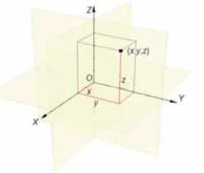</figure>
<p>  1.30 ࢫࢺ࣮ࣝ 㜵Ṇ࠶ࡿ࠸ࡣ㌴୧ࡢࢫࢺ࣮ࣝ 㜵Ṇไᚚ⿦⨨  㹇㹁࢚ࣥ ࢪࣥ ࢆࢫࢺ࣮ࣝ ࠿ࡽᏲࡿࡓࡵࠊ࢚ࣥ ࢪࣥ ࠾ࡼࡧ㸭࠶ࡿ࠸ࡣࢠ࢔࣎ ࢵࢡࢫ࠾ࡼ ࡧ㸭࠶ࡿ࠸ࡣࢡࣛ ࢵࢳࢥࣥ ࢺ࣮ࣟࣝ ࡟⮬ື ⓗ࡟స⏝ࡍࡿࢩࢫࢸ࣒ ࠋ ࢫࢺ࣮ࣝ 㜵Ṇࢩࢫࢸ࣒ ࢆ⿦╔ࡋ࡚ ࠸ࡿ㌴୧ࡢሙྜ ࠊ஦ᨾࢆ㉳ࡇࡋࡓ᫬࡟࢚ࣥ ࢪࣥ ࡢ࠿ ࠿ࡗࡓ≧ែࡢࡲࡲᨺ⨨ࡉࢀࡿࡇ࡜ࡀ࡞࠸ࡼ࠺ࠊࡍ࡭࡚ ࡢࡑࡢࡼ࠺࡞ࢩࢫࢸ࣒ ࡣ㉳ື ᚋ 㸯㸮⛊௨ෆ࡛࢚ࣥ ࢪࣥ ࢆษࡿࡼ࠺タᐃࡉࢀ࡚ ࠸࡞ࡅࢀࡤ࡞ࡽ࡞࠸ࠋ㻌 ࡇࡢࡼ࠺࡞ࢩࢫࢸ࣒ ࡢ၏୍ ࡢ┠ⓗࡣࠊࢻࣛ ࢖ࣂ࣮ ࡀ㌴୧ࡢไᚚࢆኻࡗࡓሙྜ ࡟࢚ࣥ ࢪࣥ ࡀࢫࢺ࣮ࣝ ࡍࡿࡢࢆ㜵ࡄࡇ࡜࡛ ࠶ࡿࠋࢩࢫࢸ࣒ ࡀసື ࡋ࡚ ࠸ࡿ᫬࡟㌴୧ࡀࢭ࢝ࣥ ࢻ ௨ୖ ࡢࢠ࢔࡟࠶ࡿሙྜ ࠊ」ᩘ ẁࢠ࢔ࢳ࢙ࣥ ࢪࡣࣇ࢓࣮ ࢫࢺࢠ࢔࠶ࡿ࠸ࡣࢽ࣮ࣗ ࢺࣛࣝ ࡢఱࢀ࠿࡟࡞ࡾࠊࡑࡢ௚ࡢࡍ࡭࡚ ࡢ≧ἣୗ࡛ ࡣࢡࣛ ࢵࢳࡢࡳࢆసື࡛ ࡁࡿࡇ࡜ࠋ㻌 ࡇࡢࡼ࠺࡞ࢩࢫࢸ࣒ ࡀ㉳ື ࡍࡿᗘ࡟ࠊࢡࣛ ࢵࢳࡣ᏶඲࡟ษࡾ㞳ࡉࢀ࡞ࡅࢀࡤ࡞ࡽࡎࠊ ࢻࣛ ࢖ࣂ࣮ ࡢࢡࣛ ࢵࢳసື ⿦⨨ࡢ฼⏝ྍ ⬟࡞඲ື స⠊ᅖࡢ㸷㸳㸣ࢆ㉸࠼ࡿせồ࡟ࡼ ࡾࠊࢻࣛ ࢖ࣂ࣮ ࡀᡭື࡛ ࢡࣛ ࢵࢳࢆ᧯సࡍࡿࡇ࡜ࡼࡗ࡚ ࢩࢫࢸ࣒ ࡢᶵ⬟ࢆṆࡵࡿࡲ࡛ ࠊ ࡑࡢ≧ែࢆ⥔ᣢࡋ࡞ࡅࢀࡤ࡞ࡽ࡞࠸ࠋ  1.31 ࢩࢢࢼ࣮ࣝ࢝ࣛ ࡢᐃ⩏ ࡇࡢⰍࡣࠊ᫨ኪࢆၥࢃࡎ᫂ ░࡟ぢ࠼࡞ࡅࢀࡤ࡞ࡽࡎࠊ㯤Ⰽ㸭ࣛ ࢖࣒ 㸭㉥Ⰽࡀ᥎ዡࡉࢀ ࡿࠋ㌴୧㸯ྎ ࡟ࡘࡁ㸯Ⰽࡢࡳࡀࠊࢩࢢࢼ࣮ࣝ࢝ࣛ ࢆᣦᐃࡉࢀࡿ㒊ศ࡟㑅ᢥࡉࢀࡿࡇ࡜ ࡟࡞ࡗ࡚ ࠸ࡿࠋ  ཯ᑕࢫࢸࢵ࣮࢝ ࡢᐃ⩏㸸 ⬟࡞㝈ࡾ㧗࠸㍤ᗘ཯ᑕ≉ᛶ㸦౛࠼ࡤ㸱㹋㸲㸮㸷㸮ࢩ࣮ࣜ ࢬࢱ࢖ࣉ㸱㸭ࢲ࢖ࣖࣔࣥ ࢻ</p>
<p><span class="pagemark" id="p8">P.8</span>ࢢ࣮ࣞ ࢻࡢࡼ࠺࡞ࢱ࢖ࣉ㸱ࠊ㹐㸿㸱㸧ࢆ᭷ࡍࡿࡶࡢ࡛ ࡞ࡅࢀࡤ࡞ࡽ࡞࠸ࠋ   ➨㸰᮲ つ๎   2.1 ᇶᮏཎ๎</p>
<p>2.1.1 ᮏつ๎ ࡀ᫂ ☜࡟ㄆࡵ࡚ ࠸࡞࠸ࡇ࡜ࡣ⚗Ṇࡉࢀࡿࠋ  2.1.2 ㌴୧ࡣ࠸࠿࡞ࡿ≧ἣ࡛ ࠶ࡗ࡚ ࡶࠊࢻࣛ ࢖ࣂ࣮ ࡢࢥࣥ ࢺ࣮ࣟࣝ ୗ࡟࡞ࡅࢀࡤ࡞ ࡽ࡞࠸ࠋ  2.2 ࢔ࢡࢸ࢕ࣈࢩࢫࢸ࣒   2.2.1 ᮏつ๎ ࡟ᐃࡵࡢ࡞࠸㝈ࡾࠊࡲࡓ࢚ࣥ ࢪࣥ ┘ど⿦⨨࠾ࡼࡧไᚚࢩࢫࢸ࣒ ࢆࡢࡒ ࡁࠊ୍ษࡢ࢔ࢡࢸ࢕ࣈࢩࢫࢸ࣒ ࠶ࡿ࠸ࡣᶵ⬟ࡣ⚗Ṇࡉࢀࡿ㸸ࢩࣕ ࢩ࣮ ࢥࣥ ࢺ࣮ࣟࣝ ࠊ࣮࢜ ࢺ࣐ ࢳࢵࢡࢺࣛࣥ ࢫ࣑ ࢵࢩࣙࣥ ࠊࣇ࢓࢖ࢼࣝ ࢻࣛ ࢖ࣈ࣭ ࢹ࢕ࣇ࢓ࣞࣥ ࢩࣕࣝ ⿦⨨ࠊࢩࣙ ࢵࢡ࢔ࣈࢯ࣮ ࣂ࣮ ࠊࢧࢫ࣌ࣥ ࢩࣙࣥ ࡲࡓࡣ஌㌴㧗ㄪᩚ ⿦⨨ࠊ 㸲㍯᧯⯦࡞࡝ࠋ  2.2.2 ࢪࣥ ࡟స⏝ࡍࡿࢺࣛ ࢡࢩࣙࣥ ࢥࣥ ࢺ࣮ࣟࣝ ⿦⨨ࡣㄆࡵࡽࢀࡿࠋ  2.3 Ᏻ඲ୖ ࡢ⌮⏤࡟ࡼࡿᨵᐃ  Ᏻ඲ୖ ࡢ⌮⏤࡟ࡼࡿᨵᐃࡣ㺂┤ࡕ࡟㺂ண࿌࡞ࡃᐇ᪋ࡉࢀࡿ㹿  2.4つ๎ ࡢ㑂Ᏺ </p>
<p>2.4.1 ᮏつ๎ ࡟㌴୧ࡀࡑࡢ඲య࡟ࡘ࠸࡚ ➇ᢏ఍ᮇ㛫ࢆ㏻ࡌ࡚ ᖖ࡟ྜ ⮴ࡋ࡚ ࠸ࡿࡇ࡜ ࢆ㌴᳨ ጤဨ࠾ࡼࡧ➇ᢏᑂᰝጤဨ఍࡟⣡ᚓࡉࡏࡿࡇ࡜ࡣࠊྛ ➇ᢏཧຍ⪅ࡢ⩏ົ࡛ ࠶ࡿࠋ  2.4.2 ➇ᢏཧຍ⪅ࡀ᪂ࡋ࠸タィ࠶ࡿ࠸ࡣࢩࢫࢸ࣒ ࢆᑟධࡍࡿࡇ࡜ࢆᮃࡴሙྜ ࠊ࠶ࡿ ࠸ࡣᮏつ๎ ࡢ࠸࠿࡞ࡿ㒊ศ࡛ ࠶ࡗ࡚ ࡶ୙᫂ ░࡟ឤࡌࡿሙྜ ࠊ⪏ஂ ࢥ࣑ ࢵࢸ࢕ ࡟ࡑࡢゎ㔘ࢆồࡵࡿࡇ࡜ࡀ࡛ ࡁࡿࠋ ゎ㔘ࡀ୍ ษࡢ᪂ࡋ࠸タィ࠶ࡿ࠸ࡣࢩࢫࢸ࣒ ࡟㛵ࡍࡿሙྜ ࠊ௨ୗࢆ㐃⤡ࡋ࡞ࡅ ࢀࡤ࡞ࡽ࡞࠸㸸 㸫 タィ࠶ࡿ࠸ࡣࢩࢫࢸ࣒ ࡢ᏶඲࡞グ㏙ 㸫 タィ࠶ࡿ࠸ࡣࢩࢫࢸ࣒ ࡢ᏶඲࡞ᶵ⬟グ㏙ 㸫 㐺ษ࡞ሙྜ ࡟ࡣᅗ㠃࠶ࡿ࠸ࡣ␎ᅗ 㸫 ษࡢᥦ᱌ࡉࢀࡓ᪂タィࡀࠊ㌴୧ࡢࡑࡢ௚ࡢ㒊ศ࡟┤ࡕ࡟ᙳ㡪ࡍࡿࡇ࡜࡟ 㛵ࡋ࡚ ࡢ➇ᢏཧຍ⪅ࡢពぢ㸫 ࡑࡢࡼ࠺࡞୍ ษࡢ᪂タィ࠶ࡿ࠸ࡣࢩࢫࢸ࣒ ࢆ౑⏝ࡍࡿࡇ࡜࠿ࡽⓎ⏕ࡍࡿྍ ⬟ᛶࡢ࠶ࡿ㛗ᮇⓗ࡞ᡂࡾ⾜ࡁ࠶ࡿ࠸ࡣ᪂つ㛤Ⓨ࡟㛵ࡍࡿ➇ᢏཧຍ⪅ࡢ ពぢ㸫 ➇ᢏཧຍ⪅ࡀ⪃࠼ࡿࠊࡑࡢ᪂タィ࠶ࡿ࠸ࡣࢩࢫࢸ࣒ ࡀ㌴୧ࡢᛶ⬟ࢆྥୖ ࡉ ࡏࡿṇ☜࡞᪉ἲ㸦᏶඲࡞ᛶ⬟ሗ࿌᭩ࢆྵ ࡴ㸧ࠋ </p>
<h5 id="2-5-ィ"><span class="pagemark" id="p9">P.9</span>2.5 ㌴୧ᑍἲࡢィ</h5>
<p>ࡍ࡭࡚ ࡢィ ࡣࠊ㌴୧ࡀᖹᆠ࡞Ỉᖹ㠃࡟㟼Ṇࡋࡓ≧ែ࡛ ⾜ࢃࢀ࡞ࡅࢀࡤ࡞ࡽ࡞࠸ࠋ ␗࡞ࡿ௙ᵝヲ⣽ࡀ᫂ ░࡟ࡉࢀ࡞࠸㝈ࡾࠊィ ࡣࡇࡢỈᖹィ 㠃࡟ᑐࡋࠊ㌴୧࡟࣍ ࢖࣮ࣝ ࢆ⿦╔ࡋ ࡓ㏻ᖖࡢ≧ែ࡛ ᐇ᪋ࡉࢀࡿࠋ  2.6 ᮦ㉁ </p>
<p>2.6.1 ㌴୧ࡢ࠸࠿࡞ࡿ㒊ရࡶ㸲㸮GPa㸦㹥/cm3㸧ࢆୖ ᅇࡿ≉ᐃࡢᙎᛶ⋡ࢆ᭷ࡍࡿ㔠ᒓ ᛶᮦ㉁࡛〇సࡉࢀ࡚ ࠸࡚ ࡣ࡞ࡽ࡞࠸ࠋつᐃ࡬ࡢྜ ⮴ࢆ☜ㄆࡍࡿࡓࡵࡢヨ㦂ࡀ 㹄㹇㸿ࢸࢫࢺᡭ㡰03/03࡟ᚑࡗ࡚ ᐇ᪋ࡉࢀࡿ㸦௜๎ 㹅ཧ↷㸧ࠋ  2.6.2 ࢢࢿࢩ࣒࢘ ࢆᇶ♏࡜ࡋࡓྜ 㔠࡛〇సࡉࢀࡿ㒊ရ࡟ࡘ࠸࡚ 㸸 㸫 㸱㹫㹫ᮍ‶ࡢཌࡳࡢ࣐ ࢢࢿࢩ࣒࢘ ࢩ࣮ ࢺࡢ౑⏝ࡣ⚗Ṇࡉࢀࡿࠋ 㸫 㗪㐀࠶ࡿ࠸ࡣᶵᲔຍᕤࡉࢀࡓ㒊ရࡣࠊቨࡢཌࡳࡀ㸱㹫㹫௨ୗ࡛ ࠶ࡿࡇ࡜ࡣ ⚗Ṇࡉࢀࡿࠋᒁᡤⓗ࡞౛እࡣㄆࡵࡽࢀࡿሙྜ ࡀ࠶ࡿࠋ  2.6.3 ࢳࢱࢽ࣒࢘〇ࡢ㒊ရࡢ౑⏝ࡣㄆࡵࡽࢀࡿࡀࠊࢧࢫ࣌ࣥ ࢩࣙࣥ 㒊ရࠊࢫࢸ࢔ࣜࣥ ࢢ࠶ࡿ࠸ࡣไື ⿦⨨ࡢ㒊ရ࡬ࡢ⁐᥋ࡣ⚗Ṇࡉࢀࡿ㸦Ἔᅽ㓄⟶ࡣ㝖ࡃ㸧ࠋ  2.7 ᨵ㐀  බㄆ᭩ᘧ࡟୍ぴࡉࢀࡿヲ⣽࠾ࡼࡧ㌴୧ࡢࡍ࡭࡚ ࡢ✵ຊⓗせ⣲ࡣࠊ㌴୧ࡢ〇㐀⪅࡟ࡼࡗ࡚ ࡢࡳࠊ⪏ஂ ࢥ࣑ ࢵࢸ࢕ࡢྜ ពࡢୖ࡛ ኚ᭦࡛ ࡁࡿࠋ ࡑࢀࡽࡢኚ᭦ࡣࠊḟ࡟බㄆࢢ࣮ࣝ ࣉ࡟ࡼࡾබㄆࡉࢀࡿࠋ ᪦බㄆ᭩ᘧࡀ㹄㹇㸿࡟ࡼࡗ࡚ ᭷ຠ࡜ࡉࢀࡓ࡞ࡽࡤࠊ〇㐀⪅ࡣࡑࡢ෗ࡋࢆࠊ㈍኎ࡋࡓ ࠶ࡽࡺࡿ㌴୧ࡢᡤ᭷⪅࡟ࠊ᭱ึ ࡢ࣮࣌ ࢪࡢグධࢆࡋࡓᚋΏࡍࡇ࡜㸦ࢩࣕ ࢩ࣮ ␒ྕ ࠊᡤ ᭷⪅ࡢẶྡ ࠾ࡼࡧఫᡤ㸧ࠋ ㌴୧ࡣබㄆࢆཷ ࡅ࡚ ࠸࡞࠸ሙྜ ࡣࠊ➇ᢏ఍࡟ཧຍࡍࡿ๓ࡢ㌴᳨ ࢆཷ ࡅࡿࡇ࡜ࡣㄆࡵࡽ ࢀ࡞࠸ࠋ  ᪂ࡋ࠸㌴୧ࡢබㄆ㸸 ᪂ࡋ࠸㌴୧ࡢබㄆ࡜ࠊ➇ᢏཧຍ๓ࡢ㌴᳨ ࡬ࡢᥦ♧࡜ࡢ㛫࡟ࡣࠊ᭱ ప㸱㸮᪥㛫ࡀᚲせ࡜ ࡉࢀࡿࡀࠊ⪏ஂ ࢥ࣑ ࢵࢸ࢕ࡢ⿢㔞࡟ࡼࡾࠊ୙ྍ ᢠຊ࡜ㄆࡵࡽࢀࡿሙྜ ࡣ㝖ࡃࠋ ᪂ࡋ࠸㌴୧ࡢබㄆ᭩ᘧࡢ᭱ึ ࡢⲡ✏ᥦฟ࡜බㄆࢢ࣮ࣝ ࣉ࡟ࡼࡿࡑࡢᢎㄆᮇ㝈࡜ࡢ㛫 ࡟ࡣ᭱ ప㸱㸮᪥ࡀᚲせ࡜ࡉࢀࡿࠋ  ࡍ࡛ ࡟බㄆࡉࢀࡓ㌴୧࡟ᐇ᪋ࡉࢀࡓᨵ㐀㸭㐍໬ࡢබㄆ㸸 ࡍ࡛ ࡟බㄆࡉࢀࡓ㌴୧࡟ᐇ᪋ࡉࢀࡓᨵ㐀㸭㐍໬ࡢබㄆ࡜ࠊ➇ᢏཧຍ๓ࡢ㌴᳨ ࡬ࡢᥦ♧ ࡜ࡢ㛫࡟ࡣࠊ᭱ ప㸯㸳᪥㛫ࡀᚲせ࡜ࡉࢀࡿࡀࠊ⪏ஂ ࢥ࣑ ࢵࢸ࢕ࡢ⿢㔞࡟ࡼࡾࠊ୙ྍ ᢠ ຊ࡜ㄆࡵࡽࢀࡿሙྜ ࡣ㝖ࡃࠋ ࡍ࡛ ࡟බㄆࡉࢀࡓ㌴୧ࡢᨵ㐀㸭㐍໬ࡢබㄆ᭩ᘧࡢ᭱ึ ࡢⲡ✏ᥦฟ࡜බㄆࢢ࣮ࣝ ࣉ࡟ ࡼࡿࡑࡢᢎㄆᮇ㝈࡜ࡢ㛫࡟ࡣ᭱ ప㸯㸳᪥ࡀᚲせ࡜ࡉࢀࡿࠋ බㄆ᭩ᘧࡣ➇ᢏཧຍ⪅࡟ࡼࡗ࡚ ࠊ㌴᳨ ࡢ㛫࡟ᥦฟࡉࢀ࡞ࡅࢀࡤ࡞ࡽ࡞࠸ࠋ    </p>
<p><span class="pagemark" id="p10">P.10</span>➨㸱᮲ ㌴య࠾ࡼࡧᑍἲ  㹄㹇㸿ࡣࠊ㌴୧ࡀ㉮⾜୰࡟ື ࡁࡀ࠶ࡿ࡜ࡳࡽࢀࡿ㸦࠶ࡿ࠸ࡣࡑࡢࡼ࠺࡟␲ࢃࢀࡿ㸧㌴యࡢ ࠸࠿࡞ࡿ㒊ศ࡟ࡶࠊ㈇Ⲵ㸭೫ྥヨ㦂ࢆᐇ᪋ࡍࡿᶒ฼ࢆ␃ಖࡍࡿࠋ  ࢳ࣮࣒ ࡣ㹄㹇㸿ࡢᣦ♧࡟ᚑ࠸ࠊࣃࢵࢻ࠾ࡼࡧ࢔ࢲࣉࢱ࣮ ࢆᥦ౪ࡋ࡞ࡅࢀࡤ࡞ࡽ࡞࠸ࠋ  ࡑࡢ௚ࡢᇶ‽ࡢ୰࡛ ࠊ㹄㹇㸿ࡣᙎᛶኚᙧ㡿ᇦ࡟ࢃࡓࡗ࡚ ㈇Ⲵ㸭೫ྥ ᭤⥺ࡢ⥺ᙧᛶࢆ᳨ウࡍ ࡿࠋ୍ ษࡢ㠀⥺ᙧᛶࡣረᛶኚᙧ㡿ᇦ࡟࡞ࡅࢀࡤ࡞ࡽ࡞࠸ࠋ  3.1 ᑍἲ  ୗグ➨㸱.㸴㡯࡟࡚チࡉࢀ࡚ ࠸ࡿࡶࡢࢆ㝖ࡁࠊෆ㒊࠾ࡼࡧእ㒊ࡢ ᐃ㸦㛗ࡉࠊᖜࠊ࣮࢜ ࣂ࣮ ࣁࣥ ࢢࠊ࣍ ࢖࣮࣮ࣝ࣋ ࢫࠊ࢘ ࢖ࣥ ࢻࢫࢡ࣮ࣜࣥ ࠊ࢘ ࢖ࣥ ࢻ࢘ ࡞࡝㸧࠾ࡼࡧ㌴యᵓ ᡂせ⣲ࡢ඲యⓗᙧ≧ࡣࠊබㄆ᭩ᘧ࡟࠶ࡿ㏻ࡾ࡟⥔ᣢࡉࢀ࡚ ࠸࡞ࡅࢀࡤ࡞ࡽ࡞࠸ࠋ</p>
<p>3.1.1 ࢖࣮࣮ࣝ࣋ ࢫ㸸⮬⏤ࠋࡓࡔࡋබㄆ᭩ᘧ࡟Ⓩ㘓ࡉࢀࡓࡶࡢ࡜ྠ୍࡛ ࡞ࡅࢀࡤ࡞ ࡽ࡞࠸ࠋ  3.1.2 ඲㛗㸸᭱ ኱㸲,㸴㸳㸮㹫㹫㸦ࣜ ࢔࢘ ࢖ࣥ ࢢࢆྵ ࡴ㸧  3.1.3 ࣂ࣮ ࣁࣥ ࢢ a/ ࣇࣟࣥ ࢺ࣮࢜ ࣂ࣮ ࣁࣥ ࢢࡣ㸯,㸮㸮㸮㹫㹫ࡲ࡛ ࡟ไ㝈ࡉࢀࡿࠋ b/ ࢔࣮࢜ ࣂ࣮ ࣁࣥ ࢢࡣ㸵㸳㸮㹫㹫ࡲ࡛ ࡟ไ㝈ࡉࢀࡿ  3.1.4 ඲ᖜ㸸᭱ ኱㸯㸷㸮㸮㹫㹫ࠊ᭱ ᑠ㸯㸶㸮㸮㹫㹫 ➨㸱.㸳.㸲.㹟㡯࡟ᐃ⩏ࡉࢀࡓᐜ✚࡟ࡘ࠸࡚ ࡣ᭱ ኱ᖜ㸰㸮㸮㸮㹫㹫ࡀㄆࡵࡽࢀ ࡿࠋ  3.1.5 㧗ࡉ㸸㌴యࡢ࠸࠿࡞ࡿ㒊ศࡶࠊᇶ‽㠃ࡼࡾୖ ᪉㸯㸮㸳㸮㹫㹫ࢆ㉸࠼࡚ ࠶ࡗ࡚ ࡣ ࡞ࡽ࡞࠸㸦➨㸱.㸳.㸯ཧ↷㸧ࠋ  3.2 ࢻ࢔ </p>
<p>3.2.1 ࢻ࢔ࡣࠊ➨㸯㸴.㸴.㸯㡯࡟ヲグࡉࢀࡿ㛤ཱྀ 㒊ࢆ㏻ࡌ࡚ ࠊࢥࢡࣆࢵࢺࡢ㏻ᖖࡢฟ ධࡾࢆᥦ౪ࡋ࡞ࡅࢀࡤ࡞ࡽ࡞࠸ࠋ  3.2.2 㛤ཱྀ 㸦ࣄࣥ ࢪ㸧࠶ࡿ࠸ࡣ᪋㘄㸦ࣟ ࢵࢡ㸧⿦⨨ࡣࠊ⥭ᛴࡢሙྜ ࡟ࠊࢥࢡࣆࢵࢺࡢ እ㒊࠿ࡽ࡜ྠ ᵝ࡟ෆ㒊࠿ࡽࡶࠊࢻ࢔඲యࡀ┤ࡕ࡟ゎᨺࡉࢀࡿࡼ࠺࡟ᶵᵓタィࡉࢀ࡚ ࠸࡞ࡅࢀࡤ࡞ࡽ࡞࠸ࠋ  ࡑࢀࡽࡣබㄆࡉࢀ࡞ࡅࢀࡤ࡞ࡽ࡞࠸ࠋ  㛤ཱྀ 㸦ࣄࣥ ࢪ㸧࠶ࡿ࠸ࡣ᪋㘄㸦ࣟ ࢵࢡ㸧⿦⨨ࡣࠊࢩࢢࢼ࣮࡛࣐࣮ࣝ࢝ࣛ࢟ࣥ ࢢ ࡉࢀ࡚ ࠸࡞ࡅࢀࡤ࡞ࡽ࡞࠸ࠋ  3.3 ࢖ࣥ ࢻࢫࢡ࣮ࣜࣥ 㸤࢞ࣛ ࢫ㒊ศ </p>
<p>3.3.1 ࢖ࣥ ࢻࢫࢡ࣮ࣜࣥ  ࢿ࣮ ࢺ࢞ࣛ ࢫ࠶ࡿ࠸ࡣ࣏࣮ࣜ࢝࣎ ࢿ࣮ ࢺ〇㸦ཌࡉ㸸᭱ ప㸱.㸳㹫㹫㸧࠶ࡿ</p>
<p><span class="pagemark" id="p11">P.11</span>࠸ࡣබㄆࢢ࣮ࣝ ࣉ࡟ࡼࡾᢎㄆࡉࢀࡓྠ ➼ࡢ⣲ᮦ〇ࡢࠊ୍ యᵓ㐀ࡢ࢘ ࢖ࣥ ࢻࢫ ࢡ࣮ࣜࣥ ࡀ⩏ົ ௜ࡅࡽࢀࡿࠋ ࢖ࣥ ࢻࢫࢡ࣮ࣜࣥ ࡢୖ ➃㒊ࡣ㸸 㸫 ᒇ᰿ࡢ᭱ 㧗Ⅼࡼࡾపࡃ࡞ࡅࢀࡤ࡞ࡽ࡞࠸㸦࢚ ࢔࢖ࣥࣞ ࢵࢺࡣ㝖ࡃ㸧 㸫 ప㸱㸮㸮㹫㹫ࡢᖜ࡟Ώࡗ࡚ ᇶ‽㠃࠿ࡽᑡ࡞ࡃ࡜ࡶ㸷㸳㸮㹫㹫ࡢ㧗ࡉ࡟ ࡞ࡅࢀࡤ࡞ࡽ࡞࠸㸦➨㸱.㸳.㸯ཧ↷㸧ࠋ ࢖ࣥ ࢻࢫࢡ࣮ࣜࣥ ࡣࠊ࣐࣮ ࢩࣕࣝ ࡀ㹌㹭.㸲࢔࣮ࣞࣥ࢟ 㸦භゅࣞࣥ ࢳ㸧ࢆ౑ ⏝ࡋ࡚ྲྀ ࡾ㝖ࡃࡇ࡜ࡀ࡛ ࡁ࡞ࡅࢀࡤ࡞ࡽ࡞࠸ࠋ </p>
<p>3.3.2 ࢫ㒊ศ  ࢿ࣮ ࢺ〇ࡢࢧ࢖ࢻ࢘ ࢖ࣥ ࢻ࢘㸦᭱ ప⫗ཌ㸰.㸮㹫㹫㸧ࡀチࡉࢀࡿࠋ  ㏣ຍࡢࣇ࣮࣒ࣞ ࢆྲྀ ࡾ௜ࡅࡿࡇ࡜ࡀ࡛ ࡁࡿࡀࠊࡋࡗ࠿ࡾ࡜ྲྀ ࡾ௜ࡅࡽࢀ࡞ ࡅࢀࡤ࡞ࡽࡎࠊ➨㸯㸴᮲㸵㡯㸱࡟つᐃࡉࢀࡿࢻࣛ ࢖ࣂ࣮ ࡢど⏺ࢆጉࡆ࡚ ࡣ ࡞ࡽ࡞࠸ࠋ  ㏣ຍࡢᏳ඲␃ࡵලࡀ᥎ዡࡉࢀࡿࠋ  ࢥࢡࣆࢵࢺ࠿ࡽ✵Ẽࢆᘬࡁฟࡍࡓࡵࡢ᭱ ᑠ㸲㸮㹡㹫2ࡢ㛤ཱྀ 㒊㸦࣮ࣝ ࣂ࣮ 㸧 ࢆࠊྛ ࢧ࢖ࢻ࢘ ࢖ࣥ ࢻ࢘ ࡢᚋ㒊࡟ࠊ࠶ࡿ࠸ࡣྛ ࢥࢡࣆࢵࢺฟධࡾཱྀ 㒊࡟స ࡽ࡞ࡅࢀࡤ࡞ࡽ࡞࠸ࠋ  3.4 ㌴య  ࠿ࡽぢ࡚ 㸦ᖹ㠃ᅗ㸧ࠊᶓࡢ❧㠃ᅗ࡛ぢ࡚ ࠊࡲࡓ๓࡜ᚋࢁ࠿ࡽぢ࡚ ࠊ㌴యࡣࠊᮏつ๎࡛᫂ ☜࡟チྍ ࡉࢀ࡚ ࠸࡞࠸㝈ࡾࠊᶵᲔᵓᡂ㒊ရࡀぢ࠼࡚ ࡣ࡞ࡽ࡞࠸ࠋ㌴୧㉮⾜୰ࡢྍື ࡢ㌴య㒊ရ㸭せ⣲ࡣࠊ⚗Ṇࡉࢀࡿࠋ ㌴୧㉮⾜୰࡟ࠊ⮬ື ⓗ࡟ࠊ࠾ࡼࡧ㸭࠶ࡿ࠸ࡣࢻࣛ ࢖ࣂ࣮ ࡀไᚚࡋࠊ✵Ẽὶࢆኚ᭦ࡍࡿ୍ ษࡢ⿦⨨ࡣࠊᮏつᐃ࡛᫂ ࡽ࠿࡟チྍ ࡉࢀ࡚ ࠸࡞࠸㝈ࡾ⚗Ṇࡉࢀࡿࠋ ࣈ࣭ࣟ࢘ࣥ ࢹ࢕ࣇ࣮ࣗ ࢨ࣮ ࡣ⚗Ṇࡉࢀࡿ㸸ཎ๎ ⓗ࡟᤼Ẽὶࢆ฼⏝ࡋࢹ࢕ࣇ࣮ࣗ ࢨ࣮ ࡢ ࢺࣥ ࢿࣝ ࢆຊᏛⓗ࡟㐩ᡂࡍࡿࡇ࡜ࡀ࡛ ࡁࡿࠊ࠶ࡿ࠸ࡣ➃㒊ࢆᑒ㙐ࡍࡿពᅗࡢ࠶ࡿࡶࡢ ࡜ࡉࢀࡿࠋ࡝ࡕࡽࡢሙྜ ࡶࢹ࢕ࣇ࣮ࣗ ࢨ࣮ ࡢ✵ຊⓗᣲື ࢆᨵၿࡍࡿࡇ࡜ࡀ࡛ ࡁࡿࡇ࡜ ࡀᮇᚅࡉࢀࡿࠋ ౛࡜ࡋ࡚ ࠊࡑࢀ࡟㝈ࡿࡇ࡜࡞ࡃ㸸᤼Ẽࣃ࢖ࣉฟཱྀ ࡣࠊࢹ࢕ࣇ࣮ࣗ ࢨ࣮ ࡢෆ㒊࡟࠶ࡗ࡚ ࡣ࡞ࡽ࡞࠸ࠋࣜ࢔࣍ ࢖࣮ࣝ ㍈ࢆ୰ᚰ࡜ࡋࡓ㸷㸮㸮㹫㹫┤ᚄࡢ෇⟄ࡢෆഃ࡟࠶ࡗ࡚ ࡣ࡞ ࡽࡎࠊ㌴୧୰ᚰ⥺࠿ࡽ㸷㸳㸮㹫㹫࡜㸳㸳㸮㹫㹫㞳ࢀࡓ㛫࡟ఙᙇࡋ࡚ ࡣ࡞ࡽ࡞࠸ࠋ ࡇࢀࡽࡢฟཱྀ ࡢ࠸࠿࡞ࡿⅬࡶࠊࣜ࢔ࢹ࢕ࣇ࣮ࣗ ࢨ࣮ ࡢᚋ➃࠿ࡽ㸱㸮㸮㹫㹫ᮍ‶࡟࡞ࡅ ࢀࡤ࡞ࡽ࡞࠸ࠋ ࡇࢀࡽࡢฟཱྀ ࡢ࠸࠿࡞ࡿⅬࡶࠊ㌴୧ࢆୖ ࠿ࡽࠊ࠶ࡿ࠸ࡣᶓ࠿ࡽࡲࡓࡣᚋࢁ࠿ࡽぢ࡚ ࠊぢ࠼࡚ ࠸࡞ࡅࢀࡤ࡞ࡽ࡞࠸ࠋ ࠸࠿࡞ࡿฟཱྀ ࡶࠊ㛗ࡉ㸭ᖜẚࡀ㸱ࢆୖ ᅇࡿ᩿ 㠃ࢆ᭷ࡍࡿࡇ࡜ࡣ࡛ ࡁ࡞࠸ࠋ ᤼Ẽฟཱྀ ࡢ㡿ᇦࡣࠊ⮬↛྾Ẽ࢚ࣥ ࢪࣥ ࡢሙྜ ࡣ࢚ࣥ ࢪࣥ ᤼Ẽ࣏࣮ ࢺࡢ㡿ᇦࡼࡾࠊࢱ࣮࣎ ࢳ࣮ࣕ ࢪ࣮ࣕ ௜ࡁ࢚ࣥ ࢪࣥ ࡢሙྜ ࡣࢱ࣮ ࣅࣥ ฟཱྀ 㡿ᇦࡼࡾࠊᑠࡉ࠸ࡶࡢ࡛ ࠶ࡿࡇ࡜ ࡣ࡛ ࡁ࡞࠸ࠋ ᤼Ẽ࢞ ࢫ࡟᭱ୖ 㒊㠃ࡀࡉࡽࡉࢀࡿ㌴య㒊ศࡣࠊ᤼Ẽฟཱྀ ࡢᶓ᪉ྥ ᆶ┤㠃ࡢᚋ᪉ࡢ࠸ࡎ ࢀࡢⅬࡶࠊࢹ࢕ࣇ࣮ࣗ ࢨ࣮ ࠿ࡽ㸦Z᪉ྥ ࡬㸧㸳㸮㹫㹫௨ୖ ࠶ࡿࡇ࡜ࠋ ᶓ࠿ࡽࡢฟཱྀ ࡀ࠶ࡿሙྜ 㸸 ᤼Ẽࡢ⤊➃㒊ศࡢᙧ≧ࡣࠊ㌴యࡢእഃ⾲㠃࡟㛵ࡋ࡚ ᤼Ẽ࢞ ࢫὶࡀ᭱ ప㸴㸮ᗘࡢゅᗘࡀ ࠶ࡿࡼ࠺࡟࡞ࡗ࡚ ࠸࡞ࡅࢀࡤ࡞ࡽ࡞࠸ࠋࡑࢀࡣ࣍ ࢖࣮ࣝ ࢔࣮ ࢳࡢ๓࡟఩⨨ࡋ࡚ ࠸࡞ࡅ ࢀࡤ࡞ࡽ࡞࠸ࠋ</p>
<p><span class="pagemark" id="p12">P.12</span>3.4.1 ࡇࡢ᮲㡯ࡣࠊ➨㸱᮲㸲㡯㸴࡟グ㍕ࡉࢀࡿ㛤ཱྀ 㒊࡟ࡣ㐺⏝ࡉࢀ࡞࠸㸸  a/ ഃ᪉࠿ࡽぢ࡚ 㸸 ㌴㍈୰ᚰ⥺ࡢ㧗ࡉࡼࡾୖ࡛ ࠊ୍ ษࡢ✵㛫ࡸษᢤࡁࡢ࡞࠸㌴యࡀࠊࢥࣥ ࣉ࣮ࣜ ࢺ࣍ ࢖࣮ࣝ 㸦࣍ ࢖࣮ࣝ ࡜ࢱ࢖ࣖ 㸧ࡢ᏶඲࡞࿘ᅖࢆそࡗ࡚ ࠸࡞ࡅࢀࡤ࡞ࡽ ࡞࠸ࠋ</p>
<p>࢖࣮ࣝ ࢔࣮ ࢳࡣࠊእഃ࠿ࡽぢ࡚ 㛤ᨺࡉࢀࡿࡢࡳ࡛ ࡞ࡅࢀࡤ࡞ࡽ࡞࠸ࠋ ௨ୗ࡟఩⨨ࡍࡿ඲㡿ᇦࡣ㸸 㸫 ๓㒊㌴㍈୰ᚰ⥺ࡢ㸲㸯㸳㹫㹫ᚋ᪉ࡢᆶ┤࡞ᶓ᪉ྥ 㠃࡜ᚋ㒊㌴㍈୰ᚰ⥺ ࡢ㸲㸯㸳㹫㹫๓᪉ࡢᆶ┤࡞ᶓ᪉ྥ 㠃࡜ࡢ㛫࡛  㸫 ᇶ‽㠃࠿ࡽ㸲㸮㸮㹫㹫ࡢ㧗ࡉࡲ࡛  ࡣࠊ㸯ࡘࡲࡓࡣ」ᩘ ࡢ㌴యせ⣲࡟ࡼࡾ᏶඲࡟そࢃࢀ࡚ ࠸࡞ࡅࢀࡤ࡞ࡽ࡞࠸ࠋ ࡇࡢ㌴యせ⣲㸦ྵ」ᩘ 㸧ࡢࡍ࡭࡚ ࡢぢ࠼ࡿ㒊ศࡣࠊ㌴యࡢ඲ᖜࡼࡾ㸯㸳㸮 㹫㹫ࢆ㉸࠼࡚ ෆഃ࡟࠶ࡗ࡚ ࡣ࡞ࡽ࡞࠸㸦ᕥྑ ࡢ௵ពࡢⅬࡢᖜ㸫㸵㸳㹫㹫㸧ࠋ  b/ ᚋ᪉࠿ࡽぢ࡚ 㸸 ᶵᲔⓗᵓᡂ㒊ရࡣࠊ㌴㍈୰ᚰ⥺ࢆ㏻㐣ࡍࡿỈᖹ㠃ࡢୖ࡛ぢ࠼࡚ ࡣ࡞ࡽ࡞࠸ࠋぢ࠼ࡿሙྜ ࡣࠊ⣙㸯㸮㹫㹫ࡢ࣡ ࢖࣮࣓ࣖ ࢵࢩࣗ ࠶ࡿ࠸ࡣ࣮ࣝ ࣂ࣮ ࡢ⿦╔ࡀ ⩏ົ ௜ࡅࡽࢀࡿࠋ ࢔ࡢࢥࣥ ࣉ࣮ࣜ ࢺ࣍ ࢖࣮ࣝ ࡣࠊ㌴㍈୰ᚰ⥺ࢆ㏻㐣ࡍࡿỈᖹ㠃ࡢୖ࡛ぢ࠼࡚ ࡣ࡞ࡽ࡞࠸ࠋࡑࢀࡽࡣሀ∼࡞㌴యせ⣲࡟ࡼࡗ࡚そ࠸㞃ࡉࢀ࡚ ࠸࡞ࡅࢀࡤ ࡞ࡽ࡞࠸㸦࣡ ࢖࣮࣓ࣖ ࢵࢩࣗ ࡣ⚗Ṇࡉࢀࡿ㸧ࠋ ࡇࢀࡽࡢせ⣲ࡢᙧ≧ࡣ⮬⏤࡛ ࠶ࡿࡀ㸸 㸫 ཌࡉࡀ୍ ᐃ࡛ ࡞ࡅࢀࡤ࡞ࡽ࡞࠸ࠋ 㸫 ➇ᢏ఍ᮇ㛫୰ࢆ㏻ࡌࠊ㌴య࡟ᙉຊ࡟ᅛᐃࡉࢀ࡚ ࠸࡞ࡅࢀࡤ࡞ࡽ࡞࠸ࠋ ㌴యࡢᚋ㒊ࡣࠊᇶ‽㠃࡟ᆶ┤࡞㸰ᯛࡢᶓ᪉ྥ ࣉ࣮ࣞ ࢺࡀྲྀ ࡾ௜ࡅࡽࢀ࡞ࡅ ࢀࡤ࡞ࡽ࡞࠸ࠋ ࡑࢀࡽࡣࠊ 㸫 ➨㸳ᅗ࡟ᚑࡗ࡚ ࠸࡞ࡅࢀࡤ࡞ࡽ࡞࠸ 㸫 ㌴యࡢᚋ➃㒊࡟࡞ࡅࢀࡤ࡞ࡽ࡞࠸ 㸫 㒊୙ᾐ㏱ᛶࡢ⾲㠃ࢆ᭷ࡋ࡚ ࠸࡞ࡅࢀࡤ࡞ࡽࡎࠊ➃㒊ࡣ᭱ ኱㸳㹫㹫༙ ᚄࡢ‴᭤ࢆᙧᡂࡍࡿࡇ࡜ࡀ࡛ ࡁࡿ 㸫 ➇ᢏ఍ᮇ㛫୰ࢆ㏻ࡌࠊ㌴య࡟ᙉຊ࡟ᅛᐃࡉࢀ࡚ ࠸࡞ࡅࢀࡤ࡞ࡽ࡞࠸ࠋ  c/ ࠿ࡽぢ࡚ 㸸 ی ୧᪉ࡢ๓㒊ゅᗘࡣ᭱ ప㸳㸮㹫㹫ࡢ༙ ᚄࢆ᭷ࡋ࡚ ࠸࡞ࡅࢀࡤ࡞ࡽ࡞࠸ࠋ  ௨ୗ࡟఩⨨ࡍࡿ඲㡿ᇦ㸸 㸫 ๓㒊㌴㍈୰ᚰ⥺ࡢᚋ᪉㸲㸯㸳㹫㹫ࡢᆶ┤࡞ᶓ᪉ྥ ᶓ᩿ 㠃࡜➨㸯㸴.㸴. 㸯㡯࡟つᐃࡉࢀࡿࢥࢡࣆࢵࢺ㛤ཱྀ 㒊ࡢ๓➃㒊࡜ࡢ㛫ࠊ 㸫 ㌴య඲ᖜ࠿ࡽ㸱㸮㸮㹫㹫ࢆᕪࡋᘬ࠸ࡓࡶࡢ࡜ྠ ➼࡞᭱ పᖜ࡟Ώࡗ࡚ ࠊ ㌴୧ࡢ๓ᚋ୰ᚰ⥺࡟ᕥྑ ᑐ⛠࡟㓄ࡉࢀࡿ㒊ศ㸦ᕥྑ ࡢ௵ពࡢⅬࡢᖜ㸫 㸯㸳㸮㹫㹫㸧 ࡣࠊ㸯ࡘࡲࡓࡣ」ᩘ ࡢ㌴యせ⣲࡟ࡼࡾ᏶඲࡟そࢃࢀ࡚ ࠸࡞ࡅࢀࡤ࡞ࡽ࡞࠸ࠋ ࡇࡢ࠺ࡕぢ࠼ࡿࡍ࡭࡚ ࡢ㒊ศ࠶ࡿ࠸ࡣࡇࢀࡽࡢせ⣲ࡣࠊᇶ‽㠃࠿ࡽᑡ࡞ࡃ ࡜ࡶ㸰㸮㸮㹫㹫ࡢ㧗ࡉ࡟࡞ࡅࢀࡤ࡞ࡽ࡞࠸㸦➨㸱.㸳.㸯㡯ཧ↷㸧ࠋ</p>
<p><span class="pagemark" id="p13">P.13</span>ی ௨ୗ࡟఩⨨ࡍࡿ඲㡿ᇦ㸸</p>
<p>㸫 ࢥࢡࣆࢵࢺ㛤ཱྀ 㒊ࡢ๓➃࡜ᚋ㒊㌴㍈୰ᚰ⥺ࡢ๓᪉㸲㸯㸳㹫㹫ࡢᆶ┤࡞ ᶓ᪉ྥ ᶓ᩿ 㠃࡜ࡢ㛫 㸫 ㌴య඲ᖜ࠿ࡽ㸱㸮㸮㹫㹫ࢆᕪࡋᘬ࠸ࡓࡶࡢ࡜ྠ ➼࡞᭱ పᖜ࡟Ώࡗ࡚ ࠊ ㌴୧ࡢ๓ᚋ୰ᚰ⥺࡟ᕥྑ ᑐ⛠࡟㓄ࡉࢀࡿ㒊ศ㸦ᕥྑ ࡢ௵ពࡢⅬࡢᖜ㸫 㸯㸳㸮㹫㹫㸧 ࡣࠊ㸯ࡘࡲࡓࡣ」ᩘ ࡢ㌴యせ⣲࡟ࡼࡾ᏶඲࡟そࢃࢀ࡚ ࠸࡞ࡅࢀࡤ࡞ࡽ࡞࠸ࠋ ࡇࡢ࠺ࡕぢ࠼ࡿࡍ࡭࡚ ࡢ㒊ศ࠶ࡿ࠸ࡣࡇࢀࡽࡢせ⣲ࡣࠊᇶ‽㠃࠿ࡽᑡ࡞ࡃ ࡜ࡶ㸲㸮㸮㹫㹫ࡢ㧗ࡉ࡟࡞ࡅࢀࡤ࡞ࡽ࡞࠸㸦➨㸱.㸳.㸯㡯ཧ↷㸧ࠋ  ی ௨ୗ࡟఩⨨ࡍࡿ඲㡿ᇦࡢୖ 㸸 㸫 ๓㒊㌴㍈୰ᚰ⥺ࡢᚋ᪉㸯㸰㸮㸮㹫㹫ࡢᆶ┤࡞ᶓ᪉ྥ ᶓ᩿ 㠃࡜㌴୧ࡢᚋ ➃࡜ࡢ㛫 㸫 ㌴య඲ᖜ࠿ࡽ㸱㸮㸮㹫㹫ࢆᕪࡋᘬ࠸ࡓࡶࡢ࡜ྠ ➼࡞᭱ పᖜ࡟Ώࡗ࡚ ࠊ ㌴୧ࡢ๓ᚋ୰ᚰ⥺࡟ᕥྑ ᑐ⛠࡟㓄ࡉࢀࡿ㒊ศ㸦ᕥྑ ࡢ௵ពࡢⅬࡢᖜ㸫 㸯㸳㸮㹫㹫㸧  ㌴యࡢࡍ࡭࡚ ࡢぢ࠼ࡿ㒊ศࡣࠊษࡾᢤࡁ㒊ࡢ࡞࠸㐃⥆ࡋࡓ୍ యࡢ⾲㠃ࢆᙧ ᡂࡋ࡚ ࠸࡞ࡅࢀࡤ࡞ࡽ࡞࠸ࠋ 㐃⥆ࡋࡓ୍ య࡟チࡉࢀࡿ၏୍ ࡢ౛እࡣࠊ 㸫 ࢖ࣥ ࢢ㸦➨㸱.㸴.㸰.㹟㡯㸧; 㸫 ᆶ┤ᨭᣢయ㸦➨㸱.㸴.㸰.㹠㡯㸧; 㸫 ௨ୗࡢࡍࡄ㏆ࡃࡢ㌴య㸸</p>
<p>*⤥Ἔ࢝ ࢵࣉࣜࣥ ࢢ; *Ỉࡲࡓࡣ࢜ ࢖ࣝ ⿵඘࢝ ࢵࣉࣜࣥ ࢢ; *㌴యࡢྲྀ ௜ࡅ㒊ࠋチࡉࢀࡿ၏୍ ࡢ㛤ཱྀ 㒊ࡣ㸸 㸫 ࢪࣥ ࡢ✵Ẽྲྀ ࡾධࢀཱྀ 㸦➨㸱.㸲.㸲.㹡㡯ཧ↷㸧 㸫 ࢥࢡࣆࢵࢺࡢ෭ᡣฟཱྀ  㸫 ⇞ᩱὶ㔞࣓࣮ ࢱ࣮ ᐊࡢ᥮Ẽ⏝✵Ẽྲྀ ࡾධࢀཱྀ  㸫 ࣈ࣮ࣞ࢟ ࡢ✵Ẽྲྀ ࡾධࢀཱྀ  㸫 ᤼Ẽࣃ࢖ࣉࡢฟཱྀ  㸫 ➨㸱.㸲.㸲.㹡㡯࡟ᚑ࠺㸰ࡘࡢ㏣ຍࡢ✵Ẽྲྀ ࡾධࢀཱྀ 㸸ࡑࡢ၏୍チྍ ࡉ ࢀࡿᶵ⬟ࡣᶵᲔⓗせ⣲࠶ࡿ࠸ࡣ⇕஺᥮ჾࡢ෭༷࡛ ࠶ࡿࠋ ࡇࢀ௨እࡢ㛤ཱྀ 㒊ࡀᚲせ࡞ሙྜ ࠊࡑࢀࡽࡣ㌴యࡢ⾲㠃࠿ࡽ✺ฟࡋ࡚ ࡣ࡞ࡽ ࡞࠸ࠋ͆ 㹬㹟㹡㹟͇ ࢱ࢖ࣉࡢ࢚ ࢔ࢲࢡࢺࠊ࠶ࡿ࠸ࡣ࣮ࣝ ࣂ࣮ ࠿࣡ ࢖࣮࣓ࣖ ࢵ ࢩ࡛ࣗそࢃࢀࡓฟཱྀ ࡢࡳࡀㄆࡵࡽࢀࡿࠋ  ی ࢔࣍ ࢖࣮ࣝ ࡢᚋ᪉࡛ ࡣࠊୖ ࠿ࡽ࠾ࡼࡧᶓ࠿ࡽぢ࠼ࡿࡍ࡭࡚ ࡢ㌴యࡣࠊᇶ ‽㠃ࡢᑡ࡞ࡃ࡜ࡶ㸰㸮㸮㹫㹫ୖ ᪉ࡲ࡛ ୗࡆࡽࢀ࡚ ࠸࡞ࡅࢀࡤ࡞ࡽࡎࠊ➨㸱. 㸲.㸴㡯࡟ᚑ࠺㛤ཱྀ 㒊ࢆ㝖ࡁࠊࢥࣥ ࣉ࣮ࣜ ࢺ࣍ ࢖࣮ࣝ 㸦࣍ ࢖࣮ࣝ ࡜ࢱ࢖ࣖ 㸧 ࡢ඲እ࿘ࢆそࡗ࡚ ࠸࡞ࡅࢀࡤ࡞ࡽ࡞ࡽ࠸ࠋ ࢔㌴㍈୰ᚰ⥺ᚋ᪉࠾ࡼࡧᇶ‽㠃ࡼࡾ㸰㸮㸮㹫㹫ࢆ㉸࠼࡚ୖ ᪉࡟࠶ࡿࡍ࡭࡚ ࡢ㌴యࡣࠊษࢀ┠ࡢ࡞࠸ࠊ⁥ࡽ࠿࡞ࠊ㐃⥆ࡋࡓ୍ యࡢ⾲㠃ࢆᙧᡂࡋ࡚ ࠸ ࡞ࡅࢀࡤ࡞ࡽࡎࠊࣜ ࢔࢘ ࢖ࣥ ࢢࢆྲྀ ࡾእࡋ࡚ ࠊ㌴୧ୖ ᪉࠿ࡽぢ࠼ࡿ≧ែ࡛ ࡞ࡅࢀࡤ࡞ࡽ࡞࠸ࠋ ࠸ࡃࡘ࠿ࡢ౛እ࡜ࡋ࡚ ࡣࠊ㌴ࡢഃ㠃࡟ࡘࡁ㸯࠿ᡤࡢᚋ㒊࢘ ࢕ࣥ ࢢ࢚ࣥ ࢻࣉ</p>
<p><span class="pagemark" id="p14">P.14</span>ࢺ࡟ྍ ⬟࡞⿵ᙉࡀチᐜࡉࢀࡿࠋ ஌㌴㧗࡬ࡢᙉ࠸౫Ꮡࢆ㑊ࡅࡿ┠ⓗ࡛ ࠊ㹖᪉ྥ ࡬බᕪ㸳㹫㹫ࡀࡑࡢ㐃⥆ᛶࢆホ౯ࡍࡿሙྜ ࡟㌴యᚋ➃࡟ㄆࡵࡽࢀࡿࠋ ࡇࡢ㸳㹫㹫ࡢබᕪࡣࠊ㌴୧ࡢ඲㛗࠾ࡼࡧᚋ㒊࣮࢜ ࣂ࣮ ࣁࣥ ࢢ࡟ࡣ㐺⏝ࡉࢀ ࡎࠊࡑࢀࡽࡣබᕪ↓ࡃỴࡵࡽࢀࡓไ㝈ࡢ⠊ᅖෆ࡟཰ࡲࡽ࡞ࡅࢀࡤ࡞ࡽ࡞࠸ࠋ ᇶ‽㠃ୖ ᪉㸴㸷㸮㹫㹫ᮍ‶࡟࠶ࡿᆶ┤㠃ࡣࠊࡑࢀࡽࡢୖ ➃඲యࡀୖ ᪉࠿ࡽぢ࠼ࡿ㝈ࡾㄆࡵࡽࢀࡿࠋ </p>
<p>3.4.2 ࢪࣥ࢝ ࣂ࣮ ࡣᕤලࢆ౑⏝ࡋ࡚ྲྀ ࡾ㝖ࡃࡇ࡜ࡀ࡛ ࡁࡿࠋ ప㸲⟠ᡤࡢᅛᐃⅬࡀ⩏ົ ௜ࡅࡽࢀࡿࠋタ⨨ࣆࣥ ࡜ࢡ࢖ࢵࢡ࣮ࣜࣜ ࢫᅛᐃලࡣᅛᐃⅬ࡜ࡳ࡞ࡉࢀࡿࠋ ࢡ࢖ࢵࢡ࣮ࣜࣜ ࢫᅛᐃලࡣእഃ࠿ࡽぢ࠼ࠊ᫂ ░࡟♧ࡉࢀ࡚ ࠸࡞ࡅࢀࡤ࡞ࡽ࡞ ࠸㸦㉥࠸▮༳ࠊ࠶ࡿ࠸ࡣࡑࡢ௚ᑐ↷ⓗ࡞Ⰽ࡟ࡼࡿ㸧ࠋ </p>
<p>3.4.3 ⤥Ἔ࢝ ࢵࣉࣜࣥ ࢢࢩࢫࢸ࣒ ࡢ㏆ࡃ࡟࠶ࡿ㌴య᥋ྜ 㒊ࡣࠊ࢚ࣥ ࢪࣥ ᐊ࠶ࡿ࠸ࡣ ࢥࢡࣆࢵࢺ࡬₃ࢀࡀ୍ ษ⏕ࡌ࡞࠸ࡼ࠺࡟タィࡉࢀ࡚ ࠸࡞ࡅࢀࡤ࡞ࡽ࡞࠸ࠋ ⤥Ἔ࢝ ࢵࣉࣜࣥ ࢢࡢእ㒊㒊ရࡣእഃ࠿ࡽぢ࠼࡚ ࡶࡼ࠸ࠋ </p>
<h5 id="3-4-4">3.4.4 ✵Ẽྲྀ ࡾධࢀཱྀ  </h5>
<p>a/ ✵Ẽྲྀ ࡾධࢀཱྀ ࡣࠊୖグ㸱.㸲.㸯㡯࡟ྜ ⮴ࡋ࡚ ࠸࡞ࡅࢀࡤ࡞ࡽ࡞࠸ࠋ  b/ ࡑࢀࡽࡣୖ ࠿ࡽぢ࡚ ㌴యࡢ࿘ᅖ࠿ࡽ✺ฟࡋ࡚ ࡣ࡞ࡽ࡞࠸ࠋ  c/ ࡑࢀࡽࡣࠊ㌴యࡢ⾲㠃࠿ࡽ㸯㸳㸮㹫㹫ࢆ㉸࠼࡚ ✺ฟࡋ࡚ ࡣ࡞ࡽ࡞࠸㸦࢚ࣥ ࢪࣥ ࡢ✵Ẽྲྀ ࡾධࢀཱྀ ࡟ࡘ࠸࡚ ࡣ㸰㸮㸮㹫㹫㸧ࠋ 㸫  ᐃࡣࠊ✵Ẽྲྀ ࡾධࢀཱྀ ࡢ᭱ ࡶ㧗࠸Ⅼ࠿ࡽỈᖹ఩⨨࡟࠶ࡿ㌴యせ⣲ࡲ࡛ ᆶ┤ୗ᪉ྥ ࡟ࠊᑡ࡞ࡃ࡜ࡶᖜ㸯㸮㸮㹫㹫࡟Ώࡾᐇ᪋ࡉࢀࡿࠋ  d/ ㌴యࡢ㡬㒊࡟㓄⨨ࡉࢀࡿሙྜ ࡣࠊ࢚ࣜ ࢔ࡣ࢘ ࢖ࣥ ࢻࢫࢡ࣮ࣜࣥ ࠊࢧ࢖ࢻ࢘ ࢖ࣥ ࢻ࢘ ࠾ࡼࡧࢻ࢔㛤ཱྀ 㒊ࡢ᭱ ᚋ➃Ⅼ࡟᥋ࡍࡿᆶ┤࡞ᶓ᪉ྥ 㠃ࡢୖ 㒊⥺ ࡟ࡼࡾ⏬ᐃࡉࢀࠊ✵Ẽྲྀ ࡾධࢀཱྀ 㸦ྵ」ᩘ 㸧ࡣ࢘ ࢖ࣥ ࢻࢫࢡ࣮ࣜࣥ ࡢ᭱ 㧗 Ⅼࡢᚋࢁ࡟㓄⨨ࡉࢀ࡞ࡅࢀࡤ࡞ࡽ࡞࠸ࠋ </p>
<p>3.4.5 ࢔࢚ ࢡࢫࢺࣛ ࢡࢱ࣮ 㸦✵Ẽ᤼ฟཱྀ 㸧 ࢔࢚ ࢡࢫࢺࣛ ࢡࢱ࣮ ࡣୖグ➨㸱.㸲.㸯㡯࡟ྜ ⮴ࡋ࡞ࡅࢀࡤ࡞ࡽ࡞࠸ࠋ  3.4.6 ࣇࣟࣥ ࢺ࣍ ࢖࣮ࣝ ࡢ⩏ົ ௜ࡅษࡾᢤࡁ㒊 ࣇࣟࣥ ࢺ࡜ࣜ ࢔࣍ ࢖࣮ࣝ ࢔࣮ ࢳ࡟ษࡾᢤࡁࡀ⩏ົ ௜ࡅࡽࢀࡿࠋ ࡑࢀࡽࡣୗグࡢ㑅ᢥ⫥ࡢ㸯ࡘ࡟ྜ ⮴ࡍࡿࡶࡢ࡛ ࡞ࡅࢀࡤ࡞ࡽ࡞࠸㸸  a/ ࣇࣟࣥ ࢺ࣍ ࢖࣮ࣝ  ࢖࣮ࣝ ࡢୖ ᪉࡟㸯ࡘࡢษࡾᢤࡁࡀ⩏ົ ௜ࡅࡽࢀࡿࠋ ࠿ࡽぢ࡚ ࠊࡑࡢษᢤࡁࡣ 㸫 㛗ࡉ㸲㸱㸳㹫㹫࡛ ࡅࢀࡤ࡞ࡽ࡞࠸ࠋ 㸫 ᖜࡀ㸱㸱㸳㹫㹫࡛ ࡞ࡅࢀࡤ࡞ࡽ࡞࠸ࠋ 㸫 ษᢤࡁ㒊ࡢ୰ᚰࢆ㏻ࡿ࣍ ࢖࣮ࣝ ㍈ࢆ᭷ࡉ࡞ࡅࢀࡤ࡞ࡽ࡞࠸ࠋ 㸫 ษᢤࡁ㒊ࡢ㛗ࡉ࡟ࢃࡓࡗ࡚ ࠊ㌴యࡢእ➃࠿ࡽ㸱㸮㹫㹫ࡢ୍ ᐃࡢ㊥㞳࡟</p>
<p><span class="pagemark" id="p15">P.15</span>㓄⨨ࡉࢀ࡞ࡅࢀࡤ࡞ࡽ࡞࠸ࠋ ࡘ࡞ࡀࡗ࡚ ࠸ࡿ᭱ ኱㸯㸮㹫㹫ࡢ༙ ᚄࡀࠊษᢤࡁ㒊ࡢ㸲⟠ᡤࡢゅ࡟ㄆࡵࡽࢀ ࡿࠋ ࡇࡢษᢤࡁࡣࠊ㸲㸱㸳™㸱㸱㸳㹫㹫ࡢ㛗᪉ᙧࡢࢸࣥ ࣉ࣮ࣞ ࢺࢆࠊࢸࣥ ࣉ࣮ࣞ ࢺࡢ㸲⟠ᡤࡢゅ࡟㸯㸯㹫㹫ࡢࡘ࡞ࡀࡗ࡚ ࠸ࡿ༙ ᚄࢆࡘࡅࡓ≧ែ࡛ ㏻ࡍࡇ ࡜ࡀ࡛ ࡁ࡞ࡅࢀࡤ࡞ࡽ࡞࠸㸦ࢸࣥ ࣉ࣮ࣞ ࢺ㸷㸫➨㸯㸮ᅗཧ↷㸧ࠋ ษࡾᢤࡁ㒊ࡢෆഃࡢ᭱ୖ 㒊࠿ࡽᑟධࡉࢀࡿࡇࡢࢸࣥ ࣉ࣮ࣞ ࢺࡣࠊ࣍ ࢖࣮ࣝ ࢸࣥ ࣉ࣮ࣞ ࢺ㸦ࢸࣥ ࣉ࣮ࣞ ࢺ㸯㸯㸫➨㸯㸮ᅗཧ↷㸧࡜ඹ࡟౑⏝ࡉࢀ࡞ࡅࢀ ࡤ࡞ࡽ࡞࠸ࠋࡇࡢ᭱ ᚋࡢ㸯ࡘࡀ࣍ ࢖࣮ࣝ ࢔࣮ ࢳࡢෆഃ࡟㸦๓࠿ࡽぢ࠼࡞࠸ ࡼ࠺࡞᪉ἲ࡛ 㸧ᑟධࡉࢀࡓᚋࠊ㍈ࢆỈᖹ࡟ಖࡗࡓࡲࡲୖ ࡬᭱ ኱㝈࡟ᢲࡋୖ ࡆࡽࢀࠊࢸࣥ ࣉ࣮ࣞ ࢺ㸷ࡢ෇ᰕᗏ㠃ࡢ᏶඲࡞ᨭᣢࢆᥦ౪ࡋ࡚ ࠸࡞ࡅࢀࡤ࡞ ࡽ࡞࠸ࠋࡇࡢ఩⨨࡛࣍ ࢖࣮ࣝ ࢔࣮ ࢳษᢤࡁࢸࣥ ࣉ࣮ࣞ ࢺࡢ᭱ୖ 㠃ࡣỈᖹ࡛ ࠊ ๓ࠊᕥྑ ୧ഃ࠾ࡼࡧᚋ㒊ࡢ㛤ཱྀ 㒊ࢆࡍ࡭࡚ ᅖ࠺᪉ྥ ࠿ࡽ࠿ࡽ᏶඲࡟ぢ࠼࡞ ࡅࢀࡤ࡞ࡽ࡞࠸ࠋ  㡬ୖ ࠿ࡽぢࡓሙྜ ࡟ࡢࡳࠊษᢤࡁ㒊ࢆ㏻ࡌ࡚ ࠊࢧࢫ࣌ࣥ ࢩࣙࣥ ࠾ࡼࡧᶵᲔ ᵓᡂせ⣲ࡢ㒊ศࡀぢ࠼ࡿࡇ࡜ࡣㄆࡵࡽࢀࡿࠋ  b/ ࢔࣍ ࢖࣮ࣝ ࡢ࢜ ࣉࢩࣙࣥ 㸯 ࢖࣮ࣝ ࡢୖ ᪉࡟㸯ࡘࡢษࡾᢤࡁࡀ⩏ົ ௜ࡅࡽࢀࡿࠋ ࠿ࡽぢ࡚ ࠊࡑࡢษᢤࡁࡣ 㸫 㛗ࡉ㸳㸱㸮㹫㹫࡛ ࡅࢀࡤ࡞ࡽ࡞࠸ࠋ 㸫 ᖜࡀ㸯㸷㸮㹫㹫࡛ ࡞ࡅࢀࡤ࡞ࡽ࡞࠸ࠋ 㸫 ࡑࡢษᢤࡁ㒊ࡢ୰ᚰࢆ㏻㐣ࡍࡿ࣍ ࢖࣮ࣝ ㍈ࢆ᭷ࡋ࡚ ࠸࡞ࡅࢀࡤ࡞ࡽ࡞ ࠸ࠋ 㸫 ࡑࡢᚋ➃ࡀ࣍ ࢖࣮ࣝ ㍈࡟ᖹ⾜࡟࡞ࡗ࡚ ࠸࡞ࡅࢀࡤ࡞ࡽ࡞࠸ࠋ 㸫 ษᢤࡁ㒊ࡢ㛗ࡉ࡟ࢃࡓࡗ࡚ ࠊ㌴యࡢእ➃࠿ࡽ㸳㸮㹫㹫ࡢ୍ ᐃࡢ㊥㞳࡟ 㓄⨨ࡉࢀ࡞ࡅࢀࡤ࡞ࡽ࡞࠸ࠋ ࡘ࡞ࡀࡗ࡚ ࠸ࡿ᭱ ኱㸯㸮㹫㹫ࡢ༙ ᚄࡀࠊษᢤࡁ㒊ࡢ㸲⟠ᡤࡢゅ࡟ㄆࡵࡽࢀ ࡿࠋ *๓࡜ᚋࢁ࠿ࡽぢ࡚ ࠊࢱ࢖ࣖ ࡢୖ 㒊ࡀぢ࠼࡚ ࡶ࠿ࡲࢃ࡞࠸ࠋ ࡇࡢษᢤࡁࡣࠊ㸳㸱㸮™㸯㸷㸮㹫㹫ࡢ㛗᪉ᙧࡢࢸࣥ ࣉ࣮ࣞ ࢺࢆࠊࢸࣥ ࣉ࣮ࣞ ࢺࡢ㸲⟠ᡤࡢゅ࡟㸯㸯㹫㹫ࡢࡘ࡞ࡀࡗ࡚ ࠸ࡿ༙ ᚄࢆࡘࡅࡓ≧ែ࡛ ㏻ࡍࡇ ࡜ࡀ࡛ ࡁ࡞ࡅࢀࡤ࡞ࡽ࡞࠸㸦ࢸࣥ ࣉ࣮ࣞ ࢺ㸯㸮㸫➨㸯㸮ᅗཧ↷㸧ࠋ ษࡾᢤࡁ㒊ࡢෆഃࡢ᭱ୖ 㒊࠿ࡽᑟධࡉࢀࡿࡇࡢࢸࣥ ࣉ࣮ࣞ ࢺࡣࠊ࣍ ࢖࣮ࣝ ࢸࣥ ࣉ࣮ࣞ ࢺ㸦ࢸࣥ ࣉ࣮ࣞ ࢺ㸯㸯㸫➨㸯㸮ᅗཧ↷㸧࡜ඹ࡟౑⏝ࡉࢀ࡞ࡅࢀ ࡤ࡞ࡽ࡞࠸ࠋࡇࡢ᭱ ᚋࡢ㸯ࡘࡀ࣍ ࢖࣮ࣝ ࢔࣮ ࢳࡢෆഃ࡟㸦๓࠿ࡽぢ࠼࡞࠸ ࡼ࠺࡞᪉ἲ࡛ 㸧ᑟධࡉࢀࡓᚋࠊ㍈ࢆỈᖹ࡟ಖࡗࡓࡲࡲୖ ࡬᭱ ኱㝈࡟ᢲࡋୖ ࡆࡽࢀࠊࢸࣥ ࣉ࣮ࣞ ࢺ㸷ࡢ෇ᰕᗏ㠃ࡢ᏶඲࡞ᨭᣢࢆᥦ౪ࡋ࡚ ࠸࡞ࡅࢀࡤ࡞ ࡽ࡞࠸ࠋࡇࡢ఩⨨࡛࣍ ࢖࣮ࣝ ࢔࣮ ࢳษᢤࡁࢸࣥ ࣉ࣮ࣞ ࢺࡢ᭱ୖ 㠃ࡣỈᖹ࡛ ࠊ ๓ࠊᕥྑ ୧ഃ࠾ࡼࡧᚋ㒊ࡢ㛤ཱྀ 㒊ࢆࡍ࡭࡚ ᅖ࠺᪉ྥ ࠿ࡽ᏶඲࡟ぢ࠼࡞ࡅࢀ ࡤ࡞ࡽ࡞࠸ࠋ ࠸࠿࡞ࡿሙྜ ࡶࠊෆ㒊ࡢࣜ ࢵࣉ㸭ࢩ࣮ࣜࣥ ࢢࡣࡑࢀࡀ࣍ ࢖࣮ࣝ 㛤ཱྀ 㒊ࡢᏳ ඲┠ⓗ࡟▩┪ࡍࡿ࡜ᛮࢃࢀࡿሙྜ ࡟ࡣ⚗Ṇࡉࢀࡿࠋ ഃ᪉ど⏺ࢸࣥ ࣉ࣮ࣞ ࢺࡢᚋ㠃࠿ࡽ㌴୧ࡢᚋ㒊ࡲ࡛ ࠊ㌴୧ࡢ୰ᚰ⥺ࡼࡾ㸳㸮 㸮㹫㹫ࢆ㉺࠼࡚ 㞳ࢀ࡚ ࠸ࡿ㌴యࡢ࠸࠿࡞ࡿ㒊ศࡶࠊࣜ ࢔࢘ ࢖ࣥ ࢢ࢚ࣥ ࢻࣉ࣮ࣞ ࢺ࡜ࠊࣜ ࢔࢘ ࢖ࣥ ࢢࡢせ⣲ࢆ㝖ࡁࠊᇶ‽㠃࠿ࡽ㸵㸰㸳㹫㹫ࢆ㉸࠼࡚ 㧗</p>
<p><span class="pagemark" id="p16">P.16</span>ࡃࡍࡿࡇ࡜ࡣ࡛ ࡁ࡞࠸ࠋ  c/ ࢔࣍ ࢖࣮ࣝ ࡢ࢜ ࣉࢩࣙࣥ 㸰 ࢖࣮ࣝ ࢔࣮ ࢳࡢෆഃ࡟㸯⟠ᡤࡢษࡾᢤࡁࡀ⩏ົ ௜ࡅࡽࢀࡿࠋ ษࡾᢤࡁ㒊ࢆ㏻ࡌ࡚ ࠊ㌴୧ࢆ㡬ୖ ࠿ࡽࠊ๓࠿ࡽ࠶ࡿ࠸ࡣᚋࢁ࠿ࡽぢࡓ᫬࡟࣍ ࢖࣮ࣝ ࠶ࡿ࠸ࡣࢱ࢖ࣖ ࡢ㒊ศࡀぢ࠼࡚ ࡣ࡞ࡽ࡞࠸ࠋ 㡬ୖ ࠿ࡽぢࡓሙྜ ࡟ࡢࡳࠊษᢤࡁ㒊ࢆ㏻ࡌ࡚ ࠊࢧࢫ࣌ࣥ ࢩࣙࣥ ࠾ࡼࡧ㸦࠶ ࡿ࠸ࡣ㸧ࢻࣛ ࢖ࣈࢩࣕ ࣇࢺࡢ㒊ศࡀぢ࠼ࡿࡇ࡜ࡣㄆࡵࡽࢀࡿࠋ ㌴୧ࡢෆഃ࡬ษᢤࡁ㒊ࡢ㸯㸳㸮㹫㹫ࡢᢲࡋฟࡋ㸦ᡂᙧ㸧ࠊ࠾ࡼࡧ㌴୧ࡢእഃ ࡬ษᢤࡁ㒊ࡢ㸱㸳㹫㹫ࡢᢲࡋฟࡋ㸦ᡂᙧ㸧ࡀࠊ㹗㍈᪉ྥ ࡟ࠊ༢୍ ࡢᐜ✚ࢆ ᙧᡂࡋ࡞ࡅࢀࡤ࡞ࡽ࡞࠸ࠋ ࡇࡢᐜ✚ࡣ㸸 㸫 ഃ㠃ᢞᙳ㠃࡟࡚᭱ ᑠ㸶㸳㸮㸮㸮㹫㹫㸰ࡢ㡿ᇦࢆ᭷ࡋ࡚ ࠸࡞ࡅࢀࡤ࡞ࡽ ࡞࠸ࠋ 㸫 ࡇࡢ⾲㠃ࡣฝ㠃࡛ ࡞ࡅࢀࡤ࡞ࡽ࡞࠸ࠋ 㸫 ࢖࣮ࣝ ㍈ࢆ㏻㐣ࡍࡿᆶ┤㠃ࡢ୧ഃ࡟ᆒ➼࡟㓄ศࡉࢀࡿࡼ࠺㓄⨨ࡉࢀ ࡞ࡅࢀࡤ࡞ࡽ࡞࠸ࠋ 㸫 ࢖࣮ࣝ ㍈ࢆ㏻㐣ࡍࡿỈᖹ㠃ࡢୖ ᪉࡟඲యࡀධࡿࡼ࠺㓄⨨ࡉࢀ࡞ࡅࢀ ࡤ࡞ࡽ࡞࠸ࠋ 㸫 ࢖࣮ࣝ ㍈ࢆ㏻㐣ࡍࡿᆶ┤㠃࠿ࡽ㸱㸳㸮㹫㹫ࢆ㉸࠼ࡿ㊥㞳࡟࠸࠿࡞ࡿ 㒊ศࡶ࡞࠸ࡼ࠺࡟㓄⨨ࡉࢀ࡞ࡅࢀࡤ࡞ࡽ࡞࠸ࠋ 㸫 ࠸࠿࡞ࡿ㒊ศࡶ஺ࢃࡗ࡚ ࡣ࡞ࡽ࡞࠸㸦ࢧࢫ࣌ࣥ ࢩࣙࣥ ࢔࣮࣒ ࢆ㝖ࡃ㸧 㸫 ᐜ✚ࡢෆഃ㒊ศࡢ⠊ᅖෆ࡟ࠊୖ ࠿ࡽぢ࡚ ࠸ࡎࢀࡢ㒊ศࡶぢ࠼ࡿࡼ࠺࡟ 㓄⨨ࡉࢀ࡞ࡅࢀࡤ࡞ࡽ࡞࠸ࠋ 㸵㸮㹫㹫ᢲࡋฟࡉࢀࡿ㡿ᇦ࡟ࡼࡾᙧᡂࡉࢀࡿయ✚㸦㹖㹘㠃ୖ ࡢ࣍ ࢖࣮ࣝ ࢔࣮ ࢳ㛤ཱྀ 㒊ࡢᢞᙳ㠃࡟ࡼࡾᚓࡽࢀࡿ㸧࡟ࡼࡗ࡚ ⏬ᐃࡉࢀࡿษࡾᢤࡁ㒊ࡢࢸࣥ ࣉ࣮ࣞ ࢺࠋ ᶓࡢษࡾᢤࡁ㒊ࡢෆഃ࡬ᤄධࡉࢀࡿ᫬ࠊࡇࡢࢸࣥ ࣉ࣮ࣞ ࢺࡣࠊ࣍ ࢖࣮ࣝ ࢸࣥ ࣉ࣮ࣞ ࢺ㸦ࢸࣥ ࣉ࣮ࣞ ࢺ㸯㸯㸫➨㸯㸮ᅗཧ↷㸧࡜ඹ࡟౑⏝ࡉࢀ࡞ࡅࢀࡤ ࡞ࡽ࡞࠸ࠋࡇࡢ᭱ ᚋࡢ㸯ࡘࡀ࣍ ࢖࣮ࣝ ࢔࣮ ࢳࡢෆഃ࡟ᑟධࡉࢀࡓᚋࠊ㍈ࢆ Ỉᖹ࡟ಖࡗࡓࡲࡲෆഃ࡟᭱ ኱㝈࡟ᢲࡉࢀࠊษࡾᢤࡁࢸࣥ ࣉ࣮ࣞ ࢺෆഃ㠃ࡢ ᏶඲࡞ᨭᣢࢆᥦ౪ࡋ࡚ ࠸࡞ࡅࢀࡤ࡞ࡽ࡞࠸ࠋࡇࡢ఩⨨࡛ ࡇࡢࢸࣥ ࣉ࣮ࣞ ࢺ ࡢእഃ㠃ࡣࠊ๓ࠊୖ 㒊࠾ࡼࡧᚋ㒊ࡢ㛤ཱྀ 㒊ࢆᅖ࠺ࡍ࡭࡚ ࡢ᪉ྥ ࠿ࡽ࠿ࡽ᏶ ඲࡟ぢ࠼࡞ࡅࢀࡤ࡞ࡽ࡞࠸ࠋ</p>
<p>࢖࣮ࣝ ࢔࣮ ࢳෆഃࡢ㌴యእయ✚ࡢୗഃ㠃ࢆ㸯㸮㸮㹫㹫ୗ᪉࡬ᢲࡋୗࡆࡓ ࡶࡢ࡟┦ᙜࡍࡿయ✚ࡣ㸦ᖜ㸱㸳㹫㹫㸧ࠊ㌴యࡢ࠸࠿࡞ࡿ㒊ศ࡜ࡶ஺ࢃࡗ࡚ ࡣ ࡞ࡽ࡞࠸ࠋ ࠸࠿࡞ࡿሙྜ ࡟ࡶࠊෆ㒊ࡢࣜ ࢵࣉ㸭ࢩ࣮ࣜࣥ ࢢࡣࡑࢀࡀ࣍ ࢖࣮ࣝ 㛤ཱྀ 㒊ࡢ Ᏻ඲┠ⓗ࡟▩┪ࡍࡿ࡜ᛮࢃࢀࡿሙྜ ࡟ࡣ⚗Ṇࡉࢀࡿࠋ ഃ᪉ど⏺ࢸࣥ ࣉ࣮ࣞ ࢺࡢᚋ㠃࠿ࡽ㌴୧ࡢᚋ㒊ࡲ࡛ ࠊ㌴୧ࡢ୰ᚰ⥺ࡼࡾ㸳㸮 㸮㹫㹫ࢆ㉺࠼࡚ 㞳ࢀ࡚ ࠸ࡿ㌴యࡢ࠸࠿࡞ࡿ㒊ศࡶࠊࣜ ࢔࢘ ࢖ࣥ ࢢ࢚ࣥ ࢻࣉ࣮ࣞ ࢺ࡜ࠊࣜ ࢔࢘ ࢖ࣥ ࢢࡢせ⣲ࢆ㝖ࡁࠊᇶ‽㠃࠿ࡽ㸵㸰㸳㹫㹫ࢆ㉸࠼࡚ 㧗 ࡃࡍࡿࡇ࡜ࡣ࡛ ࡁ࡞࠸ࠋ  3.5 ㌴୧ᗏ㠃  ๓㒊㌴㍈୰ᚰ⥺ࡢᚋ᪉࡛ ࢫ࢟ ࢵࢻࣈࣟ ࢵࢡࢆ㝖ࡁ㸦➨㸱.㸳.㸴㡯ཧ↷㸧ࠊ᏶඲࡟ᠱᯫࡉ</p>
<p><span class="pagemark" id="p17">P.17</span>ࢀࡓ㒊ရࡣࠊ௨ୗ࡟ᐃ⩏ࡉࢀࡿ㏻ࡾࡢࠊᇶ‽㠃ࠊࣜ ࢔ࢹ࢕ࣇ࣮ࣗ ࢨ࣮ ࠾ࡼࡧഃ᪉㒊ရ 㸦‴᭤ࡋࡓഃ㒊ࢆྵ ࡴ㸧ࢆ㉸࠼࡚ ✺ฟࡋ࡚ ࡣ࡞ࡽ࡞࠸ࠋ チࡉࢀࡿ㛤ཱྀ 㒊ࡣ၏୍ 㸸  ࢖࣮ࣝ ࡜ࢧࢫ࣌ࣥ ࢩࣙࣥ 㒊ရࡢື ࡁ㸦ࢧࢫ࣌ࣥ ࢩࣙࣥື ⛬࠾ࡼࡧࢫࢸ࢔ࣜࣥ ࢢ㸧ࠊ ㌴୧ྞ ࡾୖ ࡆࢪࣕ ࢵ࢟ ࡢࡓࡵࡢ✰ࠊᆅୖ 㧗ࢆィ ࡍࡿࢭࣥ ࢧ࣮ ࠊ㛢㙐ࣁࢵࢳ㸦࣓ࣥ ࢸࢼࣥ ࢫసᴗ⏝㸧࠾ࡼࡧ࣮࢜ ࣂ࣮ ࣇ࣮ࣟ ⇞ᩱࣃ࢖ࣉ࡟ᚲせ࡞᭱ ᑠࡢ㝽㛫㸹  㟼ᅽィ ࡢⅭࡢ┤ᚄࡀ㸯㹫㹫࡜ྠ ࡌ࠿ࠊࡑࢀࡼࡾᑠࡉ࠸ᗄࡘ࠿ࡢ✰㸦✵Ẽὶ࡞ࡋ㸧ࠋ </p>
<p>3.5.1 ᇶ‽㠃 ㌴୧ࡢୗ㒊࡟ࠊᖹᆠ࡞ࠊ㐃⥆ⓗ࡛ ࠊሀ∼࡞➨㸯ᅗ࡟ྜ ⮴ࡍࡿᇶ‽㠃ࡀ⩏ົ ௜ࡅ ࡽࢀࡿࠋ ࠕሀ∼ࠖ ࡜ࡣࠊ⾲㠃඲యࡼࡾప࠸๛ᛶࢆᒁᡤⓗ࡟ᚓࡿ┠ⓗ࡛ ᐃ⩏ࡉࢀࡓ୍ ษ ࡢᴫᛕࡀ࡞࠸ࡇ࡜ࢆ≉࡟⩏ົ ௜ࡅ࡚ ࠸ࡿࠋ ᇶ‽㠃ࡢୗഃࡀࡍ࡭࡚ ࡢᆶ┤㧗ࡉࢆィ ᳨ ᰝࡍࡿᇶ‽࡜ࡋ࡚ ౑ࢃࢀࡿࠋ  a/ ࢧࣂ࢖ࣂࣝ ࢭࣝ ࡟≉᭷ࡢࡍ࡭࡚ ࡢᆶ┤ᑍἲ࡟ࡘ࠸࡚ ࠊࡑࢀ࡟ᑐࡋ࡚ ᖹ⾜࡞ ⾲㠃࠾ࡼࡧࢧࣂ࢖ࣂࣝ ࢭࣝ ࡢᗏ㠃࡜୍ య໬ࡍࡿ㒊ศࡣࠊ᭱ᑠ㸵㸮㸮㹫㹫㸦๓ ᚋ᪉ྥ 㸧™㸶㸮㸮㹫㹫㸦ᶓ᪉ྥ 㸧ࡢᑍἲࡢ㛗᪉ᙧࢆ᭷ࡋࠊ≉᭷ࡢᇶ‽࡜ࡋ࡚ ౑⏝ࡉࢀ࡞ࡅࢀࡤ࡞ࡽ࡞࠸ࠋ౛እࡣࠊ㸰㸮㸯㸵ᖺࡼࡾ๓࡟බㄆࡉࢀࡓࢧ ࣂ࢖ࣂࣝ ࢭࣝ ࡟ࡘ࠸࡚ ᐇ᪋࡛ ࡁࡿࠋ  b/ ࢔ࢹ࢕ࣇ࣮ࣗ ࢨ࣮ ࡜ࡑࡢᆶ┤ࣃࢿࣝ 㸦➨㸱.㸳.㸰㡯ཧ↷㸧ࠊࡉࡽ࡟ഃ᪉㒊 ရ㸦➨㸱.㸳.㸱㡯ཧ↷㸧࡜ඹ㏻ࡍࡿ➃㒊ࡣࠊ᭱ ኱㸯㸮㹫㹫ࡢ༙ ᚄ࡛ ‴᭤ࡉࡏ ࡿࡇ࡜ࡀ࡛ ࡁࡿࠋ๓➃㒊ࡶ᭱ ኱༙ ᚄ㸯㸮㹫㹫ࡢ୸ࡳࢆᖏࡧ࡚ ࡼ࠸ࠋ 㹷㸯㸶㸮࡜๓➃ࡢഃ㒊࡜ࡢ㛫࡟࠶ࡿᇶ‽㠃ࡢ๓᪉➃㒊ࡣ᭱ ኱㸳㸮㹫㹫ࡢ༙ ᚄ࡛ୖ ᪉ྥ ࡟୸ࡳࢆᖏࡧࡿࡇ࡜ࡀ࡛ ࡁࡿ㸦ᅗ㸯ࡢ࢚ࣜ ࢔㸯ཧ↷㸧  c/ ᇶ‽㠃ࡣࠊୖ ᪉࠿ࡽぢ࡚ ➨㸱᮲㸲㡯㸯㸬c㸰ࢆ㝖ࡁぢ࠼࡚ ࡣ࡞ࡽ࡞࠸ࠋᇶ‽ 㠃ࡢୖ ഃ࡟⥆ࡃ㌴యせ⣲ࡣࠊᇶ‽㠃ࡢ୍ 㒊࡜ࡳ࡞ࡉࢀࡿࠋ  3.5.2 ࢔ࢹ࢕ࣇ࣮ࣗ ࢨ࣮  ㌴୧ࡢᚋ㒊ୗഃ࡟ࠊ㸯ᯛࡢᖹᆠ࡞ࠊ㐃⥆ⓗ࡛ ࠊሀ∼࡞ഴᩳ 㠃㸦ࣜ ࢔ࢹ࢕ࣇ࣮ࣗ ࢨ࣮ 㸧ࡀ⩏ົ ௜ࡅࡽࢀࡿࠋ  a/ ࡑࢀࡣࠊ➨㸯ᅗ࡟つᐃࡉࢀࡿ᭱ ኱ᐜ㔞㸦ᑍἲ࠾ࡼࡧᗄఱᏛⓗᙧ≧㸧࡟ྜ ⮴ ࡋ࡚ ࠸࡞ࡅࢀࡤ࡞ࡽ࡞࠸ࠋ  b/ ࢔ࢹ࢕ࣇ࣮ࣗ ࢨ࣮ ࡢ࠸࠿࡞ࡿ㒊ศࡶࠊᇶ‽㠃ୖ ᪉㸰㸮㸮㹫㹫ࢆ㉸࠼࡚ ࡣ ࡞ࡽࡎࠊᚋ➃㒊ࡣ㌴యࡢ⦕࡟ᑐࡋ࡚ ᆶ┤࡛ ࡞ࡅࢀࡤ࡞ࡽ࡞࠸㸦ࣜ ࢔࢘ ࢖ࣥ ࢢࢆྲྀ ࡾእࡋ࡚ 㸧ࠋ  c/ ࢔ࢹ࢕ࣇ࣮ࣗ ࢨ࣮ ࢆᇶ‽㠃࡟ࡘ࡞ࡆ࡚ ࠸ࡿࣃࢿࣝ ࡣࠊᆶ┤࡛ ࡞ࡅࢀࡤ࡞ ࡽ࡞࠸ࠋຍ࠼࡚ ࠊᚋ㒊㌴㍈୰ᚰ⥺࠿ࡽࢹ࢕ࣇ࣮ࣗ ࢨ࣮ ࡢ᭱ ᚋ➃㒊ࡲ࡛ ࠊࣜ ࢔ࢹ࢕ࣇ࣮ࣗ ࢨ࣮ ࢆᇶ‽㠃࡟ࡘ࡞ࡆ࡚ ࠸ࡿእഃࣃࢿࣝ ࡣࠊ㌴୧ࡢ๓ᚋ᪉ྥ ୰ᚰ⥺࡟ᖹ⾜ࢆಖࡗ࡚ ࠸࡞ࡅࢀࡤ࡞ࡽ࡞࠸ࠋ</p>
<p><span class="pagemark" id="p18">P.18</span>d/ ࢔ࢹ࢕ࣇ࣮ࣗ ࢨ࣮ ࢆᆶ┤ࣃࢿࣝ ࡟ࡘ࡞ࡆࡿࡓࡵࠊ᭱ ኱༙ ᚄ㸯㸮㹫㹫ࡀㄆ ࡵࡽࢀࡿࠋ  e/ ኱㸰ᯛࡢᆶ┤ᩚ ὶᯈࢆࣜ ࢔ࢹ࢕ࣇ࣮ࣗ ࢨ࣮ ࡟㏣ຍࡍࡿࡇ࡜ࡀㄆࡵࡽࢀࡿ ࡀࠊࡑࢀࡽࡢ⾲㠃ࡣ㸸</p>
<p>ࢹ࢕ࣇ࣮ࣗ ࢨ࣮ ࡟ᑐࡋ࡚ ᆶ┤࡛ ࡞ࡅࢀࡤ࡞ࡽ࡞࠸  ᖹᆠ࡛ ࠊ஫࠸࡟ᖹ⾜࡛ ࠶ࡾࠊ๓ᚋ᪉ྥ ࡢ㌴୧୰ᚰ⥺࡟ᑐࡋ࡚ ࡶᖹ⾜࡛ ࡞ ࡅࢀࡤ࡞ࡽ࡞࠸  ㌴୧ࡢ๓ᚋ᪉ྥ ୰ᚰ⥺࡟ᑐࡋ࡚ ᕥྑ ᑐ⛠࡟㓄ࡉࢀ࡞ࡅࢀࡤ࡞ࡽ࡞࠸ࠋ  ࡑࢀࡽࡢ㛗ࡉࡢ᭱ ప㸵㸳㸣࡛ ࢹ࢕ࣇ࣮ࣗ ࢨ࣮ ࡟ྲྀ ࡾ௜ࡅࡽࢀ࡚ ࡋ࡞ࡅ ࢀࡤ࡞ࡽ࡞࠸ࠋ  f/ ࢹ࢕ࣇ࣮ࣗ ࢨ࣮ ࡢᚋ➃㒊࠾ࡼࡧୖグ➨㸱.㸲.㸯㹠㡯࡟つᐃࡉࢀࡿ㸰ᯛࡢᶓ ᪉ྥ ࣉ࣮ࣞ ࢺࡣࠊྠ୍ ࡢᶓ᪉ྥ 㠃࡟࡞ࡅࢀࡤ࡞ࡽ࡞࠸ࠋ </p>
<h5 id="3-5-3">3.5.3 ഃ᪉㒊ရ </h5>
<p>ࡇࢀࡽࡣᇶ‽㠃㸦➨㸱.㸳.㸯㡯ཧ↷㸧࠾ࡼࡧࣜ ࢔ࢹ࢕ࣇ࣮ࣗ ࢨ࣮ 㸦➨㸱.㸳.㸰 㡯ཧ↷㸧ࡢᕥྑ ୧ഃ࡟࠶ࡿ㒊ရ࡛ ࠶ࡿࠋ ๓㒊㌴㍈୰ᚰ⥺ࡢᚋ᪉࡛ ࠊࡑࢀࡽࡣ➨㸯ᅗ࡟ᚑ࠸ࠊᇶ‽㠃࡟ᑐࡋ࡚ ഴᩳ 㠃ࢆ ᙧᡂࡋ࡚ ࠸࡞ࡅࢀࡤ࡞ࡽ࡞࠸ࠋ ㌴య࡜ࡘ࡞ࡆࡿࡓࡵ࡟ࠊഃ᪉㒊ရࡣ㸸 㸫 ࣇࣟࣥ ࢺ࣍ ࢖࣮ࣝ ࡢᚋ᪉࠾ࡼࡧࣜ ࢔࣍ ࢖࣮ࣝ ࡢ๓᪉࡛ ࠊ᭱ ኱㸳㸮㹫㹫ࡢ༙ ᚄ࡛ୖྥ ࡁ࡟‴᭤ࡉࡏࡿࡇ࡜ࡀ࡛ ࡁࡿ㸦➨㸯ᅗࡢ࢚ࣜ ࢔㸯ཧ↷㸧 㸫 ᆶ┤㠃࡜ࡘ࡞ࡆࡿࡓࡵ࡟ࠊࣇࣟࣥ ࢺ࡜ࣜ ࢔ࡢ࣍ ࢖࣮ࣝ ࡢ㛫࡛ ࠊ᭱ᑠ㸳㸮㹫 㹫ࡢ༙ ᚄ࡛ ‴᭤ࡋ࡚ ࠸࡞ࡅࢀࡤ࡞ࡽ࡞࠸㸦➨㸯ᅗࡢ࢚ࣜ ࢔㸰ཧ↷㸧 ࢔ࢹ࢕ࣇ࣮ࣗ ࢨ࣮ ࡜ࡑࡢᆶ┤ࣃࢿࣝ ࡟ඹ㏻ࡢ➃㒊ࡣ㸦➨㸱.㸳.㸰㡯ཧ↷㸧ࠊ᭱ ኱㸯㸮㹫㹫ࡢ༙ ᚄ࡛ ‴᭤ࡋ࡚ ࡼ࠸ࠋ๓ࡢ➃㒊ࡶ᭱ ኱༙ ᚄ㸯㸮㹫㹫ࡢ୸ࡳࢆ ᖏࡧ࡚ ࡼ࠸ࠋ </p>
<h5 id="3-5-4">3.5.4 ๓㒊㒊ရ </h5>
<p>a/ ௨ୗ࡟఩⨨ࡍࡿ㡿ᇦ㸸</p>
<p>๓㒊㌴㍈୰ᚰ⥺ࡢ๓᪉  పᖜ㸯,㸮㸮㸮㹫㹫ࢆ㉸࠼ࡿ㒊ศ ࡢ㌴୧ࡢᠱᯫ㒊ရࡣࡍ࡭࡚ ࠊᇶ‽⾲㠃ࡢୖ ᪉㸳㸮㹫㹫ࢆ㉸࠼࡚ 㓄⨨ࡉࢀ࡞ ࡅࢀࡤ࡞ࡽ࡞࠸ࠋ  ௨ୗ࡟఩⨨ࡍࡿ㡿ᇦ㸸</p>
<p>㌴୧ࡢ๓㒊㍯㒌ࡢᚋ᪉  ๓㒊㌴㍈୰ᚰ⥺ࡢ㸲㸮㸮㹫㹫๓᪉  ㌴୧ࡢ๓ᚋ᪉ྥ ୰ᚰ⥺࡟ᕥྑ ᑐ⛠࡟㓄⨨ࡉࢀࡓࠊ㸯㸷㸮㸮㹫㹫࡟ไ㝈 ࡉࢀࡿ㌴యࡢ඲ᖜࡲ࡛ ࡢ㒊ศ ࡢ㌴యࡢୗഃ࠿ࡽぢ࠼ࡿ㒊ရࡣࡍ࡭࡚ 㸸  㛤ཱྀ 㒊ࠊ⁁࠶ࡿ࠸ࡣษࡾᢤࡁ㒊ࡢ࡞࠸㐃⥆ࡋࡓ⾲㠃ࢆᙧᡂࡋ࡞ࡅࢀࡤ ࡞ࡽ࡞࠸ࠋ၏୍ ㄆࡵࡽࢀࡿ㛤ཱྀ 㒊ࡣࠊᆅୖ 㧗ࢆィ ࡍࡿࢭࣥ ࢧ࣮ ࡟ᚲせ࡞᭱ ᑠ㝈ࡢ㝽㛫࡛ ࠶ࡿࠋ</p>
<p><span class="pagemark" id="p19">P.19</span>㐃⥆࡜ࡣࠊࡇࡢ㡿ᇦෆࡢ⾲㠃ࡢᆶ┤㠃࡜ࡢ୍ ษࡢ஺ᕪ㒊ࡀࠊ㌴୧ࡢୗ ഃ࠿ࡽぢ࠼ࡿ㸯ᮏࡢ㐃⥆ࡋࡓ⥺ࢆᙧᡂࡍࡿࡶࡢ࡛ ࠶ࡿ࡜ࡳ࡞ࡉࢀࡿࠋ  ➨㸱᮲㸳㡯㸲㹡ࡢ◳ࡉࡢᇶ‽ࢆ‶ࡓࡋ࡚ ࠸࡞ࡅࢀࡤ࡞ࡽ࡞࠸ࠋ  ࡉࡽ࡟ࠊ௨ୗࡢ㡿ᇦࡢ୰㸸</p>
<p>㌴୧ࡢ๓㍯㒌ࡢᚋ᪉  ࣇࣟࣥ ࢺ㌴㍈୰ᚰ⥺ࡢ๓᪉  ㌴୧ࡢ๓ᚋ᪉ྥ ୰ᚰ⥺࡟ᕥྑ ᑐ⛠࡟㓄⨨ࡉࢀࡓࠊ㸯㸷㸮㸮㹫㹫࡟ไ㝈 ࡉࢀࡿ㌴୧ࡢ඲ᖜࡲ࡛  ࡟㓄⨨ࡉࢀࡿࠋ ㌴୧ࡢୗഃ࠿ࡽぢ࠼ࡿ㌴యࡢࡍ࡭࡚ ࡢ㒊ရࡣࠊᇶ‽⾲㠃ࡢୖ ᪉㸯㸮㹫㹫ࢆ ㉸࠼࡚ 㓄⨨ࡉࢀ࡞ࡅࢀࡤ࡞ࡽ࡞࠸ࠋ  ࡉࡽ࡟ࠊ௨ୗࡢ㡿ᇦࡢ୰㸸</p>
<p>ࣇࣟࣥ ࢺ㌴㍈୰ᚰ⥺ࡢ๓᪉㸲㸮㸮㹫㹫࡜㸷㸮㸮㹫㹫ࡢ㛫  ᇶ‽㠃ୖ ᪉㸯㸮㸮㹫㹫࡜㸴㸮㸮㹫㹫ࡢ㛫  ㌴୧ࡢᕥྑ ᑐ⛠࡟㸯㸮㸮㸮㹫㹫࡟ᗈࡀࡿᖜ࡟ ࡟㓄⨨ࡉࢀࡿࠋ ㌴యࡢせ⣲㸦୍ ᐃࡢཌࡳࡢ୧ഃ࡛ ✵Ẽὶ࡟ࡉࡽࡉࢀࡿ㸧ࢆ㏣ຍࡍࡿࡇ࡜ࡀ࡛ ࡁࡿࠋࡇࢀࡽࡢせ⣲ࡣୗഃ࠿ࡽぢ࡚ ࠊ㌴୧ࡢᕥྑ ࡟㸷㸳㸮㹫㹫࠿ࡽ㸯㸮 㸮㸮㹫㹫ࡢ㛫࡛ ᕥྑ ᑐ⛠࡟ᗈࡀࡿ࡜ࡇࢁ࡛ぢ࠼࡚ ࠸࡚ ᵓࢃ࡞࠸ࠋ ࢖࣮ࣝ ࠾ࡼࡧࢧࢫ࣌ࣥ ࢩࣙࣥ ࡢື ࡁ㸦ࢧࢫ࣌ࣥ ࢩࣙࣥື ⛬࠾ࡼࡧࢫࢸ࢔ࣜࣥ ࢢ㸧ࠊࡲࡓࣈ࣮ࣞ࢟ ⏝ࢫࢡ࣮ ࣉࡢ㏻㐣ࢆྍ ⬟࡜ࡍࡿࡓࡵ࡟ࠊࣇࣟࣥ ࢺ࣍ ࢖࣮ࣝ ࿘㎶ࡢᐜ✚ࡣ⮬⏤࡛ ࠶ࡿࠋࡑࡢ఩⨨࠾ࡼࡧ᭱ ኱ᑍἲࡣ௨ୗࡢ㏻ࡾ㸸  ࣇࣟࣥ ࢺ㌴㍈୰ᚰ⥺࡟ᑐࡋ࡚ ᕥྑ ᑐ⛠࡟ࠊ㸶㸮㸮㹫㹫ࡢ㛗ࡉ࡟ఙࡧ  ᇶ‽㠃࠿ࡽ㧗ࡉ㸱㸮㸮㹫㹫࡛   ᖜ㸳㸮㸮㹫㹫ࡢࠊ㌴୧ࡢ๓ᚋ᪉ྥ ୰ᚰ⥺࠿ࡽ㸲㸳㸮㹫㹫࡟࠶ࡿᐜ✚ࡢ ෆ㒊⾲㠃ࠋ  b/ ᕤලࢆ౑⏝ࡋ࡚ ㄪ⠇ྍ ⬟࡞࢘ ࢖ࣥ ࢢࣉࣟ ࣇ࢕࣮ࣝ ࢆ㸯ࡘ㏣ຍࡍࡿࡇ࡜ࡀㄆ ࡵࡽࢀࡿ㸦ࣇࣟࣥ ࢺࣇࣛ ࢵࣉ㸧ࠋ ࡑࢀࡣ㸰ࡘࡢ㒊ศ࡟ࠊ㌴୧୰ᚰ⥺࡟ᕥྑ ᑐ⛠࡟ศࡅࡿࡇ࡜ࡀ࡛ ࡁࡿࠋ ࡲࡓࠊ௨ୗࡢࡼ࠺࡟㓄⨨ࡉࢀ࡞ࡅࢀࡤ࡞ࡽ࡞࠸㸸</p>
<p>㏙ࡢ⾲㠃ࢆᙧᡂࡍࡿせ⣲ࡢᚋ➃㸦ᚋ᪉ࡢ⦕㸧ࡢᚋ᪉࡛ ࠊ๓ᚋ᪉ྥ ࡟᭱ ኱㸱㸮㹫㹫ࡢ㔜࡞ࡾࢆᣢࡕࠊᇶ‽⾲㠃࠿ࡽ᭱ ኱㸱㸮㸮㹫㹫ࡢ㧗ࡉࠋ グ࡟グ㍕ࡉࢀࡿࠊࣇࣟࣥ ࢺ࣍ ࢖࣮ࣝ ࿘ᅖࡢ㸰ࡘࡢᐜ✚ࡢ㛫ࠋ  ࣇࣟࣥ ࢺ࣍ ࢖࣮ࣝ ㍈ࡢ๓ࠋ  ➨㸱.㸳.㸲.㹢㡯ࡢ◳ࡉࡢᇶ‽ࢆ‶ࡓࡋ࡚ ࠸࡞ࡅࢀࡤ࡞ࡽ࡞࠸ࠋ  c/ ➨㸱.㸳.㸲.㹟㡯࡟♧ࡉࢀࡿ㌴యせ⣲ࡢ࡝ࡢⅬࡶࠊḟ࡟♧ࡉࢀࡿ௨ୗࡢᆶ┤ ㈇Ⲵࡢ⤌ࡳྜ ࢃࡏࡀ࠿ࡅࡽࢀࡓ᫬࡟ࠊᆶ┤᪉ྥ ࡟㸯㸳㹫㹫ࢆ㉸࠼࡚ ೫ྥ ࡍ ࡿࡇ࡜ࡣ࡛ ࡁ࡞࠸ࠋ ୺せ㈇Ⲵࡀᆶ┤ୗ᪉ྥ ࡟ࠊᙜヱ㒊ရࡢᗏ㒊⾲㠃࡟ᵓ㐀ⓗ࡟⤌ࡳ㎸ࡲࢀࡓ฿ 㐩ྍ ⬟࡞㸶㹋㸳࢖ࣥ ࢧ࣮ ࢺ࡟ࡼࡗ࡚ ࠿ࡅࡽࢀࡿࠋࡇࢀࡽࡢ࢖ࣥ ࢧ࣮ ࢺࡢሙ ᡤࡣࠊᙜヱ㒊ရࡢබㄆࡢ୰࡛ ሗ࿌ࡉࢀࡿࠋ ࡇࢀࡽࡢ࢖ࣥ ࢧ࣮ ࢺࡢᇶᮏⓗせ௳ࡣ㸸</p>
<p><span class="pagemark" id="p20">P.20</span>㌴୧ࡢ๓ᚋ᪉ྥ ࡢᆶ┤㠃࡟ᑐࡋ࡚ ᕥྑ ᑐ⛠࡟㓄⨨ࡉࢀ࡞ࡅࢀࡤ࡞ࡽ࡞ ࠸ࠋ  ᚋ➃㒊࠿ࡽ㸯㸮㸮㹫㹫ࡢ࡜ࡇࢁ࡟఩⨨ࡍࡿ㸲ࡘࡢ㸯ิ ࡜ࡋࠊ㸰ࡘࡢഃ 㒊ࡢ࢖ࣥ ࢧ࣮ ࢺࡣ᭱ ኱ᖜ࠿ࡽ㸯㸮㸮㹫㹫࡟఩⨨ࡋࠊṧࡾࡢ㸰ࡘࡣ㸲ࡘ ࡍ࡭࡚ ࡀ➼㊥㞳࡟࡞ࡿࡼ࠺㓄⨨ࡉࢀࡿࠋ  ๓➃㒊࠿ࡽ㸯㸮㸮㹫㹫ࡢ࡜ࡇࢁ࡟఩⨨ࡍࡿ㸲ࡘࡢ㸯ิ ࡜ࡋࠊ㸰ࡘࡢഃ 㒊ࡢ࢖ࣥ ࢧ࣮ ࢺࡣࢫࣉࣜ ࢵࢱ࣮ ᙧ≧ࡢ๓༙ ᚄୖ ࡟࠶ࡾࠊṧࡾࡢ㸰ࡘࡣ 㸲ࡘࡍ࡭࡚ ࡀ➼㊥㞳࡟࡞ࡿࡼ࠺㓄⨨ࡉࢀࡿࠋ  ㈇Ⲵࡣ㸶㸮㸮㸮㹌㸭੍ ࡢᇶ♏ࡢୖ ࡟✺ฟࡋࡓ⾲㠃࡟ẚ౛ࡋ࡚ィ⟬ࡉࢀࡿࠋྜィ࡛ 㸶㸮㸮㸮㹌࡟ไ㝈ࡉࢀࡿࠋ ㈇Ⲵࡣ㸶ࡘࡢ࢖ࣥ ࢧ࣮ ࢺࡢࡑࢀࡒࢀ࡟➼ࡋ࠸್࡛ 㐺⏝ࡉࢀࡿࠋ ࠸ࡃࡘ࠿ࡢ⪃࠼࠺ࡿ✺ฟ㒊࡟ࡘ࠸࡚ ࡣࠊࡇࢀࡽࡢ㒊ศ࡟ࠊ࠸ࡃࡘ࠿ࡢ㐺ษ ࡞ࣃࢵࢻ୰ᚰ࡟ᆶ┤ୗ᪉ྥ ࡬࡜㈇Ⲵࡀ࠿ࡅࡽࢀࡿࠋ ࡑࡢሙྜ ࠊ㈇Ⲵࡣ㸲㸮㸮㸮㹌㸭੍ ࡢᇶ♏ࡢୖ ࡟✺ฟࡋࡓ㡿ᇦ࡟ẚ౛ࡋ࡚ィ⟬ࡉࢀࠊ㹋㸳࢖ࣥ ࢧ࣮ ࢺ࡟ࡼࡗ࡚ ࠿ࡅࡽࢀࡓ୺せ㈇Ⲵ࠿ࡽᘬ࠿ࢀࡿࠋ</p>
<p>ᚋ➃࢘ ࢖ࣥ ࢢせ⣲ࡣࠊ㸯㸮㸮㹌ࡢ㈇Ⲵࡀ࠿ࡅࡽࢀࡓ࡜ࡁ࡟ᆶ┤࡟㸳㹫㹫 ࢆ㉸࠼࡚ ṍࢇ࡛ ࡣ࡞ࡽ࡞࠸ࠋ  d/ ᚋ➃㒊࡟ἢࡗ࡚ ࠊ࠸࠿࡞ࡿⅬ࡟ࡶ㈇Ⲵࢆ࠿ࡅࡿࡇ࡜ࡀ࡛ ࡁࡿࠋࡇࢀࡽࡢ㈇ Ⲵࡣ㸯㸳㹫㹫ᖜࡢ㐺ษ࡞࢔ࢲࣉࢱ࣮ ࢆ౑⏝ࡋ࡚ ࠿ࡅࡽࢀࠊࡑࡢ࢔ࢲࣉࢱ࣮ ࡣᙜヱࢳ࣮࣒ ࡀ౪⤥ࡋ࡞ࡅࢀࡤ࡞ࡽ࡞࠸ࠋ ὀ㸸ୖグࡢࡍ࡭࡚ ࡢ㈇Ⲵ㸭೫ྥヨ㦂ࡣࠊ࢘ ࢖ࣥ ࢢࢆ㌴୧࡟ྲྀ ࡾ௜ࡅࡓ≧ែ࡛ ⾜ࢃࢀ࡞ࡅࢀࡤ࡞ࡽ࡞࠸ࠋ ㈇Ⲵ㸭೫ྥ ẚࡣࠊ࢘ ࢖ࣥ ࢢࡢ᧯స⠊ᅖ඲య࡟୍ ᐃࡋࡓࡶࡢ࡛ ࡞ࡅࢀࡤ࡞ࡽ ࡎࠊ᭱ ኱㸰㸮㸮㹌ࡲ࡛ ࡢ㈇Ⲵࠊ᭱ ኱㸯㸮㹫㹫ࡲ࡛ ࡢ೫ྥ ࡟㐺⏝ࡉࢀࡿࠋ  3.5.5 ᆅୖ 㧗  a/ ࢧࢫ࣌ࣥ ࢩࣙࣥ ࢆ㝖ࡁࠊᆅୖ 㧗ࢆኚ᭦ࡍࡿࡼ࠺࡟タィࡉࢀࡓ୍ ษࡢࢩࢫࢸ࣒ ࡣㄆࡵࡽࢀ࡞࠸㸦ୗグ➨㸯㸰.㸰㡯ཧ↷㸧ࠋ  b/ ㌴୧ࡢᠱᯫ㒊ศࡣᇶ‽㠃࡟ࡼࡗ࡚ ᙧᡂࡉࢀࡿ㠃ࡼࡾୗ࡟ࡣㄆࡵࡽࢀ࡞࠸ࠋ ࡓࡔࡋୗグࡢ⩏ົ ௜ࡅࡽࢀࡿࣈࣟ ࢵࢡࡣ㝖ࡃ㸸  c/ ࣇࣜ ࢡࢩࣙࣥ ࣈࣟ ࢵࢡࡣࠊࡑࢀࡽࡢ⾲㠃ࡀࠊྲྀ ࡾ௜ࡅࡽࢀ࡚ ࠸ࡿ୺せ㒊ศ ࡜㐃⥆ⓗ࡛ ࠶ࡿሙྜ ࡟チྍ ࡉࢀࡿࠋ  ኱ẚ㔜ࡀ㸰ࡢᆒ㉁࡞ᮦ㉁࡛〇సࡉࢀ࡚ ࠸࡞ࡅࢀࡤ࡞ࡽ࡞࠸ࠋ  ࣇࣜ ࢡࢩࣙࣥ ࣈࣟ ࢵࢡࡣࠊ㌴୧ࡢ୰ᚰ⥺࡟ᕥྑ ᑐ⛠࡟ࠊᦚ㍕⾲㠃࡜ࣈࣟ ࢵ ࢡࡢ㛫࡟୍ ษࡢ✵Ẽࡀ㏻㐣ࡋ࡞࠸ࡼ࠺࡞᪉ἲ࡛ྲྀ ࡾ௜ࡅࡽࢀ࡞ࡅࢀࡤ࡞ ࡽ࡞࠸ࠋ  ୗഃ࠿ࡽぢ࡚ ࠊࢫࣉࣜ ࢵࢱ࣮ ࡟ࣇࣜ ࢡࢩࣙࣥ ࣈࣟ ࢵࢡࢆᅛᐃࡍࡿࡓࡵ࡟౑ ⏝ࡉࢀ࡚ ࠸ࡿ␃ࡵලࡣ㸸  㹊㹆㹑࠾ࡼࡧ㹐㹆㹑㸦ᕥྑ 㸧ࢆ⤌ࡳྜ ࢃࡏࡓྜィ㡿ᇦࡀ㸯㸳㸮㹡㹫2ࢆ ㉸࠼࡚ ࡣ࡞ࡽ࡞࠸ࠋ  㸳㹡㹫2ࢆ㉸࠼࡞࠸ಶࠎࡢ㡿ᇦࢆ᭷ࡋ࡚ ࠸࡞ࡅࢀࡤ࡞ࡽ࡞࠸ࠋ</p>
<p><span class="pagemark" id="p21">P.21</span>ࡑࢀࡽࡢୗഃ⾲㠃඲యࡀ㌴୧ࡢୗ࠿ࡽぢ࠼ࠊ᪂ࡋ࠸ሙྜ ࡣࣇࣜ ࢡࢩࣙࣥ ࣈࣟ ࢵࢡࡢୗഃ⾲㠃࠿ࡽ᭱ ᑠ㸰㹫㹫ዟࡲࡗ࡚ ࠸ࡿࡼ࠺࡟ྲྀ ࡾ௜ࡅࡽ ࢀ࡚ ࠸࡞ࡅࢀࡤ࡞ࡽ࡞࠸ࠋ </p>
<h5 id="3-5-6">3.5.6 ࢫ࢟ ࢵࢻࣈࣟ ࢵࢡ </h5>
<p>ᇶ‽㠃ࡢୗ࡟ࠊ㸯ࡘࡢ㛗᪉ᙧࡢࣈࣟ ࢵࢡ㸦ࢫ࢟ ࢵࢻࣈࣟ ࢵࢡ㸧ࢆྲྀ ࡾ௜ࡅ࡞ ࡅࢀࡤ࡞ࡽ࡞࠸ࠋࡑࢀࡣ᭱ ኱㸲ࡘࡢ㒊ศ࡛ ᵓᡂ࡛ ࡁࡿࠋ  a/ ࢫ࢟ ࢵࢻࣈࣟ ࢵࢡࡣ㸸 a.1 ๓㒊㌴㍈୰ᚰ⥺࠿ࡽᚋ㒊㌴㍈୰ᚰ⥺ࡲ࡛ ๓ᚋ᪉ྥ ࡟ఙᙇࡋ࡚ ࠸࡞ࡅ ࢀࡤ࡞ࡽ࡞࠸ࠋ a.2 ➨㸰ᅗ࡟ྜ ⮴ࡋ࡚ ࠸࡞ࡅࢀࡤ࡞ࡽ࡞࠸ࠋ ࢫ࢟ ࢵࢻࣈࣟ ࢵࢡࡣࠊ࣮ࣞ ࢫࡢࢫࢱ࣮ ࢺ๓࡟᳨ ᰝࡉࢀࡿࠋ a.3チࡉࢀࡿ᭱ ኱ࡢ☻⪖ࡣ㸳㹫㹫࡛ ࠶ࡿࠋ  ࡑࡢ ᐃࡣࠊࣉࣛ ࢡࢸ࢕ࢫࢭࢵࢩࣙࣥ ࡜࣮ࣞ ࢫࡢ⤊஢ᚋ࡟ࠊ➨㸰ᅗ࡟᫂グࡉࢀࡿ㡿ᇦ࡛ ᐇ᪋ࡉࢀࡿࠋ a.4 ௨ୗࢆ㝖ࡁࠊእഃࡢ⾲㠃࡟ࡣࠊ୍ ษࡢ✰ࠊษࡾᢤࡁࠊ࠶ࡿ࠸ࡣ࣏ ࢣࢵ ࢺ㸦ࡃࡰࡳ㸧ࡀ࠶ࡗ࡚ ࡣ࡞ࡽ࡞࠸㸸 㸫 ➨㸱.㸳.㸴㹡㡯࡟࡚チࡉࢀ࡚ ࠸ࡿ␃ࡵලࢆྲྀ ࡾ௜ࡅࡿࡢ࡟ᚲせ࡞ ࡶࡢ 㸫 ㌴୧ྞ ࡾୖ ࡆࢪࣕ ࢵ࢟ ࡟ᚲせ࡜࡞ࡿྍ ⬟ᛶࡢ࠶ࡿࡶࡢࠋ a.5 య㗪㐀㒊ရ㸯࠾ࡼࡧ㸰㸦➨㸰ᅗ࡟♧ࡉࢀࡿ㸧ࡣẚ㔜ࡀ㸯.㸱㹼㸯.㸲 㸳ࡢᆒ୍ ࡞⣲ᮦ࡛࡛ ࡁ࡚ ࠸࡞ࡅࢀࡤ࡞ࡽ࡞࠸ࠋ ‴᭤㒊ศ㸦ྵ」ᩘ 㸧㸦➨㸰ᅗ࡟♧ࡉࢀࡿ㸧ࡣᖹᆒᐦᗘࡀ㸰ᮍ‶ࡢ⣲ᮦ࡛࡛ ࡁ࡚ ࠸࡞ࡅࢀࡤ࡞ࡽ࡞࠸ࠋ a.6 ࣈࣟ ࢵࢡ࡜ᇶ‽㠃࡜ࡢ㛫࡟✵Ẽࡀ୍ ษ㏻㐣ࡍࡿࡇ࡜ࡢ࡞࠸ࡼ࠺࡞᪉ ἲ࡛ ࠊ㌴୧୰ᚰ⥺ࡢᕥྑ ᑐ⛠࡟ྲྀ ࡾ௜ࡅࡽࢀ࡞ࡅࢀࡤ࡞ࡽ࡞࠸ࠋ  b/ ࢫ࢟ ࢵࢻࣈࣟ ࢵࢡࡢ๓ᚋ➃㒊ࡣ๓ᚋ᪉ྥ ࡟᭱ ኱㸰㸮㸮㹫㹫ࡢ㛗ࡉ࡟Ώࡾࠊ 㸰㸯㹫㹫ࡢ῝ࡉ࡟㠃ྲྀ ࡾࢆࡍࡿࡇ࡜ࡀ࡛ ࡁࡿࠋ  c/ ୗ࠿ࡽぢ࡚ ࠊࢫ࢟ ࢵࢻࣈࣟ ࢵࢡࢆᇶ‽㠃࡟ᅛᐃࡍࡿ␃ࡵලࡣ㸸 c.1 ⥲㠃✚ࡀ㸲㸮㸮㹡㹫㸰ࢆ㉸࠼࡚ ࡣ࡞ࡽ࡞࠸ c.2 ಶࠎࡢ㠃✚ࡣ㸰㸮㹡㹫㸰ࢆ㉸࠼࡚ ࡣ࡞ࡽ࡞࠸ c.3 ࣈࣟ ࢵࢡࡢ඲యࡢప㒊⾲㠃ࡀ㌴୧ࡢୗഃ࠿ࡽぢ࠼ࠊᇶ‽㠃ࡢୗഃ㠃 ࠿ࡽ㸯㸷㹫㹫௨ୗ࡜࡞ࡿࡼ࠺࡟ࠊྲྀ ࡾ௜ࡅࡽࢀ࡚ ࠸࡞ࡅࢀࡤ࡞ࡽ࡞ ࠸ࠋ  d/ ࢫ࢟ ࢵࢻࣈࣟ ࢵࢡࡢ๓㒊ࡣࠊ㸰㸳㸮㸮㹌ࡢ㈇Ⲵࡀࣇࣜ ࢡࢩࣙࣥ ⾲㠃ࡢ࡝ࡢ Ⅼ࡟ࡶᆶ┤࡟࠿ࡅࡽࢀࡓሙྜ ࡟ࠊ㸳㹫㹫ࢆ㉸࠼࡚ ṍࢇ࡛ ࡣ࡞ࡽ࡞࠸(➨㸰 ᅗẚ㍑ཧ↷㸧ࠋ㈇Ⲵࡣ┤ᚄ㸳㸮㹫㹫ࡢ࣒ࣛ ࢆ౑⏝ࡋ࡚ ࠊୖ ᪉ྥ ࡬࠿ࡅࡽࢀ ࡿࠋᇶ‽⾲㠃ୖ ࡢ㌴య๓㒊࡜ࢧࣂ࢖ࣂࣝ ࢭࣝ ࡜ࡢ㛫࡟࠶ࡿᨭᰕ࠶ࡿ࠸ࡣᵓ 㐀≀ࢆࠊヨ㦂ࡢ࠸࠿࡞ࡿ㒊ศࡢ᭱ ୰࡛ ࠶ࡗ࡚ ࡶ㠀⥺ᙧࡢṍࡳࢆㄆࡵࡿࢩࢫ ࢸ࣒ ࠶ࡿ࠸ࡣᶵᵓࢆ᭷ࡋ࡚ ࠸࡞࠸ࡇ࡜ࠊ࠶ࡿ࠸ࡣ㈇Ⲵࡀࡣࡎࡉࢀࡓ᫬࡟ṍ ࡳ/㈇Ⲵࡢ඲༢ᑕࢆ㜵ࡄࡇ࡜ࢆ᮲௳࡟㸦㏿ᗘᣦ♧㸳㹫㹫㸭⛊㸧ࠊࡇࡢヨ㦂࡟ ᥦ♧࡛ ࡁࡿࠋ</p>
<p><span class="pagemark" id="p22">P.22</span>ࢫ࢟ ࢵࢻࣈࣟ ࢵࢡࡢ๓㒊ࡣࠊࣇࣟࣥ ࢺ࣍ ࢖࣮ࣝ ࢆᆅ㠃࠿ࡽྞ ࡾୖ ࡆࡿࡇ࡜ ࡢ࡛ ࡁࡿຊࡀຍࢃࡗࡓ᫬࡟ࠊ㸯㸳㹫㹫௨ୖ ṍࢇ࡛ ࡣ࡞ࡽ࡞࠸ࠋ  e/ ࢫ࢟ ࢵࢻࣈࣟ ࢵࢡࡢᚋ㒊ࡣࠊ㸳㸮㸮㸮㹌ࡢ㈇Ⲵࡀࣇࣜ ࢡࢩࣙࣥ ⾲㠃ࡢ࠸ࡎ ࢀ࠿ࡢⅬ࡟ᆶ┤࡟࠿ࡅࡽࢀࡓሙྜ ࡟ࠊ㸳㹫㹫ࢆ㉸࠼࡚ ṍࢇ࡛ ࡣ࡞ࡽ࡞࠸ (➨㸰ᅗẚ㍑ཧ↷㸧ࠋ㈇Ⲵࡣ┤ᚄ㸳㸮㹫㹫ࡢ࣒ࣛ ࢆ౑⏝ࡋ࡚ ࠊୖ ᪉ྥ ࡬࠿ࡅ ࡽࢀࡿࠋࢫ࢟ ࢵࢻࣈࣟ ࢵࢡ࡜㌴୧ࡢᵓ㐀య㒊ศ࡜ࡢ㛫࡟࠶ࡿᨭᰕ࠶ࡿ࠸ࡣ ᵓ㐀≀ࢆࠊヨ㦂ࡢ࠸࠿࡞ࡿ㒊ศࡢ᭱ ୰࡛ ࠶ࡗ࡚ ࡶ㠀⥺ᙧࡢṍࡳࢆㄆࡵࡿࢩ ࢫࢸ࣒ ࠶ࡿ࠸ࡣᶵᵓࢆ᭷ࡋ࡚ ࠸࡞࠸ࡇ࡜ࠊ࠶ࡿ࠸ࡣ㈇Ⲵࡀࡣࡎࡉࢀࡓ᫬࡟ ṍࡳ/㈇Ⲵࡢ඲༢ᑕࢆ㜵ࡄࡇ࡜ࢆ᮲௳࡟㸦㏿ᗘᣦ♧㸳㹫㹫㸭⛊㸧ࠊࡇࡢヨ㦂 ࡟ᥦ♧࡛ ࡁࡿࠋ  3.6 ✵ຊ⿦⨨ </p>
<p>3.6.1 ㌴య࡟ྲྀ ࡾ௜ࡅࡿࡇ࡜ࡀㄆࡵࡽࢀࡿ✵ຊⓗせ⣲  ➨㸱.㸳.㸲㡯࡟つᐃࡉࢀࡿࣇࣟࣥ ࢺ࢘ ࢖ࣥ ࢢ㸦ࣇࣟࣥ ࢺࣇࣛ ࢵࣉ㸧࠾ࡼࡧࠊ ➨㸱.㸴.㸰㡯࡟つᐃࡉࢀࡿࣜ ࢔࢘ ࢖ࣥ ࢢࠊ  ➨㸱.㸳.㸲㡯࡟グ㍕ࡉࢀࡿ㐃⥆ⓗ࡞⾲㠃ࢆᙧᡂࡋ࡞ࡅࢀࡤ࡞ࡽ࡞࠸ࠊୗ࠿ ࡽぢ࠼ࡿ㌴య㒊ศࡍ࡭࡚ ࠊࢆ㝖ࡁࠊ ࢖ࣥ ࢢࣉࣟ ࣇ࢕࣮ࣝ (*)ࢆᣢࡘ㌴య࠶ࡿ࠸ࡣ㌴యᗏ㒊ࡢせ⣲ࡣㄆࡵࡽࢀ࡞࠸ࠋ (*) ࢖ࣥ ࢢࣉࣟ ࣇ࢕࣮ࣝ 㸸㸯ࡘ࠶ࡿ࠸ࡣ」ᩘ ࡢ㒊ရ࡟ࡼࡾᙧᡂࡉࢀࠊ๓㒊ࡢ๓ ➃࡜ᚋ㒊ࡢᚋ➃ࢆࡘ࡞ࡄ␗࡞ࡿ᭤⥺࠾ࡼࡧ/࠶ࡿ࠸ࡣ୰ኸࡢ㸰ࡘࡢᘼࢆᐃ⩏ ࡋ࡚ ࠸ࡿ༊㛫࡛ ࠊࡑࡢ┠ⓗࡀ✵ຊⓗᥭຊ࠶ࡿ࠸ࡣࢲ࢘ࣥ ࣇ࢛࣮ ࢫࢆⓎ⏕ࡉࡏ ࡼ࠺࡜ࡍࡿࡶࡢࠋ ࢖ࣥ ࢢࣉࣟ ࣇ࢕࣮ࣝ ࡜ࡣࡳ࡞ࡉࢀ࡞࠸㌴యᵓᡂせ⣲ࡣ㸸  ᐃࡢ⫗ཌ࡛ ࠶ࡿࡶࡢ㸦㒊ရࡢ➃㒊ࡣ㸯ࡘࡢࡳࡢ⣲ᮦࡢཌࡳ࡟ࡘ࠸࡚ ࡣ⫗ ཌࢆῶࡽࡍࡇ࡜ࡀ࡛ ࡁࡿ㸧  ᏶඲࡟ᕥྑ ᑐ⛠ࡢࣉࣟ ࣇ࢕࣮࡛ࣝ ࠶ࡿࡶࡢࠋࡇࢀࡽࡢࣉࣟ ࣇ࢕࣮ࣝ ࡣᚋ➃ 㒊ࢆ㉸࠼࡚ ࣉࣟ ࣇ࢕࣮ࣝ ఙᙇ㒊ࡀ࠶ࡗ࡚ ࡣ࡞ࡽࡎ㸦ࡇࡢᚋ➃㒊ࡼࡾ㸰㸳㹫 㹫௨ෆ࡟ࡣࠊ୍ ษࡢ㌴యせ⣲ࡀㄆࡵࡽࢀ࡞࠸㸧ࠊᚋ➃㒊ࡣ௨ୗ࡛ ࡞ࡅࢀࡤ ࡞ࡽ࡞࠸㸸 㸫 ࣉࣟ ࣇ࢕࣮ࣝ ࡢ᭱ ኱ࡢ㛗ࡉࡢ㸱㸣࡟➼ࡋ࠸᭱ ప⫗ཌࢆ᭷ࡍࡿࡀࠊ㸯㸮 㹫㹫௨ୖ࡛ ࠶ࡿࡇ࡜ 㸫 ࣉࣟ ࣇ࢕࣮ࣝ ࡢ୰ᚰ⥺࡟ᆶ┤࡛ ࠶ࡿࡇ࡜ࠋ  ప㸱㸮㹫㹫ࡢ≀⌮ⓗ࡞ᚋ➃㒊ࢆ᭷ࡍࡿࡶࡢࠋ๓➃㒊ࢆ㝖ࡁࠊࣉࣟ ࣇ࢕࣮ࣝ ࡢཌࡉࡀࠊせ⣲ࡢ඲య⾲㠃࡟Ώࡾᚋ➃㒊ࡢཌࡉࢆ㉸࠼࡚ ࠸࡞ࡅࢀࡤ࡞ࡽ ࡞࠸ࠋ  ప㸱㸮㹫㹫ࡢᐇ㉁ⓗ࡞ᚋ➃㒊ࢆ᭷ࡍࡿࡶࡢࠋ๓➃㒊ࢆ㝖ࡁࠊᐇ㉁ⓗ࡞ࣉࣟ ࣇ࢕࣮ࣝ ࡢཌࡉࡀࠊせ⣲ࡢ඲య㡿ᇦ࡟Ώࡾᐇ㉁ⓗ࡞ᚋ➃㒊ࡢཌࡉࢆ㉸࠼࡚ ࠸࡞ࡅࢀࡤ࡞ࡽ࡞࠸ࠋ࠸ࡎࢀࡢ⾲㠃ࡶࠊ▷ࡃࡉࢀࡓ⾲㠃ࡢ⩼ᘻࡢ㛗ࡉࡢ᭱ ࡶᚋࢁ㸯㸮㸣࡟Ώࡿ㒊ศࡀᐇ㉁ⓗ࡞ᚋ➃㒊ࢆᣦࡋ࡚ ࠸ࡿࡇ࡜ࢆ᮲௳࡟ࠊᩚ ࠼ࡿ㸦ࢺ࣑ࣜࣥ ࢢࡍࡿ㸧ࡇ࡜ࡀ࡛ ࡁࡿࠋ  㛗ࡉ/㧗ࡉࡀ㧗࠸ẚ⋡ࡢ≉ᐃࡢ༊㛫࡟ࡘ࠸࡚ ౛እࡀබㄆࡉࢀࡿሙྜ ࡀ࠶ࡿࠋ  ๓᪉࠿ࡽぢ࡚ ᆶ┤࡛ ࠶ࡿࡶࡢ㸦๓➃㒊࠾ࡼࡧᚋ➃㒊㸧  ௨ୗࢆ㝖ࡁࠊ㌴యࡢ୍ య㒊ศ࡜ࡋ࡚ ࡶࠊࡑ࠺࡛ ࡞ࡃ࡜ࡶࠊ㌴య࡟✵ຊせ⣲ࢆ㏣ ຍࡍࡿࡇ࡜ࡣ࡛ ࡁ࡞࠸㸸</p>
<p><span class="pagemark" id="p23">P.23</span>ࣇࣟࣥ ࢺࣇ࢙ࣥ ࢲ࣮ ࡢ๓࠾ࡼࡧ๓㒊ᢞᙳ㠃ࡢ⠊ᅖෆ࡛ ࠊ∦ഃ࡟᭱ ኱㸰ࡘࡢ ✵ຊせ⣲ࡀ௨ୗࡢ᮲௳࡛ ㄆࡵࡽࢀࡿ㸸 㸫 ࢻࣛ ࢖ࣂ࣮ ࡢど⏺ࢆጉࡆ࡞࠸ 㸫 ๓↷ⅉࢆそࢃ࡞࠸ 㸫 ᇶ‽㠃ࡢୖ ᪉㸴㸮㸮㹫㹫ࢆ㉸࠼࡚ ఩⨨ࡋ࡚ ࠸࡞࠸ 㸫 ࠿ࡽぢ࡚ ࠊ๓㒊ࡢእഃࡢゅࡀ᭱ ప㸳㸮㹫㹫ࡢ༙ ᚄࢆ᭷ࡋ࡚ ࠸ࡿ 㸫 ๓㒊ࡢཌࡳࡢ༙ ศࡢ༙ ᚄ࡛ ‴᭤ࡉࢀࡓ➃㒊ࢆ᭷ࡋ࡚ ࠸ࡿ 㸫 〇㐀⪅࡟ࡼࡗ࡚ ᢎㄆࡉࢀ࡚ ࠾ࡾࠊ㌴୧ࡢබㄆ᭩ᘧ࡟グ㍕ࡉࢀ࡚ ࠸ࡿࠋ   ᆶ┤ᩚ ὶᯈࢆࠊࣇࣟࣥ ࢺ࣍ ࢖࣮ࣝ ㍈ࡢ๓᪉࡛ ࠊ㌴యࡢୗഃ࡟㏣ຍࡍࡿࡇ࡜ ࡀ࡛ ࡁࠊࡑࢀࡽࡣ㌴୧ࡢ๓ᚋ᪉ྥ ୰ᚰ⥺࡟ᑐࡋ࡚ ᕥྑ ᑐ⛠࡛ ࡞ࡅࢀࡤ࡞ࡽ ࡞࠸ࠋ  ㌴యᚋ㒊࡟㸯ᯛࡢࠕ࣮࢞ ࢽ࣮ࠖ   ᚋ㒊ࡢ࢚ࣥ ࢪࣥ࢝ ࣂ࣮せ⣲ࡣࠊ㸯㸮㸮㹌ࡢ㈇Ⲵࡀ࠿ࡅࡽࢀࡓ᫬࡟㸳㹫㹫௨ୗ ࡢᆶ┤᪉ྥ ࡢ೫ྥ ࡀチࡉࢀࡿࠋ ㈇Ⲵࡣ࣮࢞ ࢽ࣮ ࠊ࠶ࡿ࠸ࡣᚋ➃㒊࡟ἢࡗ࡚ ࡝ࡢⅬ࡟࡛ ࡶ࠿ࡅࡿࡇ࡜ࡀ࡛ ࡁࡿࠋ ࡇࢀࡽࡢ㈇Ⲵࡣࠊ㐺ษ࡞㸯㸳㹫㹫ᖜࡢ࢔ࢲࣉࢱ࣮ ࢆ౑⏝ࡋ࡚ ࠿ࡅࡽࢀࠊࡑࡢ࢔ ࢲࣉࢱ࣮ ࡣᙜヱࢳ࣮࣒ ࡀ౪⤥ࡋ࡞ࡅࢀࡤ࡞ࡽ࡞࠸ࠋ  ὀ㸸ୖグࡢࡍ࡭࡚ ࡢ㈇Ⲵ㸭೫ྥヨ㦂ࡣࠊ࢚ࣥ ࢪࣥ࢝ ࣂ࣮ ࢆ㌴୧࡟ྲྀ ࡾ௜ࡅࡓ≧ ែ࡛ ⾜ࢃࢀ࡞ࡅࢀࡤ࡞ࡽ࡞࠸ࠋ ㈇Ⲵ㸭೫ྥ ẚࡣࠊ㈇Ⲵࡣ᭱ ኱㸰㸮㸮㹌ࡲ࡛ ࠊ೫ྥ ࡣ᭱ ኱㸯㸮㹫㹫ࡲ୍࡛ ᐃࡋࡓ ࡶࡢ࡛ ࡞ࡅࢀࡤ࡞ࡽ࡞࠸ࠋ </p>
<p>➨㸱.㸳.㸲㡯࡟つᐃࡉࢀࡿࣇࣟࣥ ࢺࣇࣛ ࢵࣉ࠾ࡼࡧࠊ➨㸱.㸴.㸰㡯࡟つᐃࡉ ࢀࡿࣜ ࢔࢘ ࢖ࣥ ࢢࠊ</p>
<p>➨㸱.㸳.㸲㡯࡟グ㍕ࡉࢀࡿ㐃⥆ⓗ࡞⾲㠃ࢆᙧᡂࡋ࡞ࡅࢀࡤ࡞ࡽ࡞࠸ࠊୗ࠿ࡽ</p>
<p>ぢ࠼ࡿ㌴య㒊ศࡍ࡭࡚ ࠋ  ௨ୗࡣ㌴య࡟㏣ຍࡉࢀࡓ✵ຊせ⣲࡜ࡳ࡞ࡉࢀࡿ㸸</p>
<p>㌴యࡢ୍ య㒊ศ࡛ ࠶ࡿ࠿࡞࠸࠿ࢆၥࢃࡎࠊつᐃ࡛ ㄆࡵࡽࢀ࡚ ࠸࡞࠸࢔ࣥ ࢢࣝ ࣈࣛ ࢣࢵࢺ ࢔ࣥ ࢢࣝ ࣈࣛ ࢣࢵࢺ㸦ࡲࡓࡣ࣮࢞ ࢽ࣮ 㸧࡜ࡣࠊ㌴యࡢᚋ➃㸦࠶ࡿ࠸ࡣ㛢㙐㸧 㒊࡛ ࠊゅᗘࡢࡘ࠸ࡓ㸯ࡘࡢᮦ㉁ࠊ࠶ࡿ࠸ࡣ✵ຊせ⣲࡜ᐃ⩏ࡉࢀࡿࠋ   ᑠࡉ࡞ゅᗘࡸࡑࡢ௚ࡢࣉࣟ ࣇ࢕࣮ࣝ ࢆ฼⏝ࡋ࡚ ࠊ࢔ࣥ ࢢࣝ ࣈࣛ ࢣࢵࢺࡢ✵ ຊ⾪ᧁࢆᶍೌ ࡍࡿࡇ࡜ࢆヨࡳࡿ୍ ษࡢ⿦⨨ࡶࠊ࣮࢞ ࢽ࣮ ࡜ࡳ࡞ࡉࢀࡿࠋ</p>
<p>ࢽ࣮ ࡢᐃ⩏ࡢ౛࡜ࡋ࡚ ࠊࡑࢀ࡟㝈ࡽࢀࡿࡇ࡜ࡣ࡞࠸ࡀ 㸫 ࢽ࣮ ࡢᒁᡤⓗᚋ➃ࡢ᥋ᖹ㠃࡜ᒁᡤⓗᚋ➃ࡢ๓᪉㸯㸮㸮㹫㹫ࡢ㡿ᇦ ࡟㸦㹶㍈࡛ 㸧ἢ࠺㌴యࡢ᥋ᖹ㠃࡜࡛ ᙧᡂࡉࢀࡿゅᗘࡀ㸲㸳ᗘ࠿ࡽ㸯㸱㸳 ᗘࡢ㛫ࡢሙྜ  㸫 ࢽ࣮ ࡢᒁᡤⓗᚋ➃ࡢ㡿ᇦ࡟ἢ࠺㌴యࡢ᥋ᖹ㠃࡜ᇶ‽㠃࡜࡛ ᙧᡂࡉ</p>
<p><span class="pagemark" id="p24">P.24</span>ࢀࡿゅᗘࡀ㸲㸳ᗘ࠿ࡽ㸯㸱㸳ᗘࡢ㛫ࡢሙྜ</p>
<p>౛እ࡜ࡋ࡚ ࠊ௨ୗ࡟࣮࢞ ࢽ࣮ ࢆྲྀ ࡾ௜ࡅࡿࡇ࡜ࡀㄆࡵࡽࢀࡿ㸸 㸫 ࢥࣥ ࣉ࣮ࣜ ࢺ㌴యࡢ᭱ ᚋᑿࡢᚋ➃ 㸫 ➨㸱᮲㸴㡯㸰࡛ ᐃ⩏ࡉࢀࡿ᭱ ᚋᑿࡢࣜ ࢔࢘ ࢖ࣥ ࢢせ⣲ࡢᚋ➃ 㸫 ➨㸱᮲㸳㡯㸲࡛ ᐃ⩏ࡉࢀࡿࣇࣟࣥ ࢺ࢘ ࢖ࣥ ࢢ࡜ࣇࣛ ࢵࣉࡢᚋ➃ 㸫 ࢔ࢹ࢕ࣇ࣮ࣗ ࢨ࣮ ࡢᚋ➃㒊㸦➨㸱.㸳.㸰㡯㸧</p>
<p>ㄆࡵࡽࢀࡿሙྜ ࡟ࡣࠊ㸯ᚋ➃㒊࡟ࡘࡁ㸯ࡘࡢ࣮࢞ ࢽ࣮ ࡢࡳࡀㄆࡵࡽࢀࡿࠋ</p>
<p>グ࡟グ㍕ࡉࢀࡿ࣮࢞ ࢽ࣮ ࡣ㌴య࠶ࡿ࠸ࡣ㌴య࡟ྲྀ ࡾ௜ࡅࡽࢀ࡚ ࠸ࡿ⿦⨨ ࠿ࡽ㞳ࢀ࡚ ࠾ࡽࡎࠊ࣮࢞ ࢽ࣮ ࡜㌴య࠶ࡿ࠸ࡣ࢘ ࢖ࣥ ࢢ࡜ࡢ㛫࡟୍ ษ✵Ẽࡀ ㏻㐣࡛ ࡁ࡞࠸ࡇ࡜ࠋ</p>
<p>ࡇࢀࡽࡢ࣮࢞ ࢽ࣮ ࡢ೫ྥ ࡣࠊ௨ୗ࡟ྜ ⮴ࡍࡿࡇ࡜㸸 㸫 ㌴యࡢᚋ➃ࡢ࣮࢞ ࢽ࣮ ࡟ࡘ࠸࡚ ࡣ➨㸱᮲㸴㡯㸯 㸫 ࢔࢘ ࢖ࣥ ࢢ࡟௜࠸ࡓ࣮࢞ ࢽ࣮ ࡟ࡘ࠸࡚ ࡣ➨㸱᮲㸴㡯㸰㹤</p>
<p>✵Ẽ᤼ฟཱྀ 㸦ࢳ࣒ ࢽ࣮ 㸧  㓄⨨ྍ ⬟⟠ᡤࡀ㸯⟠ᡤࢆ㉸࠼ࡿ㌴యせ⣲  ࢲ࢘ࣥ ࣇ࢛࣮ ࢫࢆⓎ⏕ࡉࡏࡿࡔࡅࡢᶵ⬟ࢆࡶࡘࠊつ๎࡛ ㄆࡵࡽࢀ࡚ ࠸࡞࠸୍ ษࡢ✵ຊせ⣲ࠋ </p>
<h5 id="3-6-2">3.6.2 ࢔࢘ ࢖ࣥ ࢢ</h5>
<p>࢔࢘ ࢖ࣥ ࢢࡣ௨ୗࡢせ⣲࡛ ᵓᡂࡉࢀࡿ㸸࢘ ࢖ࣥ ࢢࠊᆶ┤࡞ᨭᣢල࠾ࡼࡧ࢚ࣥ ࢻࣉ࣮ࣞ ࢺ࡛ ࠊࡑࢀࡽࡣ௨ୗࡢᇶ‽ࢆ‶ࡓࡋ࡚ ࠸࡞ࡅࢀࡤ࡞ࡽ࡞࠸㸸  a/ ࢖ࣥ ࢢ ࢲ࢘ࣥ ࣇ࢛࣮ ࢫ㸦཯ᥭຊ㸧ࢆⓎ⏕ࡉࡏࡿ➨୍せ⣲ࡣࠊ༢୍ ࡢ✵ຊ⿦⨨࡛ ࠊ ㄪᩚྍ ⬟࡛ ࠊ㌴୧ࡢᚋ㒊࡟ᦚ㍕ࡉࢀࠊ᭱ ኱࡛ 㸰ࡘࡢ✵ຊࣉࣟ ࣇ࢓࢖ࣝ 㸦୺ ᖹ㠃㒊࡜ࣇࣛ ࢵࣉ㒊㸧ࢆ᭷ࡍࡿࠋࡑࢀࡣࠊ௨ୗࡢ㏻ࡾ࡛ ࡞ࡅࢀࡤ࡞ࡽ࡞࠸㸸  a.1 Ỉᖹ࡟㸱㸮㸮㹫㹫™ᆶ┤࡟㸯㸳㸮㹫㹫™ᶓ᪉ྥ ࡟㸯㸶㸶㸮㹫㹫ࡢᐜ ✚࡟཰ࡲࡿࡇ࡜ࠋ a.2 ୺せ⿦⨨࡜ࣇࣛ ࢵࣉࡣࠊࣜ࢔࢘ ࢖ࣥ ࢢࡢ㛗ࡉ඲య࡟ࢃࡓࡾࠊࡑࢀࡒࢀ୍ ᐃࡢ༊⏬ࡢY࠿ࡽࡢᢲࡋฟࡋ㸦ᡂᙧ㸧࡟ࡼࡗ࡚ ᚓࡽࢀ࡞ࡅࢀࡤ࡞ࡽ ࡞࠸ࠋ ᚋᑿࣉࣟ ࣇ࢕࣮ࣝ ࡢୖ 㒊㠃ୖ ࡢ࣮࢞ ࢽ࣮ ࡣࠊࡑࢀࡀࣜ ࢔࢘ ࢖ࣥ ࢢ ࣉࣟ ࣇ࢕࣮ࣝ ࡀ཰ࡲࡿ㸱㸮㸮㹫㹫™㸯㸳㸮㹫㹫™㸯㸶㸶㸮㹫㹫ࡢᐜ ✚ෆ࡟␃ࡲࡿࡇ࡜ࢆ᮲௳࡟ࠊᐜㄆࡉࢀࡿࠋࡇࢀࡣ➨㸱᮲㸴㡯㸰a㸱ࡢつᐃࢆ‶ࡓࡋ࡚ ࠸࡞ࡅࢀࡤ࡞ࡽ࡞࠸ࠋ a.3 ࢖ࣥ ࢢࡢ࡝ࡢ㒊ศࡶࠊᇶ‽㠃ࡢୖ ᪉㸷㸴㸳㹫㹫ࢆ㉸࠼࡞࠸ࡼ࠺࡟ྲྀ ࡾ௜ࡅࡉࢀࡿࡇ࡜ࠋ a.4 ࢥࢡࣆࢵࢺࡢ୰࠿ࡽㄪᩚ ࡍࡿࡇ࡜ࡀ࡛ ࡁ࡞࠸ࡇ࡜ࠋ   b/ ᆶ┤ᨭᣢయ</p>
<p><span class="pagemark" id="p25">P.25</span>b.1 ᨭᣢయࡀࣇ࢕ࣥ ࡜㐃⥆ࡋ࡚ ࡞࠸ሙྜ ࠊ㛗ࡉࡣỈᖹ᪉ྥ ࡟᭱ ኱㸲㸮㸮 㹫㹫࡟ไ㝈ࡉࢀࡿࠋ b.2 ᨭᣢయࡣ᭱ ኱࡛ 㸯㸰㸳㸮㹫㹫㞳ࢀ࡚ ࠸࡞ࡅࢀࡤ࡞ࡽ࡞࠸ࠋ  ᨭᣢయࢆ㸯ࡘ࡜ࡍࡿࡓࡵ࡟ࠊ⤌ࡳྜ ࢃࡉࢀ࡚ ࠸ࡿሙྜ ࠊ➨㸱.㸴.㸰㡯 ࡢࡍ࡭࡚ ࡢⅬࢆ‶ࡓࡍࡶࡢ࡛ ࡞ࡅࢀࡤ࡞ࡽ࡞࠸ࠋ b.3 ⾲㠃ࡣᖹᆠ࡛ ࠊ㌴୧ࡢ⦪᪉ྥ ࡢ୰ᚰ⥺࡟ᖹ⾜࡛ ࡞ࡅࢀࡤ࡞ࡽ࡞࠸ࠋ b.4 ๓➃ࡣ୸ࡳࢆᖏࡧ㸦୍ ᐃࡢ༙ ᚄ࡛ 㸧ࠊᚋ➃㸦ᚋ㒊ࡢ⦕㸧ࡣ㸰㸮㹫㹫௨ ෆ࡛ ഴᩳ ࡍࡿࡇ࡜ࡀ࡛ ࡁࡿࠋ  c/ ࢔࢘ ࢖ࣥ ࢢࡢྲྀ ࡾ௜ࡅ ࢔࢘ ࢖ࣥ ࢢࡣࠊࢩࣕ ࢩ࣮ ࡟ࠊ࠶ࡿ࠸ࡣࢺࣛࣥ ࢫ࣑ ࢵࢩࣙࣥ ࢣ࣮ ࢫ࡟ࠊࡶ ࡋࡃࡣ㌴୧ࡢᚋ㒊⾪ᧁ྾཰ᵓ㐀య࡟ࠊሀ∼࡟㸦ሀ∼࡞≧ែ࡜ࡣࠊྲྀ ࡾ௜ࡅ ࡟୍ ษࡢ⮬⏤ᗘࡀ࡞࠸≧ែࢆゝ࠺㸧ྲྀ ࡾ௜ࡅࡽࢀ࡚ ࠸࡞ࡅࢀࡤ࡞ࡽ࡞࠸ࠋ ࢔࢘ ࢖ࣥ ࢢせ⣲ࡢᒁᡤⓗᅛᐃ㒊ࡣ஫࠸ࡢ㛫࡟୍ ษࡢ⮬⏤ᗘࡀ࡞࠸ࡇ࡜ࠋ  c.1 ᚋ㒊࣎ࣥ ࢿࢵࢺࡣࠊ࢘ ࢖ࣥ ࢢࡢྲྀ ࡾ௜ࡅ㒊࡟ᖸ΅ࡍࡿࡇ࡜࡞ࡃྲྀ ࡾ እࡏ࡞ࡅࢀࡤ࡞ࡽ࡞࠸ࠋ c.2 ㌴య࡜࢚ࣥ ࢻࣉ࣮ࣞ ࢺ࡜ࡢᅛᐃ㒊ࢆྲྀ ࡾእࡋࡓ≧ែ࡛ ࠊᆶ┤ᨭᣢయ ࡣࠊࣜ ࢔࢘ ࢖ࣥ ࢢࡢ⾲㠃࡟ᆒ➼࡟࠿ࡅࡽࢀࡿ㸯㸮㹩㹌ࡢᆶ┤㈇Ⲵ࡟ ⪏࠼ࡿࡇ࡜ࡀ࡛ ࡁ࡞ࡅࢀࡤ࡞ࡽ࡞࠸ࠋ c.3 ㌴య࡜࢚ࣥ ࢻࣉ࣮ࣞ ࢺࡢᅛᐃ㒊࡜ࣜ ࢔ࣇࣛ ࢵࣉࢆ㐃⤖ࡋ㸦㉮⾜≧ែ ࡟࠶ࡿࡼ࠺࡟㸧ࠊ୺ᖹ㠃࠾ࡼࡧᶓ᪉ྥ ࣉ࣮ࣞ ࢺࡢ࡝ࡢⅬࡶ㸦➨㸱᮲㸲 㡯㸯㹠ẚ㍑ཧ↷㸧ࠊḟࡢ⤌ࡳྜ ࢃࡏࡽࢀࡓᆶ┤㈇Ⲵࡀ࠿ࡅࡽࢀࡓ᫬࡟ࠊ ᆶ┤᪉ྥ ࡟㸯㸳㹫㹫ࢆ㉸࠼࡚ ṍࢇ࡛ ࡣ࡞ࡽ࡞࠸ࠋ a/ ୺ᖹ㠃ࡢ⾲㠃࡟㸰㸲㸮㸮㹌ࡢ㈇Ⲵࡀ࠿ࡅࡽࢀࡿࠋ  ㈇Ⲵࡣࠊୗ᪉ྥ ࡬ᆒ୍ ࡟ࠊࡲࡓྠ ᫬࡟ࠊ୺ᖹ㠃ࡢ⩼ᘻࡢ㛗ࡉࡢ㸰 㸳㹼㸵㸳㸣࡜࡞ࡿ㹖Ⅼ࡟ࠊ୰ᚰ⥺࡟ࡘ࠸࡚ 㸯㸴㸲㹫㹫ࠊ㸲㸳㸰㹫 㹫࠾ࡼࡧ㸵㸲㸮㹫㹫ࡢⅬ࡟ࠊ࢘ ࢖ࣥ ࢢࡢ๓➃㒊࠿ࡽࡑࡢᚋ➃㒊ࡲ࡛ ࠊ࠶ࡿ࠸ࡣᏑᅾࡍࡿሙྜ ࡣࣇࣛ ࢵࣉࡢ࣮࢜ ࣂ࣮ࣞ ࢖ࡢⅬࡲ࡛ ఙ ᙇࡍࡿࠊᖜ㸰㸮㸮㹫㹫ࡢ༊ู ࡢ࡛ ࡁࡿ㢮ఝࡢ㸴✀ࡢࣃࢵࢻࢆ౑⏝ ࡋ࡚ ࠿ࡅࡽࢀࡿࠋࡑࢀࡽࡢ᭱ ࡶୖ ࡟࡞ࡿ⾲㠃ࡣࠊ㸲㸮㸮㹌ࡢ㈇Ⲵ ࡀ࠿ࡅࡽࢀࡿ๓ࡣỈᖹ࡛ ࣇࣛ ࢵࣉࡢୖ 㒊Ⅼࡢୖ ᪉࡟࡞ࡿࠋ b/ 㸯㸮㸮㸮㹌ࡢ㈇Ⲵࡀࠊ≉ᐃࡢࣇࢵࢡ࠶ࡿ࠸ࡣ࢔ࢲࣉࢱ࣮ ࢆ⤒⏤ࡋࠊୖ 㒊Ỉᖹゅᗘࡢᖜ඲యࡢୖ ࡟⨨࠿ࢀࡓᶓ᪉ྥ ࡢྛ ࣉ࣮ࣞ ࢺ㸦➨㸱 ᮲㸲㡯㸯㹠ẚ㍑ཧ↷㸧࡟ࠊࡑࡢ୰ኸ࡟఩⨨ࡉࡏࠊࡲࡓࣉ࣮ࣞ ࢺࡢ ᚋ㠃ࡢ⦪࡟࠿ࡅࡽࢀࡿࠋ c.4 ᇶ‽㠃ࡢ㸳㸮㸮㹫㹫ୖ ᪉࡟࠶ࡿ࢘ ࢖ࣥ ࢢᨭᣢయࡢ㒊ရࡢࡳࡀࠊ㌴య ࡢᚋ㒊࡟✺ฟࡍࡿࡇ࡜ࡀ࡛ ࡁࡿࠋ  d/ ࢻࣉ࣮ࣞ ࢺ  d.1 ࢻࣉ࣮ࣞ ࢺࡣ㸰ࡘࡢ㒊ศ࠿ࡽᡂࡗ࡚ ࡼ࠸㸦㸯ࡘࡣࣜ ࢔࢘ ࢖ࣥ ࢢୖ࡛ ࠊࡶ࠺㸯ࡘࡣ㌴యୖ 㸧ࠋ  ࢔࢘ ࢖ࣥ ࢢୖ ࡟ྲྀ ࡾ௜ࡅࡽࢀࡿ㒊ศࡣࠊ㸵㸴㸳㹫㹫™㸱㸳㸮㹫㹫 ࡢ㛗᪉ᙧ࡟⣡ࡲࡽ࡞ࡅࢀࡤ࡞ࡽࡎࠊ᭱ప㠃✚ࡣ㸯㸮㸮㸮㹡㹫㸰ࢆ᭷ࡋ࡚</p>
<p>࠸࡞ࡅࢀࡤ࡞ࡽࡎࠊ㸱㸮㸮㹫㹫™㸯㸳㸮㹫㹫ࡢ᭱ పᑍἲࢆ᭷ࡋ࡚ ࠸࡞ࡅࢀࡤ࡞ࡽ࡞࠸ࠋ</p>
<p><span class="pagemark" id="p26">P.26</span>d.2 ࡑࢀࡽࡣࠊୖグ➨㸱.㸴.㸰.㹡.㸰㡯ࢆ‶ࡓࡋ࡚ ࠸ࡿࡇ࡜ࢆ᮲௳࡟ࠊ㌴ య࡟ྲྀ ࡾ௜ࡅࡿࡇ࡜ࡀ࡛ ࡁࡿࠋ d.3 ཌࡉࡣ୍ ᐃ࡛ ࠊ᭱ ప㸯㸮㹫㹫࡛ ࡞ࡅࢀࡤ࡞ࡽ࡞࠸ࠋ  ➃㒊ࡣ୍ ᐃࡢ㸳㹫㹫༙ ᚄ࡛ ‴᭤ࡉࡏ࡞ࡅࢀࡤ࡞ࡽ࡞࠸ࠋ d.4 ⾲㠃ࡣᖹᆠ࡛ ㌴୧ࡢ⦪᪉ྥ ୰ᚰ⥺ࢆ㏻ࡿᆶ┤㠃࡟ᖹ⾜࡛ ࠶ࡿࡇ࡜ࠋ d.5グ࡛ ㄆࡵࡽࢀ࡚ ࠸ࡿ㌴య࡬ࡢᅛᐃ㒊ࢆ㝖ࡁࠊ㌴యࡢせ⣲ࡣ࢚ࣥ ࢻ ࣉ࣮ࣞ ࢺ࡟ྲྀ ࡾ௜ࡅࡽࢀ࡚ ࡣ࡞ࡽ࡞࠸ࠋ  e/ ᚋ➃࢚ ࢔ࣟ ࣇ࢛ ࢖ࣝせ⣲㸦ࣇࣛ ࢵࣉ㸧 ࡶᚋࢁࡢ࢘ ࢖ࣥ ࢢせ⣲ࡣࠊ⾲㠃࡟㸰㸮㸮㹌ࡢ㈇Ⲵࡀ࠿ࡅࡽࢀࡓሙྜ ࡟ࠊ 㸳㹫㹫ࢆ㉸࠼࡚ Ỉᖹ᪉ྥ ࡟ࠊࡲࡓ㸯㸮㹫㹫ࢆ㉸࠼࡚ ᆶ┤᪉ྥ ࡟ṍࢇ࡛ ࡣ࡞ ࡽ࡞࠸ࠋ ㈇Ⲵࡣᚋ➃せ⣲ࡢ⩼ᘻࡢ㛗ࡉࡢ㸳㸮㸣࡟࠶ࡓࡿᆅⅬ࡟ࠊࣇࣛ ࢵࣉࡢ㡬Ⅼ࡟ ࡼࡗ࡚ Ỵࡵࡽࢀࡿᖹ㠃࡟ᆶ┤࡞⥺࡟ἢࡗ࡚ ࠿ࡅࡽࢀ࡞ࡅࢀࡤ࡞ࡽ࡞࠸ࠋ ㈇Ⲵࡣ㌴୧୰ᚰ⥺࡟࠶ࡿⅬࠊ࠾ࡼࡧ୰ᚰ⥺ࡢ୧ഃ㸰㸵㸮㹫㹫࡜㸳㸲㸮㹫㹫 ࡢⅬ࡟ࡘ࠸࡚ ࡶ࠿ࡅࡽࢀ࡞ࡅࢀࡤ࡞ࡽ࡞࠸ࠋ ㈇Ⲵࢆ࠿ࡅࡿ㝿࡟ࡣ㸯㸳㹫㹫ᖜࡢ࢔ࢲࣉࢱ࣮ ࢆ౑⏝ࡋࠊࡑࢀࡣᙜヱࢳ࣮࣒ ࡀᥦ౪ࡋ࡞ࡅࢀࡤ࡞ࡽ࡞࠸ࠋ </p>
<figure>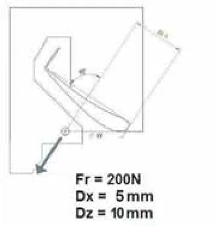</figure>
<p>  f/᭱ ࡶᚋࢁࡢ࢘ ࢖ࣥ ࢢせ⣲ࡣࠊࡑࡢᚋ➃࠶ࡿ࠸ࡣ࣮࢞ ࢽ࣮ ࡟㸰㸮㸮㹌ࡢ㈇Ⲵ ࡀ࠿ࡅࡽࢀࡓሙྜ ࡟ࠊ㈇Ⲵࡢ࠿ࡅࡽࢀࡓ᪉ྥ ࡬㸲㹫㹫௨ୗ೫ྥ ࡋ࡚ ࡶ࠿ࡲ ࢃ࡞࠸ࠋ ㈇Ⲵࡣᆒ୍ ࠿ࡘྠ ᫬࡟ᚋ➃࠶ࡿ࠸ࡣ࣮࢞ ࢽ࣮ ࡟ἢࡗࡓ௵ពࡢ㸰Ⅼ࡟ࠊ㌴୧ ୰ᚰ⥺࡟ᕥྑ ᑐ⛠࡟ຍ࠼ࡽࢀࡿࠋ ㈇Ⲵࡢࡑࢀࡒࢀࡣ㸰㸮㸮N࡜ࡍࡿࠋ ㈇Ⲵࡣ⩼ᘻࡢ㛗ࡉ࡟ᖹ⾜࡟ࡲࡓᆶ┤࡟࠿ࡅࡽࢀࡿࠋ 㐺ษ࡞࢔ࢲࣉࢱ࣮ ࡀᙜヱࢳ࣮࣒ ࡟ࡼࡾ౪⤥ࡉࢀ࡞ࡅࢀࡤ࡞ࡽ࡞࠸ࠋ ᥋㠃ࡣ᭱ ኱࡛ 㸱㸮㹫㹫㸦ᶓ᪉ྥ 㸧™㸳㹫㹫㸦࣮࢞ ࢽ࣮ ࡢ㡬Ⅼ㒊㸧࡛ ࡞ࡅࢀ ࡤ࡞ࡽ࡞࠸ࠋ</p>
<figure>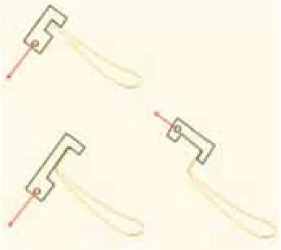</figure>
<p><span class="pagemark" id="p27">P.27</span>g/ ⯡ ὀ㸸ୖグࡢࡍ࡭࡚ ࡢ㈇Ⲵ㸭೫ྥヨ㦂ࡣࠊ㌴୧࡟࢘ ࢖ࣥ ࢢࢆࡘࡅࡓ≧ែ࡛ ᐇ ᪋ࡋ࡞ࡅࢀࡤ࡞ࡽ࡞࠸ࠋ ㈇Ⲵ/೫ྥࣞ ࢩ࢜ ࡣࠊࣜ࢔࢘ ࢖ࣥ ࢢࡢ඲యࡢᶵ⬟⠊ᅖ࡟ࢃࡓࡗ୍࡚ ᐃ࡛ ࡞ࡅ ࢀࡤ࡞ࡽ࡞࠸ࠋ </p>
<h5 id="3-6-3">3.6.3 ࣇ࢕ࣥ  </h5>
<p>a/ ⯡ ᆶ┤࡞ሀ∼࡞ࣇ࢕ࣥ ࡢྲྀ ࡾ௜ࡅࡀ⩏ົ ௜ࡅࡽࢀࡿࠋ ࡇࡢࣇ࢕ࣥ ࡣ௨ୗࡢࡼ࠺࡛ ࡞ࡅࢀࡤ࡞ࡽ࡞࠸㸸 㸫 ๓ᚋ᪉ྥ ࡟ࠊ㌴୧୰ᚰ⥺࡟ᖹ⾜ 㸫 ୰ᚰ⥺ࡢ࡝ࡕࡽഃࡶ➼ࡋ࠸ཌࡉ࡛ ࠊ᏶⎍࡟㌴୧ࡢ⦪㍈ୖ ࡟఩⨨ࡍࡿࠋ ࡇࡢࣇ࢕ࣥ ࡣ୍ ᐃࡢཌࡉ࡛ ࡞ࡅࢀࡤ࡞ࡽ࡞࠸㸦᭱ ప㸯㸮㹫㹫㹼᭱ ኱㸰㸮㹫 㹫㸧 ㌴୧࡟࣍ ࢖࣮ࣝ ࢆྲྀ ࡾ௜ࡅࡓ≧ែ࡛ ࠊࣇ࢕ࣥ ࡢ┠࡟ぢ࠼ࡿ㒊ศࡣ㸦ഃ᪉࠿ ࡽぢ࡚ 㸧ࠊ୧ഃ࡛ 㸱㸮㸮㸮㹡㹫㸰ࢆ㉸࠼࡚ ࠸࡞ࡅࢀࡤ࡞ࡽ࡞࠸ࠋ ࣇ࢕ࣥ ࡣࠊ୍ ษࡢ✰ࡸ㛤ཱྀ 㒊ࡢ࡞࠸㐃⥆ⓗ࡞≧ែ࡛ ࡞ࡅࢀࡤ࡞ࡽ࡞࠸ࠋ ࢪࣥ ࡢ✵Ẽྲྀ ࡾධࢀཱྀ ࢆࣇ࢕ࣥ ࡜⤫ྜ ࡉࡏࡿࡇ࡜ࡀ࡛ ࡁࡿࡀࠊ➨㸱.㸴. 㸱㡯ࡢࡍ࡭࡚ ࡢつᐃࡀ㑂Ᏺࡉࢀ࡚ ࠸ࡿࡇ࡜ࢆ᮲௳࡜ࡍࡿ㸦⫗ཌ࡟ࡘ࠸࡚ ࡣࠊ᭱ ኱㸯㸲㸮㸮㹫㹫ࡢ㛗ࡉ࡟Ώࡗ୍࡚ ᐃ࡜ࡍࡿࡇ࡜ࡣ࡛ ࡁ࡞࠸㸧ࠋ ࡇࡢࣇ࢕ࣥ ࡟ࡣࠊࡑࡢ௚ࡢ⿦⨨ࢆᅛᐃࡍࡿࡇ࡜ࡣ࡛ ࡁ࡞࠸ࠋ ࣇ࢕ࣥ ࢆࠊ࢚ࣥ ࢪࣥ࢝ ࣂ࣮ ࡟୍ యⓗ࡟ྲྀ ࡾ௜ࡅࡿࡇ࡜࠾ࡼࡧ㸭࠶ࡿ࠸ࡣࢩࣕ ࢩ࣮ ࠊࣜ ࢔࢘ ࢖ࣥ ࢢ࠾ࡼࡧᚋ㒊ᵓ㐀య㸦͆ ࣈࣜ ࢵࢪ͇ୖ 㸧࡟ࡋࡗ࠿ࡾ࡜ᅛ ᐃࡍࡿࡇ࡜ࡀ࡛ ࡁࡿࠋ ࢪࣥ࢝ ࣂ࣮ ࠾ࡼࡧ㸭࠶ࡿ࠸ࡣࣇ࢕ࣥ ࡢྲྀ ࡾእࡋ࡟ᕤලࢆ౑⏝ࡍࡿࡇ࡜ ࡀᚲせ࡛ ࠶ࡗ࡚ ࡼ࠸ࠋ  b/ ఩⨨ 㡬Ⅼ➃㒊ࡣࠊࡲࡗࡍࡄ࡛ ࠊᇶ‽㠃ࡢୖ ᪉㸯㸮㸲㸮㹫㹫࡜㸯㸮㸳㸮㹫㹫ࡢ㛫 ࡟࡞ࡅࢀࡤ࡞ࡽ࡞࠸ࠋ ๓➃ࡢᶓ᪉ྥ ᢞᙳ㠃ࡣࠊࡲࡗࡍࡄ࡛ ࠊ࢘ ࢖ࣥ ࢻࢫࢡ࣮ࣜࣥ ࡢୖ ➃㒊ࡢ᭱ ኱ 㸯㸮㹫㹫ᚋ᪉࡟࡞ࡅࢀࡤ࡞ࡽ࡞࠸ࠋ㸦➨㸱.㸱㡯ཧ↷㸧ࠋ 㡬Ⅼ➃㒊ࡣࠊᇶ‽㠃࠿ࡽୖ ᪉࡟㸯㸮㸮㸮㹫㹫௨ୗ࡛ ࠶ࡿࡇ࡜ࢆ᮲௳࡟ࠊ๓ ➃㒊࡜࢘ ࢖ࣥ ࢻࢫࢡ࣮ࣜࣥ ࡢୖ ➃ࡢ㸯㸮㸮㹫㹫ᚋ᪉ࡢᆅⅬ࡜ࡢ㛫ࡢࢰ࣮࡛ࣥ ࡣࠊࡲࡗࡍࡄ࡛ ࡞ࡃ࡚ ࡶࡼ࠸ࠋ ࢖ࣥ ࢻࢫࢡ࣮ࣜࣥ ࡢୖ ➃ࡣࠊ㹗㸻㸮࡛ ࠊ࢘ ࢖ࣥ ࢻࢫࢡ࣮ࣜࣥ ࡢ᭱ ᚋ➃Ⅼ 㹖఩⨨࡜ᐃ⩏ࡉࢀࡿࠋ ᚋ➃ࡣࡲࡗࡍࡄ࡛ ࠊᚋ㒊㌴㍈୰ᚰ⥺ࡢᚋ᪉㸱㸳㸮㹫㹫࡜㸲㸳㸮㹫㹫ࡢ㛫࡟ ఩⨨ࡋ࡞ࡅࢀࡤ࡞ࡽ࡞࠸㸦㸱㸳㸮㹫㹫ࡢᑍἲࡣࠊࡑࢀࡀࣇ࢕ࣥ ࢆఙࡤࡋ࡚ ࠸ࡿሙྜ ࠊࣜ ࢔࢘ ࢖ࣥ ࢢᨭᣢయ࡟ࡇࢀࡽࡢไ⣙ࡣ㐺⏝ࡉࢀ࡞࠸㸧ࠋ ᗏ➃㒊ࡣࠊ㌴య⾲㠃ࡢୖ ᪉㸰㸳㹫㹫௨ୗ࡛ ࡞ࡅࢀࡤ࡞ࡽ࡞࠸ࠋ  c/ ࢪ࣓࢜ ࢺ࣮ࣜ  ๓➃ࠊ㡬➃㒊ࠊ࠾ࡼࡧᗏ➃㒊ࡣࠊ୍ᐃࡢ༙ ᚄ࡛ ‴᭤ࡉࡏࡿࡇ࡜ࡀ࡛ ࡁࡿ㸦༙ ᚄࡣࣇ࢕ࣥ ࡢཌࡉࡢ༙ ศ࡟➼ࡋࡃ࡞ࡅࢀࡤ࡞ࡽ࡞࠸㸧ࠋ</p>
<p><span class="pagemark" id="p28">P.28</span>ᚋ➃㒊ࡣࠊഴᩳ ࡋ࡚ ࠸ࡿ࠿ࠊ㸰㸮㹫㹫௨ୗࡢᴃ෇ᙧ࡜ࡍࡿࡇ࡜ࡀ࡛ ࡁࡿࠋ 㡬➃㸭๓➃ࠊ㡬➃㸭ᚋ➃ࠊᗏ➃㸭๓➃࠾ࡼࡧᗏ➃㸭ᚋ➃ࡢ㛫ࡣࠊ᭱ ኱㸳㸮 㹫㹫ࡢ༙ ᚄࡀㄆࡵࡽࢀࡿࠋ ࣇ࢕ࣥ ࡀ࢚ࣥ ࢪࣥ࢝ ࣂ࣮ ࡟ྲྀ ࡾ௜ࡅࡽࢀ࡚ ࠸ࡿሙྜ ࠊ᭱ ኱㸳㸮㹫㹫༙ ᚄࡀ ୧᪉ࡢ㒊ရࡢ㛫࡟ㄆࡵࡽࢀࡿࠋ  d/ ࡓࢃࡳヨ㦂 㛗ࡉ㸲㸮㸮㹫㹫ࡢෆ㒊㧗㸴㸮㹫㹫࡛ ࠶ࡽࡺࡿෆ➃㒊ࡀ᭱ ኱༙ ᚄ㸳㹫㹫ࡢ㹓 Ꮠࢶ࣮ࣝ ࢆ౑⏝ࡋࠊࣇ࢕ࣥ ࡢ㡬Ⅼ➃㒊࡟࠾࠸࡚ ࠊ㟼ຍ㔜ヨ㦂ࡀ㐺⏝ࡉࢀࡿࠋ 㹓Ꮠࢶ࣮ࣝ ࡢ୰㛫ࡣࠊ࡝ࡕࡽࡢ➃㒊ࡶ࣮࢜ ࣂ࣮ ࣁࣥ ࢢࡋ࡞࠸ࡼ࠺࡟ࠊ㸦᭱ ࡶᚋࢁࡢ఩⨨ࡀ㌴୧ࡢᚋ㒊㌴㍈࡟࡞ࡿࡼ࠺࡟㸧ࣇ࢕ࣥ ࡢ㡬Ⅼ➃㒊࡟ἢࡗ࡚ ࠊ ࡝ࡇ࡟࡛ ࡶ⨨ࡃࡇ࡜ࡀฟ᮶ࡿ㸦ᶓ᪉ྥ ࠿ࡽぢ࡚ ⼥ྜ ࡋࡓ༙ ᚄࡣ↓どࡉࢀࡿ㸧ࠋ ㈇Ⲵࡣ㸲㸮㸮㹫㹫ࡢ㹓Ꮠࢶ࣮ࣝ ࡢ୰ᚰ࡟࠿ࡅࡽࢀࡿࠋ ࡇࡢヨ㦂ࡣࠊඖࡢሙᡤ࡟࡚ ࣇ࢕ࣥ ࡟㸰ᅇᐇ᪋ࡍࡿࡇ࡜ࡀ࡛ ࡁࠊࡑࢀ࡟ࡼࡾ ࢩࣕ ࢩ࣮ 㸭㌴యࡢྲྀ ࡾ௜ࡅ㒊ࡶヨ㦂ࡍࡿࡇ࡜ࡀ࡛ ࡁࡿࠋ ࡑࢀࡒࢀࡢヨ㦂࡛ ࠊࣇ࢕ࣥ ࡢࡓࢃࡳࡣࠊ㸯㸮㸮㹢㹟㹌ࡢ㈇Ⲵ࡛ 㸦࡝ࡢⅬ࡟࡚ ࡶ㸧㸯㸮㸮㹫㹫௨ୗ࡛ ࠶ࡾࠊ୍ ษࡢᜏஂ ⓗኚᙧࡣࠊ㈇Ⲵࢆ㸯ศ㛫ࡣࡎࡋ ࡓᚋ࡛ 㸱㹫㹫ᮍ‶࡛ ࡞ࡅࢀࡤ࡞ࡽ࡞࠸ࠋ  3.7 ඲యⓗ೫ྥ ཎ๎ ࡜ࡋ࡚ ࠊ㹖㸭㹗㸭㹘࠸ࡎࢀࡢ᪉ྥ ࡟࠾࠸࡚ ࡶࠊ㸯㸮㸮㹌ࡢ㸦ᢲࡍ㸭ᘬࡃ㸧㈇Ⲵ ࡀ࠿ࡅࡽࢀࡓ᫬࡟ࠊ㌴యࡢ࠸࠿࡞ࡿ㒊ศࡶ㸳㹫㹫ࢆ㉸࠼࡚ື ࠿࡞࠸ࡇ࡜ࠋ㈇Ⲵࢆ࠿ ࡅࡿ᪉ἲࡣࠊヨ㦂ࡉࢀࡿ㒊ศࡢ≉᭷࡞ᙧ≧࡟ࡼࡗ࡚ Ỵࡲࡾࠊಖᣢ᪉ἲࡣࡑࡢ㒊ศ࡟ ≉᭷ࡢᅽຊࢆ࠿ࡅ࡞࠸㸦ࡑࡢᣲື ࡟┤᥋ᙳ㡪ࢆ୚࠼ࡿࡇ࡜ࡀ࡛ ࡁࡿ㸧ࠋ ೫ྥ ࡣ㹘㸩᪉ྥ 㸦ୖྥ ࡁ㸧࡬ࡣ᳨ ᰝࡉࢀ࡞࠸ࠋ ㈇Ⲵࢆ࠿ࡅ࡚ ࠸ࡿ᫬࡟ࠊࡑࡢ㒊ศࡣࡑࢀ࡛ ࡶᢏ⾡つᐃࢆ㑂Ᏺࡋ࡚ ࠸࡞ࡅࢀࡤ࡞ࡽ࡞ ࠸ࠋ㸦౛࡜ࡋ࡚ ࡣࠊࡑࢀ࡟ไ㝈ࡉࢀࡿࡇ࡜࡞ࡃ㸸࢔ࣥ ࢲ࣮࣎ ࢹ࢕࣮ ࡢࣇࣟࣥ ࢺࣂ࣮ ࢪ࣮࣎ ࢻ࡞࡝㸧ࠋ ᚲせ௨ୖ ࡟ヨ㦂ᐇ᪋ࡀ࡞ࡉࢀࡿࡇ࡜࡟࡞ࡿ࠸ࡃࡘ࠿ࡢ㒊ศ࡟ࡣ౛እࡀㄆࡵࡽࢀࡿࠋ ౛࡜ࡋ࡚ ࡣࠊࡑࢀ࡟ไ㝈ࡉࢀࡿࡇ࡜࡞ࡃ㸸ࣜ ࢹ࢕ࣇ࣮ࣗ ࢨ࣮ ࡢᆶ┤ࣇ࢕ࣥ ࠊ㌴యࡢ 㡬Ⅼ㒊ࡢᗈ⠊ᅖࠊ࡞࡝ࡣබㄆ㐣⛬࡛ ☜ㄆࡀ࡞ࡉࢀࡿࠋ ࣈࣛ ࢩࡀࡅࠊࢦ࣒〇ࣈ࣮ ࢶࠊࢦ࣒〇ᑒ༳ࡣࠊࢦ࣒ ࢆᣠ࠸ୖ ࡆࡿࡢࢆ㜵ࡄࡓࡵ࡟ࡢࡳཷ ࡅධࢀࡽࢀࡿ㸦ࡑࡢࡼ࠺࡞⿦⨨ࡣබㄆ㐣⛬ࡢ㛫࡟ᥦ♧ࡉࢀࡿࡇ࡜㸧ࠋ   ➨㸲᮲ 㔜㔞  4.1 ప㔜㔞 㸶㸱㸮㹩㹥㸩㸱㹩㹥ࡢ࣓࢝ࣛ ⿦ഛ࠶ࡿ࠸ࡣ௦⏝ࣂࣛ ࢫࢺ  ㌴୧ࡣ➇ᢏ఍඲యࢆ㏻ࡋ࡚ ࠊᖖ࡟ࡇࡢ᭱ ప㔜㔞࡟ᚑࡗ࡚ ࠸࡞ࡅࢀࡤ࡞ࡽ࡞࠸ࠋ➇ᢏ఍ ᮇ㛫୰࡟஺᥮ࡉࢀࡓྍ ⬟ᛶࡢ࠶ࡿ୍ ษࡢ㒊ရࡢ㔜㔞᳨ ᰝࡣࠊ㌴᳨ ဨࡢ⿢㔞࡟࡚ ᐇ᪋ࡉ ࢀࡿࠋ  4.2 ࣂࣛ ࢫࢺ</p>
<p><span class="pagemark" id="p29">P.29</span>ࣂࣛ ࢫࢺࡣࠊྲྀ ࡾእࡋ࡟ᕤලࡀᚲせ࡛ ࠶ࡿࡼ࠺࡟ࠊࡋࡗ࠿ࡾ࡜ᅛᐃࡉࢀ࡞ࡅࢀࡤ ࡞ࡽࡎࠊࡑࡢ᪉ἲࡣ㌴᳨ ဨࡀᑒ༳ࢆྲྀ ࡾ௜ࡅࡽࢀࡿࡼ࠺࡛ ࡞ࡅࢀࡤ࡞ࡽ࡞࠸ࠋ  ᘧࡢࣂࣛ ࢫࢺࢩࢫࢸ࣒ ࡣ୍ ษ⚗Ṇࡉࢀࡿࠋ  ㌴୧ࡣࠊ㸩㸰㸮㹩㹥ࡢ㔜㔞ࣂࣛ ࢫࢺࢆཷ ࡅධࢀࡿࡇ࡜ࡀ࡛ ࡁࡿࡼ࠺ࠊタィࡉࢀ࡞ ࡅࢀࡤ࡞ࡽ࡞࠸ࠋ  ࢥࢡࣆࢵࢺ࡟ྲྀ ࡾ௜ࡅࡽࢀࡿ୍ ษࡢࣂࣛ ࢫࢺࡣࠊබㄆࢡࣛ ࢵࢩࣗヨ㦂࡟ᥦฟࡉࢀ ࡞ࡅࢀࡤ࡞ࡽ࡞࠸ࠋ  4.3 ᾮయ 㔜㔞ࡣࠊࢱࣥ ࢡ࡟ᾮయࡀṧࡗࡓ≧ែ࡛ ࠊ➇ᢏ఍୰࠸ࡘ࡛ ࡶ᳨ ᰝ࡛ ࡁࡿࡀࠊࣉࣛ ࢡࢸ࢕ ࢫࢭࢵࢩࣙࣥ ࠶ࡿ࠸ࡣ࣮ࣞ ࢫࡢ⤊஢ᚋࠊ㌴୧ࡣ㔜㔞ィ ๓࡟ࡍ࡭࡚ ࡢ⇞ᩱࡀᢤࡁྲྀ ࡽ ࢀࡿࠋ   ➨㸳᮲ ࢪࣥ   5.1 ࢪࣥ ࡢ௙ᵝ</p>
<p>5.1.1 ࢪࣥ ࡣࠊ௨ୗࡢไ⣙ࢆ㝖ࡁ⮬⏤࡛ ࠶ࡿ㸸  ࢯࣜࣥ ࡢࣞ ࢩࣉࣟ ࣆࢫࢺࣥ 㸲ࢫࢺ࣮ࣟ ࢡ࢚ࣥ ࢪࣥ ࡢࡳㄆࡵࡽࢀࡿࠋ  ⇞ᩱ㉁㔞ὶࡣࠊ௜๎ 㹀ࡢ⾲࡟グ㍕ࡉࢀࡓไ㝈್ ࢆ㉸࠼࡚ ࡣ࡞ࡽ࡞࠸ࠋ  ࢪࣥ ࡣྛ ࢩࣜࣥ ࢲ࣮ ࡟ࡘࡁ㸰ࡘࢆ㉸࠼ࡿ྾Ẽཱྀ ࡜㸰ࡘࢆ㉸࠼ࡿ᤼Ẽ ࣂࣝ ࣈࢆ᭷ࡋ࡚ ࠸࡚ ࡣ࡞ࡽ࡞࠸ࠋ 㸫 ࢩࣉ࣭࣏ࣟ࣌ ࢵࢺࣂࣝ ࣈࡢࡳࡀチࡉࢀࡿࠋ 㸫 ࣂࣝ ࣈᵓᡂ㒊ရ࡜୙ື ࡢ࢚ࣥ ࢪࣥ ᵓᡂ㒊ရ࡜ࡢ㛫ࡢ᥋ゐࢩ࣮ࣝ 㠃 ࡣ┿෇࡛ ࡞ࡅࢀࡤ࡞ࡽ࡞࠸ࠋ 㸫 㟁☢ࣂࣝ ࣈసື ࢩࢫࢸ࣒ ࡣ⚗Ṇࡉࢀࡿࠋ  㟁☢Ἔᅽ࠾ࡼࡧ✵Ẽᅽࣂࣝ ࣈసື ࢩࢫࢸ࣒ ࡣ⚗Ṇࡉࢀࡿࠋ  5.1.2 ࢪࣥ ࡣࠊ㸲ࢫࢺ࣮ࣟ ࢡࢧ࢖ࢡࣝ ࡟ᚲせ࡜ࡉࢀࡿࡍ࡭࡚ ࡢ㒊ရ㸦౛࠼ࡤࠊࢡࣛࣥ ࢡࢩࣕ ࣇࢺࠊࢥࣥࣟ ࢵࢻࠊࣆࢫࢺࣥ ࠊࢹ࢕ࢫࢺࣜ ࣅ࣮ࣗ ࢩࣙࣥ ࡞࡝࡛ ࠊࡑ ࢀࡽ࡟㝈ࡽࢀ࡞࠸㸧࠾ࡼࡧࠊࡑࢀࡽࢆ཰ᐜࡍࡿࡍ࡭࡚ ࡢ࢝ ࣂ࣮ ࡟ࡼࡗ࡚ Ỵࡵࡽ ࢀࡿ࢚ࣥ ࢪࣥ ࣈࣟ ࢵࢡࢆศゎࡍࡿࡇ࡜ࡀ࡛ ࡁ࡞࠸ࡼ࠺࡞᪉ἲ࡛ ᑒ༳࡛ ࡁ࡞ࡅ ࢀࡤ࡞ࡽ࡞࠸ࠋ ᑒ༳ࡢ఩⨨࡜ྲྀ ࡾ௜ࡅヲ⣽ࡀබㄆࡉࢀࡿࠋ  5.2 ࢪࣥ ࡢᑍἲ ⮬⏤࡛ ࠶ࡿ  5.3 ኚࢪ࣓࢜ ࢺ࣮ࣜ ࢩࢫࢸ࣒</p>
<p>5.3.1 㐣⤥ࢩࢫࢸ࣒ ࠾ࡼࡧ㸭࠶ࡿ࠸ࡣ᤼Ẽࢱ࣮ ࣅࣥ ࢪ࣓࢜ ࢺࣜ ࡢไᚚ࡟ᚲせ࡞⿦⨨ ࢆ㝖ࡁࠊྍ ኚࢪ࣓࢜ ࢺ࣮ࣜ ᤼Ẽࢩࢫࢸ࣒ ࡣㄆࡵࡽࢀ࡞࠸ࠋ  5.3.2 ኚࣂࣝ ࣈࢱ࢖࣑ࣥ ࢢ࠾ࡼࡧྍ ኚࣂࣝ ࣈࣜ ࣇࢺࣉࣟ ࣇ࢕࣮ࣝ ࢩࢫࢸ࣒ ࡣㄆࡵ ࡽࢀ࡞࠸ࠋ</p>
<p><span class="pagemark" id="p30">P.30</span>5.3.3 ኚ㛗྾Ẽ࣐ ࢽࣇ࢛࣮ࣝ ࢻ࠾ࡼࡧࢺࣛࣥ࣌ ࢵࢺࡣ⚗Ṇࡉࢀࡿࠋ  5.4 ⇞ᩱᄇᑕࢩࢫࢸ࣒  </p>
<p>⇞ᩱᄇᑕᅽຊࡣ⮬⏤ࠋ  5.5 ࢯ࢚ࣜࣥࣥ ࢪࣥ ࡢⅬⅆࢩࢫࢸ࣒</p>
<p>5.5.1 ࣉࣛ ࢬ࣐ ࠊ࣮ࣞ ࢨ࣮ ࠶ࡿ࠸ࡣࡑࡢ௚ࡢ㧗࿘Ἴᩘ Ⅼⅆᢏ⾡ࡣㄆࡵࡽࢀࡿࠋ  5.5.2 ࢫࣃ࣮ ࢡࣉࣛ ࢢࡣࠊ௜๎ F”ᮦ㉁”࡟グ㍕ࡢᮦ㉁ไ⣙ࢆཷ ࡅ࡞࠸ࠋ  5.6 ࢪࣥ ࡢ௜ᒓရ㸦෭༷ ๣ࠊ₶⁥๣ࠊ࠾ࡼࡧࢫ࢝࣋ࣥ ࢪ࣏ࣥ ࣉ㸧</p>
<p>ࢪࣥ ࡢ௜ᒓရࡣᶵᲔⓗ࡟࠶ࡿ࠸ࡣ㟁Ẽⓗ࡟㐠㌿ࡍࡿࡇ࡜ࡀ࡛ ࡁࡿࠋ  5.7 ࢪࣥ ࡢ྾Ẽ  ⇞ᩱࢆ㝖ࡁࠊ➨㸴.㸲.㸯㸮㡯࡟つᐃࡉࢀ࡚ ࠸ࡿไ㝈ࡢ୰࡛ ࠊ࢚ࣥ ࢪࣥ ྾Ẽࡢ୰࡟࠸࠿ ࡞ࡿ≀㉁ࢆࡶᄇᑕࡍࡿࡇ࡜ࡣ⚗Ṇࡉࢀࡿࠋ  5.8 ࢪࣥ ࡢጞື   ㏻ᖖ࡟㐠㌿ᖍ࡟╔ᗙࡋࡓ≧ែ࡛ ࠊࢻࣛ ࢖ࣂ࣮ ࡣእ㒊࠿ࡽࡢᨭ᥼ࢆ୍ ษཷ ࡅࡿࡇ࡜࡞ࡃࠊ ࠸ࡘ࡛ ࡶ࢚ࣥ ࢪࣥ ࢆጞື ࡍࡿࡇ࡜ࡀ࡛ ࡁ࡞ࡅࢀࡤ࡞ࡽ࡞࠸ࠋ  5.9 ࢫࢺ࣮ࣝ 㜵Ṇࢩࢫࢸ࣒   ౑⏝ࡀㄆࡵࡽࢀࡿࠋ  5.10 ࢪࣥ ࡢᮦ㉁࡜ᵓ㐀㸫୍ ⯡  ௜๎ 㹄ࠕᮦ㉁ࠖ ࢆཧ↷ࠋ  5.11 ᤼Ẽࢩࢫࢸ࣒   㦁㡢ࣞ࣋ࣝ 㸸ண㑅࠾ࡼࡧỴ຾࣮ࣞ ࢫ୰ࠊྛ ㌴୧࠿ࡽฟࡉࢀࡿ㡢㔞ࡣ㸯㸯㸮㹢㹠㸿ࢆୖ ᅇࡗ࡚ ࡣ࡞ࡽ࡞࠸ࠋィ ࡣ㉮㊰➃㒊࠿ࡽ㸯㸳㹫㞳ࢀࡓᆅⅬ࡛ ⾜ࢃࢀࡿࠋ  5.12 ࢺࣝ ࢡィ ㌴୧࡟ࡘ࠸࡚ ࡣࠊࢺࣝ ࢡィ ࡀ⩏ົ ௜ࡅࡽࢀࠊࡑࡢ௚ࡢࡍ࡭࡚ ࡢ㌴୧࡟ࡶࠊィჾྲྀ ࡾ ௜ࡅࡀྍ ⬟࡛ ࡞ࡅࢀࡤ࡞ࡽ࡞࠸ࠋ ㌴୧ࣔ ࢹࣝ ࢆ౪⤥ࡋࡼ࠺࡜ࡍࡿ࢚ࣥ ࢪࣥ〇㐀⪅ࡣࠊ⿦⨨ࡢṇࡋ࠸ᦚ㍕ࡢࡓࡵࡢ࠶ࡽࡺ ࡿ㐺ษ࡞ᣦ♧ࢆࢩࣕ ࢩ࣮〇㐀⪅࡟ᥦ౪ࡋ࡞ࡅࢀࡤ࡞ࡽ࡞࠸ࠋ ⿦⨨ࡢᦚ㍕ࡀྍ ⬟࡛ ࠶ࡿヲ⣽グ㏙࡞ࡃࡋ࡚ ࠊ㌴୧ࡢබㄆࡣ࡛ ࡁ࡞࠸ࠋ  ࢺࣝ ࢡࢆィ ࡍࡿࢩࢫࢸ࣒ ࠾ࡼࡧ⿦⨨ࡣࠊ௜๎ 㹃࡟࠶ࡿ௙ᵝ࡟ᚑࡗ࡚ ࠊ㹄㹇㸿㸭㸿㹁</p>
<p><span class="pagemark" id="p31">P.31</span>㹍࡟ࡼࡾᢎㄆࡉࢀ࡞ࡅࢀࡤ࡞ࡽ࡞࠸ࠋ ࡑࡢィჾࡣ㹄㹇㸿㸭㸿㹁㹍ࢹ࣮ ࢱ࣮ࣟ࢞ ࡟┤᥋ࡘ࡞ࡆࡽࢀ࡞ࡅࢀࡤ࡞ࡽ࡞࠸ࠋ ࢺࣝ ࢡィ ࡣࠊ㹇㹁࢚ࣥ ࢪࣥ ࢆࢻࣛ ࢖ࣈࢺࣞ ࢖ࣥ ࡟ࡘ࡞ࡆࡿ࣓ ࢖ࣥ ࢡࣛ ࢵࢳࡢ๓࠿ᚋ ࡢࠊ㹇㹁࢚ࣥ ࢪࣥ ࡢฟຊⅬ࡛ ᐇ᪋ࡉࢀ࡞ࡅࢀࡤ࡞ࡽ࡞࠸ࠋ   ➨㸴᮲ ⇞ᩱࢩࢫࢸ࣒   6.1 ⇞ᩱࢩࢫࢸ࣒   6.1.1 ࡍ࡭࡚ ࡢ⇞ᩱ㓄⟶ࡣࠊ࢚ࣥ ࢪࣥ ࡀ✌ാ୰࠶ࡿ࠸ࡣࢫࢱ࣮ ࢺ᫬࡟ࡢࡳసື ࡋ࡞ ࡅࢀࡤ࡞ࡽ࡞࠸ࠋ ౪⤥࣏ࣥ ࣉࡢ㸦ࢱࣥ ࢡ࠿ࡽࢥࣞ ࢡࢱ࣮ ࡟౪⤥ࡍࡿ㸧ࢫ࢖ࢵࢳࡣࠊࣆࢵࢺࢫࢺࢵ ࣉࡢ㛫࡟ධࢀࡿࡇ࡜ࡀ࡛ ࡁࡿࠋ ὀ㸸ࠕࢫ࢖ࢵࢳࢆධࢀࡿࡇ࡜ࡀ࡛ ࡁࡿࠖ ࡜࠸࠺ᩥゝࡣ࣓ ࢖ࣥ ࢫ࢖ࢵࢳ࡜ࡣ␗࡞ ࡿࢫ࢖ࢵࢳ࡬ࡢே㛫࡟ࡼࡿ≉ᐃࡢ⾜Ⅽࡀせồࡉࢀࡿ㸦࢚ࣥ ࢪࣥ ࡀṆࡵࡽࢀࡓ ࠶ࡿ࠸ࡣࢫࢺ࣮ࣝ ࡋࡓ᫬ࠊ⇞ᩱ࣏ࣥ ࣉࡀṆࡵࡽࢀࡓᚋ࡟ࠊ⇞ᩱ࣏ࣥ ࣉࢆ෌㛤ࡍ ࡿࡓࡵ㸧ࠋ  6.1.2 ⇞ᩱ⿦⨨ࡣࠊୗグࡢ᮲㡯ࡢつᐃࡀ㑂Ᏺࡉࢀ࡚ ࠸ࡿ㝈ࡾࠊ⮬⏤࡛ ࠶ࡿࠋ  6.2 ⇞ᩱὶ㔞ィ6.2.1 ௜๎ 㹂࡟♧ࡉࢀࡿබㄆࡉࢀࡓࠕ⇞ᩱὶ㔞ィࠖ㸦ࢸࢡࢽ࢝ࣝࣜ ࢫࢺNo.45㸧ࡀࠊ௜๎ 㹂࡟♧ࡉࢀࡿ௙ᵝ࡟ᚑࡗ࡚ ࠊ⇞ᩱ⿦⨨࡟⤫ྜ ࡉࢀ࡞ࡅࢀࡤ࡞ࡽ࡞࠸ࠋィჾࡣࠊࢧࣂ࢖ࣂࣝ ࢭࣝ ෆࡢ᭱ ᑠ㸵㸮㹫㹫㸦ᖜ㸧™㸯㸶㸮㹫㹫㸦㛗ࡉ㸧™㸯㸯 㸮㹫㹫㸦῝ࡉ㸧ࡢᐜჾࡢ୰࡟ྲྀ ࡾ௜ࡅࡽࢀ࡞ࡅࢀࡤ࡞ࡽ࡞࠸ࠋ ୧ഃࡢ㛫࡛ ࡇࢀࡽࡢᑍἲࢆῶࡽࡍࡇ࡜࡟࡞ࡿ㸰㸮㹫㹫ࢆ㉸࠼ࡿ୍ ษࡢ㠃ྲྀ ࡾ ࠶ࡿ࠸ࡣ༙ ᚄ௜ࡅࡣㄆࡵࡽࢀ࡞࠸ࠋ  ࡇࢀࡽࡢᑍἲࢆᚋࢁ࡟᥋ྜ 㒊ࢆక࠸ῶࡽࡍࡇ࡜࡟࡞ࡿ㸯㸮㹫㹫ࢆ㉸࠼ࡿ୍ ษ ࡢ㠃ྲྀ ࡾ࠶ࡿ࠸ࡣ༙ ᚄ௜ࡅࡣㄆࡵࡽࢀ࡞࠸ࠋ ィჾࡣࠊ⇞ᩱࢱࣥ ࢡ⤥Ἔཱྀ ࡢ཯ᑐഃ࡟ྲྀ ࡾ௜ࡅ࡞ࡅࢀࡤ࡞ࡽ࡞࠸ࠋ  6.2.2 ࡇࡢ⿦⨨ࡣḞ㝗ࡀ⏕ࡌࡓሙྜ ࡟ࡣ᪩ᛴ࡟஺᥮࡛ ࡁ࡞ࡅࢀࡤ࡞ࡽ࡞࠸ࠋ㉮⾜ࢭ ࢵࢩࣙࣥ ୰㸦࣮ࣞ ࢫࡶྵ ࡵ㸧ࡢ஺᥮ࡶせồࡉࢀᚓࡿࠋ  6.2.3 ୺せ⇞ᩱὶ㔞ィࡢ౪⤥㓄⟶ෆࡢ⇞ᩱᅽຊࢆ┤᥋ィ ࡍࡿබㄆࢭࣥ ࢧ࣮ ࡀྲྀ ࡾ ௜ࡅࡽࢀ࡞ࡅࢀࡤ࡞ࡽ࡞࠸ࠋ⇞ᩱὶ㔞ィࡢୖ ὶࡲࡓࡣୗὶ࡟タ⨨࡛ ࡁࡿࡀࠊὶ 㔞ィ࠿ࡽ㸰㸮㹡㹫ᮍ‶ࡢ㊥㞳࡜ࡍࡿࡇ࡜ࠋࡇࡢಙྕ ࡣ㹄㹇㸿ࢹ࣮ ࢱ࣮ࣟ࢞ ࡟ ᥦ౪ࡉࢀ࡞ࡅࢀࡤ࡞ࡽ࡞࠸ࠋ  6.3 ⇞ᩱࢱࣥ ࢡ  6.3.1 ㌴㍕ࡢ⇞ᩱᐜ㔞ࡣࠊ㸵㸳ࣜ ࢵࢺࣝ ࡟㐩ࡍࡿࡇ࡜ࡀ࡛ ࡁ࡞ࡅࢀࡤ࡞ࡽ࡞࠸ࠋ  6.3.2 పᅽഃ㸦㧗ᅽ⇞ᩱ࣏ࣥ ࣉࡢᚋࢁ㸧ࡢᅽຊࡣࠊ㸯㸮bar.R࡟ไ㝈ࡉࢀࡿࠋ</p>
<p><span class="pagemark" id="p32">P.32</span>6.3.3 ⇞ᩱࢱࣥ ࢡෆࡢᅽຊࡣࠊ㸰.㸮barAࢆ㉸࠼࡚ ࡣ࡞ࡽ࡞࠸ࠋ  6.3.4 ࢱࣥ ࢡࡣࠊ㜵ⅆቨ࡟ࡼࡾࢥࢡࣆࢵࢺ࠾ࡼࡧ㸭࠶ࡿ࠸ࡣ࢚ࣥ ࢪ࣮࣒ࣥࣝ ࠿ࡽ㝸 㞳ࡉࢀ࡚ ࠸࡞ࡅࢀࡤ࡞ࡽ࡞࠸ࠋ  6.3.5 ⇞ᩱࢱࣥ ࢡࡣ㹄㹇㸿㸭㹄㹒㸱 㸯㸷㸷㸷௙ᵝ࡟ྜ ⮴ࡍࡿ࠿ࠊࡲࡓࡣࡑࢀࢆୖ ᅇࡿࣛ ࣂ࣮ ࣈࣛ ࢲ࣮࡛ ࡞ࡅࢀࡤ࡞ࡽࡎࠊ௜๎ 㹈㡯➨㸰㸳㸱᮲㸯㸲㡯ࡢつ๎ ࡟ྜ ⮴ࡍࡿࡶࡢ࡛ ࡞ࡅࢀࡤ࡞ࡽ࡞࠸ࠋ  6.4 ⇞ᩱ㓄⟶ </p>
<p>6.4.1 ࢱࣥ ࢡࡢቨࡢ୍ 㒊࡛ ࠶ࡿࡍ࡭࡚ ࡢ௜ᒓရ㸦㏻Ẽཱྀ ࠊධཱྀ ࠊฟཱྀ ࠊࢱࣥ ࢡ⤥Ἔཱྀ ࠊ ࢱࣥ ࢡ㛫ࡢ㐃⤖ල࠾ࡼࡧ࢔ࢡࢭࢫ࣮࣍ࣝ ࢆྵ ࡴ㸧ࡣࠊ㔠ᒓ〇ࡲࡓࡣ」ྜ ⣲ᮦ〇࡛ ࡞ࡅࢀࡤ࡞ࡽࡎࠊ⇞ᩱࢱࣥ ࢡ࡟᥋╔ࡉࢀ࡚ ࠸࡞ࡅࢀࡤ࡞ࡽ࡞࠸ࠋ  6.4.2 ⇞ᩱࢱࣥ ࢡ࡜࢚ࣥ ࢪࣥ ࢆࡘ࡞ࡄ⇞ᩱ㓄⟶ࡣ⮬ື 㛢㙐ศ㞳ࣂࣝ ࣈࢆഛ࠼࡞ࡅࢀ ࡤ࡞ࡽ࡞࠸ࠋࡇࡢࣂࣝ ࣈࡣࠊ⇞ᩱࢱࣥ ࢡ࠿ࡽ⇞ᩱ㓄⟶ྲྀ ௜ࡅලࢆᘬࡁᢤ࠸ࡓࡾࠊ ◚ᦆࡍࡿࡢ࡟ᚲせ࡞㈇Ⲵࡢ༙ ศ௨ୗࡢ㈇Ⲵ࡛ ศ㞳ࡍࡿࡶࡢ࡛ ࡞ࡅࢀࡤ࡞ࡽ࡞ ࠸ࠋ  6.4.3 ⇞ᩱࢱࣥ ࢡ࡜බㄆ⇞ᩱὶ㔞ィࢆࡘ࡞ࡄ⇞ᩱ㓄⟶ࡣ⮬ື 㛢㙐ศ㞳ࣂࣝ ࣈࢆഛ࠼ ࡞ࡅࢀࡤ࡞ࡽ࡞࠸ࠋࡇࡢࣂࣝ ࣈࡣࠊ⇞ᩱࢱࣥ ࢡ࠿ࡽ⇞ᩱ㓄⟶ྲྀ ௜ࡅලࢆᘬࡁᢤ ࠸ࡓࡾࠊ◚ᦆࡍࡿࡢ࡟ᚲせ࡞㈇Ⲵࡢ༙ ศ௨ୗࡢ㈇Ⲵ࡛ ศ㞳ࡍࡿࡶࡢ࡛ ࡞ࡅࢀ ࡤ࡞ࡽ࡞࠸ࠋ  6.4.4 ⇞ᩱࢆ཰ᐜࡍࡿ㓄⟶ࡣࠊࢥࢡࣆࢵࢺࢆ㏻㐣ࡋ࡚ ࡣ࡞ࡽ࡞࠸ࠋ  6.4.5 㓄⟶ࡣࠊ࠸࠿࡞ࡿ₃ࢀࡀ⏕ࡌࡼ࠺࡜ࡶࢥࢡࣆࢵࢺෆ࡟ᾮయࡀ␃ࡋ࡞࠸ࡼ࠺ ࡟ྲྀ ࡾ௜ࡅࡽࢀ࡞ࡅࢀࡤ࡞ࡽ࡞࠸ࠋ </p>
<p>6.4.6 㓄⟶ࡣࠊࡑࢀࡀᰂ㌾࡞ࡶࡢ࡛ ࠶ࡿሙྜ ࠊ࢝ࢩ࣓ ࡽࢀࡓ࠶ࡿ࠸ࡣᅽ╔ᘧࢥࢿࢡࢱ࣮ ࠾ࡼࡧᦶ᧿࡜⅖࡟⪏࠼ᚓࡿእ㒊⥙ᮦࢆ᭷ࡋ࡚ ࠸࡞ࡅࢀࡤ࡞ࡽ࡞࠸ࠋ  6.4.7 పᅽ⇞ᩱ㓄⟶ࡣࠊ㸯㸱㸳Υࡢ᭱ 㧗సື  ᗘ࡛ ࡢ᭱ ప◚⿣ᅽຊࡀ᭱ ኱సື ᅽຊ ࡢ㸰ಸ௨ୖ ࢆ᭷ࡋ࡚ ࠸࡞ࡅࢀࡤ࡞ࡽ࡞࠸ࠋ  6.4.8 㧗ᅽ⇞ᩱ㓄⟶ࡣࠊ᭱ 㧗సື  ᗘ㸯㸱㸳Υ࡛ ࡢ᭱ ኱సື ᅽຊࡢ㸰ಸ௨ୖ ࡢ᭱ ప ◚⿣ᅽຊࢆ᭷ࡋ࡚ ࠸࡞ࡅࢀࡤ࡞ࡽ࡞࠸ࠋ  6.4.9 බㄆࡉࢀࡓὶ㔞ィ࡟ࡼࡗ࡚ィ ࡉࢀࡓὶ㔞ẚࢆኚ᭦࡛ ࡁࡿࡼ࠺࡞┠ⓗ࠾ࡼࡧ 㸭࠶ࡿ࠸ࡣຠᯝࡢ࠶ࡿ⿦⨨ࠊࢩࢫࢸ࣒ ࡲࡓࡣᡭ㡰ࡣ⚗Ṇࡉࢀࡿࠋ 㹄㹄㹋ࡢୖ ὶ࠾ࡼࡧୗὶ࢖ࣥ ࢪ࢙ ࢡࢱ࣮ ࢆྵ ࡴࡲ࡛ ࡟఩⨨ࡍࡿ⇞ᩱࢩࢫࢸ࣒ ᵓᡂ㒊ရࡢಖドࡀ⩏ົ ௜ࡅࡽࢀࡿࠋ  6.4.10 ࢪࣥ ࡢ⇞↝ᐊ࡟ධࡿ⇞ᩱࡣࠊබㄆࡉࢀࡓ⇞ᩱὶ㔞ィ࡜බㄆࡉࢀࡓࢩࢫࢸ࣒ ࡢ࢖ࣥ ࢪ࢙ ࢡࢱ࣮ ࢆ㏻㐣ࡋ࡞ࡅࢀࡤ࡞ࡽ࡞࠸ࠋ</p>
<h5 id="6-5"><span class="pagemark" id="p33">P.33</span>6.5 ⇞ᩱࢱࣥ ࢡ⤥Ἔཱྀ  </h5>
<p>6.5.1 ㌴୧ࡣ⤖ྜ ࡉࢀࡓ⇞ᩱࢱࣥ ࢡ⤥Ἔཱྀ ࡜㏻Ẽཱྀ ࢆഛ࠼࡞ࡅࢀࡤ࡞ࡽ࡞࠸ࠋ ⇞ᩱࢱࣥ ࢡ⤥Ἔཱྀ ࡣࠊ㌴୧ࡢ୧ഃ࡟ྲྀ ࡾ௜ࡅྍ ⬟࡛ ࡞ࡅࢀࡤ࡞ࡽ࡞࠸ࠋ </p>
<p>6.5.2 ㌴୧ࡢ⤥Ἔཱྀ ࠾ࡼࡧ㏻Ẽཱྀ ࡣ࡜ࡶ࡟ࢹࢵࢻ࣐ࣥ ᶵᵓࡢཎ⌮࡟ྜ ⮴ࡋࡓ₃ฟ㜵 Ṇࢻࣛ ࢖ࣈ࣮ࣞ ࢡ࢝ ࢵࣉࣜࣥ ࢢࢆഛ࠼࡞ࡅࢀࡤ࡞ࡽࡎࠊ㛤ᨺ≧ែࡢ᫬࡟࠸࠿ ࡞ࡿಖᣢ⿦⨨ࡶ⤌ࡳ㎸ࢇ࡛ ࡣ࡞ࡽ࡞࠸ࠋ  6.5.3 ࢵࣉࣜࣥ ࢢࡢᑍἲ㸸௜๎ 㹈㡯㸫➨㸰㸳㸰㸫㸳ᅗ㸦㹀ࣂ࣮ ࢪࣙࣥ 㸧ࡢᅗゎࡢࡳࠋ  6.5.4 ㌴୧࡟࢝ ࢵࣉࣜࣥ ࢢࡀ᥋⥆ࡉࢀ࡚ ࠸ࡿ᫬࡟ࠊ࢚ࣥ ࢪࣥ ࡀጞື ࡍࡿࡇ࡜ࢆ⚗Ṇ ࡍࡿࡓࡵࠊᑡ࡞ࡃ࡜ࡶ㸯ࡘࡢ㏆᥋ࢭࣥ ࢧ࣮ ࡀ⩏ົ ௜ࡅࡽࢀࡿࠋ  6.6 ࢱࣥ ࢡ⤥Ἔཱྀ ࠊ㏻Ẽཱྀ ࠾ࡼࡧ࢟ࣕ ࢵࣉ  6.6.1 ࡑࢀࡽࡣࠊ஦ᨾࡢ㝿࡟◚ᦆࡋ࡞࠸ࡼ࠺࡞ሙᡤ࡟ྲྀ ࡾ௜ࡅࡽࢀ࡞ࡅࢀࡤ࡞ࡽ࡞ ࠸ࠋ  6.6.2 ㌴య⾲㠃ࡼࡾ✺ࡁฟࡋ࡚ ࡣ࡞ࡽ࡞࠸ࠋ  6.6.3 ᇶ‽㠃ࢆ㏻ࡗ࡚ ฟཱྀ ࢆࡶࡘ࣮࢜ ࣂ࣮ ࣇ࣮ࣟ ࣃ࢖ࣉࡀㄆࡵࡽࢀࡿࠋ  6.7 ࣈ࣮ࣜ ࢨ࣮ ࣃ࢖ࣉ  ࢱࣥ ࢡࢆእẼ࡜ࡘ࡞ࡄࣈ࣮ࣜ ࢨ࣮ ࣃ࢖ࣉࡣ㸸  ㌴యࡢእഃ࡟ฟཱྀ ࡀ࡞ࡅࢀࡤ࡞ࡽ࡞࠸ࠋ  ㏫ὶ㜵Ṇࣂࣝ ࣈࡀྲྀ ࡾ௜ࡅࡽࢀ࡚ ࠸࡞ࡅࢀࡤ࡞ࡽ࡞࠸ࠋ  ㉮⾜᫬࠶ࡿ࠸ࡣᶓ㌿᫬࡟ᾮయࡢ₃ࢀࡀ࡞࠸ࡼ࠺࡟タィࡉࢀ࡚ ࠸࡞ࡅࢀࡤ࡞ࡽ࡞ ࠸ࠋ</p>
<p>6.8 ⮬ື 㛢㙐ࢥࢿࢡࢱ࣮   ㌴୧࡟ࡣࠊ㌴୧᳨ ᰝጤဨࡀࢱࣥ ࢡ࠿ࡽ⇞ᩱࢆྲྀ ࡾฟࡍࡇ࡜ࡀ࡛ ࡁࠊྍ ⬟࡞㝈ࡾ⇞ᩱࡢ ᤼ฟࡀ᏶඲࡟⾜ࢃࢀࡓࡇ࡜ࢆ▱ࡿࡇ࡜ࡢ࡛ ࡁࡿ⮬ື 㛢㙐ࢥࢿࢡࢱ࣮ ࢆഛ࠼࡚ ࠸࡞ࡅ ࢀࡤ࡞ࡽ࡞࠸ࠋࢥࢿࢡࢱ࣮ ࡣ㸸  ㄆྍ ࡉࢀࡓࢱ࢖ࣉࡢࡶࡢ࡛ ࡞ࡅࢀࡤ࡞ࡽ࡞࠸ࠋ  ࢥࣞ ࢡࢱ࣮ ࡢ᭱ ࡶప࠸Ⅼ࡟ࡑࡢ⤊➃ࡀ఩⨨ࡍࡿࣃ࢖ࣉ࡟ࡘ࡞ࡆࡽࢀ࡞ࡅࢀࡤ࡞ ࡽ࡞࠸ࠋぢᮏᢳฟᡭ㡰ࡣࠊ࢚ࣥ ࢪࣥ ࢆጞື ࡉࡏࡿࡇ࡜ࡀᚲせ࡛ ࠶ࡗ࡚ ࡣ࡞ࡽ࡞࠸ࠋ  6.9 ࢫ୰ࡢ⤥Ἔ </p>
<p>6.9.1 ௜๎ 㸿㸸⤥Ἔࢆཧ↷  6.9.2 ᖖ࡟ࠊ㸦㌴୧ࢮࢵࢣࣥ ࡢࡘ࠸ࡓ㸧⤥Ἔ⿦⨨࠾ࡼࡧ㌴୧ࡢࢱࣥ ࢡࡣࠊእẼ ᗘ࠾ ࡼࡧ኱Ẽᅽ࡟ಖᣢࡉࢀ࡚ ࠸࡞ࡅࢀࡤ࡞ࡽ࡞࠸ࠋ</p>
<p><span class="pagemark" id="p34">P.34</span>6.9.3 ㌴୧ෆ࡛ ┤ࡄ࡟౑⏝ࡍࡿࡓࡵࡢ⇞ᩱࡣ኱Ẽ ᗘࡼࡾࡶ㸯㸮Υࢆ㉸࠼࡚ పࡃ࡚ ࡣ࡞ࡽ࡞࠸ࠋつ๎ ࡢ‽ᣐࢆ☜ㄆࡍࡿ㝿࡟ࠊ኱Ẽ ᗘ࡜ࡣࠊ㹄㹇㸿ᣦྡ ࡢኳẼணሗᥦ౪ᴗ⪅ࡀࠊ୍ ษࡢࣉࣛ ࢡࢸ࢕ࢫࢭࢵࢩࣙࣥ ࡢ㸯᫬㛫๓࠶ࡿ࠸ࡣ࣮ࣞ ࢫࡢ㸰᫬㛫๓࡟グ㘓 ࡋࡓ ᗘ࡜ࡍࡿࠋ</p>
<p>ࢫ୰ࡣࠊࡑࡢᩘ್ ࡣ㸰᫬㛫ࡈ࡜࡟᭦᪂ࡉࢀࡿࠋ ࡇࡢ᝟ሗࡣබᘧィ᫬ࣔ ࢽࢱ࣮ ࡟ࡶ⾲♧ࡉࢀࡿࠋ  6.9.4 ㌴㍕⇞ᩱࡢ㈓ⶶᐜ㔞ࢆቑ኱ࡉࡏࡿ┠ⓗ࠾ࡼࡧ㸭࠶ࡿ࠸ࡣຠᯝࡢ࠶ࡿ୍ ษࡢ⿦ ⨨ࡲࡓࡣࢩࢫࢸ࣒ ࡣ⚗Ṇࡉࢀࡿࠋ  6.9.5 㔜ຊ࡟ཝᐦ࡟ࡘ࡞ࡀࡗ࡚ ࠸࡞࠸ཎ๎ ࢆᣢࡘ୍ ษࡢ⿦⨨࠶ࡿ࠸ࡣࢩࢫࢸ࣒ ࡣ㌴ ㍕ࡀ⚗Ṇࡉࢀࡿࠋ   ➨㸵᮲ ࢖ࣝ ࢩࢫࢸ࣒   7.1 つᐃ  ௨ୗࡢつᐃࡀ㑂Ᏺࡉࢀ࡞ࡅࢀࡤ࡞ࡽ࡞࠸㸸  7.2 ࢖ࣝ ࢱࣥ ࢡ  7.2.1 ࢖ࣝ ࢱࣥ ࢡࡀ๓㒊㌴㍈୰ᚰ⥺ࡢ๓᪉࠶ࡿ࠸ࡣᚋ㒊㌴㍈୰ᚰ⥺ࡢᚋ᪉࡟ྲྀ ࡾ ௜ࡅࡽࢀ࡚ ࠸ࡿሙྜ ࠊ᭱ ప࡛ ࡶ㸯㸮㹫㹫ࡢཌࡉࡢ⾪ᧁ྾཰ᵓ㐀య࡛ ಖㆤࡉࢀ ࡞ࡅࢀࡤ࡞ࡽ࡞࠸ࠋ  7.2.2 ࢖ࣝ ࢱࣥ ࢡࡢእቨࡣࠊ㌴୧ࡢ๓ᚋ᪉ྥ ୰ᚰ⥺࠿ࡽ㸴㸮㸮㹫㹫ࢆ㉸࠼ࡿࡇ࡜ ࡣ࡛ ࡁ࡞࠸ࠋ  7.1.3 ₶⁥Ἔࢆ཰ᐜࡍࡿ㈓ⶶ⟠ᡤࡣ௨ୗࡢሙᡤ࡟ࡣㄆࡵࡽࢀ࡞࠸㸸</p>
<p>ࢥࢡࣆࢵࢺෆࠋ  ࢠ࢔࣎ ࢵࢡࢫࡢᚋ᪉ࠋ  ㌴୧୰ᚰ⥺࠿ࡽᶓ᪉ྥ ࡟㸶㸳㸮㹫㹫ࢆ㉸࠼ࡿࠋ  7.3 ࢖ࣝ 㓄⟶  7.3.1 పᅽ₶⁥Ἔ㓄⟶ࡣࠊ㸯㸱㸳Υࡢ᭱ 㧗సື  ᗘ࡛ ࡢ᭱ ప◚⿣ᅽຊࡀ㸲㸯㹠㹟㹰 ࢆ᭷ࡋ࡚ ࠸࡞ࡅࢀࡤ࡞ࡽ࡞࠸ࠋ  7.3.2 ₶⁥Ἔࢆ཰ᐜࡍࡿ㓄⟶ࡣ௨ୗࡢሙᡤ࡟ࡣㄆࡵࡽࢀ࡞࠸㸸</p>
<p>ࢥࢡࣆࢵࢺෆࠋ  ࢠ࢔࣎ ࢵࢡࢫࡢᚋ᪉ࠋ  ㌴୧୰ᚰ⥺࠿ࡽᶓ᪉ྥ ࡟㸶㸳㸮㹫㹫ࢆ㉸࠼ࡿሙᡤࠋ  7.3.3 㓄⟶ࡣࠊ࠸࠿࡞ࡿ₃ࢀࡀ⏕ࡌࡼ࠺࡜ࡶࢥࢡࣆࢵࢺෆ࡟ᾮయࡀ␃ࡋ࡞࠸ࡼ࠺ ࡟ྲྀ ࡾ௜ࡅࡽࢀ࡞ࡅࢀࡤ࡞ࡽ࡞࠸ࠋ </p>
<p><span class="pagemark" id="p35">P.35</span>7.3.4 㓄⟶ࡣࠊࡑࢀࡀᰂ㌾࡞ࡶࡢ࡛ ࠶ࡿሙྜ ࠊ࢝ࢩ࣓ ࡽࢀࡓ࠶ࡿ࠸ࡣᅽ╔ᘧࢥࢿࢡࢱ࣮ ࠾ࡼࡧᦶ᧿࡜⅖࡟⪏࠼ᚓࡿእ㒊⥙ᮦࢆ᭷ࡋ࡚ ࠸࡞ࡅࢀࡤ࡞ࡽ࡞࠸ࠋ  7.4 ࢵࢳࢱࣥ ࢡ </p>
<p>7.4.1 ࣉࣥ ᘧࢧࣥ ࣉࣈ࣮ࣜ ࢨ࣮ ࢆ㸯ࡘ࡛ ࡶ᭷ࡍࡿሙྜ ࠊࣈ࣮ࣜ ࢨ࣮ ࡢ᤼ฟཱྀ ࡣࠊ᭱ ప㸱ࣜ ࢵࢺࣝ ࡢᐜ㔞ࢆ᭷ࡍࡿ࢟ࣕ ࢵࢳࢱࣥ ࢡෆ࡟タࡅ࡞ࡅࢀࡤ࡞ࡽ࡞࠸ࠋ  7.4.2 ࢥ࣮ ࢫ࡟࢜ ࢖ࣝ ࢆᄇฟࡍࡿ༴㝤ᛶࢆᅇ㑊ࡍࡿࡓࡵ࡟ࠊ᭱ ప㸯ࣜ ࢵࢺࣝ ࡢ㏣ຍ ࡢᏳ඲ࢱࣥ ࢡࢆࠊୗグࡢᅗ㠃࡟ᚑ࠸ࠊ࢟ࣕ ࢵࢳࢱࣥ ࢡ࡜ࣈ࣮ࣜ ࢨ࣮ ࡢ㛫࡟ᤄධ ࡋ࡞ࡅࢀࡤ࡞ࡽ࡞࠸ࠋ  7.4.3 ࡇࡢ࢜ ࣉࢩࣙࣥ ࡀಖᣢࡉࢀ࡞࠸ሙྜ a/ ࢥ࣮ ࢫ࡟࢜ ࢖ࣝ ࢆᄇฟࡍࡿ༴㝤ᛶࢆᅇ㑊ࡍࡿࡓࡵ࡟ࠊ᭱ ప㸯ࣜ ࢵࢺࣝ ࡢ㏣ຍ ࡢᏳ඲ࢱࣥ ࢡࢆࠊୗグࡢᅗ㠃࡟ᚑ࠸ࠊ࢟ࣕ ࢵࢳࢱࣥ ࢡ࡜ࣈ࣮ࣜ ࢨ࣮ ࡢ㛫࡟ᤄධ ࡋ࡞ࡅࢀࡤ࡞ࡽ࡞࠸ࠋ b/ ࡇࡢᏳ඲ࢱࣥ ࢡࡢ୺࡞ᶵ⬟ࡣࠊ࢟ࣕ ࢵࢳࢱࣥ ࢡࡢࣈ࣮ࣜ ࢨ࣮ ࡟࢜ ࢖ࣝ ࠶ࡿ࠸ ࡣἜẼࡀ୍ ษྵ ࡲࢀ࡞࠸ࡼ࠺࡟ࡍࡿࡇ࡜࡛ ࠶ࡿࠋἜẼࡀࡇࡢᏳ඲ࢱࣥ ࢡࡢୖ ὶ࡛ 㐺ṇ࡟ฎ⌮ࡉࢀ࡚ ࠸ࡿሙྜ ࠊᖖ࡟✵ࡢ≧ែࡀ⥔ᣢࡉࢀ࡞ࡅࢀࡤ࡞ࡽ࡞࠸ࠋ c/ ࡇࢀࡣ㸸</p>
<p>ࢵࢳࢱࣥ ࢡ࠿ࡽศ㞳ࡉࢀ࡚ ࠸࡞ࡅࢀࡤ࡞ࡽ࡞࠸  㧗ࡉࡀ㸯㸮㸮㹫㹫࡞ࡅࢀࡤ࡞ࡽ࡞࠸㸦ෆഃ࡛ ࡢィ 㸧  㧗ࡉࡍ࡭࡚ ࡟Ώࡗ୍࡚ ᐃࡢ༊⏬ࡀಖࡓࢀ࡚ ࠸࡞ࡅࢀࡤ࡞ࡽ࡞࠸㸦ᗏ㒊ࡢ᭱ ኱㸯㸮㹫㹫ࡢ༙ ᚄ࡟ࡘ࠸࡚ ࡣ౛እ࡜ࡍࡿ㸧  㸿㹁㹍࡟ࡼࡾබㄆࡉࢀࡓࢭࣥ ࢧ࣮ ࡀ⿦╔ࡉࢀ࡚ ࠸࡞ࡅࢀࡤ࡞ࡽ࡞࠸ࠋ ࡇࡢࢭࣥ ࢧ࣮ ࡣࠊ࢜࢖ࣝ ࡢ࣮࢜ ࣂ࣮ ࣇ࣮ࣟ ࡢ᳨ ▱ࡢࡓࡵࠊୗグࡢᅗ㠃࡟♧ࡉࢀ ࡿ࡜࠾ࡾ࡟ྲྀ ࡾ௜ࡅࡽࢀ࡞ࡅࢀࡤ࡞ࡽ࡞࠸ࠋ d/ ኱ࣞ࣋ࣝ ࡟㐩ࡋࡓሙྜ ࠊ➇ᢏཧຍ⪅ࡣ࢟ࣕ ࢵࢳࢱࣥ ࢡࢆ✵࡟ࡍࡿࡓࡵࠊ┤ࡕ ࡟࣮࢞ࣞ ࢪ࡟ධࡽ࡞ࡅࢀࡤ࡞ࡽ࡞࠸ࠋ</p>
<figure>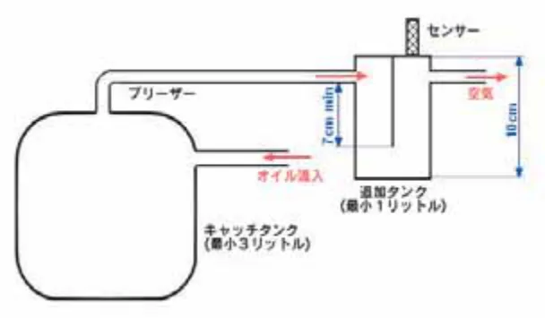</figure>
<p>   ➨㸶᮲ Ἔᅽࢩࢫࢸ࣒   8.1 Ἔᅽ㓄⟶</p>
<p><span class="pagemark" id="p36">P.36</span>8.1.1 Ἔᅽ⿦⨨ࡢᅽຊࡣ㸱㸮㸮bar࡟ไ㝈ࡉࢀࡿࠋ  8.1.2 ࡍ࡭࡚ ࡢἜᅽᾮࢆ཰ᐜࡍࡿ㓄⟶ࡣࠊ᭱ 㧗సື  ᗘ㸰㸮㸲Υ࡛ ࡢసື ᅽຊࡢ㸰 ಸ௨ୖ ࡢ᭱ ప◚⿣ᅽຊࢆ᭷ࡋ࡚ ࠸࡞ࡅࢀࡤ࡞ࡽ࡞࠸ࠋ  8.1.3 ⮬ື 㛢㙐࢝ ࢵࣉࣜࣥ ࢢ࠶ࡿ࠸ࡣࢿࢪ␃ࡵࡢࢥࢿࢡࢱ࣮ ࡢࡘ࠸ࡓἜᅽᾮ㓄⟶ࡢ ࡳࡀࢥࢡࣆࢵࢺෆ࡟チྍ ࡉࢀࡿࠋ  8.1.4 㓄⟶ࡣࠊ࠸࠿࡞ࡿ₃ࢀࡀ⏕ࡌࡼ࠺࡜ࡶࢥࢡࣆࢵࢺෆ࡟ᾮయࡀ␃ࡋ࡞࠸ࡼ࠺ ࡟ྲྀ ࡾ௜ࡅࡽࢀ࡞ࡅࢀࡤ࡞ࡽ࡞࠸ࠋ  8.1.5 㓄⟶ࡣࠊࡑࢀࡀᰂ㌾࡞ࡶࡢ࡛ ࠶ࡿሙྜ ࠊ࢝ࢩ࣓ ࡽࢀࡓ࠶ࡿ࠸ࡣᅽ╔ᘧࢥࢿࢡࢱ࣮ ࠾ࡼࡧᦶ᧿࡜⅖࡟⪏࠼ᚓࡿእ㒊⥙ᮦࢆ᭷ࡋ࡚ ࠸࡞ࡅࢀࡤ࡞ࡽ࡞࠸ࠋ   ➨㸷᮲ ෭༷ ࢩࢫࢸ࣒   9.1 ෭༷ 㓄⟶  9.1.1 ෭༷ ⿦⨨ࡢᅽຊࡣࠊỈ⁐ᛶࡢ෭༷ ๣ࡀ౑⏝ࡉࢀ࡚ ࠸ࡿሙྜ ࠊ㸲.㸵㸳barA࡟ไ 㝈ࡉࢀࡿࠋ  9.1.2 ෭༷ ᾮࢆ཰ᐜࡍࡿ㓄⟶ࡣࠊࢥࢡࣆࢵࢺࢆ㏻㐣ࡍࡿࡇ࡜ࡣ࡛ ࡁ࡞࠸ࠋ  9.1.3 㓄⟶ࡣࠊ࠸࠿࡞ࡿ₃ࢀࡀ⏕ࡌࡼ࠺࡜ࡶࢥࢡࣆࢵࢺෆ࡟ᾮయࡀ␃ࡋ࡞࠸ࡼ࠺ ࡟ྲྀ ࡾ௜ࡅࡽࢀ࡞ࡅࢀࡤ࡞ࡽ࡞࠸ࠋ  9.1.4 㓄⟶ࡣࠊࡑࢀࡀᰂ㌾࡞ࡶࡢ࡛ ࠶ࡿሙྜ ࠊ࢝ࢩ࣓ ࡽࢀࡓ࠶ࡿ࠸ࡣᅽ╔ᘧࢥࢿࢡࢱ࣮ ࠾ࡼࡧᦶ᧿࡜⅖࡟⪏࠼ᚓࡿእ㒊⥙ᮦࢆ᭷ࡋ࡚ ࠸࡞ࡅࢀࡤ࡞ࡽ࡞࠸ࠋ   ➨10᮲ ᚑ᮶ᆺࡢ㟁Ẽ⿦⨨  10.1 つᐃ ௨ୗࡢ᮲㡯ࡢつᐃ࡟ྜ ⮴ࡋ࡞ࡅࢀࡤ࡞ࡽ࡞࠸㸸  10.2 ⿵ᶵ⏝ࣂࢵࢸ࣮ࣜ   10.2.1 ⿵ᶵ⏝ࣂࢵࢸ࣮ࣜ ࡣࠊࢥࢡࣆࢵࢺෆࡢྠ ஌⪅ᖍ࡟㓄⨨ࡉࢀ࡞ࡅࢀࡤ࡞ࡽࡎࠊᙉ ຊ࡟ᅛᐃࡉࢀࠊ⤯⦕ᮦ࡛〇సࡉࢀࡓ࣎ ࢵࢡࢫࡢ୰࡟ಖㆤࡉࢀ࡞ࡅࢀࡤ࡞ࡽ࡞ ࠸ࠋ  10.2.2 ➇ᢏཧຍ⪅ࡣࠊ⿦╔ࡀ⩏ົ ௜ࡅࡽࢀࡓ⿦⨨㸦ࢹ࣮ ࢱ࣮ࣟ࢞ ࠊADRࠊ↷᫂ ⅉ࡞࡝㸧 ࡢ᧯స࡟ᚲせ࡞㟁ຊ㸦᭱ ኱㸯㸴࣎ࣝ ࢺ㸧ࢆᥦ౪ࡋ࡞ࡅࢀࡤ࡞ࡽ࡞࠸ࠋ  10.2.3 ➇ᢏ఍ᮇ㛫ࢆ㏻ࡋ࡚ ࠊ⿵ຓࡢ㟁Ẽᅇ㊰ࢆ౪⤥ࡍࡿࣂࢵࢸ࣮ࣜ ࡢ㟁ᅽࡣࠊ㸳㸮࣎ࣝ ࢺ௨ୗ࡛ ࡞ࡅࢀࡤ࡞ࡽ࡞࠸ࠋ</p>
<p><span class="pagemark" id="p37">P.37</span>10.3 ⅉⅆ⿦⨨  ⅉⅆ⿦⨨ࡣᖖ࡟సື ≧ែࢆಖࡗ࡚ ࠸࡞ࡅࢀࡤ࡞ࡽ࡞࠸ࠋ  ㌴୧࡟ࡣ௨ୗࡀྲྀ ࡾ௜ࡅࡽࢀ࡞ࡅࢀࡤ࡞ࡽ࡞࠸㸸  10.3.1 ๓㒊࡟㸸  ప㸰ࡘࡢබㄆࡉࢀࡓ๓↷ⅉࢆࠊ㌴୧ࡢ๓ᚋ᪉ྥ ୰ᚰ⥺࡟ᕥྑ ᑐ⛠࡟ࠊ ప㸯㸱㸮㸮㹫㹫㞳ࡋ࡚ ⿦╔ࡍࡿࠋィ ࡣ๓↷ⅉࡢ୰ኸ࡛ ⾜ࢃࢀࡿࠋ  ๓↷ⅉࡣⓑⰍࡢࣅ࣮࣒ ࢆⓎගࡋ࡞ࡅࢀࡤ࡞ࡽ࡞࠸ࠋ  ୧ഃ࡟᪉ྥ ᣦ♧ჾࠋ  10.3.2 ᚋ㒊࡟㸸  㸰ࡘࡢ㉥Ⰽⅉ࡜㸰ࡘࡢ͆ ࢫࢺࢵࣉ͇ࣛ ࢖ࢺࢆࠊ㌴୧ࡢ๓ᚋ᪉ྥ ୰ᚰ⥺࡟ᕥྑ ᑐ⛠࡟ࠊ᭱ ప㸯㸳㸮㸮㹫㹫㞳ࡋ࡚ ⿦╔ࡍࡿࠋィ ࡣࣜ ࢔ࣛ ࢖ࢺࡢ୰ኸ࡛ ⾜ࢃࢀࡿࠋ   㸰ࡘࡢࣞ ࢖ࣥࣛ ࢖ࢺ࠶ࡿ࠸ࡣࣇ࢛ ࢢࣛࣥ ࣉࢆࠊᚋ㒊࡟ᕥྑ ୧ഃ࡛࡛ ࡁࡿࡔ ࡅ㧗࠸఩⨨࡟ࠊ㌴୧ࡢ๓ᚋ᪉ྥ ୰ᚰ⥺࡟ᕥྑ ᑐ⛠࡟⿦╔ࡍࡿࠋ ࡇࢀࡽࡢⅉⅆࡣࣜ ࢔࢘ ࢖ࣥ ࢢࡢ࢚ࣥ ࢻࣉ࣮ࣞ ࢺࡢᚋ➃࡟ᤄධࡉࢀࡿᚲせࡀ࠶ࡿࠋ ࡑࢀࡽࡣබㄆࡉࢀ࡞ࡅࢀࡤ࡞ࡽ࡞࠸㸦ࢸࢡࢽ࢝ࣝࣜ ࢫࢺ㸲㸴࡟ᚑ࠺㸧ࠋ ୧᪉ࡢࣛ ࢖ࢺ࡜ࡶ࿘ᮇࡀ㸲HzࡢⅬ⁛㸦㸮.㸯㸰㸳⛊ONࡢᚋ㸮.㸯㸰㸳⛊OFF㸧 ࢆࡍࡿࡇ࡜ࠋ ࡇࢀࡽࡢⅉⅆࡣࣜ ࢔࢘ ࢖ࣥ ࢢࡢ࢚ࣥ ࢻࣉ࣮ࣞ ࢺࡢᚋ➃࡟ᤄධࡉࢀࡿᚲせࡀ࠶ࡿࠋ</p>
<p>୧ഃ࡟᪉ྥ ᣦ♧ჾࠋ ࢪⰍ࡛ ࠊࢫ࣮ࣟ ࢰ࣮ࣥ ࠾ࡼࡧࣇࣝ ࢥ࣮ ࢫ࢖࢚࣮ࣟ ࡢ᮲௳࡟ྜ ⮴ࡍࡿ ㏿ᗘไ㝈ࡀ㐺⏝ࡉࢀࡓ᫬࡟ࡣࠊᕥྑ ᑐ⛠࡟Ⅼ⁛ࡋ࡞ࡅࢀࡤ࡞ࡽ࡞࠸ࠋࢫ࣮ࣟ ࢰ࣮ࣥ ࠾ࡼࡧࣇࣝ ࢥ࣮ ࢫ࢖࢚࣮ࣟ ࡢ㏿ᗘไ㝈࡟ᑐࡍࡿ᪉⟇ࡀ㌴୧࡟ᐇ ᪋ࡉࢀࡿࡇ࡜ࠋⅬ⁛࿘ᮇࡣ㸲Hz㸦㸮.㸯㸰㸳⛊ONࡢᚋ㸮.㸯㸰㸳⛊OFF㸧ࠋࣞ</p>
<p>࢖ࣥࣛ ࢖ࢺࡀⅬⅉࡉࢀࡓሙྜ ࠊⅬ⁛ࡣࣞ ࢖ࣥࣛ ࢖ࢺ࡜཯ᑐ࡛ ࠶ࡿࡇ࡜ࠋ  10.4 FIA ࢠࣥ ࢢせ௳  10.4.1 㹄㹇㸿㸭㸿㹁㹍ࡢ⩏ົ ௜ࡅࡽࢀࡿࣟ ࢠࣥ ࢢࢭࣥ ࢧ࣮ ࡣ㸸  ࢵࣉࢺ࣮ࣜ࢞   ⇞ᩱὶ㔞ィ ࣈ࣮ ࢫࢺᅽ  ⇞ᩱ ᗘ  ⇞ᩱὶ㔞ィࡢ⇞ᩱᅽ  ࢪࣥࣞ ࣈࢭࣥ ࢧ࣮   ࢲࢭࣥ ࢧ࣮   ࢵࢳࢱࣥ ࢡࣞ࣋ࣝ ࢭࣥ ࢧ࣮ 㸦ྲྀ ࡾ௜ࡅࡀ࠶ࡿሙྜ 㸧  ࢥࢡࣆࢵࢺෆ㒊 ᗘ  FIAࡀᚲせ࡜ࡳ࡞ࡍࡑࡢ௚୍ ษࡢ᝟ሗࠋ</p>
<p><span class="pagemark" id="p38">P.38</span>10.4.2 ࡍ࡭࡚ ࡢ㹄㹇㸿㸭㸿㹁㹍ࣟ ࢠࣥ ࢢࢭࣥ ࢧ࣮ ࡣࠊࢳ࣮࣒ ࡟ࡼࡗ࡚ ᥦ౪ࡉࢀࠊ㹄㹇 㸿㸭㸿㹁㹍࡟ࡼࡗ࡚ ᢎㄆࡉࢀ࡞ࡅࢀࡤ࡞ࡽ࡞࠸ࠋࡑࢀࡽࡣ㹄㹇㸿㸭㸿㹁㹍ࡢ ࢹ࣮ ࢱ࣮ࣟ࢞ ࡟┤⤖ࡉࢀ࡞ࡅࢀࡤ࡞ࡽ࡞࠸ࠋࢹ࣮ ࢱ࣮ࣟ࢞ ࡣࢥࢡࣆࢵࢺෆ࡟ ᦚ㍕ࡉࢀ࡞ࡅࢀࡤ࡞ࡽ࡞࠸ࠋ  10.4.3 බㄆࡉࢀࡓὶ㔞ィ࠾ࡼࡧࢺࣝ ࢡィ ჾࢆྵ ࡵࡓFIA ࢠࣥ ࢢࢭࣥ ࢧ࣮ 㓄⥺᮰ ࡣࠊࢳ࣮࣒ ࡟ࡼࡗ࡚〇సࡉࢀࠊFIA࡟ࡼࡗ࡚ ᢎㄆࡉࢀ࡞ࡅࢀࡤ࡞ࡽ࡞࠸ࠋ  10.4.4 FIAࡢつᐃࡍࡿ஦ᨾࢹ࣮ ࢱグ㘓⿦⨨ࡀ⩏ົ ௜ࡅࡽࢀࡿࠋ  10.4.5 ၏୍ ㄆࡵࡽࢀࡿGPSࡣࠊ⩏ົ ௜ࡅࡢࣟ ࢠࣥ ࢢࢭࣥ ࢧ࣮ ࠿ࡽࡢ㹄㹇㸿㸭㸿㹁㹍 ࡢGPS ࠶ࡿࠋ  10.5 ࢸ࣓ࣞ ࢺ࣮ࣜ  </p>
<p>10.5.1 ௨ୗࡢࡳࡀㄆࡵࡽࢀࠊࡑࡢ௚୍ ษࡢ᪉ἲࡣ㝖እࡉࢀࡿ㸸 </p>
<p>ࣆࢵࢺࢧ࢖࣮ࣥ࣎ ࢻୖ ࡢㄞࡳྲྀ ࡾྍ ⬟࡞࣓ ࢵࢭ࣮ ࢪࠋ  ࢻࣛ ࢖ࣂ࣮ ࡢࢪ࢙ ࢫࢳ࣮ࣕ ࡟ࡼࡿྜ ᅗࠋ  ㌴୧࠿ࡽࣆࢵࢺ࡬ࡢ㸦㸯᪉ྥ 㸧ࢸ࣓ࣞ ࢺ࣮ࣜ ಙྕ   ࢵࣉࡢࢫࢱ࣮ ࢺࡲࡓࡣ⤊஢ࢆ▱ࡽࡏࡿ&quot; ࢵࣉࢺ࣮ࣜ࢞ &quot;ಙྕ 㸸 a. ࣛࢵࣉ࣐࣮࣮࢝ ㏦ಙᶵ㸦ࣛ ࢵࣉࢺ࣮ࣜ࢞ 㸧ࡣ⊂❧ࡋࡓ⿦⨨࡛ ࡞ࡅࢀࡤ࡞ ࡽࡎࠊ㸦࣡ ࢖࣮ࣖ ࠊࢣ࣮ ࣈࣝ ࠊගࣇ࢓࢖ࣂ࣮ ࡞࡝࡟ࡼࡾ㸧࠸࠿࡞ࡿࣆࢵࢺ ᶵჾ࡜ࡶ᥋⥆ࡉࢀ࡚ ࠸࡚ ࡣ࡞ࡽ࡞࠸ࠋ b.ࡇࢀࡽࡢ㏦ಙᶵ࡟ㄆࡵࡽࢀࡿᶵ⬟ࡣࠊࣛ ࢵࣉࢆグ㘓ࡍࡿࡇ࡜ࡢࡳ࡛ ࠶ࡿࠋ  ࢻࣛ ࢖ࣂ࣮ ࡜ࣆࢵࢺ࡜ࡢ㛫ࡢ཮᪉ྥ ࡢཱྀ 㢌࡟ࡼࡿࢥ࣑ࣗ ࢽࢣ࣮ ࢩࣙࣥ ࠊ㌴ ୧࡜ࣆࢵࢺࢆࡘ࡞ࡄ୍ ษࡢ㡢ኌ↓⥺஺ಙࢩࢫࢸ࣒ ࡣࠊ⊂❧ᆺ࡛ ࡞ࡅࢀࡤ࡞ ࡽࡎࠊࡑࡢ௚ࡢࢹ࣮ ࢱࢆ㏦ಙࡲࡓࡣཷ ಙࡋ࡚ ࡣ࡞ࡽ࡞࠸ࠋࡑࡢࡼ࠺࡞ࡍ࡭࡚ ࡢ஺ಙࡣࠊ㹄㹇㸿࡟ࡶഐཷྍ ⬟࡛ ฼⏝࡛ ࡁࡿࡶࡢ࡛ ࡞ࡅࢀࡤ࡞ࡽ࡞࠸ࠋ ࡑࡢ௚ࡢ㐃⤡ࢩࢫࢸ࣒ ࡢ౑⏝ࡣࠊ࣮࢜࢞ ࢼ࢖ࢨ࣮ ࡢチྍ ࢆᚓࡓᚋࠊࡑࡢ⟶⌮ ୗ࡛ ࡢࡳྍ ⬟࡛ ࠶ࡿࠋ  10.5.2 FIAࡢࢸ࣓ࣞ ࢺ࣮ࣜ ࢩࢫࢸ࣒ ࡀ⩏ົ ௜ࡅࡽࢀࡿࠋ  10.6 ⾲♧ⅉ  ࠸࠿࡞ࡿ㌴୧ࡶࠊ఩⨨Ỵࡵ࠾ࡼࡧᙬⰍ㸦㟷ࠊ㉥࠶ࡿ࠸ࡣ⥳Ⰽࡢኚ໬Ⰽ㸧࡛ ࠊᏳ඲ࣛ ࢖ࢺ㸦㹃㹐㹑㸭་⒪⏝㸧ࡢጉࡆ࡜࡞ࡿ⾲♧ⅉࢆ౑⏝ࡋ࡚ ࡣ࡞ࡽ࡞࠸ࠋ ౛࡜ࡋ࡚ ࡣḟࡢࡼ࠺࡞ࡶࡢ࡛ ࠶ࡿࡀࠊࡑࢀ࡟㝈ࡽࢀ࡞࠸㸸࣭ ࢘࢖ࣥ ࢻࢫࢡ࣮ࣜࣥ ࡢᚋ᪉࡛ ࠸ࡃࡘ࠿ࡢ㢮ఝࡋࡓⰍࢆ౑࠺ࡇ࡜ࡣㄆࡵࡽࢀ࡞ ࠸ࠋ ࣇࣟࣥ ࢺࣛ ࢖ࢺࢥࣥ ࣃ࣮ ࢺ࣓ࣥ ࢺෆ࡛ ࡣࠊ௵ពࡢⰍࡀチྍ ࡉࢀࡿࠋ</p>
<p>季</p>
<p>季</p>
<p>季</p>
<p>季</p>
<p><span class="pagemark" id="p39">P.39</span>➨11᮲ ࢺࣛࣥ ࢫ࣑ ࢵࢩࣙࣥ ࢩࢫࢸ࣒   11.1 ࢺࣛࣥ ࢫ࣑ ࢵࢩࣙࣥ ࡢࢱ࢖ࣉ ࢺࣛࣥ ࢫ࣑ ࢵࢩࣙࣥ ࢩࢫࢸ࣒ ࡣࠊ㸰ᮏࢆ㉸࠼ࡿ࣍ ࢖࣮ࣝ ࡢ㥑ື ࢆྍ ⬟࡜ࡍࡿࡇ࡜ࡣ࡛ ࡁ࡞࠸ࠋ  11.2 ࢡࣛ ࢵࢳ </p>
<p>11.2.1 ෆ⇞࢚ࣥ ࢪࣥ ࡢࡓࡵ࡟ࠊ㸯ࡘࡢࡳࡢࢡࣛ ࢵࢳࡀㄆࡵࡽࢀࡿࠋ  11.2.2 ࢡࣛ ࢵࢳ᧯సࡢື ࡁࡣࠊ௨ୗࢆ᮲௳࡜ࡋ࡚ ᨭ᥼ࡉࢀ࡚ ࡼ࠸㸸  ࢻࣛ ࢖ࣂ࣮ ࡀࢡࣛ ࢵࢳࡢ᧯సࢆ᏶඲࡟┤᥋ⓗ࡟ไᚚࡋ࡚ ࠸ࡿࠋ  ࢡࣛ ࢵࢳ᧯స⿦⨨ࡢ᭱ ᑠ࠾ࡼࡧ᭱ ኱ື ⛬఩⨨ࡣࠊࢡࣛ ࢵࢳࡀ᏶඲࡟ࡘ࡞ࡀ ࡗࡓ㏻ᖖࡢ㟼Ṇ఩⨨࡜᏶඲࡟ゎᨺࡉࢀࡓ㸦࡝ࡢᵝ࡞౑⏝࡛ ࡁࡿࢺࣝ ࢡࡶఏ 㐩࡛ ࡁ࡞࠸㸧఩⨨ࡢࡑࢀࡒࢀ࡟ᑐᛂࡋ࡚ ࠸࡞ࡅࢀࡤ࡞ࡽ࡞࠸ࠋ 㺃 ㏙ࡢẁⴠ࡟ࡘ࠸࡚ ࡢ၏୍ ࡢ౛እࡣࠊࢫࢺ࣮ࣝ 㜵Ṇ࠾ࡼࡧࢠ࢔ࢩࣇࢺ࣭ ࢫ ࢺࣛ ࢸࢪ࣮ ࡀ✌ື ࡋ࡚ ࠸ࡿ᫬࡛ ࠶ࡿࠋ  11.3 ࢺࣛࣥ ࢫ࣑ ࢵࢩࣙࣥ ࡢษࡾ㞳ࡋ </p>
<p>11.3.1 ࢺࣛࣥ ࢫ࣑ ࢵࢩࣙࣥ ࡣࠊ㌴୧ࡀ೵Ṇࡋࠊ࢚ࣥ ࢪࣥ ࡀṆࡲࡗࡓሙྜ ࡟ࠊ㌴୧ࢆᢲ ࡍ࠶ࡿ࠸ࡣ≌ᘬࡍࡿࡇ࡜ࡀྍ ⬟࡞ࡼ࠺࡟タィࡉࢀ࡚ ࠸࡞ࡅࢀࡤ࡞ࡽ࡞࠸ࠋ  11.3.2 ࢥࢡࣆࢵࢺࡢእഃ࡟ྲྀ ࡾ௜ࡅࡽࢀࡓᅽᦢ✵Ẽ࣎ ࢺࣝ 㸦᭱ ኱㸮.㸳㹩㹥㸧࡟ࡼࡗ࡚ ✵Ẽᅽ࡟ࡼࡿ⿵ຓ⿦⨨ࡀࠊࢽ࣮ࣗ ࢺࣛࣝ ࢆ㑅ᢥࡋ㌴୧ࢆ⛣ື࡛ ࡁࡿࡼ࠺࡟チࡉࢀࡿࠋ ࢽ࣮ࣗ ࢺࣛࣝ ࢫ࢖ࢵࢳ௨እ࡛ 㸸 ࢩࣕࣝ ࡀࢺࣛࣥ ࢫ࣑ ࢵࢩࣙࣥ ࢆษࡾࡍ࡭࡚ ࡢ㟁Ẽ⿦⨨ࢫ࢖ࢵࢳࢆእഃ࠿ ࡽษࡿࡇ࡜ࡀ࡛ ࡁࡿࡼ࠺ࠊ㸰ࡘࡢࢫ࢖ࢵࢳࡀ㸸  ㌴୧ࡢ୧ഃ࡟ࠊ㌴୧୰ᚰ⥺࡟ᕥྑ ᑐ⛠࡟㓄⨨ࡉࢀࠊ㹸ࢲࢵࢩ࣮ࣗ࣎ ࢻ㸩㸲 㸮㹫㹫ࡢୗࡢ⥺ࡼࡾୗ࡛ ࠊ㸿ࣆ࣮ࣛ ࡢ๓ࡢࢧࣂ࢖ࣂࣝ ࢭࣝ ࡟ᅛᐃࡉࢀ࡞ࡅ ࢀࡤ࡞ࡽ࡞࠸ࠋ  ࢻ࢔㛤ཱྀ 㒊ࡼࡾ㸱㸳㸮㹫㹫ᮍ‶࡛ ࡞ࡅࢀࡤ࡞ࡽ࡞࠸ࠋ  ḟࡢࡼ࠺࡟タィࡉࢀ࡞ࡅࢀࡤ࡞ࡽ࡞࠸㸸 㸫 ㌴୧ෆ㒊ࡢࡍ࡭࡚ ࡢ㟁Ẽᅇ㊰ࢆษࡿࡼ࠺࡟ࠋ 㸫グ࡟ᐃࡵࡽࢀࡓ⿦⨨࡟ࡼࡾࢺࣛࣥ ࢫ࣑ ࢵࢩࣙࣥ ࡜ࡢ᥋⥆ࢆษࡾ㞳ࡍ ࡇ࡜ࡀ࡛ ࡁࡿࡼ࠺࡟ࠋ 㸫 ࢩࣕࣝ ࡀഅⓎⓗ࡟ࣃ࣮࣡ ᅇ㊰࡟㟁ᅽࢆ෌ࡧຍ࠼ࡿࡇ࡜ࡀฟ᮶࡞࠸ ࡼ࠺࡟ࠋ 㸫 ➨㸯㸵.㸰.㸰࡟つᐃࡉࢀࡿᾘⅆჾࢫ࢖ࢵࢳ࠿ࡽ㸵㸮㹫㹫ᮍ‶࡜࡞ࡿࡼ ࠺࡟ࠋ 㸫 ࣉࢵࢩࣗ࣎ ࢱࣥ ࠶ࡿ࠸ࡣࣞ ࣂ࣮ ࡜ඹ࡟ྲྀ ࡾ௜ࡅࡿࠋ  ࡑࢀࡽࡢࢫ࢖ࢵࢳࡣⓑ࠸⦕ྲྀ ࡾࢆࡋࡓ㟷Ⰽࡢṇ୕ゅᙧࡢ୰࡟㉥Ⰽࡢ✄ጔࢆᥥ ࠸ࡓᶆ㆑࡛᫂ ☜࡟⾲♧ࡉࢀ࡞ࡅࢀࡤ࡞ࡽ࡞࠸ࠋ</p>
<p><span class="pagemark" id="p40">P.40</span>ゅᙧࡣ▮༳ࡀ࣎ ࢱࣥ ࣁࣥ ࢻࣝ ࡲࡓࡣࣜࣥ ࢢࢆᣦࡋ♧ࡍࡼ࠺࡞ゅᗘ࡛ ࡞ࡅࢀ ࡤ࡞ࡽ࡞࠸ࠋゅᙧ⾲♧࡟ࡣࠊ㟷Ⰽࡢ⦕ྲྀ ࡾࡢᑡ࡞ࡃ࡜ࡶ┤ᚄࡀ㸳㸮㹫㹫ࡢⓑᆅ෇࡟㟷Ⰽ ࡢ㹌ࡢᏐࢆグࡋࡓࡶࡢࡀῧ࠼ࡽࢀ࡚ ࠸࡞ࡅࢀࡤ࡞ࡽ࡞࠸㸦ᅗཧ↷㸧ࠋ  ୧᪉ࡢᶆ㆑ࡣ㧗ࡉࡣ᭱ ప࡛ ࡶ㸯㸮㸮㹫㹫࡞ࡅࢀࡤ࡞ࡽ࡞࠸ࠋ ࡑࢀࡣ㍤ᗘ཯ᑕ≉ᛶࢆ᭷ࡋ࡞ࡅࢀࡤ࡞ࡽ࡞࠸ࠋ</p>
<figure></figure>
<p>11.4 ࢠ࢔࣎ ࢵࢡࢫ  11.4.1〇ࡢࢣ࣮ ࢫࡀㄆࡵࡽࢀࡿࠋ  11.4.1 ๓㐍ࡢࢠ࢔ࣞ ࢩ࢜ ࡢᩘ ࡣ㸵࠿ࠊࡑࢀ௨ୗ࡛ ࡞ࡅࢀࡤ࡞ࡽ࡞࠸ࠋ  11.4.3 ࢠ࢔ࡣ㗰㕲〇࡛ ࡞ࡅࢀࡤ࡞ࡽ࡞࠸ࠋ  11.4.4 ᗘ࡟ࠊࢻࣛ ࢖ࣈࢺࣞ ࢖ࣥ 㸦ື ຊఏ㐩⤒㊰㸧࡟ࠊ㸰⤌௨ୖ ࡢࢠ࢔ࡀ᥃࠿ࡿࡇ࡜ ࡀ࡛ ࡁࡿࢩࢫࢸ࣒ ࡣࡍ࡭࡚ ⚗Ṇࡉࢀࡿࠋ  11.4.5 ▐㛫ⓗ࡞ࢠ࢔ࢩࣇࢺࡣ⚗Ṇࡉࢀࡿࠋ ࢠ࢔ࢩࣇࢺࡣࠊᐇ㝿ࡢࢠ࢔ࡢჶࡳྜ ࠸ࡢᢤࡁྲྀ ࡾ࡟⥆ࡁࠊ┠ᶆࢠ࢔࡬ࡢჶࡳྜ ࠸ࡀ⾜ࢃࢀࡿࠊ᫂ ࡽ࠿࡞㐃⥆ⓗస⏝࡛ ࡞ࡅࢀࡤ࡞ࡽ࡞࠸ࠋ ༢୍ ࡢࣂࣞࣝ ࢩࣇࢺᶵᵓ࠶ࡿ࠸ࡣ㸯ࡘࡢ㹆ࣃࢱ࣮ࣥ ࢠ࢔ࢩࣇࢺᶵᵓࡢࡳࡀㄆ ࡵࡽࢀࡿࠋ ࢠ࢔ࢩࣇࢺᶵᵓࡣࡍ࡭࡚ ࡢ๓㐍ࢠ࢔ࢆ᧯సࡍࡿࡶࡢ࡛ ࡞ࡅࢀࡤ࡞ࡽ࡞࠸ࠋᚋ ㏥ࢠ࢔ࡣู ಶࡢసື ࢩࢫࢸ࣒ ࡟ࡼࡗ࡚ ᧯స࡛ ࡁࡿࠋ ⤖ᯝ࡜ࡋ࡚ ⏕ࡌࡿ࢚ࣥ ࢪࣥ ࡢࣃ࣮࣡࢝ ࢵࢺࡣࠊ᭱ ప㸱㸮㹫㹱㐺⏝ࡉࢀ࡞ࡅࢀ ࡤ࡞ࡽ࡞࠸ࠋ  11.4.6 ➨㸯.㸯㸵㡯࠾ࡼࡧ㸳㡯࡟つᐃࡉࢀࡿ࢚ࣥ ࢪࣥ ࡢࣃ࣮࣡ ࢆఏ㐩ࡍࡿࡓࡵ࡟ࠊ㐃 ⥆ⓗྍ ኚࢺࣛࣥ ࢫ࣑ ࢵࢩࣙࣥ ࢩࢫࢸ࣒ ࢆ౑⏝ࡍࡿࡇ࡜ࡣㄆࡵࡽࢀ࡞࠸ࠋ  11.4.7 ࡍ࡭࡚ ࡢ㌴୧ࡣࠊ➇ᢏ఍୰࠸ࡘ࡛ ࡶࠊࢻࣛ ࢖ࣂ࣮ ࡀᚋ㏥ࡉࡏࡿࡇ࡜ࡀ࡛ ࡁ࡞ࡅ ࢀࡤ࡞ࡽ࡞࠸ࠋ  11.4.8 ಶࠎࡢࢠ࢔ࢳ࢙ࣥ ࢪࡣࠊࢠ࢔࣎ ࢵࢡࢫࡢᶵᲔⓗไ⣙ࡢ⠊ᅖ௨ෆ࡛ ࠊࢻࣛ ࢖ࣂ࣮ ࡟ࡼࡗ࡚ ಶู ࡟㛤ጞࡉࢀ࡞ࡅࢀࡤ࡞ࡽࡎࠊせồࡉࢀࡓࢠ࢔ࡣࠊせồࡉࢀࡓࢠ ࢔ࢩࣇࢺࢆᣄྰ ࡍࡿࡓࡵ࡟ಖㆤࡀ౑⏝ࡉࢀ࡚ ࠸࡞࠸㝈ࡾࠊ┤ࡕ࡟ኚ㏿ࡉࢀ࡞ ࡅࢀࡤ࡞ࡽ࡞࠸ࠋ</p>
<p><span class="pagemark" id="p41">P.41</span>᪦ࢠ࢔ࢳ࢙ࣥ ࢪせồࡀ஢ᢎࡉࢀࡓ࡞ࡽࡤࠊ᭱ึ ࡢࢠ࢔ࢳ࢙ࣥ ࢪࡀ᏶஢ࡍࡿ ࡲ࡛ ࠊ᭦࡞ࡿせồࢆ஢ᢎࡍࡿࡇ࡜ࡣ࡛ ࡁ࡞࠸ࠋ</p>
<p>ࣂ࣮ࣞ ࣈಖㆤ⟇ࡀ฼⏝ࡉࢀ࡚ ࠸ࡿሙྜ ࠊࡇࢀࡣ┠ⓗࡢࢠ࢔ࡢ᥃࠿ࡾࢆᅇ 㑊࡛ ࡁࡿࡔࡅࡶࡢ࡛ ࠶ࡾࠊ㸳㸮PVࢆ㉸࠼ࡿ㐜ᘏࢆᘬࡁ㉳ࡇࡋ࡚ ࡣ࡞ࡽ࡞࠸ࠋ ࡇࡢࡼ࠺࡟ࡋ࡚ ࢠ࢔ࢳ࢙ࣥ ࢪࡀᣄྰ ࡉࢀࡓሙྜ ࠊࢻࣛ ࢖ࣂ࣮ ࡀ᪂ࡓ࡞ู ಶࡢせồࢆࡋࡓᚋ࡛ ࡢࡳࠊࢠ࢔ࢆኚ㏿ࡍࡿࡇ࡜ࡀ࡛ ࡁࡿࠋ  ࢻࣛ ࢖ࣂ࣮ ࡢࢠ࢔ࢳ࢙ࣥ ࢪせồࢆㄪ⠇ࡍࡿࡓࡵ࡟฼⏝ࡉࢀࡿࠊ୍ ษࡢࢹࣂ࢘ࣥ ࢫ᫬㛫᪉⟇ࡣ༢୍୍࡛ ᐃࡢ್࡛ ࡞ࡅࢀࡤ࡞ࡽ࡞࠸ࠋ  11.5 ࢺࣝ ࢡࢺࣛࣥ ࢫࣇ࢓࣮ ࢩࢫࢸ࣒  </p>
<p>11.5.1 ᅇ㌿ࡢ㐜࠸࣍ ࢖࣮ࣝ ࠿ࡽᅇ㌿ࡢ᪩࠸࣍ ࢖࣮ࣝ ࡟ࢺࣝ ࢡࢆ㌿㏦ࡍࡿ࠶ࡿ࠸ࡣ㌿ ᥮ࡍࡿࡇ࡜ࢆྍ ⬟࡜ࡍࡿタィࡢࢩࢫࢸ࣒ ࠶ࡿ࠸ࡣ⿦⨨ࡣ୍ ษ⚗Ṇࡉࢀࡿࠋ ၏୍チࡉࢀࡿࢺࣝ ࢡ㌿㏦ࢩࢫࢸ࣒ ࡣ➨㸯㸯.㸴㡯࡟ᐃࡵࡽࢀࡿࡶࡢࡢࡳ࡛ ࠶ࡿࠋ  11.6 ࢹ࢕ࣇ࢓ࣞࣥ ࢩࣕࣝ   ௨ୗࡢࡳࡀㄆࡵࡽࢀࡿ</p>
<p>Ἔᅽ࠶ࡿ࠸ࡣ㟁Ẽࢩࢫࢸ࣒ ࡢ⿵ຓ࡞ࡋ࡟సື ࡍࡿᶵᲔⓗ࣑ࣜ ࢸࢵࢻࢫࣜ ࢵࣉ࣭ࢹ ࢕ࣇ࢓ࣞࣥ ࢩࣕࣝ ࠋ  ࣅࢫ࢝ ࢫᘧࡢࢹ࢕ࣇ࢓ࣞࣥ ࢩࣕࣝ ࡣࠊ㌴୧ࡀ㉮⾜୰ࡢሙྜ ࡟ไᚚࡀ୙ྍ ⬟࡛ ࠶ࢀ ࡤࠊἜᅽᘧࢫࣜ ࢵࣉࢥࣥ ࢺ࣮ࣟࣝ ࡜ࡣぢ࡞ࡉࢀ࡞࠸ࠋ   ➨㸯㸰᮲ ࢧࢫ࣌ࣥ ࢩࣙࣥ   ⮬⏤  12.1 ࢥࢡࣆࢵࢺࡢෆഃ࠿ࡽ⾜࠺ࡇ࡜ࡀ⚗Ṇࡉࢀࡿㄪᩚ   12.1.1 ࢫࣉࣜࣥ ࢢㄪᩚ   12.1.2 ࢩࣙ ࢵࢡ࢔ࣈࢯ࣮ ࣂ࣮ ㄪᩚ   12.1.3 ࢔ࣥ ࢳ࣮ࣟࣝ ࣂ࣮ ㄪᩚ   12.2 ⚗Ṇࡉࢀࡿࢩࢫࢸ࣒ ࢧࢫ࣌ࣥ ࢩࣙࣥ 㒊ရ௨እࠊᶵ⬟ཎ⌮ࡀ࠸࠿࡞ࡿࡶࡢ࡛ ࠶ࢁ࠺࡜ࡶࠊࡲࡓࢻࣛ ࢖ࣂ࣮ ࡟ ࡼࡗ࡚ సື ࡍࡿ࠿ྰ ࠿࡟㛵ࢃࡽࡎࠊᆅୖ 㧗ࢆᨵኚࡍࡿ┠ⓗࡢࢩࢫࢸ࣒ ࠋ  12.3 ๓㒊ࢧࢫ࣌ࣥ ࢩࣙࣥ࢘ ࢵࢩ࣮ࣗ࣎ࣥ ࡀࢻࣛ ࢖ࣂ࣮ ࡢ⬮㒊࡟༴㝤ࢆཬࡰࡍྍ ⬟ᛶࡀ࠶ ࡿሙྜ ࠊࡑࡢᇶ㒊࡟㈏ධ㜵Ṇࣂ࣮ ࢆྲྀ ࡾ௜ࡅࡿࡇ࡜ࡀ⩏ົ ௜ࡅࡽࢀࡿࠋ  12.4 ࢧࢫ࣌ࣥ ࢩࣙࣥ ࢔࣮࣒ ࡣ㸸</p>
<p><span class="pagemark" id="p42">P.42</span>12.4.1 ࢡ࣮࣒࣓ࣟ ࢵ࢟ ࡀ᪋ࡉࢀ࡚ ࠸࡚ ࡣ࡞ࡽ࡞࠸  12.4.2 ᆒ㉁࡞㔠ᒓ〇࡛ ࡞ࡅࢀࡤ࡞ࡽ࡞࠸  12.4.3 ࣉࣟ ࣇ࢕࣮ࣝ ࡢ㧗ࡉ㸭ᖜẚࡣ㸱.㸮ࢆ㉸࠼࡚ ࡣ࡞ࡽ࡞࠸  12.4.4 ࣈ࣮ࣞ࢟ 㓄⥺ࠊ࣍࢖࣮ࣝ ࢸࢨ࣮ ࠶ࡿ࠸ࡣ㟁Ẽ࣡ ࢖࣮ࣖ ࡢಖㆤࡣࠊ௨ୗࢆ᮲௳࡜ ࡋ࡚ ࢧࢫ࣌ࣥ ࢩࣙࣥ ࢔࣮࣒ ࡟ྲྀ ࡾ௜ࡅࡿࡇ࡜ࡀ࡛ ࡁࡿ㸸  ࣉࣟ ࣇ࢕࣮ࣝ ࡢᖜ㸭㧗ࡉࡢẚࡀ࢔࣮࣒ 㸯ࡘ࡟ࡘࡁ㸱ࢆ㉸࠼࡞࠸ࡇ࡜ࠋ  ಖㆤయࡢᙧ≧ࡣᕥྑ ᑐ⛠࡛ ࠶ࡿࡇ࡜ࠋ  ࣉࣟ ࣇ࢕࣮ࣝ ࡢ᭱ ኱⫗ཌࡀࠊ㸩㸱㹫㹫ࡢಖㆤࡀ௜ࡅࡽࢀࡓࢧࢫ࣌ࣥ ࢩࣙࣥ ࢔࣮࣒ ࡢ᭱ ኱ࣉࣟ ࣇ࢕࣮ࣝ 㧗࡜ྠ ➼࡛ ࠶ࡿࡇ࡜ࠋ   ➨㸯㸱᮲ ᧯⯦  ⮬⏤  13.1 ᶵᲔⓗ㐃⤖ ࢻࣛ ࢖ࣂ࣮ ࡜࣍ ࢖࣮ࣝ ࡜ࡢ㛫ࡣࠊ㐃⥆ࡋࡓᶵᲔⓗ࡞㐃⤖ࡢࡳࡀチࡉࢀࡿࠋ  13.2 ࢫࢸ࢔ࣜࣥ ࢢࢥ࣒ࣛ   13.3 ࢫࢸ࢔ࣜࣥ ࢢࢥ࣒ࣛ ࡣࢫ࣏࣮ ࢶ࣮࢝ ࡢᏳ඲ᵓ㐀యࡢᢎㄆᡭ㡰㸦㹄㹇㸿ᢏ⾡㒊࡟ࡼࡾࠊせồḟ➨ධᡭྍ ⬟ࠋ〇㐀⪅ࡢࡳ㸧࡟ᚑ࠸ࠊ㹄㹇㸿࡟ࡼࡗ࡚ ᢎㄆࡉࢀ࡞ࡅࢀࡤ࡞ࡽ࡞࠸ࠋ  13.3.1 ணᐃࡉࢀࡿヨ㦂ᐇ᪋᪥ࡢ㐜ࡃ࡜ࡶ㸶㐌㛫๓࡟㏻▱ࡉࢀࡿࠋ  13.4 㸲㍯㥑ື   ⚗Ṇࡉࢀࡿࠋ  13.5 ࣃ࣮࣡ ࢫࢸ࢔ࣜࣥ ࢢ チࡉࢀࡿࡀࠊࡑࡢࡼ࠺࡞⿦⨨ࡣࠊ㌴୧ࡢ᧯⯦࡟ᚲせ࡞⫗యⓗປຊࢆ㍍ῶࡉࡏࡿ௨እࡢ ᶵ⬟ࢆᐇ᪋࡛ ࡁࡎࠊࡍ࡭࡚ ࡢἜᅽ࠾ࡼࡧ㸭࠶ࡿ࠸ࡣ㟁ຊࡀ㐽᩿ ࡉࢀࡓ᫬࡟ࡶ᧯⯦ᶵ⬟ ࡀാࡁ⥆ࡅࡿࡇ࡜ࡀ࡛ ࡁ࡞ࡅࢀࡤ࡞ࡽ࡞࠸ࠋ  13.6 ࢫࢸ࢔ࣜࣥ ࢢ࣍ ࢖࣮ࣝ ࡢࢡ࢖ࢵࢡ࣮ࣜࣜ ࢫࢩࢫࢸ࣒   13.6.1 ⩏ົ ௜ࡅࡽࢀࡿࠋ  13.6.2 ࢡ࢖ࢵࢡ࣮ࣜࣜ ࢫᶵᵓࡣࠊࢫࢸ࢔ࣜࣥ ࢢ࣍ ࢖࣮ࣝ ㍈࡟ྠ ᚰ෇≧ࡢࣇࣛࣥ ࢪ࡛ ᵓᡂࡉࢀࠊࡑࡢࣇࣛࣥ ࢪࡣ㝧ᴟ㓟໬ฎ⌮࠶ࡿ࠸ࡣࡑࡢ௚ࡢ⪏ஂ ᛶࡢ࠶ࡿ⿕そຍᕤ࡛ 㯤Ⰽ࡟ሬ⿦ࡉࢀ࡚ ࠸࡞ࡅࢀࡤ࡞ࡽࡎࠊࢫࢸ࢔ࣜࣥ ࢢ࣍ ࢖࣮ࣝ ⿬ഃࡢࢫ ࢸ࢔ࣜࣥ ࢢࢥ࣒ࣛ ࡟ྲྀ ࡾ௜ࡅࡉࢀ࡞ࡅࢀࡤ࡞ࡽ࡞࠸ࠋ  13.6.3 ࢫࡣࠊࢫࢸ࢔ࣜࣥ ࢢ࣍ ࢖࣮ࣝ ㍈࡟ἢࡗ࡚ ࣇࣛࣥ ࢪࢆᘬࡃࡇ࡜࡟ࡼࡗ࡚</p>
<p><span class="pagemark" id="p43">P.43</span>⾜ࢃࢀࡿࡶࡢ࡛ ࡞ࡅࢀࡤ࡞ࡽ࡞࠸ࠋ ࢫࢸ࢔ࣜࣥ ࢢ࣍ ࢖࣮ࣝ ࡢ࣮ࣜࣜ ࢫࡣࣃ࣮࣡ ᅇ㊰ࢆ㛤࠿࡞ࡅࢀࡤ࡞ࡽ࡞࠸ࠋ   ➨㸯㸲᮲ ไື ⿦⨨  ไື ⿦⨨ࡣ௨ୗࡢせ௳ࢆ㝖ࡁࠊ⮬⏤࡛ ࠶ࡿࠋ  14.1 ศ㞳ᅇ㊰ </p>
<p>14.1.1 ᑡ࡞ࡃ࡜ࡶ㸰⣔⤫ࡢྠ୍࣌ ࢲࣝ ࡟ࡼࡗ࡚ ᧯సࡉࢀࡿᅇ㊰ࡀ⩏ົ ௜ࡅࡽࢀࡿࠋ  14.1.2 ࡇࡢ㸰ࡘࡢᅇ㊰ࡢ㛫ࡢ᥋⥆࡜ࡋ࡚ ㄆࡵࡽࢀࡿࡶࡢࡣࠊ၏୍ ๓ᚋࡢ㌴㍈ࡢ㛫ࡢ ไື ຊᆒ⾮ࢆㄪ⠇ࡍࡿࡓࡵࡢᶵᲔⓗࢩࢫࢸ࣒࡛ ࠶ࡿࠋ  14.1.3 ࢫࢱ࣮ ࢩࣜࣥ ࢲ࣮ ࡜࢟ࣕࣜ ࣃ࣮ ࡢ㛫࡟ࡣ୍ ษࡢ⿦⨨࠶ࡿ࠸ࡣࢩࢫࢸ࣒ ࡣㄆ ࡵࡽࢀ࡞࠸ࠋ  14.1.4 ᝟ሗ཰㞟⏝ࡢࢭࣥ ࢧ࣮ ࠊࢫࢺࢵࣉࣛ ࢖ࢺࢫ࢖ࢵࢳ࠶ࡿ࠸ࡣᕤලࢆ฼⏝ࡋ࡚ ㄪᩚྍ ⬟࡞ᶵᲔⓗไື ᅽไᚚࡣࠊ͆ ࢩࢫࢸ࣒͇ ࡜ࡣࡳ࡞ࡉࢀࡎࠊࡑࢀࡽࡣ࣐ ࢫࢱ࣮ ࢩࣜࣥ ࢲ࣮ ࡢฟཱྀ 㛫㏆࡟ྲྀ ࡾ௜ࡅࡽࢀ࡞ࡅࢀࡤ࡞ࡽ࡞࠸ࠋ  14.2 ࣈ࣮ࣞ࢟࢟ࣕࣜ ࣃ࣮  </p>
<p>14.2.1 ࢖࣮ࣝ ࡟ࡘࡁࠊ᭱ ኱㸴ࣆࢫࢺࣥ ࡢ㸯ࡘࡢ࢟ࣕࣜ ࣃ࣮ ࡢࡳࡀㄆࡵࡽࢀࡿࠋ  14.2.2 ࣃ࣮ ࡢ᩿ 㠃ࡣ෇ᙧ࡛ ࡞ࡅࢀࡤ࡞ࡽ࡞࠸ࠋ  14.2.3 ࣃ࣮ ࡢᮏయࡣᙎᛶಀᩘ 㸶㸮㹅㹮㹟௨ୗࡢ࢔࣑ࣝ ࢽ࣒࢘ྜ 㔠࡛〇సࡉࢀ࡚ ࠸࡞ࡅࢀࡤ࡞ࡽ࡞࠸ࠋ  14.3 ࢹ࢕ࢫࢡࣈ࣮ࣞ࢟ ࠾ࡼࡧࣈ࣮ࣞ࢟ ࣃࢵࢻ </p>
<h5 id="14-3-1">14.3.1 ᮦ㉁ࡣ⮬⏤ </h5>
<p>14.3.2 ࢖࣮ࣝ ࡟ࡘࡁ᭱ ኱㸯ᯛࠋ  14.4 ࣈ࣮ࣞ࢟ ⿦⨨㸦ࢹ࢕ࢫࢡ࡜ࣈ࣮ࣞ࢟ ࣃࢵࢻ㸧  14.4.1 ኱ࢹ࢕ࢫࢡ┤ᚄ㸸㸯㸳࢖ࣥ ࢳ  14.5 ࢔ࣥ ࢳࣟ ࢵࢡࣈ࣮ࣞ࢟ ࢩࢫࢸ࣒  </p>
<p>࠸࠿࡞ࡿ࢔ࣥ ࢳࣟ ࢵࢡࣈ࣮ࣞ࢟ ᶵ⬟ࡶ⚗Ṇࡉࢀࡿࠋ  14.6 ࣃ࣮࣡ ࣈ࣮ࣞ࢟  </p>
<p>ษࡢࣃ࣮࣡ ࣈ࣮ࣞ࢟ ᶵ⬟ࡣ⚗Ṇࡉࢀࡿࠋ </p>
<p><span class="pagemark" id="p44">P.44</span>14.7 ไື ᅽ  㹄㹇㸿ࡣࠊྛ࢟ࣕࣜ ࣃ࣮ ࡟౪⤥ࡉࢀࡿᅽຊࢆ┘どࡍࡿࠋ   ➨㸯㸳᮲ ࢖࣮ࣝ 㸤ࢱ࢖ࣖ   15.1 ࢖࣮ࣝ ࡢᩘ ࠾ࡼࡧ఩⨨</p>
<p>15.1.1 㸸㸲  15.1.2 ࢱ࢖ࣖ ࡣᕥྑ࡛ྠ୍࡛ ࡞ࡅࢀࡤ࡞ࡽ࡞࠸ࠋ 㸯ࢩ࣮ ࢬࣥ ࡟ࣇࣟࣥ ࢺ㸯௙ᵝࠊࣜ࢔࢔ࢡࢫࣝ ࡟㸯௙ᵝࡢࡳࡀㄆࡵࡽࢀࠊබㄆࡉ ࢀ࡞ࡅࢀࡤ࡞ࡽ࡞࠸ࠋ  15.1.3 ᶓ࠿ࡽぢ࡚ ࠊ࣍ ࢖࣮ࣝ ࢔࣮ ࢳࡢෆഃࡢࢥࣥ ࣉ࣮ࣜ ࢺ࣍ ࢖࣮ࣝ ࡢ࿘ᅖࡀぢ࠼࡞ ࡅࢀࡤ࡞ࡽ࡞࠸ࠋ  15.1.4 ࠾ࡼࡧ๓࠿ࡽぢ࡚ ࠊ࣍࢖࣮ࣝ ࢆ㌴୧ࡀ┤㐍ࡍࡿࡼ࠺࡟ᩚิ ࡉࡏࡓ≧ែ࡛ ࠊࢥࣥ ࣉ࣮ࣜ ࢺ࣍ ࢖࣮ࣝ ࡜ࡑࡢྲྀ ࡾ௜ࡅ㒊ࡣࠊ㌴㍈୰ᚰ⥺ࢆ㏻㐣ࡍࡿỈᖹ㠃ࡢୖ࡛ぢ࠼࡚ ࡣ࡞ࡽ࡞࠸㸦࢜ ࣉࢩࣙࣥ 㸯ࢆ㑅ᢥࡢሙྜ ࡣࠊ➨㸱.㸲.㸴㡯࡟つᐃࡉࢀ ࡿษᢤࡁࢆ㝖ࡃ㸧ࠋ  15.2 ᑍἲ  15.2.1 ࢖࣮ࣝ ࣁࣈࡢ㧗ࡉ࡛ Ỉᖹ࡟ィ ࡋࡓࠊࢥࣥ ࣉ࣮ࣜ ࢺ࣍ ࢖࣮ࣝ ࠋ  ᖜ㸦᭱ ኱㸧: 㸯㸲&quot;  ┤ᚄ㸦᭱ ኱㸧: 㸰㸶&quot; </p>
<p>15.2.2 ࢱ࢖ࣖ ࢆྲྀ ࡾ㝖࠸ࡓ࣍ ࢖࣮ࣝ 㔜㔞㸦㹩㹥㸧  ࣇࣟࣥ ࢺ㸦᭱ ప㸧:㸵.㸳㹩㹥  ࢔㸦᭱ ప㸧:㸵.㸳㹩㹥  15.3 ᮦ㉁ </p>
<p>ᆒ㉁࡞㔠ᒓ〇</p>
<p>యࣃ࣮ ࢶ࡜ࡋ࡚〇㐀ࡉࢀࡿࡇ࡜ࡀ⩏ົ ௜ࡅࡽࢀࡿࠋ ⁐᥋࡞ࡋ ✵Ὕ࡞ࡋ  15.4  </p>
<p>15.4.1 ࣇࣟࣥ ࢺ࠾ࡼࡧࣜ ࢔ࡢ┤ᚄ㸦᭱ ኱㸧㸸㸯㸶&quot;  15.4.2 ᖜ㸦᭱ ኱㸧㸸㸯㸱&quot;  15.5 ➃㒊ࡣ௨ୗࡢ㏻ࡾ࡛ ࡞ࡅࢀࡤ࡞ࡽ࡞࠸ :</p>
<p><span class="pagemark" id="p45">P.45</span>15.5.1 ᕥྑ ᑐ⛠࡛ ࠊ࣍ ࢖࣮ࣝ ࡢෆഃ࡜እഃࡢ࣒ࣜ ➃㒊ࡢ㧗ࡉ࡛ィ ࡋࡓ┤ᚄࡣࠊ බᕪ㸩㸭㸫㸯.㸳㹫㹫ࢆࡶࡗ࡚ྠ୍࡛ ࡞ࡅࢀࡤ࡞ࡽ࡞࠸ࠋ  15.5.2 ኱࡛ 㧗ࡉࡣ㸯㸷.㸰㹫㹫ࢆୖ ᅇࡗ࡚ ࡣ࡞ࡽ࡞࠸ࠋ  15.6 ࡾእࡋྍ ⬟࡞࣍ ࢖࣮ࣝ 㸭ࣁࣈ࢟ࣕ ࢵࣉ  ㄆࡵࡽࢀ࡞࠸ࠋ  15.7 ࣇࣛࣥ ࢪ  15.7.1 ㌴୧࡟ྲྀ ࡾ௜ࡅࡽࢀࡓ᫬࡟ࠊ࣍ ࢖࣮ࣝ ⤌ࡳ❧࡚ ရࡢ࠶ࡽࡺࡿ㒊ศࡀ࣒ࣜ ࡢ㏿ ᗘ࡛ ᅇ㌿ࡋ࡞ࡅࢀࡤ࡞ࡽ࡞࠸ࠋ  15.7.2 ᶓ࠿ࡽぢ࡚ ࠊ࣒ࣜ ࡢ⥲ෆ㒊㡿ᇦ㸦࣍ ࢖࣮ࣝ ࡢᅇ㌿୺㍈࡟ᆶ┤࡞ᖹ㠃࡟ᢞᙳ㸧ࡢ᭱ ప㸳㸮㸣ࡀࠊ┤ᚄ㸯㸳㸮㹫㹫㹼㸲㸮㸮㹫㹫ࡢ㛫࡛ 㞀ᐖ≀࡞ࡃぢ࠼ࡿ≧ែ࡛ ࡞ࡅࢀࡤ࡞ࡽ࡞࠸ࠋ  15.8 ࢖࣮ࣝ ࡢྲྀ ࡾ௜ࡅ </p>
<h5 id="15-8-1">15.8.1 ⮬⏤ </h5>
<p>15.8.2 ࢼࢵࢺࡢ⮬ື Ᏻ඲ಖᣢࢆᥦ౪ࡍࡿ࣍ ࢖࣮ࣝ ಖᣢࢩࢫࢸ࣒ ࡀ⿦ഛࡉࢀ࡞ࡅࢀࡤ ࡞ࡽ࡞࠸ࠋࡑࢀࡣ㹄㹇㸿ࡢᢎㄆࡀࡉࢀ࡞ࡅࢀࡤ࡞ࡽ࡞࠸ࠋ  15.9 ࢖࣮ࣝ ࢸࢨ࣮ 㸦ᣊ᮰ࢣ࣮ ࣈࣝ 㸧  15.9.1 ࢖࣮ࣝ ࡜㌴୧࡜ࡢ⤖ྜ ࢆಖࡘࡍ࡭࡚ ࡢࢧࢫ࣌ࣥ ࢩࣙࣥ 㐃⤖㒊ࡀ◚ᦆࡋࡓ㝿 ࡟࣍ ࢖࣮ࣝ ࡀ㌴୧࠿ࡽእࢀࡿࡢࢆ㜵ࡄࡓࡵ࡟ࠊ࣍ ࢖࣮ࣝ ᣊ᮰ࢣ࣮ ࣈࣝ ࡀ཰ᐜ࡛ ࡁࡿࡼ࠺ᑐ⟇ࡀྲྀ ࡽࢀ࡞ࡅࢀࡤ࡞ࡽ࡞࠸ࠋࡇࡢ࣍ ࢖࣮ࣝ ᣊ᮰ࢣ࣮ ࣈࣝ ࡢ┠ ⓗࡣࠊ࣍࢖࣮ࣝ ࡀ㌴୧࠿ࡽ㞳ࢀࡿࡢࢆ㜵ࡄࡓࡵࡔࡅ࡛ ࠶ࡾࠊࡑࢀ௨እࡢᶵ⬟ࡀ ࡞࠸ࡇ࡜ࠋ 㻌</p>
<p>15.9.2 ࡑࢀࡽࡢᣊ᮰ࢣ࣮ ࣈࣝ ࠾ࡼࡧࡑࡢྲྀ ࡾ௜ࡅ㒊ࡶࠊ஦ᨾࡢ㝿ࡢ࣍ ࢖࣮ࣝ ࡜ࢻࣛ ࢖ࣂ࣮ 㢌㒊࡜ࡢ᥋ゐ㜵Ṇ࡟ᙺ❧ࡘࡼ࠺࡟タィࡉࢀ࡚ ࠸࡞ࡅࢀࡤ࡞ࡽ࡞࠸ࠋ 㻌</p>
<p>15.9.3 ࢖࣮ࣝ ࡟ࡣࠊ㸰ᮏࡢᣊ᮰ࢣ࣮ ࣈࣝ ࡀྲྀ ࡾ௜ࡅࡽࢀ࡚ ࠸࡞ࡅࢀࡤ࡞ࡽ࡞࠸ࠋ ࡑࢀࡽࡣ㹄㹇㸿ࠕ㸶㸶㸴㸲㸫㸰㸮㸯㸱ࠖᇶ‽࡟ᚑࡗ࡚ බㄆࡉࢀ࡚ ࠸࡞ࡅࢀࡤ࡞ ࡽࡎࠊ㹄㹇㸿ࢸࢡࢽ࢝ࣝࣜ ࢫࢺ㹌㹭.㸱㸵࡟グ㍕ࡉࢀ࡚ ࠸࡞ࡅࢀࡤ࡞ࡽ࡞࠸ࠋྛ ࢣ࣮ ࣈࣝ ࡢ࢚ ࢿࣝ ࢠ࣮ ྾཰ࡣ᭱ึ ࡢ㸲㸮㸮㹫㹫ࡢኚ⛣࡟ࡘ࠸࡚ 㸶㼗㹈ᮍ‶ ࡜࡞ࡽ࡞࠸ࡇ࡜ࠋ 㻌</p>
<p>15.9.4 ᣊ᮰ࢣ࣮ ࣈࣝ ࡢ୧➃㒊࡟ࡣࠊ௨ୗࡢࡑࢀࡒࢀู ಶࡢྲྀ ࡾ௜ࡅ㒊ࢆ᭷ࡋ࡚ ࠸ ࡞ࡅࢀࡤ࡞ࡽ࡞࠸ࠋ</p>
<p>ᙜヱࢧࢫ࣌ࣥ ࢩ࣓ࣙࣥࣥ ࣂ࣮ ࡢ㈇Ⲵࣛ ࢖ࣥ ࠿ࡽィ ࡋࠊ㸲㸳rࡢ෇㗹ᙧ 㸦⊃ゅ㸧௨ෆ࡛ ࠸ࡎࢀࡢ᪉ྥ ࡟ࡶࠊ㸶㸮kNࡢ᭱ పᘬࡗᙇࡾᙉᗘ࡟⪏࠼ᚓࡿ ࡇ࡜㸹  ࢧࣂ࢖ࣂࣝ ࢭࣝୖ ࠶ࡿ࠸ࡣࢠ࢔࣎ ࢵࢡࢫୖ࡛ ࠊ㸰ࡘࡢྲྀ ࡾ௜ࡅ㒊ࡢ୰ᚰ࡛</p>
<p><span class="pagemark" id="p46">P.46</span>ィ ࡋ࡚ ᑡ࡞ࡃ࡜ࡶ㸯㸮㸮㹫㹫㞳ࢀ࡚ ࠸ࡿࡇ࡜㸹  ࢖࣮ࣝ ㍈࡟㛵ࡋ࡚ ᑡ࡞ࡃ࡜ࡶ㸷㸮rᨺᑕ≧࡟㞳ࢀࠊྛ࣍ ࢖࣮ࣝ 㸭࢔ࢵࣉࣛ ࢖ࢺ⤌ࡳ❧࡚ୖ࡛ ࠊ㸰ࡘࡢྲྀ ࡾ௜ࡅ㒊ࡢ୰ᚰࡢ㛫࡛ィ ࡋ࡚ ᑡ࡞ࡃ࡜ࡶ 㸯㸮㸮㹫㹫㞳ࢀ࡚ ࠸ࡿࡇ࡜㸹  ࢣ࣮ ࣈࣝ ࡢබㄆࣛ࣋ࣝ ࡢ⾲♧࡟ᚑ࠺᭱ ᑠෆᚄࡢᣊ᮰ࢣ࣮ ࣈࣝ ➃㒊ࡢྲྀ ࡾ ௜ࡅල࡟㐺ྜ࡛ ࡁࡿࡇ࡜ࠋ  15.9.5 ࡉࡽ࡟ࠊࢧࢫ࣌ࣥ ࢩ࣓ࣙࣥࣥ ࣂ࣮ ࡣࠊ㸯ᮏࢆ㉸࠼ࡿᣊ᮰ࢣ࣮ ࣈࣝ ࢆྵ ࡴࡇ࡜ࡣ࡛ ࡁ࡞࠸ࠋ  15.9.6 ᣊ᮰ࢣ࣮ ࣈࣝ ࡣࠊ㛗ࡉࡀ᭱ ప㸲㸮㸮㹫㹫࡛ ࡞ࡅࢀࡤ࡞ࡽ࡞࠸ࠋ  15.10 ᅽຊไᚚࣂࣝ ࣈ ㄆࡵࡽࢀ࡞࠸ࠋ  15.11 ✵Ẽᅽᘧࢪࣕ ࢵ࢟</p>
<p>15.11.1 ㄆࡵࡽࢀࡿࠋ ࡋ࠿ࡋ࡞ࡀࡽࠊࢫࢱ࣮ ࢸ࢕ࣥ ࢢࢢࣜ ࢵࢻୖ࡛ ࡣࠊ࢚ ࢔࣮࣍ ࢫࢆ࢚ ࢔ࢪࣕ ࢵ࢟ ࡟ 㐃⤖ࡍࡿ㐃⤖ᶵ⬟ࡣࠊ࢚ ࢔࣮࣍ ࢫࡀእࡉࢀࡓ᫬࡟㌴୧ࡀ࢚ ࢔ࢪࣕ ࢵ࢟ୖ ࡟ಖᣢ ࡉࢀࡿࢩࢫࢸ࣒ ࢆ᭷ࡋ࡚ ࠸࡞ࡅࢀࡤ࡞ࡽ࡞࠸ࠋ  15.11.2 ࡇࡢࢪࣕ ࢵ࢟ ࡢ᧯సࡢࡓࡵ࡟ࠊᅽᦢ✵Ẽ࣎ ࢺࣝ ࢆ㌴୧࡟ᦚ㍕ࡍࡿࡇ࡜ࡣㄆࡵ ࡽࢀ࡞࠸ࠋ  15.12 Ἔᅽ࠶ࡿ࠸ࡣ㟁Ẽᘧࢪࣕ ࢵ࢟   ㄆࡵࡽࢀࡿࠋ ࡋ࠿ࡋ࡞ࡀࡽࠊࢫࢱ࣮ ࢸ࢕ࣥ ࢢࢢࣜ ࢵࢻୖ࡛ ࡣࠊࢪࣕ ࢵ࢟ ࡟ྞ ࡾୖ ࡆࡽࢀ࡚ ࠸ࡿ㌴୧ ࡀഅⓎⓗ࡟ⴠୗࡍࡿ༴㝤ᛶࡀ࡞࠸ࡼ࠺࡟ᦚ㍕ࡢタィࡀ࡞ࡉࢀ࡚ ࠸࡞ࡅࢀࡤ࡞ࡽ࡞࠸ࠋ  15.13 ࢭࣥ ࢧ࣮  </p>
<p>15.13.1 ㉮⾜୰ࡢ㌴୧ࡢࢱ࢖ࣖ ᅽ࡜ ᗘࢆィ ࡍࡿࢭࣥ ࢧ࣮ ࡀᙉࡃ᥎ዡࡉࢀࡿࠋ  15.13.2 ࡇࢀࡽࡢࢭࣥ ࢧ࣮ ࡀ౑⏝ࡉࢀࡿሙྜ ࡣࠊᨾ㞀ࡀ࠶ࡿሙྜ ࡟ࢻࣛ ࢖ࣂ࣮ ࡟ࡑࢀ ࢆ▱ࡽࡏࡿ㆙࿌ⅉࡀ᭱ ప࡛ ࡶ㸯ࡘ࡞ࡅࢀࡤ࡞ࡽ࡞࠸ࠋ   ➨㸯㸴᮲ ࢥࢡࣆࢵࢺ  16.1 ࢥࢡࣆࢵࢺ</p>
<p>16.1.1 ࢥࢡࣆࢵࢺࡣࢻࣛ ࢖ࣂ࣮ ࡢ᭱ ኱ࡢಖㆤయ࡜ࡋ࡚ ഛ࠼ࡽࢀ࡞ࡅࢀࡤ࡞ࡽ࡞࠸ࠋ </p>
<p>16.1.2 ㌴୧ࡢ๓ᚋ᪉ྥ ୰ᚰ⥺ࢆ㏻㐣ࡍࡿᆶ┤ᖹ㠃࡟ᑐࡋ࡚ ᕥྑ ᑐ⛠࡟ࠊ➨㸯㸳.㸲㡯ࠊ ➨㸯㸵.㸴㡯࠾ࡼࡧ➨㸯㸶.㸱.㸯㡯࡟つᐃࡢ࠶ࡿࢩࣙࣝ ࢲ࣮ ࢧ࣏࣮ ࢺ࠾ࡼࡧ㸭</p>
<p><span class="pagemark" id="p47">P.47</span>࠶ࡿ࠸ࡣ⩏ົ ௜ࡅࡽࢀࡓಖㆤయࢆ㝖ࡁࠊྠ୍ ᙧ≧࠾ࡼࡧᑍἲࡢ㸰ࡘࡢᗙᖍࢆྲྀ ࡾ௜ࡅࡿࡇ࡜ࡀྍ ⬟࡛ ࡞ࡅࢀࡤ࡞ࡽ࡞࠸ࠋ  16.1.3 ࢻࣛ ࢖ࣂ࣮ ࡢ୧㊊ࡣ๓㒊㌴㍈୰ᚰ⥺ࢆ㏻㐣ࡍࡿᆶ┤㠃ࡢᚋ㒊࡟ᖖ࡟఩⨨ࡋ࡞ ࡅࢀࡤ࡞ࡽ࡞࠸ࠋ  16.2 ࢻࣛ ࢖ࣂ࣮ ࡜ྠ ஌⪅ࡢ⬮⏝ᐜ✚  16.2.1 ㌴୧ࡢ๓ᚋ᪉ྥ ୰ᚰ⥺࡟ᑐࡋᕥྑ ᑐ⛠࡛ 㸷㸮rࡢゅᗘࢆᡂࡍ㸴ᯛࡢᖹᆠ࡞⾲ 㠃࡟ࡼࡾᐃ⩏ࡉࢀࡿྠ ᑍἲࡢ㸰ࡘࡢᐜ✚ࡀࠊ཮᪉ࡢᦚ஌⪅ࡢ⬮㒊࡟ᥦ౪ࡉࢀ ࡞ࡅࢀࡤ࡞ࡽ࡞࠸ࠋ  16.2.2 ᑍἲ  㛗ࡉ㸸ࢻࣛ ࢖ࣂ࣮ ࡢ㊊ࡢ᭱ ๓఩⨨࠿ࡽ࠿ࡽࢫࢸ࢔ࣜࣥ ࢢ࣍ ࢖࣮ࣝ ୰ᚰ⥺ࡢ ᆶ┤ᢞᙳ㠃ࡲ࡛ ࠋ᭱ ๓఩⨨ࡣࠊࢫࣟ ࢵࢺࣝ࣌ ࢲࣝ ࢆ඲㛤࡟ࡋࡓ఩⨨࡜ࡳ࡞ ࡉࢀࡿࠋ  ࢥࢡࣆࢵࢺෆࡢᤄධ≀࡟㛵ࡍࡿ࣌ ࢲࣝ ࡢᅗ㠃ࡣ㌴୧ࡢබㄆ᭩ᘧ࡟ᥦ౪ࡉ ࢀࡿࡇ࡜ࠋࢻࣛ ࢖ࣂ࣮ ࡢ⿦ഛ࡟ࡘ࠸࡚ ࡢ㐺ᛂࡀணᐃࡉࢀࡿᚲせࡀ࠶ࡿࠋ  ᑠᖜ㸸㸱㸱㸮㹫㹫 ࣭  ప㧗㸸㸱㸳㸮㹫㹫  16.2.3 ࡇࢀࡽࡢᐜ✚ࡢ࡞࠿࡟ධࡾ㎸ࡴࡇ࡜ࡀㄆࡵࡽࢀࡿᵓᡂ㒊ရ ࡇࢀࡽࡢᐜ✚ࡢ࡞࠿࡟ධࡾ㎸ࡴࡇ࡜ࡀㄆࡵࡽࢀࡿ၏୍ ࡢᵓᡂ㒊ရࡣ௨ୗࡢࡳ࡛ ࠶ࡾࠊ✵㛫ࢆᶓ᩿ ࡍࡿ㝸ቨࢆྵ ࡵ࡚ ࡑࡢ௚ࡣࡍ࡭࡚ ⚗Ṇࡉࢀࡿࠋ  ࢫࢸ࢔ࣜࣥ ࢢࢥ࣒ࣛ ࠾ࡼࡧࡑࡢࣘ ࢽࣂ࣮ ࢧࣝ ࢪࣙ ࢖ࣥ ࢺࠋ  ࢲࣝ ࠋ  ࢻࣛ ࢖ࣂ࣮ ࡟࡜ࡗ࡚ ༴㝤࡛ ࡞࠸ሙྜ ࡟ࠊࢧࢫ࣌ࣥ ࢩࣙࣥ ࢔࣮࣒ྲྀ ࡾ௜ࡅⅬࠋ  ࢖ࣥ ࢻࢫࢡ࣮ࣜࣥ ࡢ࣡ ࢖ࣃ࣮ ᶵᵓ࡜ࡑࡢ࣮ࣔ ࢱ࣮ ࠋ  ✵㛫ᐜ㔞ࡢไᚚࡀ࡛ ࡁࡿࡼ࠺ྲྀ ࡾእࡋྍ ⬟࡞ሙྜ ࡟ࡣࠊࣇࢵࢺࣞ ࢫࢺ࠾ࡼ ࡧࢻࣛ ࢖ࣂ࣮ ⏝ಖㆤࣃࢵࢻࠋ  ஌⪅⏝✵㛫࡟ࠊ࣮࢜࢞ ࢼ࢖ࢨ࣮ ࡢ⿦⨨࠾ࡼࡧ࢚ ࢔ࢥࣥ ௜ᒓရࠋ ྠ ஌⪅⏝✵㛫࡟ࠊ➨㸯㸮.㸰㡯࡟ᚑ࠺⿵ᶵ⏝ࣂࢵࢸ࣮ࣜ ࠋ  ࣃࢿࣝ ࡟ྲྀ ࡾ௜ࡅࡽࢀࡓ㐠㌿࡟ᚲせ࡞ჾල࠾ࡼࡧ⿦⨨ࡣྲྀ ࡾእࡋྍ ⬟࡛ ࡞ࡅࢀࡤ࡞ࡽ࡞࠸ࠋ  ࣃࢵࢻ௜ࡅ㸸ࢻࣛ ࢖ࣂ࣮ ࡟㞄᥋ࡍࡿ㡿ᇦ࡟ࡣಖㆤ⏝ࣃࢵࢻࡀྵ ࡲࢀ࡚ ࠸࡞ ࡅࢀࡤ࡞ࡽ࡞࠸ࠋ  16.3 ࢻࣛ ࢖ࣂ࣮ ࡜ྠ ஌⪅ࡢ㌟య⏝ᐜ✚ </p>
<p>16.3.1 ࢥࢡࣆࢵࢺࡣࢸࣥ ࣉ࣮ࣞ ࢺ㸯ࡢᤄධࡀྍ ⬟࡛ ࡞ࡅࢀࡤ࡞ࡽࡎࠊࡑࡢᑍἲ࡜఩ ⨨ࡣ➨㸱ᅗ࠾ࡼࡧ㸷ᅗ࡟つᐃࡉࢀ࡚ ࠸ࡿࠋࡇࡢࢸࣥ ࣉ࣮ࣞ ࢺࡢ᭱ ᚋⅬࡣࠊࣜ࢔࣮࣮ࣟࣝ࢜ ࣂ࣮ ᵓ㐀యࡢ๓㠃ࡢ㸰㸮㹫㹫๓࡛ ࡞ࡅࢀࡤ࡞ࡽ࡞࠸㸦➨㸷ᅗ㸧ࠋ ࡇࡢ᳨ ᰝࡢࡓࡵࠊ➨㸯㸴.㸳㡯࡟グ㍕ࡉࢀ࡚ ࠸ࡿ⿦⨨ࢆྲྀ ࡾእࡍࡇ࡜ࡀ࡛ ࡁࡿࠋ  16.3.2 ๓㒊࠾ࡼࡧᚋ㒊ࠊࡲࡓഃ㒊࡛ ࢸࣥ ࣉ࣮ࣞ ࢺ㸯⠊ᅖࢆᐃࡵ࡚ ࠸ࡿࢩࣕ ࢩ࣮ ᵓ㐀 యࡢࡍ࡭࡚ ࡢⅬࡣࠊᇶ‽㠃ࡢୖ ᪉ᑡ࡞ࡃ࡜ࡶ㸳㸮㸮㹫㹫࡟࡞ࡅࢀࡤ࡞ࡽ࡞࠸ࠋ</p>
<p><span class="pagemark" id="p48">P.48</span>16.4 ࢻࣛ ࢖ࣂ࣮ ࠾ࡼࡧྠ ஌⪅㢌㒊ࡢᐜ✚  ࢥࢡࣆࢵࢺࡣࢸࣥ ࣉ࣮ࣞ ࢺ㸰ࡀᤄධྍ ⬟࡛ ࡞ࡅࢀࡤ࡞ࡽࡎࠊࡑࡢᑍἲ࡜఩⨨ࡣ➨㸲ᅗ ࠾ࡼࡧ㸷ᅗ࡟つᐃࡉࢀ࡚ ࠸ࡿࠋࡇࡢ᳨ ᰝࡢࡓࡵࠊ➨㸯㸴.㸳㡯࡟グ㍕ࡉࢀ࡚ ࠸ࡿ⿦⨨ࢆྲྀ ࡾእࡍࡇ࡜ࡀ࡛ ࡁࡿࠋ  16.5 ࢥࢡࣆࢵࢺෆࡢ⿦⨨  16.5.1 ௨ୗࡀㄆࡵࡽࢀࡿࡀࠊ➨㸯㸴.㸰㡯࡟つᐃࡉࢀࡿ㸰ࡘࡢ✵㛫ᐜ✚ࡢእഃ࡛ ࡢࡳ ࡜ࡍࡿ:</p>
<p>Ᏻ඲⿦⨨࠾ࡼࡧࢧࣂ࢖ࣂࣝ ࢭࣝ ࡢ୍ 㒊ࢆᵓᡂࡋ࡞࠸ᵓ㐀య  ᕤල࢟ ࢵࢺ  ᗙᖍ㸦ྵ」ᩘ 㸧  㐠㌿࡟ᚲせ࡞ไᚚ⿦⨨  㟁Ꮚ⿦⨨  ࢻࣛ ࢖ࣂ࣮ ⏝෭༷ ⿦⨨  㣧ᩱ⿦⨨  ࣂࣛ ࢫࢺ  ࢪࣕ ࢵ࢟   ᥮Ẽࢲࢡࢺ  ࢻࣛ ࢖ࣂ࣮ ࣉࣛ ࢢ㆑ู ⿦⨨  ࢻ࢔᪋㘄ᶵᵓ  16.5.2 ⿵ᶵ⏝ࣂࢵࢸ࣮ࣜ ࡣࢥࢡࣆࢵࢺෆ࡟ㄆࡵࡽࢀࡿࠋ  16.5.3 ࡇࢀࡽࡢᵓᡂ㒊ရࡣࠊ⾪✺ࡢ㝿࡟ࢻࣛ ࢖ࣂ࣮ ࡟༴㝤ࡢ࠶ࡿሙྜ ࠊሀ∼࡛ ຠᯝⓗ ࡞ಖㆤᮦ㉁࡛そࢃࢀ࡚ ࠸࡞ࡅࢀࡤ࡞ࡽ࡞࠸ࠋ  16.5.4 ࢥࢡࣆࢵࢺฟཱྀ ࡟ฟධࡾࡢጉࡆ࡜࡞ࡿࡶࡢࡀ୍ ษ࠶ࡗ࡚ ࡣ࡞ࡽ࡞࠸㸦ୗグ➨ 㸯㸴㸴㸰㡯㸧ࠋ  16.5.5 ࢥࢡࣆࢵࢺෆ࡟ㄆࡵࡽࢀࡿ⿦⨨ࡢྲྀ ࡾ௜ࡅ࡟ࡘ࠸࡚ ࡣࠊ㌴᳨ ဨࡢᰝᐹࢆཷ ࡅ ࡞ࡅࢀࡤ࡞ࡽ࡞࠸ࠋ </p>
<p>16.5.6 ௨ୗࡀㄆࡵࡽࢀࡿࡀࠊ➨㸯㸴.㸰㡯࡟つᐃࡉࢀࡿࢻࣛ ࢖ࣂ࣮ ࡢ✵㛫ᐜ✚ࡢእഃ࡛ ࡢࡳ࡜ࡋࠊ➨㸯㸴᮲㸵㡯㸯ࢆ㑂Ᏺࡍࡿ:</p>
<p>࢔ࢥࣥ ࡢ௜ᒓရ  ࢻࣛ ࢖ࣂ࣮ ෭ᡣ⿦⨨  ᥮Ẽࢲࢡࢺ  16.6 ࢥࢡࣆࢵࢺࡢฟධࡾ  16.6.1 ࢻ࢔㛤ཱྀ 㒊ࡢ኱ࡁࡉࡀࢥࢡࣆࢵࢺࡢฟධࡾ࡟㐺ษ࡛ ࠶ࡿࡇ࡜ࢆ☜ᐇ࡟ࡍࡿࡓ ࡵࠊࡑࢀࡽࡣ㸸</p>
<p>ࢸࣥ ࣉ࣮ࣞ ࢺ㸳࠾ࡼࡧ㸴ࡢᤄධࡀྍ ⬟࡛ ࡞ࡅࢀࡤ࡞ࡽ࡞࠸ࠋࡑࡢᑍἲ࡜఩ ⨨ࡣ➨㸴ᅗ࡟つᐃࡉࢀ࡚ ࠸ࡿࠋ  ࡇࡢ᳨ ᰝࡢࡓࡵ࡟ࠊࢸࣥ ࣉ࣮ࣞ ࢺࡢప࠸⾲㠃㒊ࡣᇶ‽㠃࡟ᖹ⾜࡟ಖࡓࢀࠊ</p>
<p><span class="pagemark" id="p49">P.49</span>ࡑࢀࡽࡢᚋ➃ࡣᶓ᪉ྥ ࡟୍ ┤⥺࡟ࡉࢀࡿࠋ  ࢸࣥ ࣉ࣮ࣞ ࢺࡣࠊࡑࡢෆഃ⾲㠃ࡀ㌴୧୰ᚰ⥺࠿ࡽ㸯㸳㸮㹫㹫㞳ࢀࡿࡲ࡛ ᶓ ᪉ྥ ࡟⛣ື ࡉࡏࡽࢀࡿ㸦➨㸴ᅗཧ↷㸧ࠋ  ᗙᖍ࡜ࡍ࡭࡚ ࡢࣃࢵࢻࡣࠊࡑࡢྲྀ ࡾ௜ࡅලࡶྵ ࡵࠊྲྀࡾእࡍࡇ࡜ࡀ࡛ ࡁࡿࠋ  16.6.2 ࢥࢡࣆࢵࢺ⬺ฟ᫬㛫 </p>
<p>ࢥࢡࣆࢵࢺࡣࠊࢻࣛ ࢖ࣂ࣮ ࡀ᏶඲࡞㐠㌿⏝⿦ഛࢆ㌟࡟ࡘࡅࠊṇᖖ࡟㐠㌿఩⨨࡟ ╔ᗙࡋࢫࢸ࢔ࣜࣥ ࢢ࣍ ࢖࣮ࣝ ࢆṇࡋ࠸఩⨨࡟ྲྀ ࡾ௜ࡅࠊࢩ࣮ ࢺ࣋ࣝ ࢺࢆ⥾ࡵ ࡓ≧ែ࠿ࡽࠊ᭱ ኱㸵⛊㸦ࢻࣛ ࢖ࣂ࣮ ഃࡼࡾ㸧ࠊ᭱ ኱㸷⛊㸦ྠ ஌⪅ᖍഃࡼࡾ㸧ࡢ ᫬㛫࡛ ⬺ฟ࡛ ࡁࡿࡼ࠺タィࡉࢀ࡚ ࠸࡞ࡅࢀࡤ࡞ࡽ࡞࠸ࠋ </p>
<p>16.6.3 ࢵࢺྲྀ ࡾእࡋヨ㦂  ࢻࣛ ࢖ࣂ࣮ ࡀ࣮ࣞ ࢫ≧ែࡢ㌴୧ෆࡢ㐠㌿఩⨨࡟ṇᖖ࡟╔ᗙࡋࠊࢧ࢖ࢬ࡟࠶ࡗ ࡓ㢌㢕㒊ಖㆤ⿦⨨ࢆྲྀ ࡾ௜ࡅࠊᗙᖍࣁ࣮ ࢿࢫࢆ⥾ࡵࡓ≧ែ࡛ ࠊ་ົせဨ㸯ྡ ࡀ࣮ࣞ ࢫ࡛ ࢻࣛ ࢖ࣂ࣮ ࡀ╔ࡅ࡚ ࠸ࡿணᐃࡢ࣓࣊ࣝ ࢵࢺࢆࠊ㤳㒊࠶ࡿ࠸ࡣ⬨ᰕࢆ ᭤ࡆࡎ࡟ࢻࣛ ࢖ࣂ࣮ ࡢ㢌㒊࠿ࡽྲྀ ࡾእࡍࡇ࡜ࡀ࡛ ࡁࡿࡇ࡜ࢆド᫂ ࡋ࡞ࡅࢀࡤ ࡞ࡽ࡞࠸ࠋ  16.7 ࢻࣛ ࢖ࣂ࣮ ࡢど⏺  16.7.1 ࢥࢡࣆࢵࢺࡣࠊࢸࣥ ࣉ࣮ࣞ ࢺ㸰ࡢ๓㠃ࡀ᭱ ᑠZ=㸳㸶㸳㹫㹫࡛ ࠊᇶ‽㠃࡜୪⾜ ࡟఩⨨ࡍࡿ࡜ࡇࢁࡲ࡛ ࠊ࢘ ࢖ࣥ ࢻࢫࢡ࣮ࣜࣥ 㛤ཱྀ 㒊ࢆ㏻ࡋ࡚ ➨㸲ᅗࡢࢸࣥ ࣉ࣮ࣞ ࢺ㸱ࢆᤄධࡍࡿࡇ࡜ࡀ࡛ ࡁ࡞ࡅࢀࡤ࡞ࡽ࡞࠸ࠋ ࡇࡢ㡿ᇦ࡟౵ධࡍࡿࡇ࡜ࡀチࡉࢀࡿᵓᡂ㒊ရࡣ㸸</p>
<p>ࢥࢡࣆࢵࢺ᥮Ẽࡢࡓࡵࡢ๓᪉ど࡛ 㧗ࡉࡀ᭱ ኱㸲㸮㹫㹫ࡢ࢚ ࢔ࢲࢡࢺࠋࡑࡢ ฟཱྀ ࡣࢻࣛ ࢖ࣂ࣮ ࡢ๓᪉ど⏺ࢆ⦰ᑠࡍࡿࡇ࡜ࡣ࡛ ࡁ࡞࠸ࠋ  ࢖ࣥ ࢻࢫࢡ࣮ࣜࣥ࣡ ࢖ࣃ࣮   㹒㹔࣓࢝ࣛ   ࢩࣕࣝ ࡢ⾲♧ࠊ࠾ࡼࡧࢻࣛ ࢖ࣂ࣮ ࡢ⾲♧ࡢࡓࡵࡢ㹊㹃㹂㸦࣐࣮ ࢩࣕࣝ ࡢ⾲♧࡜ྠ ࡌ㧗ࡉ⠊ᅖෆ࡛ ࠊ᭱ ኱ᖜࡣ㸰㸳㹫㹫㸧  ࢵࢻࣞ ࢫࢺࡢ๓᪉㒊ศࡢ⿵ᙉ  ࢫࣜ ࢵࣉࣛ ࢖ࢺ  16.7.2 ࢥࢡࣆࢵࢺࡣࠊࢸࣥ ࣉ࣮ࣞ ࢺ㸵࠾ࡼࡧࢸࣥ ࣉ࣮ࣞ ࢺ㸶㸦➨㸵ᅗ࡟つᐃ㸧ࢆࢧ࢖ ࢻ࢘ ࢖ࣥ ࢻ࢘ ࢆ㏻ࡋ࡚ ࠊࢸࣥ ࣉ࣮ࣞ ࢺ㸰ࡢᕥྑ ࡢ㠃ࡲ࡛ 㸦➨㸷ᅗ㸧ᤄධࡍࡿࡇ ࡜ࡀ࡛ ࡁ࡞ࡅࢀࡤ࡞ࡽ࡞࠸ࠋ  ࢻࣛ ࢖ࣂ࣮ 㢌㒊ಖㆤ⏝ࡢࣃࢵࢻ࡜ࡑࡢᨭᣢ㒊ࠊࢻ࢔᪋㘄ᶵᵓ࠾ࡼࡧᚋ᪉ど⏺࣑࣮ࣛ ࢆ㝖ࡁࠊ୍ ษࡢ㌴యせ⣲ࡣࡇࢀࡽࡢ㸰ࡘࡢᐜ✚࡟ㄆࡵࡽࢀ࡞࠸ࠋ ᚋ᪉ど⏺࣑࣮ࣛ 㸦ᨭᣢ㒊ࢆక࠺㸧࡜㌴୧๓ᚋ᪉ྥ ᖹ㠃㸦㹖㹘㸧ୖ ࡢഃ᪉ど⏺ࢸࣥ ࣉ࣮ࣞ ࢺ࡜ࡢඹ㏻㒊ศࢆ⾲ࡍᐜ✚ࡢᢞᙳࡣࠊᢞᙳࡉࢀࡿ࣑࣮ࣛ ࡈ࡜࡟㸯㸳 㸮ੌ ᮍ‶ࡢ㡿ᇦࢆ᭷ࡍࡿࡇ࡜ࠋ  16.7.3 ࢲࢵࢩ࣮ࣗ࣎ ࢻ࡛ ᐃࡵࡽࢀࡿỈᖹ㠃㸦Zࢲࢵࢩ࣮ࣗ࣎ ࢻ㸧࡜Z=Zࢲࢵࢩ࣮ࣗ࣎ ࢻ+㸰㸮㸮㹫㹫࡟ࡼࡗ࡚ ᐃࡵࡽࢀࡿᖹ㠃࡜ࡢ㛫࡛ ࠊ࣊ ࢵࢻࣞ ࢫࢺࡢ๓㠃ࢆ㏻㐣 ࡍࡿᕥྑ ᪉ྥ ࡢᆶ┤㠃ࡢ๓࡛ ࡣࠊ௨ୗࡢᵓᡂせ⣲ࡢࡳࡀ㐍ධࡍࡿࡇ࡜ࡀㄆࡵ</p>
<p><span class="pagemark" id="p50">P.50</span>ࡽࢀࡿ㸸</p>
<p>㸿ࣆ࣮ࣛ   ࢻࣛ ࢖ࣂ࣮ 㢌㒊ಖㆤ⏝ࡢࣃࢵࢻ࡜ࡑࡢᨭᣢ㒊  ᚋ᪉ど⏺࣑࣮ࣛ   ࢖ࣥ ࢻࢫࢡ࣮ࣜࣥ࣡ ࢖ࣃ࣮ ࠾ࡼࡧࡑࡢᶵᵓ  ࢫࢸ࢔ࣜࣥ ࢢ࣍ ࢖࣮ࣝ   ࣆࢺ࣮ ⟶  ࢔ࣥ ࢸࢼ  ṇ㠃どぬ࡛᭱ ኱㧗㸲㸮㹫㹫ࡢࢥࢡࣆࢵࢺ᥮Ẽ⏝ࡢ࢚ ࢔ࢲࢡࢺࠋࡑࡢฟཱྀ ࡣ ࢻࣛ ࢖ࣂ࣮ ࡢ๓᪉ど⏺ࢆ᭱ ᑠ໬ࡍࡿࡇ࡜ࡣ࡛ ࡁ࡞࠸ࠋ  ୰❧໬࠾ࡼࡧᾘⅆჾࡢࢫ࢖ࢵࢳ  ࢻࣛ ࢖ࣂ࣮ ࡢ๓᪉ど⏺ࢆጉࡆ࡞࠸ሙྜ ࡣࠊ࣓࢝ࣛ ⏬ീࢆ⾲♧ࡍࡿ௵ពࡢࢫ ࢡ࣮ࣜࣥ   ࢻࣛ ࢖ࣂ࣮ ࡢ๓᪉ど⏺ࢆጉࡆ࡞࠸ሙྜ ࡣࠊ࣐࣮ ࢩࣕࣝ ࢩࢫࢸ࣒ ࡢ⾲♧㒊  ࢵࢻ࢔ࢵࣉ⾲♧⏝ࡢ㏱᫂ ࣃࢿࣝ   බᘧ㌴㍕㹒㹔࣓࢝ࣛ ࡢ㟁Ꮚ࣎ ࢵࢡࢫ  ࢻ࢔ᶵᵓࠊࣄࣥ ࢪ࠾ࡼࡧࢲࣥ ࣃ࣮   ࢻࣛ ࢖ࣂ࣮ ࡢ๓᪉ど⏺ࢆጉࡆ࡞࠸ሙྜ ࡣࠊ㣧ᩱ⿦⨨࠾ࡼࡧࡑࡢ㐃⤖㒊  ࣇࣟࣥ ࢺࣇ࢙ࣥ ࢲ࣮ ࠊణࡋࠊZ㸻㸴㸷㸳㹫㹫࡟఩⨨ࡍࡿỈᖹ㠃ࡼࡾୗࡢࡳ  ࢖ࣥ ࢻࢫࢡ࣮ࣜࣥ ࡢᒁᡤⓗᅛᐃලࠊణࡋࡑࢀࡽࡀZࢲࢵࢩ࣮ࣗ࣎ ࢻࡢ㸰 㸮mmࡼࡾୖ ࡟ᒁᡤⓗ࡟✺ࡁฟࡋ࡚ ࠸࡞࠸ࡇ࡜ࢆ᮲௳࡜ࡍࡿࠋ  ❆࢞ࣛ ࢫࡣࠊ㏱᫂ ࡞ᮦ㉁࡛ ࡢࡳᐇ᪋ࡉࢀ࡞ࡅࢀࡤ࡞ࡽ࡞࠸ࠋࢻ࢔࠾ࡼࡧ࢘ ࢖ࣥ ࢻࢫࢡ࣮ࣜࣥ ࡟ࡑࡢ௚ࡢᮦ㉁࡟ࡼࡿ㢌㒊ഃ᪉ᨭᣢᑓ⏝௨እࡢ⿵ᙉࡀ ᚲせ࡞ሙྜ ࡣࠊ➨㸲ᅗ࡛つᐃࡉࢀࡿࢸࣥ ࣉ࣮ࣞ ࢺ㸱ࡢᤄධࠊ࠾ࡼࡧ➨㸵ᅗ࡛つᐃࡉࢀࡿࢸࣥ ࣉ࣮ࣞ ࢺ㸵࠾ࡼࡧࢸࣥ ࣉ࣮ࣞ ࢺ㸶ࡢᤄධ࡟ࡘ࠸࡚ ᐇ᪋ ࡉࢀ࡞ࡅࢀࡤ࡞ࡽ࡞࠸ࠋ </p>
<p>16.7.4 ࢥࢡࣆࢵࢺෆࡢࢻࣛ ࢖ࣂ࣮ ࡢ఩⨨࠾ࡼࡧど⏺㡿ᇦ㸦➨㸵ᅗ㸧㸸  ࢵࢻࣞ ࢫࢺࡢ࣓࣊ࣝ ࢵࢺᚋ㠃࡜᥋ࡍࡿ㧗ࡉ࡟࠶ࡿࣃࢵࢻࡢ᭱ ๓Ⅼࡣࠊࣜ ࢔࣮࣮ࣟࣝ࢜ ࣂ࣮ ᵓ㐀యࡢ᭱ ๓㠃ࢆ㏻㐣ࡍࡿᕥྑ ᪉ྥ ࡢᆶ┤㠃ࡢ᭱ ప㸷 㸳㹫㹫๓᪉࡛ ࡞ࡅࢀࡤ࡞ࡽ࡞࠸㸦➨㸶ᅗ㸧ࠋ  ╔ᗙࡋࡓࢻࣛ ࢖ࣂ࣮ ࡢ࣓࣊ࣝ ࢵࢺࡣࠊ࣓࣊ࣝ ࢵࢺୖ ࡢࠊࣜ ࢔࣮࣮ࣟࣝ࢜ ࣂ࣮ ᵓ㐀యࡢ๓ᚋࡢ㡬㒊ࢆࡘ࡞ࡄX-Z㠃ෆ࡟㓄ࡉࢀࡿ୍ ษࡢ⥺࠿ࡽ᭱ ᑠ㸶㸮 㹫㹫ࠊ᭱ ኱㸯㸮㸮㹫㹫ࡢᆶ┤㊥㞳࡟࡞ࡅࢀࡤ࡞ࡽ࡞࠸㸦➨㸶ᅗ㸧ࠋ  ࢫࢸ࢔ࣜࣥ ࢢ࣍ ࢖࣮ࣝ ࡢ୰ᚰࡣࠊ㌴୧ࡢ๓ᚋ᪉ྥ ࡢ୰ᚰ⥺࠿ࡽ᭱ ᑠ㸯㸳㸮 㹫㹫࡟఩⨨ࡍࡿࡇ࡜ࠋ </p>
<p>16.7.5 ࢲࢵࢩ࣮ࣗ࣎ ࢻࡢ➃㒊ࡣࠊᑡ࡞ࡃ࡜ࡶ㸸  ᧯స఩⨨࡟㛵ࢃࡽࡎࠊࢫࢸ࢔ࣜࣥ ࢢ࣍ ࢖࣮ࣝ ࡢ๓࠿ࡽ㸳㸮㹫㹫࡟࡞ࡅࢀࡤ ࡞ࡽ࡞࠸ࠋ 㸰㸮㸯㸵ᖺ㸵᭶ࡼࡾබㄆࡉࢀࡓ୍ ษࡢࢫࢸ࢔ࣜࣥ ࢢࢥ࣒ࣛ ࡣࠊࢫࢸ࢔ࣜࣥ ࢢ࣍ ࢖࣮ࣝ ࡜ࡑࡢࢡ࢖ࢵࢡ࣮ࣜࣜ ࢫࡢ࠸࠿࡞ࡿ㒊ศࡶ㸦ࢫࢸ࢔ࣜࣥ ࢢ࣍ ࢖࣮ࣝ ࡢ㍈᪉ྥ ࡟ἢࡗ࡚ ⪃៖ࡉࢀࡓ㸧㸳㸮㹫㹫ࡢ⛣ື ㊥㞳࡛ ௚ࡢ㒊ศ࡜ᖸ΅ ࡋ࡞࠸࡜࠸࠺つ๎ ࢆ‶ࡓࡉ࡞ࡅࢀࡤ࡞ࡽ࡞࠸ࠋ ࡇࡢ᮲௳ࡣࠊ࠸࠿࡞ࡿ᧯ ⯦ゅ࡟ᑐࡋ࡚ ࡶ‶㊊ࡉࢀࡿ࡭ࡁ࡛ ࠶ࡿࠋ</p>
<p>ᇶ‽㠃࠿ࡽ㸳㸶㸳㹫㹫࡟࡞ࡅࢀࡤ࡞ࡽ࡞࠸ࠋ</p>
<p><span class="pagemark" id="p51">P.51</span> 16.8 ࢥࢡࣆࢵࢺෆ㒊ࡢ ᗘ  16.8.1 ᭷ຠ࡞⮬↛ࡲࡓࡣᙉไ᥮Ẽ࠾ࡼࡧ㸭࠶ࡿ࠸ࡣ✵ㄪࢩࢫࢸ࣒ ࡣ௨ୗࡢ㏻ࡾ࡛ ࡞ ࡅࢀࡤ࡞ࡽ࡞࠸ࠋ</p>
<p>ࢻࣛ ࢖ࣂ࣮ ࿘ᅖࡢ኱Ẽ ࢆ㌴୧㉮⾜୰௨ୗࡢࡼ࠺࡟⥔ᣢࡋ࡞ࡅࢀࡤ࡞ࡽ ࡞࠸ࠋ</p>
<p>኱Ẽ (*)ࡀ㸰㸳Υ௨ୗ࡛ ࠶ࡿሙྜ ࡟ࠊ᭱ ኱㸱㸰r㹁  ኱Ẽ ࡀ㸰㸳Υࢆୖ ᅇࡗ࡚ ࠸ࡿሙྜ ࡟ࡣࠊ኱Ẽ 㸩㸵Υ௨ୗࡢ ᗘ(*)  ㌴୧ࡀ೵Ṇࡋ࡚ 㐜ࡃ࡜ࡶ㸶ศᚋ࡟࠶ࡿ࠸ࡣࢭ࣮ ࣇࢸ࢕࣮࣮࢝ ࡢᑟධᮇ㛫 ࡟ࠊୖグ࡟Ỵࡵࡽࢀࡓ್ 㸦ࢣ࣮ ࢫ㸯࠶ࡿ࠸ࡣ㸰㸧ࡲ࡛  ᗘࢆୗࡆࡽࢀ࡞ࡅ ࢀࡤ࡞ࡽ࡞࠸ࠋ  බㄆ᭩ᘧ࡟グ㍕ࡉࢀ࡞ࡅࢀࡤ࡞ࡽ࡞࠸ࠋ  16.8.2  ᗘࢭࣥ ࢧ࣮ ࡣࠊ࣮࢜࢞ ࢼ࢖ࢨ࣮ ࡟ࡼࡾࢥࢡࣆࢵࢺෆ㒊ࡢ㌴୧୰ᚰ⥺ୖ ࡢࢻࣛ ࢖ࣂ࣮࣓࣊ࣝ ࢵࢺࡢ㧗ࡉ࡟ྲྀ ࡾ௜ࡅࢆ⩏ົ ௜ࡅࡿࡇ࡜ࡀ࡛ ࡁࡿࠋ  ࡇࡢࢭࣥ ࢧ࣮ ࡣ┤᥋㢼ࢆཷ ࡅ࡞࠸ࡼ࠺➨㸯㸲ᅗ࡟♧ࡉࢀࡿ㏻ࡾ㐽ⶸࡉࢀ ࡞ࡅࢀࡤ࡞ࡽ࡞࠸ࠋ  (*)኱Ẽ ࡣ᪥㝜࡛ 㢼ࡢ࡞࠸࡜ࡇࢁ࡛ィ ࡉࢀࡿࠋ ࡇࡢẼ ࡣබᘧィ᫬ࣔ ࢽࢱ࣮ ࡟⾲♧ࡉࢀࡿࠋ  16.9 ᾮయ㢮ࡢሁ✚㸸ࢥࢡࣆࢵࢺࡣࠊᾮ₃ࢀࡀ⏕ࡌࡓ㝿࡟ෆ㒊࡟ࡑࢀࡀሁ✚ࡋ࡚ ࠸ࡃࡇ࡜ࡀ ࡞࠸ࡼ࠺࡞タィ࡛ ࡞ࡅࢀࡤ࡞ࡽ࡞࠸ࠋ   ➨㸯㸵᮲ Ᏻ඲⿦⨨  17.1 ⯡ ⯡ⓗཎ๎ ࡜ࡋ࡚ ࠊ㌴୧ࡀᏳ඲࡞ᵓ㐀࡛ ࠶ࡿࡇ࡜ࢆᐇドࡍࡿࡢࡣ➇ᢏཧຍ⪅ࡢ㈐௵࡛ ࠶ࡿࠋ  17.2 ᾘⅆჾ </p>
<p>17.2.1 ௨ୗࡢ〇ရࡢ౑⏝ࡣ⚗Ṇࡉࢀࡿ: 㹀㹁㹄ࠊ㹌㸿㹄  17.2.2 ࡍ࡭࡚ ࡢ㌴୧࡟ࡣࠊ➨㸰㸳㸱᮲㸵㡯࡟ᚑࡗࡓ㹄㹇㸿බㄆࡢᾘⅆ⿦⨨ࡀ⿦ഛࡉ ࢀ࡚ ࠸࡞ࡅࢀࡤ࡞ࡽ࡞࠸ࡀࠊእഃ࠿ࡽࡢ㉳ື ࡢ᪉ἲ࡟ࡘ࠸࡚ ࡣ㝖ࡃࠋ እ㒊ࡢᾘⅆჾࢫ࢖ࢵࢳ㸸 ࢩࣕࣝ ࡀእഃ࠿ࡽ⿦⨨ࢆ㉳ື࡛ ࡁࡿࡼ࠺ࠊ2ࡘࡢࢫ࢖ࢵࢳࡣ㸸  ㌴୧ࡢᕥྑ ࡟㸯ࡘࡎࡘࠊ㌴୧୰ᚰ⥺࡟ᕥྑ ᑐ⛠࡟ࠊZࢲࢵࢩ࣮ࣗ࣎ ࢻ+㸲㸮 㹫㹫ࡢୗࡢ⥺ࡢୗ᪉࡛ ࠊAࣆ࣮ࣛ ࡢ๓᪉࡛ ࠊࢧࣂ࢖ࣂࣝ ࢭࣝ ࡟ᅛᐃࡋ࡚ 㓄 ⨨ࡉࢀ࡞ࡅࢀࡤ࡞ࡽ࡞࠸ࠋ  ࢻ࢔㛤ཱྀ 㒊࠿ࡽ㸱㸳㸮㹫㹫ᮍ‶࡛ ࡞ࡅࢀࡤ࡞ࡽ࡞࠸ࠋ  ḟࡢࡼ࠺࡟タィࡉࢀ࡞ࡅࢀࡤ࡞ࡽ࡞࠸㸸 㸫 ㌴୧ෆ㒊ࡢࡍ࡭࡚ ࡢ㟁Ẽᅇ㊰ࢆษࡿࡼ࠺࡟ࠋ 㸫 ᾘⅆჾࡀ㉳ື ࡍࡿࡼ࠺࡟ࠋ  ࢩࣕࣝ ࡀഅⓎⓗ࡟ࣃ࣮࣡ ᅇ㊰࡟㟁ᅽࢆ෌ࡧຍ࠼ࡿࡇ࡜ࡀฟ᮶࡞࠸ࡼ</p>
<p><span class="pagemark" id="p52">P.52</span>࠺࡟ࠋ  㞳ࢀࡓ఩⨨࠿ࡽࣇࢵࢡ࡟ࡼࡾ᧯స࡛ ࡁࡿࣁࣥ ࢻࣝ ࠶ࡿ࠸ࡣࣜࣥ ࢢࡀྲྀ ࡾ ௜ࡅࡽࢀࡿࠋ ࡇࡢࣁࣥ ࢻࣝ ࠶ࡿ࠸ࡣࣜࣥ ࢢࡣࠊ᭱ ప㸯㸮㸮㹫㹫┤ᚄࡢ㉥ࡃ⦕ྲྀ ࡾࡉࢀࡓⓑ Ⰽࡢ෇ࡢ୰࡟㉥Ꮠ࡛ &quot;㹃&quot;࡜♧ࡋࡓ࣐࣮ ࢡ࡜ࠊࣁࣥ ࢻࣝ ࠶ࡿ࠸ࡣࣜࣥ ࢢࢆᣦࡋ♧ ࡍࡼ࠺࡟㓄⨨ࡋࡓ㉥࠸▮༳࡛ ⾲♧ࡉࢀ࡞ࡅࢀࡤ࡞ࡽ࡞࠸ࠋ ࡑࢀࡣ㍤ᗘ཯ᑕ≉ᛶ࡛ ࡞ࡅࢀࡤ࡞ࡽ࡞࠸ࠋ</p>
<figure></figure>
<h5 id="17-3">17.3 Ᏻ඲࣋ࣝ ࢺ </h5>
<p>17.3.1 㸰ᮏࡢ⫪ࢫࢺࣛ ࢵࣉࠊ㸯ᮏࡢ⭡㒊ࢫࢺࣛ ࢵࣉ࠾ࡼࡧ⬮ࡢ㛫࡟㸰ᮏࡢࢫࢺࣛ ࢵ ࣉࡀ⩏ົ ௜ࡅࡽࢀࡿࠋ  17.3.2 ࡇࢀࡽࡢࢫࢺࣛ ࢵࣉࡣ㹄㹇㸿ᇶ‽㸶㸶㸳㸱㸫㸰㸮㸯㸴࡟ྜ ⮴ࡋ࡚ ࠸࡞ࡅࢀࡤ ࡞ࡽ࡞࠸ࠋ  17.3.3 㸰ࡘࡢࣂࢵࢡࣝ ࢆഛ࠼ࡓᏳ඲࣋ࣝ ࢺࡣ⚗Ṇࡉࢀࡿࠋ  17.3.4  Ᏻ඲࣋ࣝ ࢺྲྀ ࡾ௜ࡅⅬࡣࠊ㸰㸳㹅ࡢῶ㏿ᗘ࡟⪏࠼ᚓࡿࡶࡢ࡛ ࡞ࡅࢀࡤ࡞ࡽ࡞ ࠸ࠋ  17.3.5 ⫪ࢫࢺࣛ ࢵࣉ࡟ྲྀ ࡾ௜ࡅࡽࢀࡓఙ⦰ᛶࡢࢥ࣮ ࢻࡣ⚗Ṇࡉࢀࡿࠋ  17.4 ᚋ᪉ど⏺࣑࣮ࣛ  </p>
<p>17.4.1 㸰ࡘࡢᚋ᪉ど⏺࣑࣮ࣛ 㸦㌴య୧ഃ࡟ࡑࢀࡒࢀ㸯ࡘ㸧ࡀᚋ᪉ࡢຠᯝⓗど⏺ࢆᥦ౪ ࡋ࡞ࡅࢀࡤ࡞ࡽ࡞࠸ࠋ  17.4.2 㹄㹇㸿ࢸࢡࢽ࢝ࣝ ࢹࣜ ࢤ࣮ ࢺࡣࠊṇᖖ࡟╔ᗙࡋࡓࢻࣛ ࢖ࣂ࣮ ࡀᚋ⥆㌴ࢆ᫂ ࡽ ࠿࡟☜ㄆ࡛ ࡁࡿࡇ࡜ࢆࠊᐇドࢸࢫࢺド᫂ ࡟ࡼࡾ☜ㄆࡋ࡞ࡅࢀࡤ࡞ࡽ࡞࠸ࠋ ࡇࡢ┠ⓗࡓࡵ࡟ࠊࢻࣛ ࢖ࣂ࣮ ࡣࠊ௨ୗ࡟఩⨨ࡀヲ㏙ࡉࢀࡿ㌴୧ᚋ᪉࡟⨨࠿ࢀࡓ࣮࣎ ࢻୖ ࡢ࡝ࡇ࠿࡟⨨࠿ࢀࡿ㧗ࡉ㸵㸳㹫㹫ᖜ㸳㸮㹫㹫ࡢᩥ Ꮠࡲࡓࡣᩘ Ꮠࢆ㆑ู ࡍࡿࡼ࠺ồࡵࡽࢀࡿ : 㸫 㧗ࡉ : ᆅ㠃ࡼࡾ㸲㸮㸮㹫㹫㹼㸯㸮㸮㸮㹫㹫 㸫 ᖜ : ㌴୧୰ᚰ⥺ࡢఱࢀ࠿ࡢഃ㸮㹫࠿ࡽ㸳㹫 ᚋ᪉ど⏺࣓࢝ࣛ ࢆ㸮㹫㹼㸰㸮㸮㸮㹫㹫ࡢ㛫࡛ ౑⏝ࡍࡿࡇ࡜ࡀㄆࡵࡽࢀࡿࠋ 㸫 ఩⨨ : ㌴୧ࡢࣜ ࢔࣍ ࢖࣮ࣝ ୰ᚰ⥺ᚋ᪉㸳㹫 </p>
<h5 id="17-4-3">17.4.3 ᑠ㠃✚㸸ྛ࣑࣮ࣛ 㸯㸮㸮㹡㹫㸰</h5>
<p>17.4.4 ᫨㛫㸭ኪ㛫࣮ࣔ ࢻࡀ࡞ࡅࢀࡤ࡞ࡽ࡞࠸ࠋ  ࡟ࣇ࢕࣒ࣝ ࢆ㏣ຍࡍࡿࡇ࡜ࡀ࡛ ࡁࡿࠋ</p>
<p><span class="pagemark" id="p53">P.53</span>17.4.5 ㌴ࡢࢧ࢖ࢻ࢘ ࢕ࣥ ࢻ࢘ ࡜ࢻࣛ ࢖ࣂ࣮ ࡢ࣓࣊ࣝ ࢵࢺࣂ࢖ࢨ࣮ ࢆ㝖ࡁࠊࢻࣛ ࢖ࣂ࣮ ࡢ┠࡜࣑࣮ࣛ ࡢ཯ᑕ࢞ࣛ ࢫࡢ㛫࡟ࡣࠊ㏱࡛᫂ ࠶ࡗ࡚ ࡶࠊ୍ษࡢᵓ㐀≀ࡀ࡞࠸ ࡇ࡜ࠋ  17.5   17.5.1 ᚋ᪉࠾ࡼࡧᕥྑ ࡢど⏺ࡢࡓࡵࠊ㌴୧࠾ࡼࡧࢥࢡࣆࢵࢺෆࡢࢫࢡ࣮ࣜࣥ ࡟࣓࢝ࣛ ࢆ㏣ຍࡍࡿࡇ࡜ࡀㄆࡵࡽࢀࡿࠋࢫࢡ࣮ࣜࣥ ࡣ᫨㛫㸭ኪ㛫࣮ࣔ ࢻࡀ࡞ࡅࢀࡤ ࡞ࡽ࡞࠸ࠋ࣓࢝ࣛ ࡣ㌴୧ࡢබㄆࡢ㝿࡟≉ู ࡞チྍ ࡀ୚࠼ࡽࢀ࡚ ࠸ࡿࡇ࡜ࢆ᮲ ௳࡟㌴୧ࡢ᭱ ኱㧗ࢆ㉸࠼ࡿࡇ࡜ࡀㄆࡵࡽࢀࡿࠋ ࡑࢀࡽࡢタィࡢ┠ⓗࡣࠊ✵ຊⓗ฼┈ࢆ⏕ࡴࡶࡢ࡛ ࠶ࡗ࡚ ࡣ࡞ࡽ࡞࠸ࠋ  17.5.2 ࡣ᫨㛫㸭ኪ㛫࣮ࣔ ࢻࡀ࡞ࡅࢀࡤ࡞ࡽ࡞࠸ࠋ  17.5.3 ࢸࢡࢽ࢝ࣝࣜ ࢫࢺ㸲㸴࡟ྜ ⮴ࡋࡓ࣓࢝ࣛ ࡀ⩏ົ ௜ࡅࡽࢀࡿࠋࡑࡢಙྕ ࡣබᘧ 㹒㹔࡟ࡘ࡞ࡆࡽࢀࡿࠋ  17.6 ࢵࢻࣞ ࢫࢺࠊ㢌㒊ಖㆤయࠊ⬮㒊ಖㆤయ࠾ࡼࡧᗙᖍ </p>
<p>17.6.1 ࡍ࡭࡚ ࡢ㌴୧ࡣࠊ௨ୗࡢ᮲௳ࢆ‶ࡓࡍࢻࣛ ࢖ࣂ࣮ 㢌㒊ಖㆤࡢࡓࡵࡢࣃࢵࢻᇦ ࢆ⿦ഛࡋ࡞ࡅࢀࡤ࡞ࡽ࡞࠸ :</p>
<p>➨㸯㸰ᅗࡢᑍἲࢆ㑂Ᏺࡋ࡞ࡅࢀࡤ࡞ࡽ࡞࠸ࠋ  ࣂ࣮ ᵓ㐀యࡢ㧗ࡉࡀ᭱ ᑠ࡛ ࠶ࡿሙྜ ࡣࠊࡑࡢୗ᪉Ỉᖹ㠃ࢆࢧ ࣂ࢖ࣂࣝ ࢭࣝ ࡢᇶ‽㠃࠿ࡽ㹘+㸴㸮㸮㹫㹫࡜ࡋ࡞ࡅࢀࡤ࡞ࡽ࡞࠸㸦ᵓ㐀య ࡢ㧗ࡉࡀ␗࡞ࡿሙྜ ࡣᩘ್ ࡀୖ ࡆࡽࢀࡿ㸧  ࢵࢻࣞ ࢫࢺࡢ㸰⟠ᡤࡢഃ᪉㒊ศࡢ㛫ࡢ㊥㞳ࡀࠊࢳ࣮࣒ ᑓ௵ࢻࣛ ࢖ࣂ࣮࡛᭱ ࡶᑠࡉ࠸࣓࣊ࣝ ࢵࢺࡢྛ ഃ㠃࡟᭱ ኱㸲㸮㹫㹫ࡢࢡࣜ ࢔ࣛࣥ ࢫࡀ࡛ ࡁ ࡿࡼ࠺࡟㓄⨨ࡉࢀ࡞ࡅࢀࡤ࡞ࡽ࡞࠸ࠋ  &quot;Confor&quot;CF45㸦㟷㸧㸦㹄㹇㸿ࢸࢡࢽ࢝ࣝࣜ ࢫࢺ㹌㹭.㸯㸵㸧ࡢ௙ᵝ࡟ᛂࡌࡓ ⣲ᮦ࡛〇సࡉࢀ࡚ ࠸ࡿࡇ࡜ࠋ 㻌ࢻࣛ ࢖ࣂ࣮ ࡢ㢌㒊ࡀ᥋ゐࡍࡿྍ ⬟ᛶࡢ࠶ࡿࡍ࡭࡚ ࡢ㡿ᇦ࡟ࢃࡓࡾࠊ㔜㔞࡛ 㸳㸮㸣㸦s㸳㸣㸧ࡢ◳໬ᶞ⬡ྵ ᭷㔞ࡢ࠶ࡿࠊ㸰ᒙ࡜ࡶ㸴㸮㼓㸭㼙㻞ࡢ⧊≀ ࠿ࡽᡂࡿ࡞ࡿࠊ࠶ࡿ࠸ࡣ㸯ᒙࡀ㸴㸮㼓㸭㼙㻞 㸯ᒙࡀ㸯㸵㸮㼓㸭㼙㻞ࡢ⧊≀࠿ ࡽᡂࡿᖹ⧊ᵓ㐀ࡢࠊ㸰✚ᒙ࢔࣑ࣛ ࢻ⧄⥔㸭࢚࣏࢟ ࢩᶞ⬡」ྜ ᇶᮦࣉࣜ ࣉࣞ ࢢᮦ㉁࡟ࡼࡾసࡽࢀࡓ࢝ ࣂ࣮ ࡀ⿦╔ࡉࢀ࡚ ࠸ࡿࡇ࡜ࠋ㻌 ࢔࣑ࣛ ࢻ࢝ ࣂ࣮ ࡢ⾲㠃ຍᕤࡣࠊ࣓࣊ࣝ ࢵࢺࡢ᥋ゐ⾲㠃ୖ ࡢሬ⿦࠾ࡼࡧ㏣ ຍࡢᄇᑕࢫࣉ࣮ࣞ ሬ⿦௨እ୍ ษㄆࡵࡽࢀ࡞࠸ࠋ౑⏝῭ࡳࡢ〇ရࡣࠊ࣓࣊ࣝ ࢵࢺ࡜ࡢ᥋ゐࡍࡿ㝿࡟⾲㠃ࡢᦶ᧿ࢆ᭱ ᑠ㝈࡟࡛ ࡁࡿࡶࡢ࡛ ࡞ࡅࢀࡤ࡞ࡽ ࡞࠸ࠋ㻌  ࡍ࡭࡚ ࡢ㒊ရࡢ㛫࡛ ࠊ⣲ᮦࡢ୙㐃⥆ᇦࡀ㸰㸮㹫㹫ࢆࡇ࠼࡞࠸ࡇ࡜㸦㒊ရࠊ ࢻ࢔ࡢྲྀ ࡾእࡋ㸧 ㌴୧ୖ ࡢ࣊ ࢵࢻࣞ ࢫࢺᨭᣢල㸦ྵ」ᩘ 㸧ࡣࠊࢫ࣏࣮ ࢶ࣮࢝ ࡢᏳ඲ᵓ㐀ࡢᢎㄆ ᡭ㡰㸦〇㐀⪅ࡢࡳࠊFIAᢏ⾡㒊ࡼࡾせồḟ➨ධᡭྍ ⬟㸧࡟ᚑ࠸ࠊFIA࡟ࡼࡾᢎ ㄆࡉࢀ࡞ࡅࢀࡤ࡞ࡽ࡞࠸ࠋ ணᐃࡉࢀࡓヨ㦂᪥ࡼࡾࠊ᭱ ప࡛ ࡶ㸶㐌㛫๓ࡢ㏻▱ࡀ࡞ࡉࢀࡿࠋ  17.6.2 ษࡢᆶ┤ᶓྥ ࡁ᩿ 㠃࡟᭱ ᑠ㸯㸳㸮㸮㹫㹫㸰ࡢ㠃✚ࡀᏲࡽࢀ࡚ ࠸ࡿࡇ࡜ࢆ᮲</p>
<p><span class="pagemark" id="p54">P.54</span>௳࡟ࠊ๓㒊ഃ᪉㒊ရࡢ୍ 㒊ศࡢ㐺ྜ ࡀࠕZONE ARMࠖ㸦➨㸯㸰ᅗ㸧࡟♧ࡉࢀࡿ 㡿ᇦ࡟ㄆࡵࡽࢀࡿࠋ  17.6.3 ஌⪅ഃࡢഃ᪉㒊ရࢆྍື ࡜࡞ࡿタィࢆࡍࡿᚲせࡀ᭷ࡿሙྜ ࠊಖㆤయࡢᏳ඲ ࡞఩⨨ࡀṇ☜࡟ಖࡓࢀ࡚ ࠸࡞࠸᫬࡟ࠊ㹇㹁㹃࠾ࡼࡧ୍ ษࡢື ຊ౪⤥㟁Ẽ࣮ࣔ ࢱ࣮ ࡀጞື ࡍࡿࡇ࡜ࢆ⚗Ṇࡍࡿࡓࡵࠊᑡ࡞ࡃ࡜ࡶ㸯ࡘࡢ㏆᥋ࢭࣥ ࢧ࣮ ࡀ⩏ົ ௜ࡅࡽࢀࡿࠋ  17.6.4 ࡉࡽ࡟ࠊࣞࢫ࣮࢟ࣗ 㝲ဨࡢ฼౽ᛶࡢࡓࡵ࡟ࠊୖ㏙ࡢࣃࢵࢻྲྀ ࡾእࡋ᪉ἲࡀ᫂ ☜ ࡟♧ࡉࢀ࡚ ࠸࡞ࡅࢀࡤ࡞ࡽࡎࠊྲྀ ࡾ௜ࡅ㒊ရࡣࢩࢢࢼ࣮ࣝ࢝ࣛ ࡢ▮༳࡛࣐࣮࢟ࣥ ࢢࡉࢀ࡚ ࠸࡞ࡅࢀࡤ࡞ࡽ࡞࠸ࠋ ࡇࡢྲྀ ࡾእࡋࡣᕤලࡢ౑⏝࡞ࡃྍ ⬟࡛ ࠶ࡿ࡭ࡁ࡛ ࠊⲨࠎࡋ࠸⾜Ⅽࢆࡍࡿࡇ࡜ ࡞ࡃ⾜࠼ࡿࡇ࡜㸦౛࡜ࡋ࡚ ࠊࡑࢀ࡟㝈ࡽࢀࡿࡇ࡜ࡣ࡞ࡃ㸸ࢹࣗ ࢔ࣝࣟ ࢵࢡࡣㄆ ࡵࡽࢀ࡞࠸㸧ࠋ  17.6.5 ㏙ࡢࣃࢵࢻࡢ࠸࠿࡞ࡿ㒊ศࡶࠊࢻࣛ ࢖ࣂ࣮ ࡢᶓ᪉ྥ ࡢど⏺ࢆไ㝈ࡍࡿࡇ࡜ ࡣ࡛ ࡁ࡞࠸ࠋ  17.6.6 ࢻࣛ ࢖ࣂ࣮ ࡀ⿦╔ࡍࡿ㢌㢕㒊ᨭᣢලࡣࠊࢻࣛ ࢖ࣂ࣮ ࡀ㏻ᖖࡢ㐠㌿఩⨨࡟╔ᗙ ࡋࡓ᫬࡟㌴୧ࡢ࠸࠿࡞ࡿᵓ㐀ⓗ㒊ศ࠿ࡽࡶ㸰㸳ੈ ᮍ‶࡜࡞ࡗ࡚ ࡣ࡞ࡽ࡞࠸ࠋ  17.6.7 ࢻࣛ ࢖ࣂ࣮ ࡢഃ᪉ᨭᣢࡣࠊᗙᖍ࡜ࠊ➨㸯㸱ᅗ࡟᫂グࡉࢀࡿᑍἲ࡟ྜ ⮴ࡋ࡞ࡅࢀ ࡤ࡞ࡽ࡞࠸ᨭᣢ㒊ࡢᇶᮏ㡿ᇦ࡟ࡼࡗ࡚ 㐩ᡂࡉࢀ࡞ࡅࢀࡤ࡞ࡽ࡞࠸ࠋ యࡢഃ㠃ࡢᨭᣢࡣࢫ࣏࣮ ࢶ࣮࢝ ࡢᏳ඲ᵓ㐀ࡢᢎㄆᡭ㡰㸦〇㐀⪅ࡢࡳࠊFIAᢏ⾡ 㒊ࡼࡾせồࡢ࠶ࡾḟ➨ධᡭྍ ⬟㸧࡟ᚑ࠸ࠊFIA࡟ࡼࡗ࡚ ᢎㄆࡉࢀ࡞ࡅࢀࡤ࡞ࡽ ࡞࠸ࠋ ணᐃࡉࢀࡓヨ㦂᪥ࡼࡾࠊ᭱ ప࡛ ࡶ㸶㐌㛫๓ࡢ㏻▱ࡀ࡞ࡉࢀࡿࠋ  17.6.8 ㌴୧࡟ࡣࠊ⾪✺᫬࡟ࢻࣛ ࢖ࣂ࣮ ࡢ⬮㒊ࡀࢥࢵࢡࣆࢵࢺࡢቨ࠾ࡼࡧ㸭࠶ࡿ࠸ࡣ ➨㸯㸴.㸵.㸱㡯࡛チྍ ࡉࢀ࡚ ࠸ࡿࠊࡑࡢ௚ࡢせ⣲࡟ᙜࡓࡽ࡞࠸ࡼ࠺࡟࡛ ࡁࡿ㐺 ษ࡞⬮㒊ಖㆤᵓ㐀యࡀྲྀ ࡾ௜ࡅࡽࢀ࡚ ࠸࡞ࡅࢀࡤ࡞ࡽ࡞࠸ࠋ ࢻࣛ ࢖ࣂ࣮ ࡢ㊊ࡀ᥋ゐࡍࡿྍ ⬟ᛶࡢ࠶ࡿ㡿ᇦ࡟ࡣࠊ㹄㹇㸿ࢸࢡࢽ࢝ࣝࣜ ࢫ ࢺ㹌㹭㸬㸯㸵࡟ᥖ㍕ࡉࢀ࡚ ࠸ࡿ⣲ᮦ࡛ ࣃࢵࢻ௜ࡅࡋ࡞ࡅࢀࡤ࡞ࡽ࡞࠸ࠋࣃ ࢵࢻࡢ᭱ ᑠཌࡉ㸸25 mmࠋ ࡑࢀࡣබㄆࡉࢀ࡞ࡅࢀࡤ࡞ࡽ࡞࠸ࠋ  17.7 ணᮇࡏࡠ㌴୧ࡢື ࡁ   ⿦⨨ࡣࠊࢻࣛ ࢖ࣂ࣮ ࡀ᏶඲࡟㐠㌿ᖍ࡟╔ᗙࡋ࡚ ࠸࡞࠸᫬ࡣ࠸ࡘ࡛ ࡶ㌴୧ࡢື ຊ࡟ࡼࡿ ⛣ື ࢆ㜵Ṇࡋ࡞ࡅࢀࡤ࡞ࡽ࡞࠸ࠋ  17.8 ⯡㟁ẼᏳ඲ </p>
<p>17.8.1 ࢻࣛ ࢖ࣂ࣮࣐ ࢫࢱ࣮ ࢫ࢖ࢵࢳ㸦㹂㹋㹑㸧 ࡍ࡭࡚ ࡢ㌴୧ࡣࠊࢻࣛ ࢖ࣂ࣮࣐ ࢫࢱ࣮ ࢫ࢖ࢵࢳࡢྲྀ ࡾ௜ࡅࡀ࡞ࡅࢀࡤ࡞ࡽ࡞ ࠸ࠋ DMSࡣࠊ୍ ษࡢഅⓎⓗษࡾ᭰ ࠼ࡀ࡞࠸ࡼ࠺ࠊᶵᲔⓗ࡟ಖㆤࡉࢀ࡚ ࠸࡞ࡅࢀࡤ</p>
<p><span class="pagemark" id="p55">P.55</span>࡞ࡽ࡞࠸ࠋ DMSࡣࠊࢲࢵࢩ࣮ࣗ࣎ ࢻୖ ࡟㓄⨨ࡉࢀ࡞ࡅࢀࡤ࡞ࡽ࡞࠸ࠋ ࡑࢀࡣࠊ㏻ᖖ࡟╔ᗙࡋࡓࢻࣛ ࢖ࣂ࣮ ࡀ࠸ࡘ࡛ ࡶ᧯సࡍࡿࡇ࡜ࡀ࡛ ࡁ࡞ࡅࢀࡤ ࡞ࡽ࡞࠸ࠋ DMSࡣࠊỴࡋ࡚ ⥲ྜ ࢧ࣮࢟ ࢵࢺࣈ࣮࣮ࣞ࢝ ࡢ௦⏝࡜ࡍࡿࡇ࡜ࡣ࡛ ࡁ࡞࠸ࠋ  17.9 ≌ᘬࣇࢵࢡ  ๓ᚋࡢ≌ᘬࣇࢵࢡࡣ௨ୗࡢ㏻ࡾ࡛ ࡞ࡅࢀࡤ࡞ࡽ࡞࠸ :  ሀ∼࡛ 㕲〇࡛ ࠶ࡾࠊ◚ᦆࡢྍ ⬟ᛶࡢ࡞࠸ෆᚄ㸶㸮㹫㹫㹼㸯㸮㸮㹫㹫ཌࡉࡀ᭱ ప㸳 㹫㹫࡛ ࠶ࡿࡇ࡜㸦࣐࣮ ࢩࣕࣝ ࡢ౑⏝ࡍࡿࢫࢺࣛ ࢵࣉࢆษ᩿ ࡋࡓࡾᦆയࡍࡿࡇ࡜ࡢ ࡞࠸ࡼ࠺୸ࡳࢆᖏࡧࡓ᩿ 㠃㸧ࠋ</p>
<p>㔠ᒓ〇ࡢሀ∼࡞㸯ࡘࡢ㒊ရ࡛ ࢩࣕ ࢩ࣮ 㸭ᵓ㐀య࡟☜ᐇ࡟ᅛᐃࡉࢀ࡚ ࠸ࡿࡇ࡜㸦ࢣ࣮ ࣈࣝ ࣇ࣮ ࣉࡣㄆࡵࡽࢀ࡞࠸㸧ࠋ</p>
<p>࠿ࡽぢ࡚ ㌴యࡢእ࿘㎶ࡢෆഃ࡟࠶ࡿࡇ࡜ࠋ</p>
<p>እഃ࠿ࡽぢ࠼ࠊᐜ᫆ ࡟☜ㄆ࡛ ࡁࠊ㯤Ⰽࠊ㉥Ⰽ࠶ࡿ࠸ࡣ࢜ࣞࣥ ࢪⰍ࡟ሬ⿦ࡉࢀ࡚ ࠸ ࡿࡇ࡜ࠋ</p>
<p>ࢢࣛ࣋ࣝ࣋ ࢵࢻ࡟೵Ṇࡋࡓ㌴୧ࢆ≌ᘬ࡛ ࡁࡿࡇ࡜ࠋ</p>
<p>≌ᘬࣇࢵࢡࡀ㌴య࡟⤫ྜ ࡉࢀ࡚ ࠸ࡿሙྜ ࠊࢢ࣮ࣟ ࣈࢆࡣࡵࡓ࣐࣮ ࢩࣕࣝ ࡀࡑࢀࡽࢆ ᘬࡁฟࡍࡓࡵࡢࢸ࣮ ࣉ/ࣁࣥ ࢻࣝ ࡀ࡞ࡅࢀࡤ࡞ࡽ࡞࠸ࠋࡇࡢࢸ࣮ ࣉ/ࣁࣥ ࢻࣝ ࡣࢩࢢࢼ࣮࡛ࣝ࢝ࣛ ࡞ࡅࢀࡤ࡞ࡽ࡞࠸ࠋ ㏱࡛᫂ ࡞࠸ࢸ࣮ ࣉࡸ≌ᘬࣇࢵࢡࢆそ࠺࢝ ࣂ࣮ ࡣཝ⚗࡜ࡉࢀࡿࠋ ࢩࢢࢼ࣮ࣝ࢝ࣛ ࡢ≌ᘬࣇࢵࢡࡣ㌴యୖ ࡟㌴యୖ ࡟ࣇࢵࢡࡢ࡝ࡢ㒊ศࢆᥗࡴ࠿ࢆ♧ࡍ ▮༳㸦ࢩࢢࢼ࣮࡛ࣝ࢝ࣛ ࠶ࡿ࠿ࠊ㍤ᗘ཯ᑕ≉ᛶࡢࡶࡢ㸧ࡀ࡞ࡅࢀࡤ࡞ࡽ࡞࠸ࠋ  17.10 ㌴୧ࢆྞ ࡾୖ ࡆࡿ⿦⨨  ㌴୧ࢆࢡ࣮࡛ࣞࣥྞ ࡾୖ ࡆࡿࡓࡵ࡟ࠊ㌴୧㡬㒊࡟㸰⟠ᡤࡢᅛᐃⅬࢆタ⨨ࡍࡿࡇ࡜ࡀ⩏ົ ௜ࡅࡽࢀࡿࠋ ࡇࢀࡽࡢᅛᐃⅬࡣࠊ㌴୧ࡢ㡬㒊ᵓ㐀య࡟⤫ྜ ࡉࢀࡓ㸰ࡘࡢྞ ࡾୖ ࡆ⏝ࣈࢵࢩ࡛ࣗ ࡞ࡅ ࢀࡤ࡞ࡽ࡞࠸㸦௜๎ 㹊ẚ㍑ཧ↷㸧ࠋ ࡑࢀࡽ࡟ࡼࡾࠊ㌴୧ࢆᆅୖ 㸯.㸳㹫ࡢ㧗ࡉ࡟Ᏻ඲࡟ྞ ࡾୖ ࡆࡿࡇ࡜ࡀ࡛ ࡁ࡞ࡅࢀࡤ࡞ ࡽ࡞࠸ࠋ ⇞ᩱࢱࣥ ࢡ༙ 㔞ࢆ‶ࡓࡋࡓ᏶඲࡞≧ែ࡛ ࡢ㌴୧ࡢゅᗘࡣ㸦ྞ ࡾୖ ࡆࡽࢀࡓ᫬࡟㸧㸰㸳 ᗘᮍ‶࡛ ࡞ࡅࢀࡤ࡞ࡽ࡞࠸ࠋ ࣈࢵࢩࣗ ࡣ฼⏝ࡋࡸࡍ࠸఩⨨࡟࠶ࡾࠊ≉ู ࡞࣐࣮࢟ࣥ ࢢ࡛ ♧ࡉࢀ࡚ ࠸࡞ࡅࢀࡤ࡞ࡽ࡞ ࠸ࠋ  㸰ࡘࡢࣈࢵࢩࣗ ࡣࠊ㛤ཱྀ 㒊࿘ᅖࢆ㸳㹫㹫ཌࡳࡢ෇࡛࣐࣮࢟ࣥ ࢢ㸦ࢩࢢࢼ࣮࡛ࣝ࢝ࣛ ࠶ ࡿ࠿ࠊ㍤ᗘ཯ᑕ≉ᛶࡢࡶࡢ㸧ࡉࢀ࡚ ࠸࡞ࡅࢀࡤ࡞ࡽ࡞࠸ࠋ  㛤ཱྀ 㒊ᇦࡣࠊྞ ࡾୖ ࡆࣆࣥ ࢆᤄධࡍࡿᚲせࡀ࠶ࡿሙྜ ࠊࡑࢀࡢ㞀ᐖ࡜࡞ࡽ࡞࠸ࡼ࠺ࠊ</p>
<p><span class="pagemark" id="p56">P.56</span>㉮㊰࠿ࡽࡢ◚∦㣕ᩓࡢ༴㝤ᛶ࡟ഛ࠼࡚そࢃࢀ࡚ ࠸࡞ࡅࢀࡤ࡞ࡽ࡞࠸ࠋそ࠸࡜࡞ࡿࢫࢸ ࢵ࣮࢝ ࡣࠊࢢ࣮ࣟ ࣈࢆࡋࡓ࣐࣮ ࢩࣕࣝ ࡀ✰࠿ࡽᐜ᫆ ࡟๤ࡀࡍࡇ࡜ࡀ࡛ ࡁࠊṇ☜࡛ ᏶඲ ࡞ྞ ࡾୖ ࡆࣆࣥ ࡢᤄධࡀ࡛ ࡁࡿࡼ࠺࡞ࡶࡢ࡛ ࠶ࡿᚲせࡀ࠶ࡿࠋ  ሀ∼࡞࢝ ࣂ࣮ ࡣ୍ ษ⚗Ṇࡉࢀࡿࠋ  ࣈࢵࢩࣗ ࡀᶓ࠿ࡽぢ࡚ぢ࠼࡞࠸ሙྜ ࠊᶓ࠿ࡽぢ࠼ࡿࡼ࠺࡟㸦∦ഃ࡟㸯ࡘࡢ㸧▮༳㸦ࢩ ࢢࢼ࣮࡛ࣝ࢝ࣛ ࠶ࡿ࠿ࠊ㍤ᗘ཯ᑕ≉ᛶࡢࡶࡢ㸧ࡀ฼⏝ࡉࢀ࡞ࡅࢀࡤ࡞ࡽ࡞࠸ࠋ  ࡑࢀࡽࡢ┦ᑐⓗ㊥㞳ࡣࠊྞ ࡾୖ ࡆࣈ࣮࣒ୖ ࡢ㊥㞳࡟ᑐᛂࡋ࡚ ࠸࡞ࡅࢀࡤ࡞ࡽ࡞࠸㸸㸱 㸰㸮㹼㸲㸮㸮㹫㹫ࠋ ࣈࢵࢩࣗ ࡢ᭱ ኱ゅᗘࡣᆶ┤࡟ᑐࡋ࡚ 㸲㸳ᗘ࡛ ࠶ࡿࠋ  17.11 ࢫ࢖ࢵࢳࡢࣞ ࣂ࣮ ࡸࣉࢵࢩࣗ࣎ ࢱࣥ ࡢ⢓╔ᛶࡢ࠶ࡿそ࠸ࡣ࠸࠿࡞ࡿࢱ࢖ࣉࡢࡶࡢࡶ Ᏻ඲ᛶࡢࡓࡵཝ⚗࡜ࡉࢀࡿࠋ  17.12 ་⒪⏝㆙࿌ࢩࢫࢸ࣒   ᩆຓࢡ࣮ࣝ ࡀ஦ᨾᦆയᗘࡢ⾲♧ࢆ༶ᗙ࡟ᢕᥱࡍࡿࡓࡵࠊྛ㌴୧ࡣ㹄㹇㸿ࢹ࣮ ࢱ࣮ࣟ࢞ ࡟᥋⥆ࡍࡿ㸰ࡘࡢ㆙࿌ⅉࢆྲྀ ࡾ௜ࡅ࡞ࡅࢀࡤ࡞ࡽ࡞࠸ࠋ ࡇࢀࡽࡢࣛ ࢖ࢺࡣࠊ࢘࢖ࣥ ࢻࢫࢡ࣮ࣜࣥ ᗏ㒊ࡢ୧ഃࡢࠊእ௜ࡅᾘⅆჾࢫ࢖ࢵࢳࡢ㏆ࡃ ࡟㓄⨨ࡉࢀ࡞ࡅࢀࡤ࡞ࡽ࡞࠸ࠋ   ➨㸯㸶᮲ Ᏻ඲ᵓ㐀య  18.1 ᚋ㒊⾪ᧁ྾཰ᵓ㐀య </p>
<p>18.1.1 ࢠ࢔࣎ ࢵࢡࢫࡢᚋ᪉࡛ ࠊ㌴୧୰ᚰ⥺࡟ᕥྑ ᑐ⛠࡟ࠊ⾪ᧁ྾཰ᵓ㐀యࡀࠊࡑࡢ᭱ ᚋ㠃ࡢ୰ኸࢆᇶ‽㠃ୖ ᪉㸰㸳㸮㹫㹫࠿ࡽ㸱㸮㸮㹫㹫ࡢ㛫࡟ࡋ࡚ ࠊࡲࡓࣜ ࢔࣍ ࢖࣮ࣝ ୰ᚰ⥺ࡢᚋ᪉㸳㸵㸳㹫㹫௨ୖ ࡟ྲྀ ࡾ௜ࡅࡽࢀ࡞ࡅࢀࡤ࡞ࡽ࡞࠸ࠋ ࡇࡢᵓ㐀యࡣ㌴యࡢᵓᡂせ⣲࡜ぢ࡞ࡉࢀࡿࠋ 18.1.2 ࡇࡢᵓ㐀యࡣࠊ౑⏝୰᝿ᐃࡉࢀࡿ ᗘ࡟኱ࡁࡃᙳ㡪ࢆ⿕ࡿࡇ࡜ࡢ࡞࠸ᮦ㉁࡛〇సࡉࢀ࡚ ࠸࡞ࡅࢀࡤ࡞ࡽ࡞࠸ࠋ ࡇࡢᵓ㐀య࡟㏣ຍࡋ࡚ྲྀ ࡾ௜ࡅࡀㄆࡵࡽࢀࡿᵓᡂせ⣲ࡣ၏୍ ࠊࣜ ࢔࢘ ࢖ࣥ ࢢ ࣆ࣮ࣛ ࠊࢪࣕ ࢵ࢟ ࠊ≌ᘬࣇࢵࢡࠊ࢚ࣥ ࢪࣥ࢝ ࣂ࣮ ࠾ࡼࡧᗋ࠾ࡼࡧ㸭࠶ࡿ࠸ࡣࣜ ࢔ࢹ࢕ࣇ࣮ࣗ ࢨ࣮࡛ ࠶ࡿࠋ  18.1.3 ᚋ㒊⾪ᧁᵓ㐀యࡢᢎㄆ  ᚋ㒊⾪ᧁᵓ㐀యࡣࠊࢫ࣏࣮ ࢶ࣮࢝ ࡢᏳ඲ᵓ㐀ᢎㄆᡭ㡰㸦〇㐀⪅ࡢࡳࠊせồḟ ➨㹄㹇㸿ᢏ⾡㒊ࡼࡾධᡭྍ ⬟㸧࡟ᚑ࠸ࠊ㹄㹇㸿࡟ࡼࡗ࡚ ᢎㄆࡉࢀ࡞ࡅࢀࡤ࡞ ࡽ࡞࠸ࠋ  ணᐃࡉࢀࡿヨ㦂᪥⛬ࡢᑡ࡞ࡃ࡜ࡶ㸶㐌㛫๓࡟㏻▱ࡉࢀࡿࠋ  18.2 ࣂ࣮ ᵓ㐀య  㸰ࡘࡢᏳ඲࣮࣮ࣟࣝ࢜ ࣂ࣮ ᵓ㐀య㸦๓㒊࠾ࡼࡧᚋ㒊㸧ࡀ⩏ົ ௜ࡅࡽࢀࡿࠋ</p>
<p><span class="pagemark" id="p57">P.57</span>ࡑࢀࡽࡣ௨ୗࡢ㏻ࡾ࡛ ࡞ࡅࢀࡤ࡞ࡽ࡞࠸ :</p>
<p>๓㒊࡛ ࡣᖜ᭱ ప㸱㸮㸮㹫㹫࡟Ώࡗ࡚ ᇶ‽㠃ୖ ᪉࡟ᑡ࡞ࡃ࡜ࡶ㸷㸳㸮㹫㹫࡛ ࠊᚋ㒊࡛ ࡣᖜ᭱ ప㸲㸮㸮㹫㹫࡟Ώࡗ࡚ ᇶ‽㠃ୖ ᪉࡟ᑡ࡞ࡃ࡜ࡶ㸷㸱㸳㹫㹫࡛ ࠶ࡿࡇ࡜ࠋ  ప㸴㸮㸮㹫㹫㸦ࢡ࣮ࣟ ࢬࢻ࣮࡛࢝ ࡣ㸴㸮㸮㹫㹫㸧㞳ࢀ࡚ ࠸ࡿࡇ࡜ࠋ  ㌴୧ࡢ๓ᚋ᪉ྥ 㓑┤㠃࡟ᑐࡋ࡚ ᕥྑ ᑐ⛠࡛ ࠶ࡿࡇ࡜ࠋ  18.2.1 ᚋ㒊࣮࣮ࣟࣝ࢜ ࣂ࣮ ᵓ㐀య ᚋ㒊ᵓ㐀యࡶࠊ௨ୗࡢ㏻ࡾ࡛ ࡞ࡅࢀࡤ࡞ࡽ࡞࠸ࠋ  ࢧࣂ࢖ࣂࣝ ࢭࣝ ࡢྲྀ ࡾ௜ࡅ㒊ࡢ㧗ࡉ࡟࠾࠸࡚ィ ࡋࠊ඲㛗ࡀ᭱ ప㸱㸮㸮㹫㹫࡛ ࠶ࡿࡇ࡜㸦ࡘࡲࡾࠊᇶ‽㠃࠿ࡽ᭱ ప㸳㸮㸮㹫㹫㸧ࠋ  ࢪࣥ ࣈࣟ ࢵࢡࠊࢩࣜࣥ ࢲ࣮࣊ ࢵࢻࠊ࣒࢝࢝ ࣂ࣮ ࡢ㒊ศ࠾ࡼࡧࢧࣂ࢖ࣂࣝ ࢭࣝ ࡟ᤄධࡉࢀࡓ࢚ࣥ ࢪࣥ ᅛᐃ㒊ࡢ┠࡟ぢ࠼ࡿせ⣲ࡣ୍ ษࠊᚋ㒊࣮࣮ࣟࣝ࢜ ࣂ࣮ ᵓ㐀యࡢ๓㒊ᆶ┤㠃࠿ࡽ㸱㸮㸮㹫㹫ᮍ‶ࡢ㊥㞳࡟࠶ࡿࡇ࡜ࡣㄆࡵࡽࢀ ࡞࠸㸦㸰㸮㸯㸲ᖺ㸯᭶㸯᪥࠿ࡽ㸰㸮㸯㸳ᖺ㸴᭶㸱㸮᪥ࡢ㛫࡟බㄆࡉࢀࡓࢡ࣮ࣟ</p>
<p>ࢬࢻ㹊㹋㹎ࢧࣂ࢖ࣂࣝ ࢭࣝ ࡣ㝖ࡃ㸧ࠋ  ࣂ࣮ ᵓ㐀యࡣࠊ㌴୧ࢆ┤᥋ୖ ࠿ࡽぢࡓ᫬࡟ࠊ࢚ࣥ ࢪࣥ 㸦࢚ࣥ ࢪࣥ ࣈࣟ ࢵࢡ࠾ࡼࡧࢩࣜࣥ ࢲ࣮࣊ ࢵࢻ㸧ࡢ࡝ࡢ㒊ศࢆࡶ㐽ࡗ࡚ ࡣ࡞ࡽ࡞࠸ࠋ ๓࠿ࡽぢ࡚ ࠊࡇࡢᵓ㐀యࡣ๓ᚋࡢ㌴୧୰ᚰ⥺࡟ᕥྑ ᑐ⛠࡛ ࡞ࡅࢀࡤ࡞ࡽ࡞࠸ࠋ  18.2.2 ࣂ࣮ ᵓ㐀యࡢᢎㄆ  ࣂ࣮ ᵓ㐀యࡣࠊࢫ࣏࣮ ࢶ࣮࢝ ࡢᏳ඲ᵓ㐀యࡢᢎㄆᡭ㡰㸦㹄㹇㸿 ᢏ⾡㒊ࡼࡾࠊせồḟ➨ධᡭྍ ⬟ࠋ〇㐀⪅ࡢࡳ㸧࡟ᚑ࠸ࠊ㹄㹇㸿࡟ࡼࡗ࡚ ᢎㄆ ࡉࢀ࡞ࡅࢀࡤ࡞ࡽ࡞࠸ࠋ  ணᐃࡉࢀࡿヨ㦂ᐇ᪋᪥ࡢ㐜ࡃ࡜ࡶ㸶㐌㛫๓࡟㏻▱ࡉࢀࡿࠋ  18.3 ࢧࣂ࢖ࣂࣝ ࢭࣝ ࠾ࡼࡧ๓㒊⾪ᧁ྾཰ᵓ㐀య  18.3.1 ⯡つᐃ  ࢩࣕ ࢩ࣮ ᵓ㐀యࡣࠊ⇞ᩱࢱࣥ ࢡࢆྵ ࡴࢧࣂ࢖ࣂࣝ ࢭࣝ ࢆྵ ࡳࠊࢻࣛ ࢖ࣂ࣮ ࡢ ㊊ࡀ᭱ ࡶ๓࡟࠶ࡿ≧ែ࡛ ࠊࢻࣛ ࢖ࣂ࣮ ࡢ㊊ࡢᑡ࡞ࡃ࡜ࡶ㸯㸳㸮㹫㹫๓ࡢᆶ┤ 㠃࠿ࡽ⇞ᩱࢱࣥ ࢡࡢᚋ᪉࡬ఙᙇࡋ࡚ ࠸࡞ࡅࢀࡤ࡞ࡽ࡞࠸ࠋ  ࢧࣂ࢖ࣂࣝ ࢭࣝ ࡣࠊࢥࢡࣆࢵࢺฟධࡾ㒊඲㛗࡟ἢࡗ࡚᭱ ప㸳㸮㸮㹫㹫ࡢ㧗ࡉ࡛ ഃ᪉ಖㆤࢆᥦ౪ࡋ࡚ ࠸࡞ࡅࢀࡤ࡞ࡽ࡞࠸ࠋ ࡑࡢഃ᪉ಖㆤయࡢᆶ┤ࡢእഃቨࡣࠊᶓ᪉ྥ ࡟᭱ ప㸷㸮㸮㹫㹫஫࠸࡟㞳ࢀ࡚ ࠸ ࡞ࡅࢀࡤ࡞ࡽࡎࠊࡇࢀࡀࢥࢡࣆࢵࢺฟධࡾ㒊ࡢ㛗ࡉࡢ᭱ ప㸶㸮㸣࡜࡞ࡿࡇ࡜ࠋ 㸯ᯛࡢ⿵ຓࣃࢿࣝ ࡀࠊࢧࣂ࢖ࣂࣝ ࢭࣝ ࡟⤫ྜ ࡉࢀࡿ࠿ࠊࡲࡓࡣࡑࡢᕥྑ ࡑࢀ ࡒࢀ࡟ᜏஂ ⓗ࡟ࠊ㐺ษ࡞᥋╔๣ࢆ⏝࠸㸦௜๎ Ϩࡢ௙ᵝ㸧ࠊࡍ࡭࡚ ࡢ㔜」᥋ྜ 㒊ࢆྵ ࡵ࡚ ⾲㠃඲య࡟Ώࡗ࡚ 㐺⏝ࡉࢀ㸦ୗグ࡟ᐃࡵࡽࢀࡿ㸧㈞ࡾ௜ࡅࡽࢀ࡞ ࡅࢀࡤ࡞ࡽ࡞࠸ࠋ ࡑࢀࡣࠊ᭱኱࡛ 㸱ࡘࡢ㒊ศ࡛ ᵓᡂࡉࢀࠊࡑࡢ௙ᵝࡣ௜๎ Ϩ࡟ᚑࡗ࡚ ࠸࡞ࡅࢀࡤ ࡞ࡽ࡞࠸ࠋ 㸰ࡘ௨ୖ ࡢ㒊ศ࡛ ᵓᡂࡉࢀࡿሙྜ ࠊࡍ࡭࡚ ࡢ᥋ྜ 㞄᥋㒊ࡣ᭱ ప㸰㸳mm࡟Ώࡗ࡚ 㔜」ࡉࡏ࡞ࡅࢀࡤ࡞ࡽ࡞࠸ࠋࡇࢀࡽࡢ㔜」㒊ࡣ୧᪉ࡢ㒊ศࡢཌࡳࡢ⥺ᙧ⋡ ㏴ῶ㒊ࡶྵ ࡴࡇ࡜ࡀ࡛ ࡁࡿࠋ ᶓ࠿ࡽぢ࡚ ࠊࡑࢀࡣ௨ୗࡢ㏻ࡾ࡛ ࡞ࡅࢀࡤ࡞ࡽ࡞࠸㸸 㸫 X㍈᪉ྥ࡛ ࠊࢻࣛ ࢖ࣂ࣮ ࡢ⬮⏝࡜ྠ ஌⪅ࡢ⬮⏝ࡢᐜ✚㸦➨㸯㸴.㸰㡯࡟ᐃࡵࡿ㸧</p>
<p><span class="pagemark" id="p58">P.58</span>ࡢ๓㒊㠃࡜ࡢ㛫࡟࠶ࡿ㡿ᇦࢆࠊᚋ㒊࣮࣮ࣟࣟ ࣂ࣮ ᵓ㐀యࡢ๓᪉ࡢ㠃ࡲ࡛ ࢆそ࠺㸦➨㸶ᅗ㸧ࠋ 㸰㸳㹫㹫ࡢỈᖹ⥺ᙧ㏴ῶ㒊ࢆ୧➃࡟ྵ ࡵࡿࡇ࡜ࡀ࡛ ࡁࡿࠋ 㸫 Z㍈᪉ྥ࡛ ࠊࢫࢸ࢔ࣜࣥ ࢢ࣍ ࢖࣮ࣝ ࡜ࢻࣛ ࢖ࣂ࣮ ࡢ⬮⏝࡜ྠ ஌⪅ࡢ⬮⏝ࡢᐜ ✚㸦➨㸯㸴.㸰㡯࡟ᐃࡵࡿ㸧ࡢ๓᪉㠃࡜ࡢ㛫࡟࠶ࡿ㡿ᇦෆ࡛ ࠊࡇࡢᐜ✚ࡢᗏ 㠃࠿ࡽୖ 㠃ࡲ࡛ ఙᙇࡋ࡚ ࠸࡞ࡅࢀࡤ࡞ࡽ࡞࠸ࠋ 㸫 Z㍈᪉ྥ࡛ ࠊࢫࢸ࢔ࣜࣥ ࢢ࣍ ࢖࣮ࣝ ᚋ᪉ࡢࠊᚋ㒊࣮࣮ࣟࣝ࢜ ࣂ࣮ ᵓ㐀య๓㒊 㠃ࡲ࡛ ࡢ㡿ᇦ࡛ ࠊᇶ‽㠃ୖ ᪉㸳㸮㹫㹫࠿ࡽ㸲㸳㸮㹫㹫ࡲ࡛ ఙᙇࡋ࡚ ࠸࡞ࡅ ࢀࡤ࡞ࡽ࡞࠸ࠋ 㸫 Z㍈᪉ྥ࡛ ࠊࢫࢸ࢔ࣜࣥ ࢢ࣍ ࢖࣮ࣝ ࡜ࠊᗙᖍ࣋ࣝ ࢺࢫࢺࣛ ࢵࣉᅛᐃ㒊㸦࠸ࡘ ࡃ࠿ࡢ఩⨨ࡀྍ ⬟࡛ ࠶ࡿሙྜ ࡣࠊ᭱ࡶ๓ࡢ఩⨨㸧ࡢ୰ᚰࢆ㏻ࡿᖹ㠃࡜ࡢ㛫ࡢ 㡿ᇦ࡛ ࠊ༢୍ ࡢ┤⥺࡟ࡼࡗ࡚ ప࠸㸰ࡘࡢ➃㒊ࢆ㐃⤖ࡍࡿࡇ࡜ࡀㄆࡵࡽࢀࡿࠋ  㓄⥺ࡢ✰࠾ࡼࡧᚲ㡲ࡢྲྀ ࡾ௜ࡅලࡢࡓࡵࠊ∦ഃ࡛ྜィ㸲㸮,㸮㸮㸮㹫㹫2ࡢษᢤ ࡁ㒊ࢆࡇࡢࣃࢿࣝ ࡟సࡿࡇ࡜ࡀチࡉࢀࡿࠋ  ࢥࢡࣆࢵࢺ࡜ࠊ㌴య㡬㒊࡟ᦚ㍕ࡀ⩏ົ ௜ࡅࡽࢀࡿ࠸ࡃࡘ࠿ࡢබᘧ⿦ഛ࡜ࡢ 㛫ࡢࢣ࣮ ࣈࣝ ࢆ㏻ࡍࡓࡵ࡟ࠊࢧࣂ࢖ࣂࣝ ࢭࣝ ࡢ㡬㒊࡟㸰㸳㹫㹫ࡢ✰ࢆ㛤ࡅ ࡿࡇ࡜ࡀ⩏ົ ௜ࡅࡽࢀࡿ㸦㸰㸮㸯㸴ᖺࡼࡾබㄆࡉࢀࡓ᪂ࡋ࠸ࢧࣂ࢖ࣂࣝ ࢭࣝ ࡟ࡘ࠸࡚ 㸧ࠋ ࡇࢀࡽࡢ⿦ഛࡣࠊ➨㸯㸯ᅗ࡟♧ࡉࢀࡿࣞ ࢭࣉࢱࢡࣝ ࡢෆഃࡢࣇ࢕ࣥ 㸦࠶ࡿ ࠸ࡣ࢚ࣥ ࢪࣥ ࡢ✵Ẽධཱྀ 㸧ࡢ㡬㒊࡟ᦚ㍕ࡉࢀ࡞ࡅࢀࡤ࡞ࡽ࡞࠸ࡶࡢࠊ࠾ࡼ ࡧ࣮࢝࣎ࣥ ࣇ࢓࢖ࣂ࣮࡛〇సࡉࢀ࡞ࡅࢀࡤ࡞ࡽ࡞࠸ࡶࡢࡶ࠶ࡿ</p>
<p>ࢧࣂ࢖ࣂࣝ ࢭࣝ ࡢ๓᪉࡟ࡣ≉ู ࡞⾪ᧁ྾཰ᵓ㐀యࡢྲྀ ࡾ௜ࡅࡀ࡞ࡅࢀࡤ࡞ ࡽ࡞࠸ࠋࡇࡢᵓ㐀యࡣࢧࣂ࢖ࣂࣝ ࢭࣝ ࡟⤫ྜ ࡉࢀ୍ య࡜࡞ࡿᚲせࡣ࡞࠸ࡀࠊ ࢭࣝ ࡟☜ᐇ࡟ᅛᐃࡉࢀ࡚ ࠸࡞ࡅࢀࡤ࡞ࡽ࡞࠸ࠋ </p>
<p>18.3.2 ࢧࣂ࢖ࣂࣝ ࢭࣝ ࡜๓᪉⾪ᧁ྾཰ᵓ㐀యࡢᢎㄆ  ࢧࣂ࢖ࣂࣝ ࢭࣝ ࡜๓᪉⾪ᧁ྾཰ᵓ㐀యࡣࠊࢫ࣏࣮ ࢶ࣮࢝ ࡢᏳ඲ᵓ㐀యࡢᢎ ㄆᡭ㡰㸦㹄㹇㸿ᢏ⾡㒊࡟ࡼࡾࠊせồḟ➨ධᡭྍ ⬟ࠋ〇㐀⪅ࡢࡳ㸧࡟ᚑ࠸ࠊ 㹄㹇㸿࡟ࡼࡗ࡚ ᢎㄆࡉࢀ࡞ࡅࢀࡤ࡞ࡽ࡞࠸ࠋ ணᐃࡉࢀࡿヨ㦂ᐇ᪋᪥ࡢ㐜ࡃ࡜ࡶ㸶㐌㛫๓࡟㏻▱ࡉࢀࡿࠋ  18.4 ᨵ㐀  㹄㹇㸿࡟ᢎㄆࡉࢀࡓᏳ඲ᵓ㐀య࡟ࡘ࠸࡚ ࡢ୍ ษࡢᨵ㐀ࡣࠊ㹄㹇㸿ᢏ⾡㒊࡟㌴୧〇㐀⪅ ࡀᥦฟࡋ࡞ࡅࢀࡤ࡞ࡽ࡞࠸ࠋ 㹄㹇㸿ᢏ⾡㒊ࡣࠊᨵ㐀ࡢᢎㄆࡢࡓࡵ࡟᪂つヨ㦂ࢆཷ ࡅࡿࡇ࡜ࢆせㄳࡍࡿᶒ㝈ࢆ␃ಖࡍ ࡿࠋ  18.6 ࢢࢿࢩ࣒࢘ ཌࡉ㸱㹫㹫ᮍ‶ࡢࢩ࣮ ࢺ௨እࡣㄆࡵࡽࢀࡿࠋ  18.7 㜵ⅆቨ </p>
<p>18.7.1 ࢪࣥ ᐊࡼࡾࢥࢡࣆࢵࢺෆ࡟ⅆ⅖ࡀ౵ධࡍࡿࡢࢆ㜵ࡄ᏶඲࡟ᐦᑒࡉࢀࡓ㔠</p>
<p><span class="pagemark" id="p59">P.59</span>ᒓ〇ࡢ㜵ⅆቨࡀ⩏ົ ௜ࡅࡽࢀࡿࠋ  18.7.2 ⪏ⅆᛶࡢࢧࣥ ࢻ࢖ࢵࢳᵓ㐀⣲ᮦ࠿ࡽᡂࡾࠊ㔠ᒓ〇⢓╔ࢩ࣮ ࢺ࡟ࡼࡾそࢃࢀࡓ 㝸ቨࡀㄆࡵࡽࢀࡿࠋ  18.7.3 㜵ⅆቨ࡟㛤ࡅࡽࢀࡿ୍ ษࡢ✰ࡣࠊไᚚ⣔࠾ࡼࡧ㓄⥺ࢆ㏻ࡍࡓࡵࡢ᭱ ᑠ㝈ࡢࡶ ࡢ࡛ ࡞ࡅࢀࡤ࡞ࡽࡎࠊ᏶඲࡟ᐦᑒࡉࢀ࡞ࡅࢀࡤ࡞ࡽ࡞࠸ࠋ   ➨㸯㸷᮲ ⇞ᩱ  19.1 ⇞ᩱ౪⤥ </p>
<p>19.1.1 ࢼ࢖ࢨ࣮ ࡣ࢞ ࢯ࢚ࣜࣥࣥ ࢪࣥ ࠾ࡼࡧࢹ࢕࣮ ࢮ࢚ࣝࣥ ࢪࣥ ࡟ࡑࢀࡒࢀ㸯 ࢱ࢖ࣉࡢࡳࡢ⇞ᩱࢆᥦ౪ࡍࡿࠋ  19.1.2 ࡑࢀࡽࡣ㈍኎ࡉࢀ࡚ ࠸ࡿࡶࡢ࡛ ࡞ࡅࢀࡤ࡞ࡽ࡞࠸ࠋ  19.2 ௙ᵝ </p>
<h5 id="19-2-1">19.2.1 ࢯࣜࣥ   㸰㸮㸣ࡀࣂ࢖࢜ ᇶ♏⇞ᩱࠋ </h5>
<p>19.2.2 ࢹ࢕࣮ ࢮࣝ  㸯㸮㸣ࡀࣂ࢖࢜ ᇶ♏⇞ᩱࠋ㸦FAME㸫⬡⫫㓟࣓ ࢳ࢚ࣝ ࢫࢸࣝྵ ᭷࡞ࡋ㸧  19.3 ࡑࡢ௚ࡢ⇞ᩱ  ࡑࡢ௚ࡢ⇞ᩱࡢ౑⏝࡟ࡘ࠸࡚ ࡣࠊ≉ู ⏦ㄳࢆ⪏ஂ ࢥ࣑ ࢵࢸ࢕࠾ࡼࡧᚲせ࡞ሙྜ ࡣ㸿㹑 㹌࡟ࡶᥦฟࡋྜ ពࢆᚓࡿࡇ࡜ࠋ   ➨㸰㸮᮲ ⤊ᒁ᮲ᩥ 㸫ಀத  20.1 ゝㄒࣂ࣮ ࢪࣙࣥ  つ๎ ࡢᐇ᪋࠾ࡼࡧゎ㔘࡟ࡘ࠸࡚ ࡣࣇࣛࣥ ࢫㄒ∧ࡢࡳࡀ᭷ຠ࡜ࡉࢀࡿࠋ   </p>
<h2 id="sec-2"><span class="pagemark" id="p60">P.60</span>௜๎ </h2>
<p> No. ௜๎   A  ⤥Ἔ  B  ࢧ࣮࢟ ࢵࢺ࡟ࡘ࠸࡚ ࡢ࢚ ࢿࣝ ࢠ࣮ ࠾ࡼࡧࣃ࣮࣡ ࡢ್   D  ⇞ᩱὶ㔞 ᐃFIA௙ᵝ  F  ᮦ㉁  G  㹄㹇㸿ヨ㦂ᡭ㡰㸮㸱㸭㸮㸱ࠊẚᙎᛶ⋡  H  බㄆ  I  ഃ᪉㈏ධࣃࢿࣝ ࡢ௙ᵝ  㹊  ࡾୖ ࡆ⿦⨨</p>
<p><span class="pagemark" id="p61">P.61</span>௜๎ 㸿  ⤥Ἔ  1/ ➇ᢏ඲ᮇ㛫୰ࢆ㏻ࡌ㸸 ⇞ᩱ⿵⤥ࡣࠊࡑࢀࡀ⾜ࢃࢀࡿ㉮㊰࠿ࡽ᭱ ኱㸰㹫ࡢ㧗ࡉ㸦࣭࣐ࣝࣥ 㸰㸲᫬㛫࡛ ࡣ㸰.㸴㸮 㹫㸧࠿ࡽ㔜ຊ࡟ࡼࡗ࡚ ⾜ࢃࢀࡿ௨እࠊ㌴୧࡟࠸࠿࡞ࡿ᪉ἲ࡛ ⤥Ἔࡍࡿࡇ࡜ࡶ⚗Ṇࡉࢀ ࡿࠋ  2/ ࣉࣛ ࢡࢸ࢕ࢫ㉮⾜࠾ࡼࡧ࣮ࣞ ࢫ୰㸸 ㌴୧㸯ྎ ࡟ࡘࡁࠊୗグࡢ㸦㹄㹇㸿௜๎ 㹈㡯㸧➨㸰㸳㸰㸫㸵ᅗ࡟ᚑࡗࡓ㸯ࡘࡢ⊂❧ࡋࡓ ⇞ᩱ⿵⤥ࢱࣥ ࢡࡢࡳࡀ౑⏝ࡉࢀ࡞ࡅࢀࡤ࡞ࡽ࡞࠸ࠋ ࡇࡢࢱࣥ ࢡࡣෆഃࡀ༢⣧࡞෇⟄ᙧࡢᙧ≧࡛ ࡞ࡅࢀࡤ࡞ࡽࡎࠊ⇞ᩱࡢὶࢀࢆྥୖ ࡉࡏࡿྍ ⬟ᛶࡢ࠶ࡿ࠸࠿࡞ࡿෆ㒊㒊ရࡶ࠶ࡗ࡚ ࡣ࡞ࡽ࡞࠸ࠋ  ࢱࣥ ࢡࡢෆഃ࡟ㄆࡵࡽࢀࡿ၏୍ ࡢ㒊ရࡣ㸸 እ㒊ࡢᵓᡂ㒊ရࡢྲྀ ࡾ௜ࡅල  ᗘ࡜⇞ᩱṧ㔞఩ࢭࣥ ࢧ࣮  ㏙ࡢᵓᡂ㒊ရࡢᐦ㛢ල ⤥Ἔ⏝ࡢ⟶ ࢱࣥ ࢡෆഃࡢᗏ㒊ࡢᖹᆠ㒊ࡢබᕪࡣ㸰㹫㹫࡛ ࡞ࡅࢀࡤ࡞ࡽ࡞࠸ࠋ ὶ㔞ࣜ ࢫࢺࣜ ࢡࢱ࣮᭱ୖ 㒊㠃㸦A㸧ࡣ⿵⤥ࢱࣥ ࢡࡢෆ㒊ᗏ㠃ࡢ㧗ࡉ࡛ ࡞ࡅࢀࡤ࡞ࡽ࡞ ࠸ࠋ ࡇࡢࣜ ࢫࢺࣜ ࢡࢱ࣮ ࡣࠊୗグ࡟ヲ㏙ࡉࢀࡿࢼࢵࢺࣜࣥ ࢢࢆ౑⏝ࡋࠊ⊂❧ࡋࡓ⿵⤥ࢱࣥ ࢡ࡟ᅛᐃࡉࢀ࡞ࡅࢀࡤ࡞ࡽ࡞࠸ࠋ  Ᏻ඲ୖ ࡢ⌮⏤࠿ࡽࠊࡇࡢࢱࣥ ࢡࡣࠊࢱ࣮࣡ ࡟ࡼࡾ௨ୗࡢせ㡿࡛ྎ ㌴࡟ᅛᐃࡉࢀ࡞ࡅࢀ ࡤ࡞ࡽ࡞࠸㸸 㸫 ࡍ࡭࡚ ࡢࢱ࣮࣡ ᵓᡂ㒊ရࡣࠊࢺ࣮ࣟࣜ ࡟ᑐࡋ୍࡚ ษࡢ㐟ࡧࡀ࡞࠸≧ែ࡛ ᶵᲔⓗ࡟ ⤌ࡳ❧࡚ ࡽࢀ࡚ ࠸࡞ࡅࢀࡤ࡞ࡽ࡞࠸ࠋ 㸫 ㌴ࡢᗏ㠃ࡣᑡ࡞ࡃ࡜ࡶ㸰㹫2ࡢ⾲㠃ᇦࡀ࡞ࡅࢀࡤ࡞ࡽࡎࠊ㸲ಶࡢ⮬ື ࣈ࣮ࣞ࢟ ᘧࡢ࢟ࣕ ࢫࢱ࣮ ࢆഛ࠼ࡓࢣ࣮ ࢫ࡟ࡼࡾ〇సࡉࢀ࡚ ࠸࡞ࡅࢀࡤ࡞ࡽ࡞࠸ࠋࡲࡓ⇞ᩱ ࢆ‶ࡓࡋࡓ⇞ᩱࢱࣥ ࢡࡼࡾࡶ㔜࠸ࣂࣛ ࢫࢺࢆ✚ࡲ࡞ࡅࢀࡤ࡞ࡽ࡞࠸ࠋ 㸫 ㌴ࡢࣆࢵࢺ࣮ࣞࣥ ࡟㠃ࡍࡿ㒊ศ࡛ 㧗ࡉ㸯.㸱㹫ࡼࡾୗ࡟ࡣࠊ୍ษࡢ㓄⟶㸦⇞ᩱ⏝ ࠶ࡿ࠸ࡣ࢚ ࢔࢞ࣥ ࡞࡝㸧ࡀ✺ࡁฟࡋ࡚ ࠸࡚ ࡣ࡞ࡽ࡞࠸ࠋグࡢせ㡿࡟๎ ࡗ࡚ ࠸ࢀࡤࠊࢱࣥ ࢡࡢୗ࡟ィ㔞ࣉ࣮ࣞ ࢺࢆ⨨ࡃࡇ࡜࡟ࡼࡾࠊ⇞ᩱࡢィ㔞ࢩࢫࢸ࣒ ࢆタ⨨ࡋ࡚ ࡶࡼ࠸ࠋ  ⤥Ἔ⿦⨨ࡣ┤ᑕ᪥ග࠿ࡽಖㆤ࡛ ࡁࡿࡀࠊࡑࡢಖㆤࡀᰝᐹࡢጉᐖ࡜࡞ࡗࡓࡾࠊᶵჾࡢ࣓ࣥ ࢸࢼࣥ ࢫࡢጉࡆ࡜࡞ࡽ࡞࠸ࡇ࡜ࢆ᮲௳࡜ࡍࡿࠋ  ⇞ᩱࢆ ࡵࡿ࠶ࡿ࠸ࡣ෭༷ ࡍࡿຠᯝࡢ࠶ࡿ୍ ษࡢ⿦⨨࠶ࡿ࠸ࡣࢩࢫࢸ࣒ ࡣ⚗Ṇࡉࢀ ࡿࠋ</p>
<p><span class="pagemark" id="p62">P.62</span>ḟࡢ᮲௳ୗ࡛ ࠊ⤥Ἔ࣮࣍ ࢫ࡜㏻Ẽ࣮࣍ ࢫࢆᨭ࠼ࡿࡓࡵࡢ㒊ᮦࡀྎ ㌴࡟ྲྀ ࡾ௜ࡅࡽࢀ࡚ ࡶࡼ࠸ࠋ  㸫 ᙜヱ㒊ᮦࡣࢱࣥ ࢡ࠾ࡼࡧࢱ࣮࣡ ࡢ୧᪉࠿ࡽ⊂❧ࡋ࡚ ࠸࡞ࡅࢀࡤ࡞ࡽ࡞࠸ࠋ 㸫 ᙜヱ㒊ᮦࡣྎ ㌴࡟ᑐࡋ࡚ 㐟ࡧࡀ࠶ࡿࡇ࡜ࡀ᥎ዡࡉࢀࡿࠋ(ᆶ┤᪉ྥ ࡢ㍈ࢆ୰ᚰ࡟ ᅇ㌿) 㸫 ᙜヱ㒊ᮦࡢ඲㛗ࡣ㸲.㸮㸮㹫ࢆ㉸࠼࡚ ࡣ࡞ࡽࡎࠊࡑࡢ௜ᒓရࡶྵ ࡵࠊࡑࡢ඲㛗࡟ࢃ ࡓࡾࠊ㸰.㸮㸮㹫ࡢ㧗ࡉࡢ≀ࡀ⮬⏤࡟㏻㐣࡛ ࡁࡿ✵㛫ࡀ࡞ࡅࢀࡤ࡞ࡽ࡞࠸ࠋ 㸫 ᙜヱ㒊ᮦࡢ➃࡟ࡣࠊ➇ᢏ㌴୧ࡢ࣮ࣞ ࢫࢼࣥ ࣂ࣮ ࢆ᫂グࡋࡓ㆑ู ࣉ࣮ࣞ ࢺࢆྲྀ ࡾ௜ ࡅ࡞ࡅࢀࡤ࡞ࡽ࡞࠸ࠋ  3/ ࢱࣥ ࢡࡢୖ ᪉ 㹄㹇㸿つᐃ࡟ྜ ⮴ࡋࡓ᥮Ẽ⿦⨨㸦ୗグ௜๎ 㹈㡯➨㸰㸳㸰㸫㸵ᅗࢆཧ↷㸧ࡀ࡞ࡅࢀࡤ࡞ ࡽ࡞࠸ࠋ ࢱࣥ ࢡࡢ᥮Ẽࡣࠊࡇࡢࢩࢫࢸ࣒ ࡟ࡼࡗ࡚ ࡢࡳ⾜ࢃࢀࡿࡇ࡜ࠋࡑࡢ௚ࡍ࡭࡚ ࡢ㛤ཱྀ 㒊ࡣ ᐦᑒࡋ࡚ ሰࡀࢀ࡞ࡅࢀࡤ࡞ࡽ࡞࠸ࠋ᥮Ẽ࣮࣍ ࢫࡣୗグ➨㸰㸳㸰㸫㸵ᅗ࡟ᚑ࠸ࠊഃ㠃࡟ 㐃⤖ࡉࢀ࡞ࡅࢀࡤ࡞ࡽ࡞࠸ࡀࠊ࣭࣐࡛ࣝࣥ ࡣ඘ሸ࠾ࡼࡧࢱࣥ ࢡෆṧ㔞ࢆ᳨ ᰝࡍࡿ⿦⨨ ࡣ࣮࢜࢞ ࢼ࢖ࢨ࣮ ࡟ࡼࡗ࡚ ᥦ౪ࡉࢀࡿࠋ  4/ ⇞ᩱ⿵⤥ࣃ࢖ࣉ ᑡ࡞ࡃ࡜ࡶ㸱.㸮㸮㹫ࡢ㛗ࡉࡀ࡞ࡅࢀࡤ࡞ࡽࡎ㸦࣭࣐ࣝࣥ 㸰㸲᫬㛫࡛ ࡣ㸲.㸮㸮㹫㸧ࠊࡑ ࢀ࡟ࡣࢡ࢖ࢵࢡ࢝ ࢵࣉࣜࣥ ࢢ࡜࢜ ࢫᆺ⤥Ἔࣂࣝ ࣈࡀྵ ࡲࢀ࡚ ࠸ࡿࡇ࡜ࠋࣃ࢖ࣉࡣ㌴୧ ࡟ྲྀ ࡾ௜ࡅࡽࢀࡓ⤥Ἔཱྀ ࡟ྜ ⮴ࡍࡿ₃ฟ㜵Ṇࡢ࢝ ࢵࣉࣜࣥ ࢢࡀഛ࠼ࡽࢀ࡚ ࠸࡞ࡅࢀ ࡤ࡞ࡽ࡞࠸ࠋ⇞ᩱ⿵⤥ࡢ㛫ࠊ㏻Ẽཱྀ ࡢฟཱྀ ࡣ㐺ษ࡞࢝ ࢵࣉࣜࣥ ࢢ࡛ ⊂❧ࡋࡓ⿵⤥ࢱࣥ ࢡ࡟㐃⤖ࡉࢀ࡚ ࠸࡞ࡅࢀࡤ࡞ࡽ࡞࠸ࠋ  5/ ⇞ᩱ⿵⤥ࢆጞࡵࡿ๓࡟ࠊ㌴୧ࡢࢥࢿࢡࢱ࣮ ࡣ㟁Ẽⓗ࡟ᆅ㠃࡟࢔࣮ ࢫࡉࢀ࡚ ࠸࡞ࡅࢀ ࡤ࡞ࡽ࡞࠸ࠋ ࡲࡓࠊ࢝ࢵࣉࣜࣥ ࢢ࠿ࡽ⇞ᩱ⿵⤥ࢱࣥ ࢡ࡜ࡑࡢᨭᣢᯫ࡟⮳ࡿ⇞ᩱ⿵⤥ࢩࢫࢸ࣒ ࡢࡍ࡭࡚ ࡢ㔠ᒓ㒊ရࡶࠊ㟁Ẽⓗ࡟ᆅ㠃࡟࢔࣮ ࢫࡉࢀ࡚ ࠸࡞ࡅࢀࡤ࡞ࡽ࡞࠸ࠋ  6/ ⤥Ἔせဨࡣࠊ⇞ᩱ⿵⤥ᡭ㡰㐍⾜୰ࡣᖖ࡟ࠊ⿵⤥ࢱࣥ ࢡࡢฟཱྀ ࡢ⮬ື 㛢㙐࣮࣎ࣝ ࣂࣝ ࣈ㸦ࢹࢵࢻ࣐ࣥ ᶵᵓࡢཎ⌮㸧ࡢ᧯స࠾ࡼࡧὶ㔞ไᚚࡀ࡛ ࡁࡿࡼ࠺࡟ࠊ❧ࡕ఍ࡗ࡚ ࠸ ࡞ࡅࢀࡤ࡞ࡽ࡞࠸ࠋ  7/ ౑⏝ࡉࢀࡿࡍ࡭࡚ ࡢ࣮࣍ ࢫ࡜⥅ࡂᡭࡣ᭱ ኱ෆᚄ㸯.㸳࢖ࣥ ࢳࢆ᭷ࡋ࡚ ࠸ࡿࡇ࡜ࠋ  8/ ࣂ࣮ ࣇ࣮ࣟ࣎ ࢺࣝ ࡢ౑⏝ࡣࠊࣆࢵࢺෆ࠶ࡿ࠸ࡣࣆࢵࢺ࿘ᅖ࡟࡚ ࠊ࠸࠿࡞ࡿࡶࡢ ࡶ⚗Ṇࡉࢀࡿࠋ ౪⤥ᴗ⪅࠿ࡽࡢ⇞ᩱࢆ㈓ⶶࡍࡿࡓࡵࡢ୍ ษࡢᐜჾ࡟ࡣࠊ⮬ື 㛢㙐࢝ ࢵࣉࣜࣥ ࢢࡢྲྀ ࡾ௜ࡅࡀᚲせ࡛ ࠶ࡿࠋ᭱ ኱ᐜ㔞100 ࢵࢺࣝ ࡢ㸯ࡘࡢࢱࣥ ࢡ㸦⮫᫬࡟ᣦᐃࡉࢀࡿ㸧 ࡀࠊࣆࢵࢺෆ࡛ ㌴୧ࡢࢱࣥ ࢡෆࡢ⇞ᩱࢆ୍ ᫬ⓗ࡟⛣㏦ࡍࡿࡓࡵࠊࡲࡓ౪⤥ࢻ࣒ࣛ ෆࠊ⊂❧ࡋࡓࢱࣥ ࢡ࡬ࡢ⛣㏦࠾ࡼࡧ඘ሸ᫬ࡢ࣏ࣥ ࣉỮࡳୖ ࡆࢆ☜ᐇ࡟ࡍࡿࡓࡵ࡟ࠊ ౑⏝ࡉࢀ࡞ࡅࢀࡤ࡞ࡽ࡞࠸ࠋ ࡜ࠊண㑅㉮⾜࠾ࡼࡧ࣮ࣞ ࢫࡢ㛫ࡣ౛እ࡜ࡋࠊ㌴୧ࡀ⮬ᕫࡢࣆࢵࢺ࡟࠶ࡿ᫬</p>
<p><span class="pagemark" id="p63">P.63</span>࡟ࠊ㌴୧ࡢࢱࣥ ࢡࢆࡑࡢ⮫᫬ࢱࣥ ࢡ࡛ ┤᥋඘ሸࡍࡿࡇ࡜ࡀㄆࡵࡽࢀࡿࠋ  ࡑࢀࡣ᏶඲࡟ᐦᑒࡉࢀࠊ㏫ὶ㜵Ṇࣂࣝ ࣈࡢࡘ࠸ࡓࣈ࣮ࣜ ࢨ࣮ ࣃ࢖ࣉࢆ᭷ࡋࠊ୍ ษࡢ ᾮ₃ࢀࡢ࡞࠸ࡼ࠺タィࡉࢀ࡚ ࠸࡞ࡅࢀࡤ࡞ࡽ࡞࠸ࠋ ⮫᫬⇞ᩱࢱࣥ ࢡࠊ㌴୧ࡢࢱࣥ ࢡࠊ౪⤥ࢻ࣒ࣛ ࠾ࡼࡧ⊂❧ࡋࡓࢱࣥ ࢡࢆࡘ࡞ࡆࡿ㓄⟶ ࡣࠊ㌴୧࡟ྲྀ ࡾ௜ࡅࡽࢀࡿ⇞ᩱ㓄⟶ࡢせ௳ࢆ‶ࡓࡋ࡚ ࠸࡞ࡅࢀࡤ࡞ࡽ࡞࠸ࠋ  ⮫᫬ࢱࣥ ࢡࡣ᤼ฟ࣮࣍ ࢫ࡟཰ᐜࡉࢀ࡚ ࠸ࡿ⇞ᩱࡢᅇ཰ࡀ࡛ ࡁࡿࡼ࠺࡟ࠊ㌴୧࡜ྠ ࡌ࢝ ࢵࣉࣜࣥ ࢢࡀྲྀ ࡾ௜ࡅࡽࢀ࡚ ࠸࡞ࡅࢀࡤ࡞ࡽ࡞࠸ࠋࡋ࠿ࡋ࡞ࡀࡽࠊ⮫᫬ࢱࣥ ࢡ࡟࢝ ࣉ࣮ࣛ (㐃⤖ჾ㸧ࡀ඲ࡃ࡞࠸ሙྜ ࡟ࡣࠊ➇ᢏつ๎ ➨㸵㸴᮲㸯㡯㸵࡟グ㍕ࡉࢀ࡚ ࠸ࡿࣞ ࢭࣉࢱࢡࣝ 㸦㈓ⶶᐜჾ㸧ࢆ౑⏝ࡍࡿࡇ࡜ࡀㄆࡵࡽࢀࡿࠋ  9/ ࢱ࣮ ࡀ౑⏝ࡉࢀ࡚ ࠸ࡿሙྜ ࠊࡑࢀࡣ㹄㹇㸿බㄆࡢࢱ࢖ࣉ࡛ ࠶ࡿࡇ࡜ࠋどㄆ❆ࡀ⿵⤥ࢱࣥ ࢡࡢእഃ࡟௜ࡅࡽࢀ࡚ ࠸ࡿሙྜ ࠊࡑࢀࡣࢱࣥ ࢡ࡟࡛ ࡁࡿࡔࡅ㏆࠸ ఩⨨࡟ྲྀ ࡾ௜ࡅࡽࢀࡓ㝸㞳ࣂࣝ ࣈ௜ࡁ࡛ ࡞ࡅࢀࡤ࡞ࡽ࡞࠸ࠋ  10/ ὶ㔞ࣜ ࢫࢺࣜ ࢡࢱ࣮ ࡣࠊ௨ୗࡢᅗ㠃࡟ᚑ࠸ࠊ⿵⤥ࢱࣥ ࢡࡢᗏ㒊ฟཱྀ ࡟ྲྀ ࡾ௜ࡅࡽࢀ ࡞ࡅࢀࡤ࡞ࡽ࡞࠸ࠋ ࡑࡢ┤ᚄ”D”ࡣࠊ⪏ஂ ࢥ࣑ ࢵࢸ࢕ࡢ⿢㔞࡟࡚ ࠊ␗࡞ࡿ⇞ᩱࢆࢱࣥ ࢡ࡟‶ࡓࡍ᫬㛫ࢆᆒ ⾮໬ࡍࡿࡓࡵ࡟᥇⏝ࡉࢀࡿࠋ  11/ ⊂❧ࡋࡓ⿵⤥ࢱࣥ ࢡࡣࠊࡑࡢࣆࢵࢺ࡟ṇᘧ࡟ᣦᐃࡉࢀࡓ➇ᢏཧຍ⪅ࡢࡳࡀ฼⏝ࡍࡿ ࡇ࡜ࡀ࡛ ࡁࡿࠋ  12/ ஧㔜ᒙ࡟࡞ࡗࡓᗏ㒊ࡢ౑⏝ࡣ⚗Ṇࡉࢀࡿࠋ</p>
<figure><span class="pagemark" id="p64">P.64</span>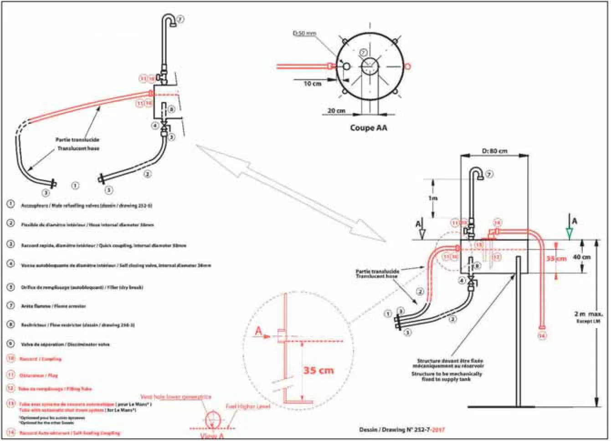</figure>
<p>ḟࡢ஦๓ὀព஦㡯ࡀᏲࡽࢀࡿࡇ࡜ࠋ 1㸧つᐃࡢ๛ᛶࢭࢡࢩࣙࣥ ෆࡲࡓࡣ࣮࣍ ࢫෆ࡟㒊ရࢆ㏣ຍࡍࡿࡇ࡜ࡣㄆࡵࡽࢀ࡞࠸ࠋ 2㸧ᶆ‽ࡢࠊᨵ㐀ࡉࢀ࡚ ࠸࡞࠸STAUBLI ⤥Ἔࣀࢬࣝ ࡢࡳࡀ౑⏝࡛ ࡁࡿࠋ 3㸧≉࡟᫂グࡉࢀ࡚ ࠸࡞࠸㝈ࡾࠊチᐜᕪࡣ∦ഃࡢࡳ࡜ࡍࡿࠋ౛d = 39 + 0.1Ѝ 39.0 &lt;d &lt;39.1  ඲యᅗ</p>
<figure>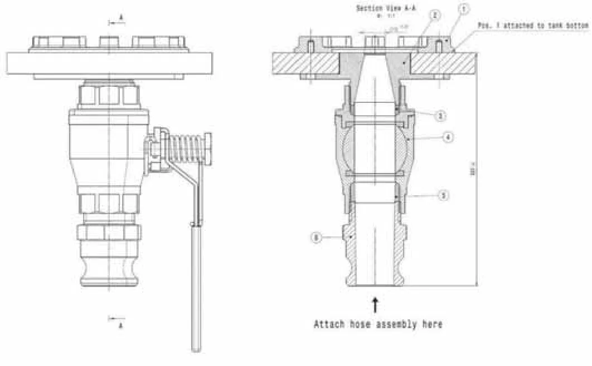</figure>
<p>㠃A-A ఩⨨㸯 ࢱࣥ ࢡᗏ㒊࡟ྲྀ ࡾ௜ࡅ ࢫ࢔ࢭࣥ ࣈࣜ ࢆࡇࡇ࡟ྲྀ ࡾ௜ࡅ</p>
<p><span class="pagemark" id="p65">P.65</span>఩⨨ձࢼࢵࢺࣜࣥ ࢢ</p>
<figure>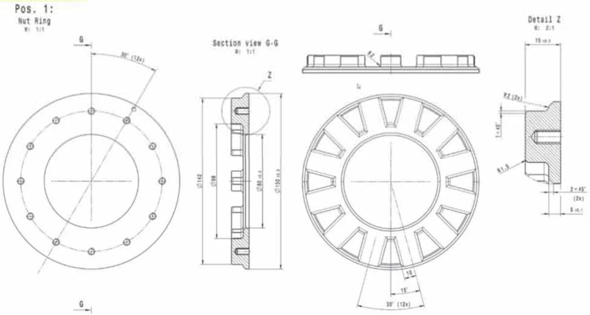</figure>
<p>  ఩⨨ղࣜ ࢫࢺࣜ ࢡࢱ࣮ </p>
<figure>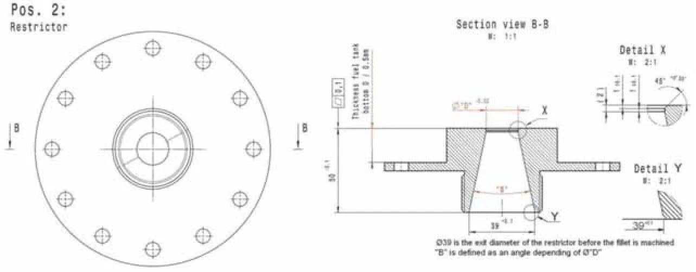</figure>
<p> ఩⨨㸰㸸ࣜ ࢫࢺࣜ ࢡࢱ࣮                ᩿ 㠃㹀㸫㹀                    ⇞ᩱࢱࣥ ࢡᗏ㒊ཌࡳ 㸮㸭㸮㸬㸳㹫㹫</p>
<p>ȭ㸱㸷ࡣ)LOHW㸦ࣇ࢕ࣞ 㸧ࡀᶵᲔຍᕤࡉࢀࡿ๓ ࡢࣜ ࢫࢺࣜ ࢡࢱ࣮ ࡢฟཱྀ ┤ᚄ 㹀ࡣȭ㹂࡟ࡼࡿゅᗘ࡜ࡋ࡚ ᐃ⩏ࡉࢀࡿࠋ  ௒ᚋ᭱ ⤊Ỵᐃࡉࢀࡿ [ mm ] ࢥ࣓ࣥ ࢺ 19.00 Diesel LM 2016 22.45 Petrol WEC cold /  warm 2016 20.75 Diesel WEC warm  2016 20.80 Diesel WEC cold  2016 20.50 Petrol LM 2016  </p>
<p><span class="pagemark" id="p66">P.66</span>఩⨨ճ࢔ࢲࣉࢱ࣮ࣜࣥ ࢢ</p>
<figure>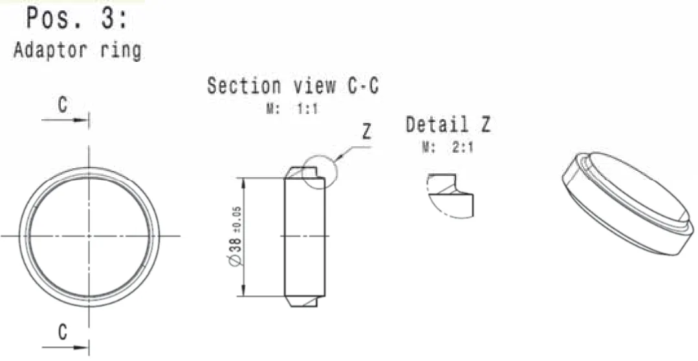</figure>
<p>  ఩⨨մࣂࣝ ࣈ</p>
<figure>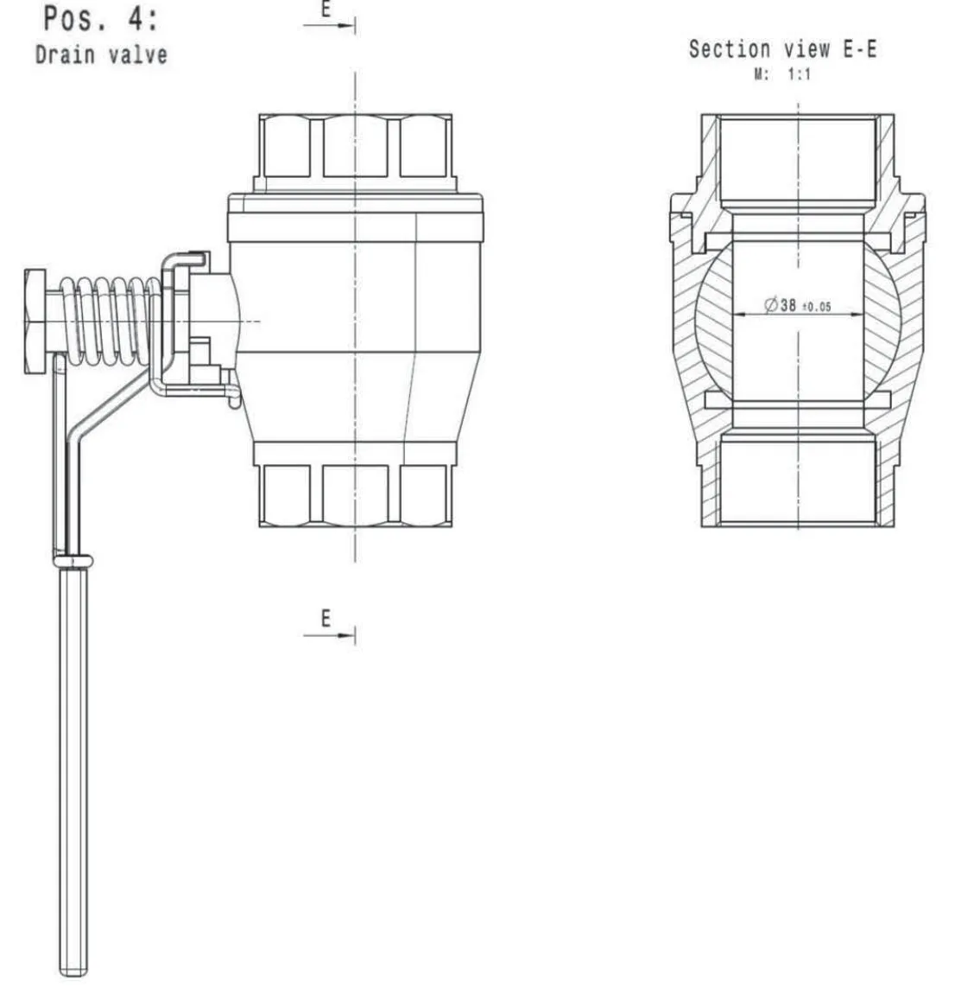</figure>
<p></p>
<p><span class="pagemark" id="p67">P.67</span>఩⨨յ࢔ࢲࣉࢱ࣮ࣜࣥ ࢢ</p>
<figure>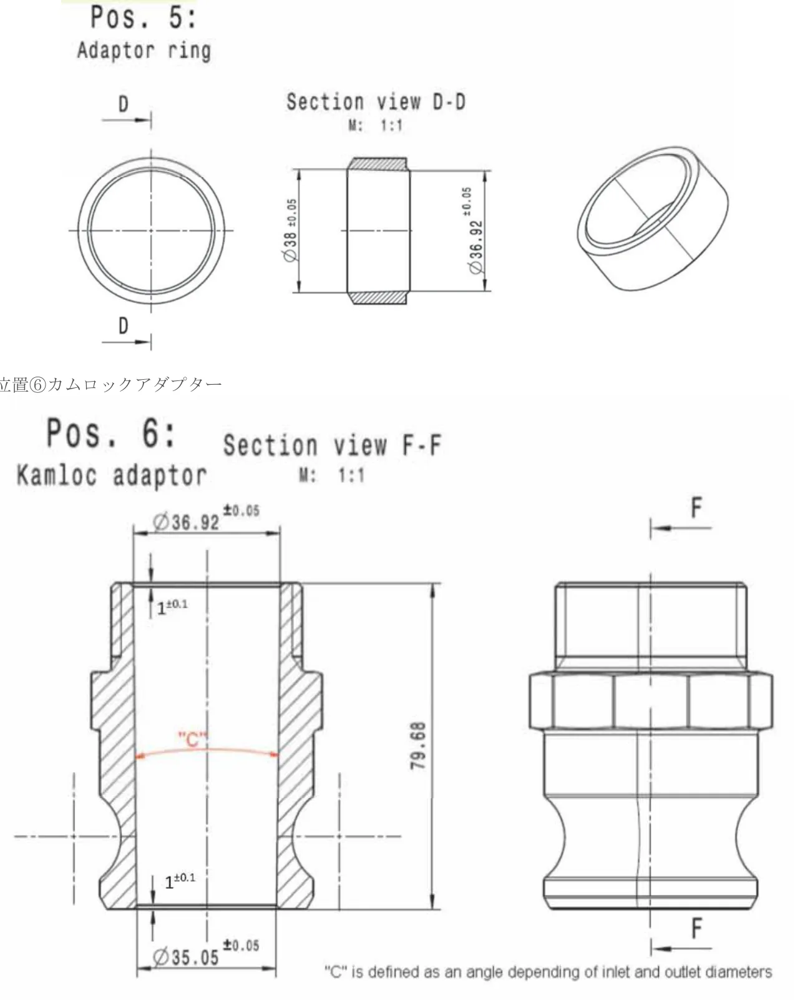</figure>
<p>㹁ࡣฟධࡾཱྀ ┤ᚄ࡟ࡼࡿゅᗘ࡜ࡋ࡚ ᐃ⩏ࡉࢀࡿࠋ   </p>
<p><span class="pagemark" id="p68">P.68</span>ࢫ࢔ࢭࣥ ࣈࣜ</p>
<figure>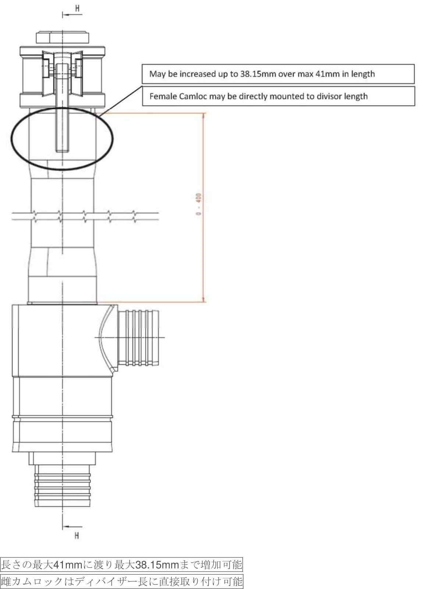</figure>
<p>㞤࣒࢝ࣟ ࢵࢡࡣࢹ࢕ࣂ࢖ࢨ࣮ 㛗࡟┤᥋ྲྀ ࡾ௜ࡅྍ ⬟ </p>
<p><span class="pagemark" id="p69">P.69</span>ࢹ࢕ࣂ࢖ࢧ࣮</p>
<figure>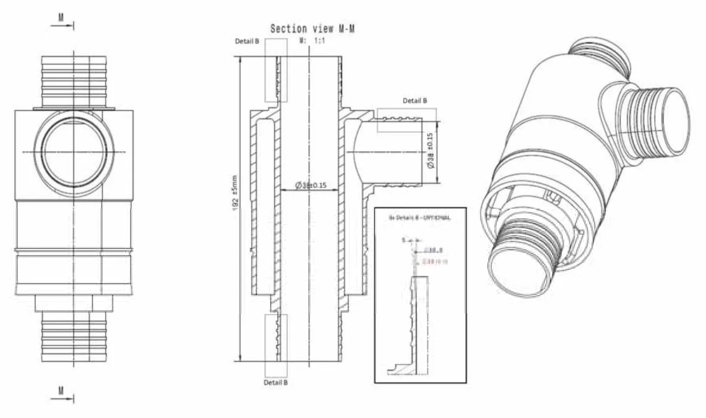</figure>
<p>㸶㸭඲యබᕪ ࡍ࡭࡚ ࡢᅗ㠃࡟ࡘ࠸࡚ ࠊබᕪࡀ᫂グࡉࢀ࡚ ࠸࡞ሙྜ ࠊᇶ‽ISO 2768 fHࢆ౑⏝</p>
<p><span class="pagemark" id="p70">P.70</span>௜๎ 㹀  ࢧ࣮࢟ ࢵࢺ࡟ࡘ࠸࡚ ࡢ࢚ ࢿࣝ ࢠ࣮ ࠾ࡼࡧࣃ࣮࣡ ࡢ್</p>
<div class="tablewrap"><table><tr><td></td><td></td><td>㺨㺐㺪㺼㺶㺍㺢㺼</td><td>㠀㺨㺐㺪㺼㺶㺍㺢㺼**</td><td></td></tr><tr><td>ᨺฟ࢚ ࢿࣝ ࢠ࣮</td><td>MJ/Lap</td><td>8</td><td>0</td><td>0</td></tr><tr><td>㹇㹁㹃௙ᵝ</td><td>-</td><td>-</td><td>TC</td><td>NA</td></tr><tr><td>኱ᨺฟࣃ࣮࣡</td><td>kW</td><td>300</td><td>0</td><td>0</td></tr><tr><td>㌴୧㔜㔞</td><td>kg</td><td>878</td><td>833</td><td></td></tr><tr><td>ࢯ࢚ࣜࣥ ࢿࣝ ࢠ࣮</td><td>MJ/Lap</td><td>124.9</td><td>210.9*</td><td>210.9*</td></tr><tr><td>኱࢞ ࢯࣜࣥ ὶ㔞</td><td>kg/h</td><td>180.2</td><td>110.0</td><td>110.0</td></tr><tr><td>㺛㺡㺆㺻㺢ࡈ࡜ࡢ㺔㺼㺝㺶㺻( ኱)</td><td>kg</td><td>35.2</td><td>52.9</td><td>52.9</td></tr></table></div>
<p>㺛㺡㺆㺻㺢ࡈ࡜ࡢ㺔㺼㺝㺶㺻( ኱) kg 35.2 52.9 52.9</p>
<p>௨እࡢࢧ࣮࢟ ࢵࢺ࡟ࡘ࠸࡚ ࡢ࢚ ࢿࣝ ࢠ࣮ ࠾ࡼࡧࣃ࣮࣡ ࡢ್   㸯࿘ᅇ࡛ ᨺฟ࡛ ࡁࡿ࢚ ࢿࣝ ࢠ࣮ 㔞ࡣࠊ࣭࣐ࣝࣥ ࢧ࣮࢟ ࢵࢺࡢ㛗ࡉ࡟ᑐࡍࡿࢧ࣮࢟ ࢵࢺࡢ㛗 ࡉࡢ๭ྜ ×ಀᩘ 㸯.㸳㸳࡟ไ㝈ࡉࢀࡿࠋ 㸯࿘ᅇ࡟๭ࡾᙜ࡚ ࡉࢀࡿ⇞ᩱࡢ㔞ࡣࠊ࣭࣐ࣝࣥ ࢧ࣮࢟ ࢵࢺࡢ㛗ࡉ࡟ᑐࡍࡿࢧ࣮࢟ ࢵࢺࡢ㛗 ࡉࡢ๭ྜ ×ಀᩘ 㸯.㸯㸯࡟ไ㝈ࡉࢀࡿࠋ   **➇ᢏつ๎ ➨㸵.㸲.㸯㡯ࡢ㐺⏝ࢆ᮲௳࡜ࡍࡿࠋ</p>
<p><span class="pagemark" id="p71">P.71</span>௜๎ D  ⇞ᩱὶ㔞 ᐃFIA௙ᵝ</p>
<p>TECHNICAL REGULATIONS LMP1</p>
<p>࢔࢖ࢥࣥ ࢆࢲࣈࣝ ࢡࣜ ࢵࢡ࡛ 㛤ࡃ</p>
<p><span class="pagemark" id="p72">P.72</span>௜๎ F  ᮦ㉁  ᮦ㉁㸸ᐃ⩏ 1.1 㔠ᒓᮦ㉁࡜ࡣࠊᮦ㉁ࡀ⣧㔠ᒓࠊ࠸ࡃࡘ࠿ࡢ㔠ᒓ࡛ ᡂࡿྜ 㔠࠶ࡿ࠸ࡣ㔠ᒓ㛫໬ྜ ≀࡛ ࠶ ࡗ࡚ ࡶࠊ㔠ᒓᛶࡢせ⣲࡟ࡼࡗ࡚࡛ ࡁࡓᮦ㉁࡜ᐃ⩏ࡉࢀࡿࠋ 」ྜ ᮦ㉁ࡢሙྜ ࠊᇶ㉁࠶ࡿ࠸ࡣ⿵ᙉࡀࠊẚ⋡࡟㛵ࢃࡽࡎࠊ㔠ᒓ〇ࡢඖ⣲࡟ࡼࡗ࡚ ᵓᡂ ࡉࢀ࡚ ࠸ࡿ᫬࡟ࠊ㔠ᒓᮦ㉁࡛ ࠶ࡿ࡜ᣦᐃࡉࢀࡿࠋ  1.2 㔠ᒓ〇せ⣲ࡣ௨ୗࡢ࿘ᮇ⾲ࡢ㯤Ⰽ࡛そࢃࢀࡓ㒊ศ࡟ࡼࡗ࡚ ᣦᐃࡉࢀࡿඖ⣲࡛ ࠶ࡿࠋ </p>
<p>ඖ⣲ࡢ࿘ᮇ⾲</p>
<figure>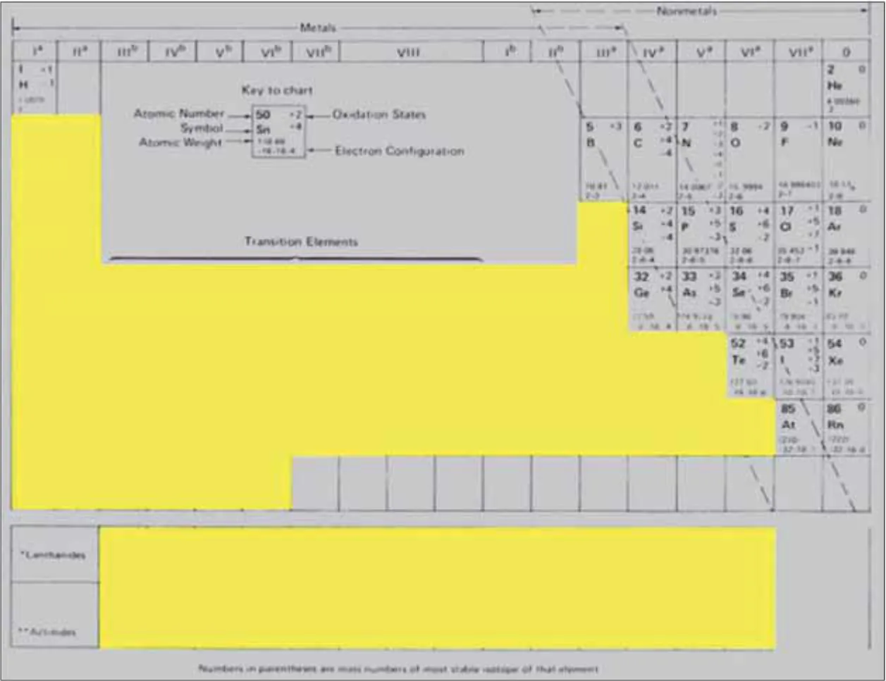</figure>
<p>  1.3 㠀㔠ᒓᮦ㉁ࡣࠊ㓟໬≀ࠊ❅໬≀ࠊࢣ࢖⣲໬ྜ ≀࡞࡝ࡢ⣧⢋࠶ࡿ࠸ࡣ㠀⣧⢋໬ྜ ≀ࠊ࠾ ࡼࡧⅣ⣲࠾ࡼࡧࢣࣈ࣮ࣛ ᙉ໬໬ྜ ≀࡞࡝ࡢ᭷ᶵ࣐ ࢺࣜ ࢵࢡࢫࢆక࠺⣲ᮦࢆྵ ࡴࠋ  1.4 㹖ᇶྜ 㔠㸦౛㸸ࢽࢵࢣࣝ ᇶྜ 㔠㸧㸫 㹖ࡣࡑࡢྜ 㔠࡟㸣㹵㸭㹵࣮࣋ ࢫ࡛᭱ ࡶ㇏ᐩ࡟ྵ ࡲࢀࡿ⤌ᡂせ⣲࡛ ࡞ࡅࢀࡤ࡞ࡽ࡞࠸ࠋせ⣲㹖ࡢ᭱ పྍ ⬟㔜㔞⋡ࡣࠊྜ㔠࡟ྵ ࡲࢀࡿࡑ ࡢ௚ࡢಶࠎࡢ⤌ᡂせ⣲ࡢ᭱ ኱ྍ ⬟㔜㔞⋡ࢆᖖ࡟ୖ ᅇࡗ࡚ ࠸࡞ࡅࢀࡤ࡞ࡽ࡞࠸ࠋ  1.5 㹖㸫㹗ᇶྜ 㔠㸦౛㸸࢔࣑ࣝ ࢽ࣒࢘ 㸫㖡ᇶྜ 㔠㸧㸫 㹖ࡣᮏ௜๎ 㸯.㸲㡯࡜ྠ ᵝ࡟᭱ ࡶ ㇏ᐩ࡟ྵ ࡲࢀࡿ⤌ᡂせ⣲࡛ ࡞ࡅࢀࡤ࡞ࡽ࡞࠸ࠋࡉࡽ࡟せ⣲㹗ࡣࠊྜ㔠ࡢ㹖ࡢྵ ᭷㔞࡟ ḟ࠸࡛ ➨㸰␒┠࡟ከࡃྵ ࡲࢀ࡚ ࠸ࡿ⤌ᡂせ⣲㸦㸣㹵㸭㹵㸧࡛ ࡞ࡅࢀࡤ࡞ࡽ࡞࠸ࠋ㹗ࡢ</p>
<p><span class="pagemark" id="p73">P.73</span>ᖹᆒྵ ᭷್ ࠾ࡼࡧࡑࡢ௚ࡢྜ 㔠せ⣲ࡀࠊ➨㸰␒┠࡟㧗࠸ྜ 㔠⤌ᡂせ⣲㸦㹗㸧ࢆỴᐃࡍ ࡿࡢ࡟౑⏝ࡉࢀ࡞ࡅࢀࡤ࡞ࡽ࡞࠸ࠋ  1.6 㔠ᒓ㛫໬ྜ ≀ᮦ㉁㸦౛㸸TiAlࠊNiAlࠊFeAlࠊCu3AuࠊNiCo㸧㸫 ࡇࢀࡽࡣ㔠ᒓ㛫໬ྜ ≀ ┦ࠊࡘࡲࡾᮦ㉁ࡢᇶ㉁ࡢ㸳㸮㸣㹴/㹴ࢆ㉸࠼ࡿ㒊ศࡀ㔠ᒓ㛫໬ྜ ≀┦㸦ྵ」ᩘ 㸧࠿ࡽ ᡂࡿࡶࡢࢆᇶ♏࡜ࡋࡓᮦ㉁࡛ ࠶ࡿࠋ㔠ᒓ㛫໬ྜ ≀┦ࡣࠊ㒊ศⓗ࡟࢖࢜ࣥ ᛶࡲࡓࡣ㟁Ꮚ ᑐࢆඹ᭷ࡍࡿࡶࡢ࡛ ࠶ࡿ࠿ࠊ࠶ࡿ࠸ࡣ㛗㊥㞳┦㛵࡟ࡼࡗ࡚ ⤖ྜ ࡍࡿ㔠ᒓࡢఱࢀ࠿ࢆ ࿊ࡍࡿࠊ໬Ꮫẚ࡟࠾࠸࡚ ▷㊥㞳ᵓᡂࡢ㸰ࡘ௨ୖ ࡢ㔠ᒓ㛫ࡢᅛᐜయ࡛ ࠶ࡿࠋ  1.7」ྜ ᮦ㉁ 㸫 ࡇࢀࡽࡣᮦ㉁ࡢᇶ㉁ࡀ㐃⥆࠶ࡿ࠸ࡣ㠀㐃⥆┦ࡢఱࢀ࠿࡛ ᙉ໬ࡉࢀ࡚ ࠸ࡿᮦ㉁࡛ ࠶ࡿࠋᇶ㉁ࡣࠊ㔠ᒓࠊࢭ࣑ࣛ ࢵࢡࠊ㔜ྜ యࡲࡓࡣ࢞ࣛ ࢫࢆᇶ♏࡜ࡋࡓࡶࡢ࡛ ࠶ࡿࡇ࡜ࡀ࡛ ࡁࡿࠋᙉ໬ࡣ㛗⧄⥔㸦⧄⥔ࡢ㛗ࡉࡀ㸯㸮mmࢆ㉸࠼ࡿ㸧࠶ࡿ࠸ࡣࠊ▷ ⧄⥔࡜ࡍࡿࡇ࡜ࠊ㠀㐃⥆ⓗ࡞ࡶࡢ࡛ ࡣ࢘ ࢖ࢫ࣮࢝ ࠾ࡼࡧ⣲⢏Ꮚ࡛ ࠶ࡿࡇ࡜ࡀ࡛ ࡁࡿࠋ ࢼࣀࢫࢣ࣮ࣝ ࡢᙉ໬ᮦ㉁ࡣࠊ」ྜ ᮦ㉁࡛ ࠶ࡿ࡜ࡳ࡞ࡉࢀࡿࠋ㸦ᙉ໬ࡢᑍἲࡍ࡭࡚ ࡀ㸯 㸮㸮mmᮍ‶࡛ ࠶ࡿሙྜ ࡣࠊᙉ໬ࡀࢼࣀࢫࢣ࣮࡛ࣝ ࠶ࡿ࡜ࡳ࡞ࡉࢀࡿ㸧ࠋ  1.8 㔠ᒓᇶ」ྜ ᮦᩱ㸦MMC’s㸧 㸫 ࡇࢀࡽࡣࠊ㔠ᒓᇶ㉁ࡢᾮయ┦࡟࡚ ⁐ᛶ࡛ ࡞࠸┦ࢆ 㸰㸣㹴/㹴ࢆ㉸࠼࡚ྵ ࡴ㔠ᒓᇶ㉁ࢆక࠺」ྜ ᮦ㉁࡛ ࠶ࡿࠋ  1.9 ࢭ࣑ࣛ ࢵࢡᮦ㉁㸦౛㸸Al2O3ࠊSiCࠊB4CࠊTi5Si3ࠊSiO2ࠊSi3N4㸧㸫 ࡇࢀࡽࡣࠊ↓ᶵࠊ 㠀㔠ᒓᅛయᮦ㉁࡛ ࠶ࡿࠋ  1.10 ࢢࢿࢩ࣒࢘ ࢆᇶ♏࡜ࡋࡓྜ 㔠࡛ ࠊࡑࢀࡀㄆࡵࡽࢀ࡚ ࠸ࡿ࡜ࡇࢁ࡛ ࡣࠊ඲➇ᢏཧຍ⪅ ࡟㠀⊂༨࣮࣋ ࢫ࡛ ㏻ᖖࡢၟ ⓗ᮲௳࡟࡚ ධᡭྍ ⬟࡛ ࡞ࡅࢀࡤ࡞ࡽ࡞࠸ࠋ㹇㹑㹍㸯㸴㸰 㸰㸮㸦ྜ 㔠㗪ሢ࠾ࡼࡧ㗪㐀㒊ရ࡟ࡘ࠸࡚ 㸧࠾ࡼࡧ㹇㹑㹍㸱㸯㸯㸴㸦㘫㐀㒊ရ࡟ࡘ࠸࡚ 㸧 ࡟ࡼࡗ࡚ᢅ ࢃࢀࡿࡇࢀࡽࡢྜ 㔠࡛ ࠊ㹄㹇㸿࡟ᢎㄆࡉࢀ࡚ ࠸ࡿࡶࡢࡢࡳ౑⏝࡛ ࡁࡿࠋ   ➨㸰᮲࢚ࣥ ࢪࣥ ᮦ㉁ไ⣙  2.1 ≉ᐃࡢ㐺⏝࡟ࡘ࠸࡚᫂ ☜࡟チࡉࢀ࡚ ࠸࡞࠸㝈ࡾࠊ௨ୗࡢᮦ㉁ࡣ࢚ࣥ ࢪࣥ ࡢ࠸࠿࡞ࡿ ሙᡤ࡟ࡶ౑⏝ࡉࢀ࡚ ࡣ࡞ࡽ࡞࠸ࠋ</p>
<p>2.1.1 ࢢࢿࢩ࣒࢘ ࢆᇶ♏࡜ࡋࡓྜ 㔠  2.1.2 㔠ᒓᇶ」ྜ ᮦᩱ㸦MMC’s㸧  2.1.3 㔠ᒓ㛫໬ྜ ≀ᮦ㉁  2.1.4 㔜㔞ࡢ㸳㸣ࢆ㉸࠼ࡿ࣒࣋ࣜࣜ࢘ ࠊ࢖ࣜ ࢪ࣒࢘ ࠊ࠶ࡿ࠸ࡣࣞ ࢽ࣒࢘ ࢆྵ ࡴྜ 㔠ࠋ  2.2 ⿕そࡣ⮬⏤ࠋࡓࡔࡋࠊ⿕そࡢ⥲⫗ཌࡀࡍ࡭࡚ ࡢ㍈࡟࠾࠸࡚ ᇶ♏࡜࡞ࡿᮦ㉁ࡢ᩿ 㠃⫗ཌ ࡢ㸰㸳㸣ࢆ㉸࠼࡞࠸ࡇ࡜ࢆ᮲௳࡜ࡍࡿࠋࡍ࡭࡚ ࡢሙྜ ࡟࠾࠸࡚ ࠊᙜヱ⿕そࡣ㸮.㸶mm ࢆ㉸࠼࡚ ࡣ࡞ࡽ࡞࠸ࠋ  2.3 ᵓᡂ㒊ရ </p>
<h5 id="2-3-1">2.3.1 ࣆࢫࢺࣥ</h5>
<p><span class="pagemark" id="p74">P.74</span>2.3.1.1 ࣆࢫࢺࣥ ࡣࠊᮏ௜๎ ➨㸰᮲㸯㡯ࢆ㑂Ᏺࡋ࡞ࡅࢀࡤ࡞ࡽ࡞࠸ࠋࢳࢱࢽ࣒࢘ྜ 㔠ࡣㄆࡵࡽࢀ࡞࠸ࠋ  2.3.2 ࣆࢫࢺࣥ ࣆࣥ   2.3.2.1 ࣆࢫࢺࣥ ࣆࣥ ࡣࠊ㕲࣮࣋ ࢫࡢྜ 㔠࡟ࡼࡾ〇㐀ࡉࢀ࡚ ࠸࡞ࡅࢀࡤ࡞ࡽࡎࠊ ⣲ᮦ༢య࠿ࡽᶵᲔຍᕤࡉࢀ࡞ࡅࢀࡤ࡞ࡽ࡞࠸ࠋ</p>
<p>2.3.3 ࢥࢿࢡࢸ࢕ࣥ ࢢࣟ ࢵࢻ  2.3.3.1 ࢥࢿࢡࢸ࢕ࣥ ࢢࣟ ࢵࢻࡣࠊ㕲࠶ࡿ࠸ࡣࢳࢱࢽ࣒࣮࢘࣋ ࢫࡢྜ 㔠࡟ࡼࡾ〇㐀ࡉࢀ࡚ ࠸࡞ࡅࢀࡤ࡞ࡽࡎࠊ⁐᥋ࡸ᥋ྜ 㒊ࡢ࠶ࡿ⤌ࡳ❧࡚ ࡢ࡞࠸⣲ ᮦ༢య࠿ࡽᶵᲔຍᕤࡉࢀ࡚ ࠸࡞ࡅࢀࡤ࡞ࡽ࡞࠸㸦࣎ࣝ ࢺ௜ࡁࡢ኱ࡁ࡞࢚ࣥ ࢻ࢟ࣕ ࢵࣉࡸᖸ΅⏝ࡢᑠࡉ࡞࢚ࣥ ࢻࣈࢵࢩࣗ ࢆ㝖ࡃ㸧ࠋ</p>
<p>2.3.4 ࢡࣛࣥ ࢡࢩࣕ ࣇࢺ  2.3.4.1 ࢡࣛࣥ ࢡࢩࣕ ࣇࢺࡣࠊ㕲࣮࣋ ࢫࡢྜ 㔠࡛〇㐀ࡉࢀ࡚ ࠸࡞ࡅࢀࡤ࡞ࡽ࡞ ࠸ࠋ 2.3.4.2 㧗㔜㔞ᐦᗘࡢࣂࣛࣥ ࢫ࢚࢘ ࢖ࢺࢆᅛᐃࡍࡿሙྜ ࢆ㝖ࡁࠊࣇࣟࣥ ࢺ࡜ࣜ ࢔ࡢ୺࣋ ࢔ࣜࣥ ࢢ࣭ ࢪ࣮ࣕ ࢼࣝ ࡢ㛫࡛ ࡣ⁐᥋ࡀ⚗Ṇࡉࢀࡿࠋ 2.3.4.3 ࢡࣛࣥ ࢡࢩࣕ ࣇࢺ࡟ࡣ㸯㸷,㸮㸮㸮kg/m3ࢆ㉸࠼ࡿᐦᗘࡢᮦ㉁ࢆ⤌ࡳ ධࢀ࡚ ࡣ࡞ࡽ࡞࠸ࠋ</p>
<p>2.3.5 ࢩࣕ ࣇࢺ  2.3.5.1 ࢩࣕ ࣇࢺࡣࠊ㕲࣮࣋ ࢫࡢྜ 㔠࡛〇㐀ࡉࢀ࡚ ࠸࡞ࡅࢀࡤ࡞ࡽ࡞࠸ࠋ 2.3.5.2 ࣇࣟࣥ ࢺ࡜ࣜ ࢔ࡢ࣋ ࢔ࣜࣥ ࢢ࣭ ࢪ࣮ࣕ ࢼࣝ ࡢ㛫࡛ ࡣ⁐᥋ࡀ⚗Ṇࡉࢀࡿࠋ</p>
<p>2.3.6 ࣂࣝ ࣈ  2.3.6.1 ࣂࣝ ࣈࡣ㔠ᒓ㛫ᮦ㉁ࠊ࠶ࡿ࠸ࡣ࢔࣑ࣝ ࢽ࣒࢘ ࠊ㕲ࠊࢽࢵࢣࣝ ࠊࢥࣂࣝ ࢺࡲࡓࡣࢳࢱࢽ࣒࣮࢘࣋ ࢫࡢྜ 㔠࡛〇㐀ࡉࢀ࡚ ࠸࡞ࡅࢀࡤ࡞ࡽ࡞࠸ࠋ ࡋ࠿ࡋ࡞ࡀࡽࠊ  ࢼࢺ࣒ࣜ࢘ ࠊࣜࢳ࣒࢘ ࠶ࡿ࠸ࡣྠ ᵝࡢࡶࡢ࡛ ෭༷ ࡉࢀࡿ୰✵ᵓ㐀ࡶㄆ ࡵࡽࢀࡿࠋ 2.3.6.2 ࡉࡽ࡟ᮏ௜๎ ➨㸰.㸰㡯࠾ࡼࡧ➨㸰.㸴㡯࡟ヲ⣽ࡢ࠶ࡿไ⣙ࡣࣂࣝ ࣈ࡟ ࡣ㐺⏝ࡉࢀ࡞࠸ࠋ</p>
<p>2.3.7  ᚟࠾ࡼࡧᅇ㌿㐠ື ࢆ⾜࠺ᵓᡂ㒊ရ  2.3.7.1  ᚟࠾ࡼࡧᅇ㌿㐠ື ࢆ⾜࠺ᵓᡂ㒊ရࡣࠊࢢࣛ ࣇ࢓࢖ࢺᇶࠊ㔠ᒓᇶ」ྜ ᮦ㉁࠶ࡿ࠸ࡣࢭ࣑ࣛ ࢵࢡᮦ㉁࠿ࡽ〇㐀ࡉࢀ࡚ ࡣ࡞ࡽ࡞࠸ࠋࡇࡢไ⣙ࡣ ࢡࣛ ࢵࢳ࠾ࡼࡧ୍ ษࡢࢩ࣮ࣝ 㒊࡟ࡣ㐺⏝ࡉࢀ࡞࠸ࠋ 2.3.7.2 ࢔ࣜࣥ ࢢࡢᅇ㌿せ⣲ࡣࠊ㕲࣮࣋ ࢫࡢྜ 㔠࠶ࡿ࠸ࡣࢭ࣑ࣛ ࢵ ࢡᮦ㉁࡛〇㐀ࡉࢀ࡚ ࠸࡞ࡅࢀࡤ࡞ࡽ࡞࠸ࠋ 2.3.7.3 ࢡࣛࣥ ࢡࢩࣕ ࣇࢺ࡜࣒࢝ ࢩࣕ ࣇࢺ㸦ࣁࣈࢆྵ ࡴ㸧ࡢ㛫ࡢࡍ࡭࡚ ࡢࢱ࢖</p>
<p><span class="pagemark" id="p75">P.75</span>ࢢ࣭ ࢠ࢔ࡣ㕲࣮࣋ ࢫࡢྜ 㔠࡛〇㐀ࡉࢀ࡚ ࠸࡞ࡅࢀࡤ࡞ࡽ࡞࠸ࠋ 2.3.7.4 㧗ᅽ⇞ᩱ࣏ࣥ ࣉࡢせ⣲ࡣࠊࢭ࣑ࣛ ࢵࢡᮦ㉁࡛〇స࡛ ࡁࡿࠋ </p>
<h5 id="2-3-8">2.3.8 㟼Ṇᵓᡂ㒊ရ </h5>
<p>2.3.8.1 ࡑࢀࡽࡢ୰ࡢᤄධ≀ࢆ㝖ࡁࠊ࢚ࣥ ࢪࣥ ࡢࢡࣛࣥ ࢡࢣ࣮ ࢫ࠾ࡼࡧࢩࣜࣥ ࢲ࣮࣊ ࢵࢻࡣ㗪㐀ࡲࡓࡣ⢭㘐࢔࣑ࣝ ࢽ࣒࢘ྜ 㔠ࠊ࠶ࡿ࠸ࡣ㕲ྜ 㔠࡛〇㐀ࡉࢀ࡚ ࠸࡞ࡅࢀࡤ࡞ࡽ࡞࠸ࠋ 2.3.8.2 ᵓᡂ㒊ရࡢ඲యࡲࡓࡣࡑࡢ୍ 㒊ศ࡟ࠊ」ྜ ᮦ㉁ࡲࡓࡣ㔠ᒓᇶ」ྜ ᮦᩱ ࡀㄆࡵࡽࢀࡿࠋ 2.3.8.3 ᮏ௜๎ ➨2.3.8.1㡯࡟୍ぴࡉࢀࡿ㒊ရࢆ㝖ࡁࠊ࢚ࣥ ࢪࣥ ࡢෆ㒊࡛ ₶⁥࠶ ࡿ࠸ࡣ෭༷ ࢆ⥔ᣢࡍࡿࡓࡵࡢᶵ⬟ࢆ➨㸯࡜ࡍࡿ࠶ࡿ࠸ࡣ➨㸰࡜ࡍࡿ୍ ษࡢ㔠ᒓᛶᵓ㐀యࡣࠊ㕲࣮࣋ ࢫࡢྜ 㔠ࠊ࢔࣑ࣝ ࢽ࣒࣮࢘࣋ ࢫࡢྜ 㔠ࠊ ࠶ࡿ࠸ࡣ࣐ ࢢࢿࢩ࣒࣮࢘࣋ ࢫࡢྜ 㔠࡟ࡼࡾ〇㐀ࡉࢀ࡚ ࠸࡞ࡅࢀࡤ࡞ ࡽ࡞࠸ࠋ 2.3.8.4 ࡍ࡭࡚ ࡢࡡࡌ௜ࡁࣇ࢓ࢫࢼ࣮ 㢮ࡣࠊࢥࣂࣝ ࢺࠊ㕲࠶ࡿ࠸ࡣࢽࢵࢣࣝ ࢆ ᇶ♏࡜ࡋࡓྜ 㔠࡟ࡼࡾ〇㐀ࡉࢀ࡚ ࠸࡞ࡅࢀࡤ࡞ࡽ࡞࠸ࠋ 2.3.8.5 ࢢࢿࢩ࣒࢘ ࢆ࣮࣋ ࢫ࡜ࡋࡓྜ 㔠ࢆ࢚ࣥ ࢪࣥ ࡢ௜ᒓရࡢ㟼Ṇ㒊ရ࡟ ౑⏝ࡍࡿࡇ࡜ࡀㄆࡵࡽࢀࡿࠋ 2.3.8.6 ࢢࢿࢩ࣒࢘ ࢆ࣮࣋ ࢫ࡜ࡋࡓྜ 㔠ࢆࢥࣥ ࣉࣞ ࢵࢧ࣮ ࣁ࢘ ࢪࣥ ࢢ࡟౑ ⏝ࡍࡿࡇ࡜ࡀㄆࡵࡽࢀࡿ㸦ࢥࣥ ࣉࣞ ࢵࢧ࣮ ྾Ẽཱྀ ࠿ࡽࢥࣥ ࣉࣞ ࢵࢧ࣮ ᤼Ẽཱྀ ࡲ࡛ 㸧ࠋ 2.3.8.7 ࢢࢿࢩ࣒࢘ ࢆ࣮࣋ ࢫ࡜ࡋࡓྜ 㔠ࢆ㟁Ꮚ⿦⨨ࡢࡍ࡭࡚ ࡢ㔠ᒓᛶࢣ࣮ ࢫ࡟౑⏝ࡍࡿࡇ࡜ࡀㄆࡵࡽࢀࡿࠋ  2.3.9 ࣂࣝ ࣈࢩ࣮ ࢺᤄධ≀ࠊࣂࣝ ࣈ࢞ ࢖ࢻ࠾ࡼࡧࡑࡢ௚୍ ษࡢ࣋ ࢔ࣜࣥ ࢢᵓᡂ㒊ရ  2.3.9.1 ࣂࣝ ࣈࢩ࣮ ࢺᤄධ≀ࠊࣂࣝ ࣈ࢞ ࢖ࢻ࠾ࡼࡧࡑࡢ௚୍ ษࡢ࣋ ࢔ࣜࣥ ࢢᵓ ᡂ㒊ရࡣࠊᙉ໬⏝࡟౑⏝ࡉࢀ࡚ ࠸࡞࠸ࡑࡢ௚ࡢ┦࡜ඹ࡟㔠ᒓᛶᾐ㏱ண ഛᙧᡂရ࠿ࡽ〇㐀ࡍࡿࡇ࡜ࡀ࡛ ࡁࡿࠋ  2.4 ᮦ㉁࠾ࡼࡧᵓ㐀 㸫 ERS࠾ࡼࡧMGU  2.4.1 ࢿࣝ ࢠ࣮ ㈓ⶶ࠾ࡼࡧERS⿦⨨ࡣࠊ➨2.1.1㡯ࠊ2.1.2㡯࠾ࡼࡧ2.1.3㡯 ࡢ㐺⏝ࢆཷ ࡅ࡞࠸ࠋ  2.4.2 㟁ẼᶵᲔෆ㒊ࡢỌஂ ☢▼ࡣࠊ➨2.1.1㡯ࠊ2.1.2㡯࠾ࡼࡧ2.1.3㡯ࡢ㐺⏝ ࢆཷ ࡅ࡞࠸ࠋ   </p>
<h2 id="sec-3"><span class="pagemark" id="p76">P.76</span>௜๎ 㹅</h2>
<p>㹄㹇㸿ヨ㦂ᡭ㡰㸮㸱㸭㸮㸱  㔠ᒓᮦ㉁ࡢẚᙎᛶ⋡  1.1 㸱㸳GPa/gm/cm3ࢆୖ ᅇࡾ㔠ᒓྵ ᭷㔞ࡀ㉁㔞ࣃ࣮ ࢭࣥ ࢺ࡛ 㸴㸮㸣ࢆୖ ᅇࡿࡍ࡭࡚ ࡢ ᮦ㉁ࡣࠊ࢖ࢠࣜ ࢫࠊࢸࢹ࢕ࣥ ࢺࣥ ࡢ࢖ࢠࣜ ࢫᅜ❧≀⌮Ꮫ◊✲ᡤ࡟࠾࠸࡚ヨ㦂ࢆཷ ࡅ࡞ ࡅࢀࡤ࡞ࡽ࡞࠸ࠋ  1.2 ࡍ࡭࡚ ࡢヨ㦂ࡣࠊ㸰㸮㹼㸰㸳Υ࡛ ࠊศᯒࡢᇶ♏࡜ࡋ࡚ ࠊASTM111ᡭ㡰ࢆ฼⏝ࡋ࡚ ᐇ ᪋ࡉࢀࡿࠋ  1.3ヨᩱࢱ࢖ࣉ࡟ࡘ࠸࡚ 㸯㸮ࡢぢᮏࡀᥦ౪ࡉࢀ࡞ࡅࢀࡤ࡞ࡽ࡞࠸ࠋ  1.4 ᆒ୍ ࡞ヨᩱFTSBࠊFTSD࠶ࡿ࠸ࡣFTSEࡀᥦ౪ࡉࢀ࡞ࡅࢀࡤ࡞ࡽ࡞࠸ࠋヨᩱࡢᅗ㠃ࡀࠊ ࡇࡢヨ㦂ࡢᡭ㡰࡟ῧ࠼ࡽࢀࡿࠋ  1.5 ࢹ࣮ ࢱࡣ㏻ᖖࠊࣖࣥ ࢢಀᩘ ࢆィ⟬ࡍࡿࡓࡵ࡟ࠊ᥋⥺ಀᩘ ࠾ࡼࡧ๭⥺ಀᩘ ࡀ฼⏝ࡉࢀศ ᯒࡉࢀࡿࠋ  1.6ヨ㦂ࡣ㏻ᖖࠊኻᩋ࡟ᑐࡋ࡚ ᐇ᪋ࡉࢀࡿࡇ࡜ࡣ࡞ࡃࠊᛂຊṍࡳゎᯒ᭤⥺ࡢึ ᮇ㸦⥺ᙧ㸧 ࡢ㒊ศࡢࡳࡀィ ࡉࢀࡿࠋ  1.7 ಀᩘィ ࡣࠊ᭤⥺ࡢ⥺ᙧ㒊ศࢆᚓࡿࡢ࡟ၥ㢟ࡀ࡞࠸㝈ࡾࠊ㏻ᖖ᭱ึ ࡢ㈇Ⲵ㐺⏝ᚠ⎔࠿ ࡽࡢࡳ࡞ࡉࢀࡿࠋࡇࡢሙྜ ࠊ࠸ࡃࡘ࠿ࡢࣉ࣮ࣜࣟ ࢻࡲࡓࡣ཯᚟㈇Ⲵᚠ⎔ࡀᐇ᪋ࡉࢀࡿࠋ  1.8ヨᩱᐦᗘࢆホ౯ࡍࡿࡓࡵ࡟࢔࣓ࣝ࢟ ࢹࢫࡢཎ⌮ࡀ౑⏝ࡉࢀࡿࠋ  1.9ヨᩱࡢሗ࿌᭩࡟ࡣ㏻ᖖࠊࡍ࡭࡚ ࡢ㛵㐃᝟ሗࠊᛂຊṍࡳゎᯒ᭤⥺ࠊࣖࣥ ࢢಀᩘ್ ࠊᐦ ᗘ ᐃ࠾ࡼࡧィ⟬ࡉࢀࡓ≉ᐃಀᩘ ࡀྵ ࡲࢀࡿࠋ  1.10 ẚᙎᛶಀᩘ ⤖ᯝࡣࠊ᭱ࡶ㏆࠸0.1GPa/gm/ cm3ࡲ࡛ ࢆᘬ⏝ࡍࡿࠋ㸲㸮GPa/gm/ cm3㸦඲ ୙☜ᐇᛶࢆྵ ࡵ)ࢆୖ ᅇࡗࡓᮦ㉁ࡣࠊ➨㸰᮲㸴㡯ࢆ‶ࡓࡉ࡞࠸࡜ࡳ࡞ࡉࢀࡿࠋ  1.11 ␲⩏ࡀ⏕ࡌࡓሙྜ ࡣࠊၥ㢟ࡢ㌴୧ࡢᵓᡂ㒊ရ㸦ྵ」ᩘ 㸧ࡣࠊUKASᇶ‽࡟ᚑ࠸ࠊᐃ㔞 ໬Ꮫศᯒࢆཷ ࡅࡿࠋ  1.12 ࢖ࢠࣜ ࢫᅜ❧≀⌮Ꮫ◊✲ᡤࡣࠊᵓᡂ㒊ရࡢ໬Ꮫศᯒ࡜ẚᙎᛶಀᩘヨ㦂࡟ᥦ౪ࡉࢀࡓヨᩱࡢ໬Ꮫศᯒ࡜ࢆẚ㍑ࡋࠊྠ୍ ࡢᮦ㉁࠿ࡽ〇సࡉࢀ࡚ ࠸ࡿࡇ࡜ࢆ☜ㄆࡍࡿࠋ   </p>
<h2 id="sec-4"><span class="pagemark" id="p77">P.77</span>௜๎ 㹆</h2>
<p>බㄆ  1.1 බㄆ᭩ᘧ 1.1.1〇㐀⪅ࡣබㄆ㈝⏝ࢆᨭᡶࢃ࡞ࡅࢀࡤ࡞ࡽ࡞࠸ࠋ බㄆࡀཷ ࡅධࢀࡽࢀ࡞࠿ࡗࡓሙྜ ࠊ⌧⾜つᐃ࡟‽ᣐࡋ࡚ ࠊ᭩㠃࡟࡚ ㏻▱ࡉࢀࡿࠋ ษࡢ㐜ࢀࡣḟࡢ⾲࡟ᚑࡗ࡚ ⨩๎ ࢆཷ ࡅࡿ㸸</p>
<figure></figure>
<p>ᮇ ᮇ බㄆ බㄆ᭩㢮㡸クබㄆ᭩㢮㡸ク⏦ㄳࡢึ ᡓ ᇶᮏ ᇶ‽᪥㸫㸰࠿᭶ ᇶ‽᪥㸫㸯࠿᭶ ᇶ‽᪥ 㐍໬(EVO) ᇶ‽᪥㸫30᪥ ᇶ‽᪥㸫15᪥ ᇶ‽᪥ බㄆᩱ㔠 100% 150% 200% 300% 500%    </p>
<p><span class="pagemark" id="p78">P.78</span>௜๎  I  ഃ᪉㈏ධࣃࢿࣝ ࡢ௙ᵝ  ࢢ࣮ࣟ ࣂ࣭ࣝ ࢖ࣥ ࢫࢸ࢕ࢳ࣮ࣗ ࢺ ࣇ࢛࣮࣭࣮ࣔ ࢱ࣮ ࢫ࣏࣮ ࢶ࣭ ࢭ࣮ ࣇࢸ࢕ </p>
<p>㹊㹋㹎㸯࠾ࡼࡧ㹊㹋㹎㸰ࡢ</p>
<p>㏣ຍࣃࢿࣝ ࡢ௙ᵝ</p>
<p>ᖺ᭶᪥ ∧  ᴫせ ᮏࣃࢿࣝ ࡣࠊ㧗 ◳໬ᙉ໬࢚࣏࢟ ࢩᶞ⬡⤌ᡂ≀ࢆᾐ㏱ࡉࡏࡓ7RUD\FD7*㸦࠶ࡿ࠸ࡣ7*㸧࠾ࡼ ࡧ7R\RER㧗ᙎᛶ⋡ࢨ࢖ࣟࣥ 㸦3%2⧄⥔࡛〇సࡉࢀࡿࡇ࡜ࠋ7*㸦࠶ࡿ࠸ࡣ7*㸧࠾ࡼࡧࢨ࢖ࣟࣥ ᙉ໬ᒙ࡟ࡑࡢ௚ࡢᶞ⬡ࡀ౑⏝ࡉࢀࡿሙྜ ࡣࠊࡑࢀࡽࡣ୍ య◳໬ᡂᙧࡀྍ ⬟࡛ ࡞ࡅࢀࡤ࡞ࡽ࡞࠸ࠋࣃࢿࣝ ࡢᵓᡂࡣᨃఝ➼᪉ᛶ࡜ࡋࠊ」㞧࡞ᙧែࠊ㓄⥺ࡢࡓࡵࡢษࡾᢤࡁ࠾ࡼࡧഃ᪉⾪ᧁ྾཰ᵓ㐀య㓄⥺࡜ഃ ᪉⾪ᧁ྾཰ᵓ㐀యࡢษᢤࡁ㒊ࢆそ࠺ࡓࡵ࡟ᚲせ࡞ࡶࡢࢆ㝖ࡁࠊ୍ ษࡢᒙࡢ୰࡟ࢲ࣮ ࢶࠊ⥅ࡂ┠࠶ࡿ࠸ ࡣ㝽㛫ࢆసࡽ࡞࠸ࡇ࡜ࠋእഃࡢ㌴యࢆྲྀ ࡾ௜ࡅࡿࡓࡵ࡟ࠊ㸲ᒙࡢࢨ࢖ࣟࣥ እ⓶࡟ࡢࡳ࣮ࣜ࣋ ࢺࡀㄆࡵ ࡽࢀࡿࠋ㝈ᐃࡉࢀࡓᮦ㉁ࡢ㸯ᕳᖜ࡟ᛂࡌࡿࡓࡵࠊs㸲㸳rࡢྛ ᒙ࡟ᚲせ࡜ࡉࢀࡿ୍ ษࡢ⥅ࡂ┠ࡣࠊ᭱ ప㸯㸮㹫㹫ࡢ㔜࡞ࡾࢆࡶࡓࡏࠊከ㔜↝௜ࡅ㸦ࢫ࣮ ࣃ࣮ ࢖࣏࣮ࣥ ࢬ㸧ࢆ㑊ࡅࡿࡓࡵ࡟ࠊ࣑ࣛ ࢿ࣮ ࢺࢆ㏻ ࡌ࡚ ஫࠸㐪࠸࡟ࡍࡿࡇ࡜ࠋࣃࢿࣝ ࡣ〇㐀⪅ࡢ᥎ዡ◳໬ࢧ࢖ࢡࣝ ࡟◳໬ࡉࢀ࡞ࡅࢀࡤ࡞ࡽ࡞࠸ࠋࣃࢿࣝ ࡀࢧࣂ࢖ࣂࣝ ࢭࣝ ࡟⤫ྜ 㸦✚ᒙ㸧ࡉࢀ࡞࠸ሙྜ ࠊࣃࢿࣝ ࡣつᐃࡢࣇ࢕࣒ࣝ ࠶ࡿ࠸ࡣ⢓╔࣮࣌ ࢫࢺ࡛ ࠊ ࢩࣕ ࢩ࣮ ࡢ඲యࡢ⾲㠃ᇦ࡟᥋╔ࡉࢀࡿࠋ  ࢨ࢖ࣟࣥ +0JVP᭱ ᑠᖹᆒ㔜㔞&gt;@JVPࠊ㸴.⧄⥔㸭ᘬᙇࠊ࢚࣏࢟ ࢩᶞ⬡࡟ᾐ㏱ࡉࡏࡓࠊ㸰™㸰⥤⧊ࢫࢱ࢖ࣝ ࠋ  7*࠶ࡿ࠸ࡣ7*JVP᭱ ᑠᖹᆒ㔜㔞&gt;@JVPࠊ.⧄⥔㸭ᘬᙇࠊ࢚࣏࢟ ࢩᶞ⬡࡟ᾐ㏱ࡉࡏࡓ㸰™㸰⥤⧊࠶ࡿ࠸ࡣᮏࣁ࣮ ࢿࢫ ࡢᮒᏊ⧊ࠋ  ࣐ ࢺࣜ ࢵࢡࢫࢩࢫࢸ࣒  070࠶ࡿ࠸ࡣ&amp;\FRP࢚࣏࢟ ࢩᶞ⬡ࠋࡲࡓࡣ௨ୗ࡟୍ぴࡉࢀࡿ㐺ྜ ᮦ㉁ࠋ  ⢓╔ᛶ㸦ࢩࣕ ࢩ࣮ ࡟ࡘ࠸࡚ 㸧 ࣇ࢕࣒ࣝ ⢓╔ᛶJVP㸱0$)࠶ࡿ࠸ࡣ࣮࣌ ࢫࢺ⢓╔ᛶ㸱0%$ࠊࡲࡓࡣ⢓╔ᛶ㸱0&#x27;3ࠋ  ✚ᒙ㡰ᗎ㸦㸮ᗘࡣࢩࣕ ࢩ࣮ ࡢ๓ᚋ᪉ྥ ㍈࡜࡞ࡿ㸧 እഃ⾲㠃 7*㸯ᒙ㸦㸧 ࢨ࢖ࣟࣥ 㸵ᒙ㸦sࠊࠊsࠊࠊsࠊࠊs㸧 7*࠶ࡿ࠸ࡣ7*㸯ᒙ㸦㸧 ෆഃ⾲㠃  ⫗ཌ ⢓╔㒊ࢆ㝖࠸ࡓ◳໬ࣃࢿࣝ ࡢ᭱ ప⫗ཌࡣࠊ&gt;@PP࡛ ࠶ࡿࡇ࡜ࠋ ࢚ࣜ ࢔㔜㔞 ⢓╔㒊ࢆ㝖࠸ࡓ◳໬ࣃࢿࣝ ࡢ᭱ ప࢚ࣜ ࢔㔜㔞ࡣࠊ&gt;@JPV࡛ ࠶ࡿࡇ࡜ࠋ </p>
<p><span class="pagemark" id="p79">P.79</span> ✵㝽 ࣃࢿࣝ ࡣ✵㝽ࡀ࡞࠸ࡇ࡜ࡀᚲ㡲࡛ ࠶ࡿࠋ  㐺ྜ ᮦ㉁౛ 㸯 &amp;\WHFᥦ౪</p>
<p>ࢨ࢖ࣟࣥ +0JVP&amp;\FRP࢚࣏࢟ ࢩᶞ⬡™⥤⧊㸦㔜㔞࡛ 120㸣㸧 7*N JVP &amp;\FRP࢚࣏࢟ ࢩᶞ⬡ࢆక࠺™⥤⧊࠶ࡿ࠸ࡣᮏࣁ࣮ ࢿࢫ⧊㸦㔜㔞࡛ 120㸣㸧  㸰 $&amp;*ᥦ౪ ࢨ࢖ࣟࣥ +0JVP070࢚࣏࢟ ࢩᶞ⬡ࢆక࠺™⥤⧊㸦㔜㔞࡛ 120㸣㸧 7*N JVP 070࢚࣏࢟ ࢩᶞ⬡ࢆక࠺™⥤⧊࠶ࡿ࠸ࡣᮏࣁ࣮ ࢿࢫ⧊㸦㔜㔞࡛ 120㸣㸧  㸱㸬7HQ&amp;DWHᥦ౪ ࢨ࢖ࣟࣥ +0JVP(࢚࣏࢟ ࢩᶞ⬡ࢆక࠺™⥤⧊㸦㔜㔞࡛ 120㸣㸧 7*N JVP (࢚࣏࢟ ࢩᶞ⬡ࢆక࠺™⥤⧊࠶ࡿ࠸ࡣᮏࣁ࣮ ࢿࢫ⧊㸦㔜㔞࡛ 120㸣㸧  㸱㸬&#x27;HOWD7HFK6SDᥦ౪</p>
<p>ࢨ࢖ࣟࣥ +0JVP&#x27;71࢚࣏࢟ ࢩᶞ⬡ࢆక࠺™⥤⧊㸦㔜㔞࡛ 120㸣㸧 7*N JVP&#x27;71࢚࣏࢟ ࢩᶞ⬡ࢆక࠺™⥤⧊࠶ࡿ࠸ࡣᮏࣁ࣮ ࢿࢫ⧊㸦㔜㔞࡛ 120㸣㸧     </p>
<p><span class="pagemark" id="p80">P.80</span>௜๎  L  ⯡ⓗྲྀ ࡾ௜ࡅ  </p>
<figure>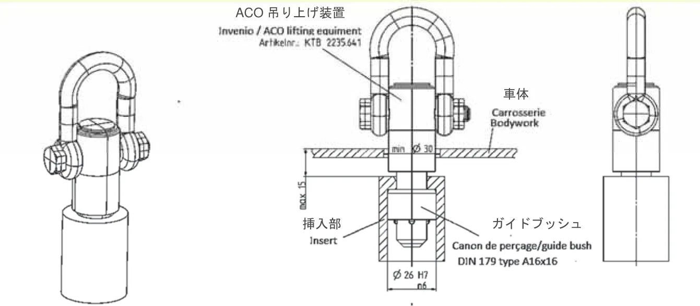</figure>
<p>  </p>
<p>ᤄධ㒊ヲ⣽ᑍ </p>
<figure>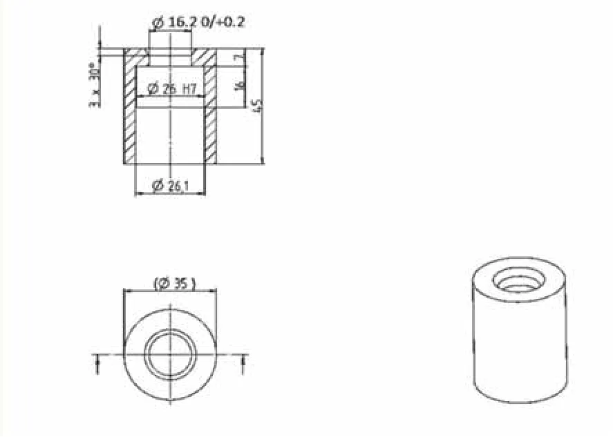</figure>
<p>   </p>
<p><span class="pagemark" id="p81">P.81</span>ᅗ  No. ᅗ  1  ᇶ‽㠃  2  ࢫ࢟ ࢵࢻࣈࣟ ࢵࢡ  3  ࢸࣥ ࣉ࣮ࣞ ࢺ㸯ࠊࢻࣛ ࢖ࣂ࣮ ࠾ࡼࡧྠ ஌⪅ࡢ㌟యࡢᐜ✚  4  ࢸࣥ ࣉ࣮ࣞ ࢺ㸰㸤㸱   ࢻࣛ ࢖ࣂ࣮ ࠾ࡼࡧྠ ஌⪅ࡢ㢌㒊ࡢᐜ✚ࠊࢻࣛ ࢖ࣂ࣮ ࡢど⏺  5  ㌴యᚋ㒊ࡢᶓ᪉ྥ ᖹᯈ  6  ࢸࣥ ࣉ࣮ࣞ ࢺ㸱㸤㸴ࠊࢥࢡࣆࢵࢺࡢฟධࡾ  7  ࢸࣥ ࣉ࣮ࣞ ࢺ㸵㸤㸶ࠊࢻࣛ ࢖ࣂ࣮ ࡢど⏺  8  ࢥࢡࣆࢵࢺෆࡢࢻࣛ ࢖ࣂ࣮ ࡢ఩⨨  9  ࢸࣥ ࣉ࣮ࣞ ࢺ㸯㹼㸶ࡢ⤌ࡳྜ ࢃࡏ  10  ࢸࣥ ࣉ࣮ࣞ ࢺ㸷㸪㸯㸮࠾ࡼࡧ㸯㸯ࠊ࣍ ࢖࣮ࣝ ࢔࣮ ࢳࡢษࡾᢤࡁ  11  ࢔ࣥ ࢸࢼࡢࣞ ࢭࣉࢱࢡࣝ ᅗ  12  ࢵࢻࣞ ࢫࢺᅗ  13  ᗙᖍࡢᶓ᪉ྥ ࠿ࡽぢࡓᅗ  14  ࢥࢡࣆࢵࢺ✵Ẽ ࢭࣥ ࢧ࣮ ࡢࢩ࣮ࣝ ࢻࡢᅗ      </p>
<p><span class="pagemark" id="p82">P.82</span>ᅗ㸯</p>
<figure>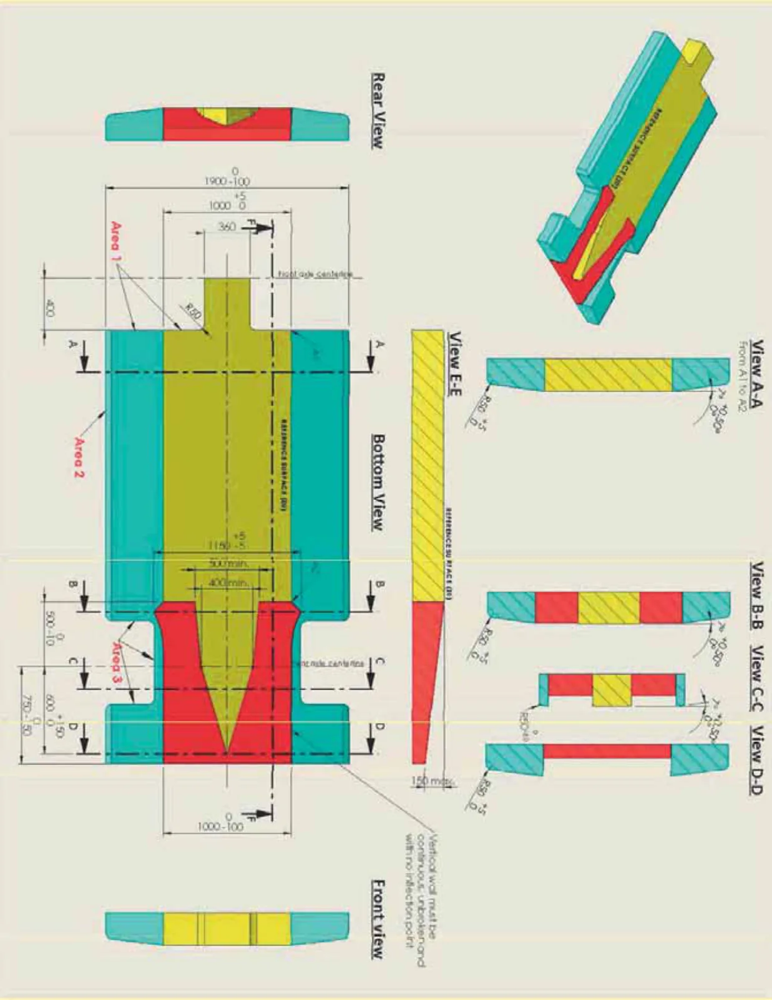</figure>
<p> 㸺ᅗ୰㸼 ᇶ‽㠃Zࢮࣟ ࠊ๓㒊㌴㍈୰ᚰ⥺ࠊᚋ㠃どࠊ๓㒊ࠊ࢚ࣜ ࢔㸯ࠊ࢚ࣜ ࢔㸰ࠊ࢚ࣜ ࢔㸱ࠊᚋ㒊㌴㍈୰ᚰ⥺ࠊ๓㠃どᆶ┤ቨࡣ㐃⥆ⓗ࡛ ࠊษࢀ┠࡞ࡃࠊ‴᭤㒊ࡢ࡞࠸ࡶࡢ࡛ ࡞ࡅࢀࡤ࡞ࡽ࡞࠸ࠋ  </p>
<p><span class="pagemark" id="p83">P.83</span>ᅗ㸰</p>
<figure>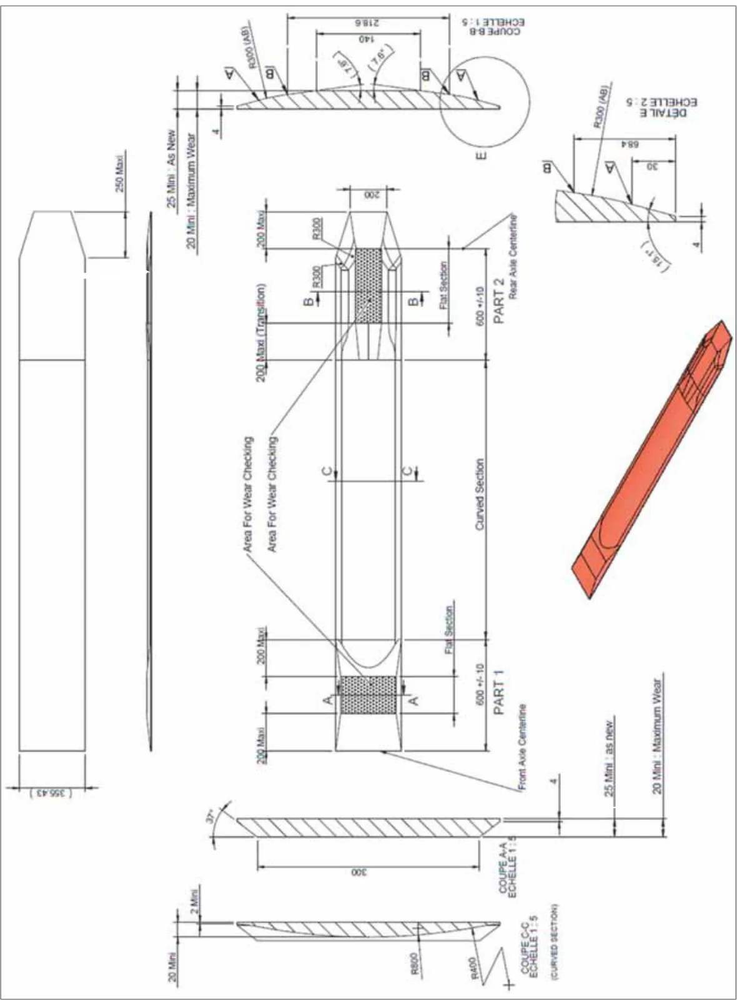</figure>
<p> 㸺ᅗ୰㸼 ᪂ရࠊ᭱ ኱☻⪖ࠊ☻⪖᳨ ᰝ㡿ᇦ 㸦⛣⾜㒊㸧ࠊ᩿ 㠃C-C ࢫࢣ࣮ࣝ ࠊ㸦‴᭤ᇦ㸧ࠊ๓㒊㌴㍈୰ᚰ⥺ࠊᚋ㒊㌴㍈୰ᚰ⥺ࠊ ᖹᆠ㡿ᇦࠊE㒊ヲ⣽  </p>
<p><span class="pagemark" id="p84">P.84</span>ᅗ㸱 ࢸࣥ ࣉ࣮ࣞ ࢺ㸯 </p>
<figure>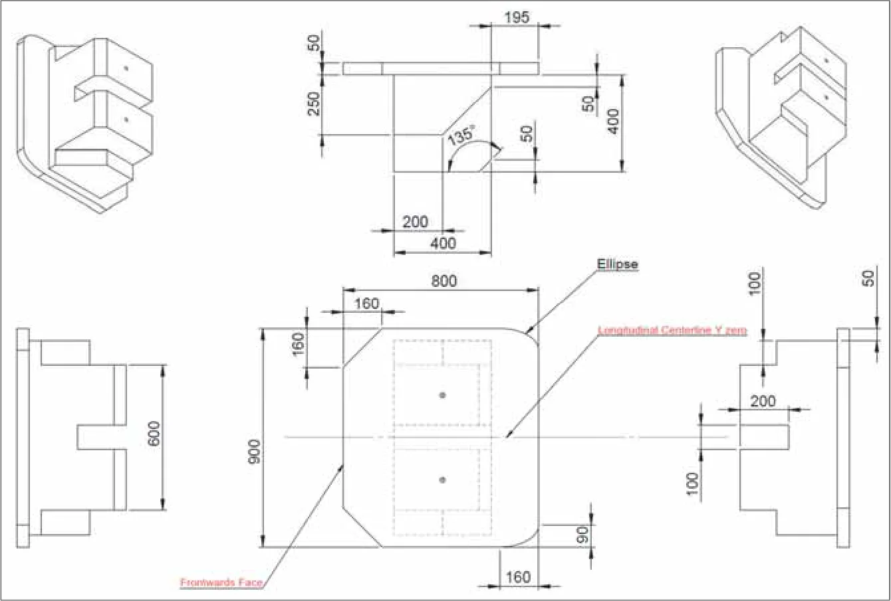</figure>
<p> 㸺ᅗ୰㸼 ᭤⥺ࠊ๓ᚋ᪉ྥ ୰ᚰ⥺Yࢮࣟ ࠊṇ㠃  </p>
<p><span class="pagemark" id="p85">P.85</span>ᅗ㸲 ࢸࣥ ࣉ࣮ࣞ ࢺ㸰㸤㸱 </p>
<figure>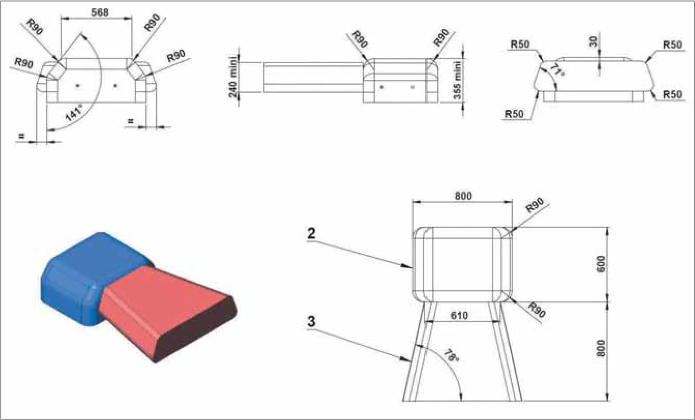</figure>
<p>    ᅗ㸳</p>
<p></p>
<figure>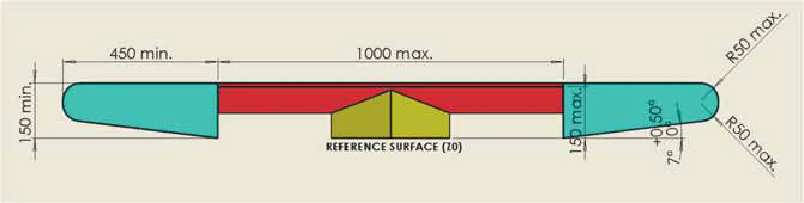</figure>
<p> 㸺ᅗ୰㸼 ᇶ‽㠃  </p>
<p><span class="pagemark" id="p86">P.86</span>ᅗ㸴 ࢸࣥ ࣉ࣮ࣞ ࢺ㸳㸤㸴 </p>
<figure>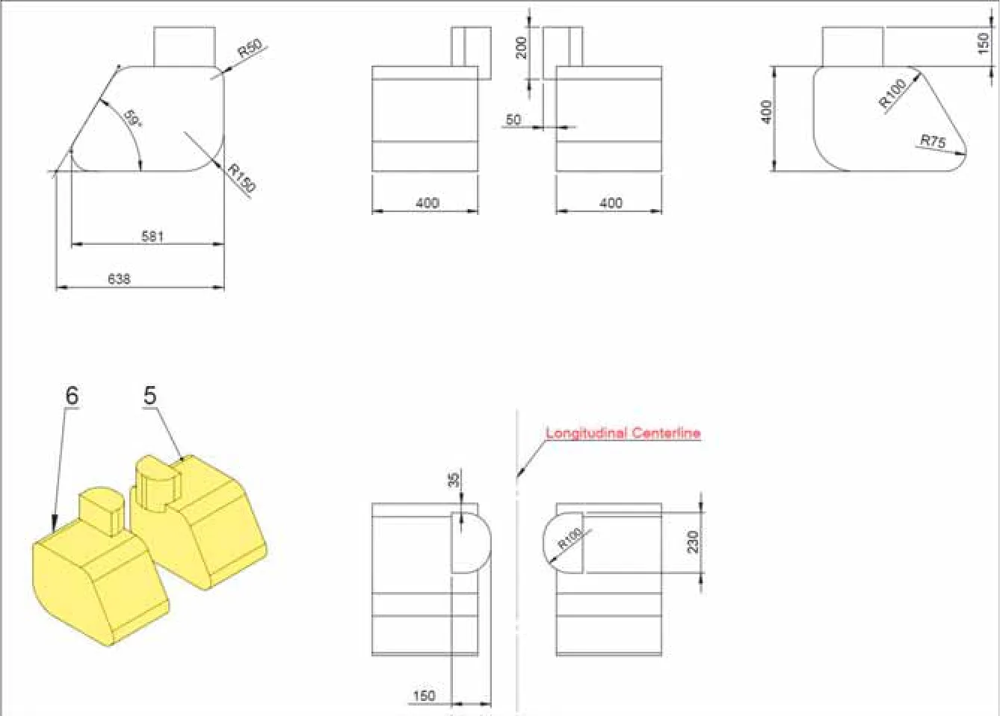</figure>
<p> 㸺ᅗ୰㸼 ๓ᚋ᪉ྥ ୰ᚰ⥺   </p>
<p><span class="pagemark" id="p87">P.87</span>ᅗ㸵 ࢸࣥ ࣉ࣮ࣞ ࢺ㸵㸤㸶㸦ഃ㠃ᅗࠊᕥྑ 㸧 </p>
<figure>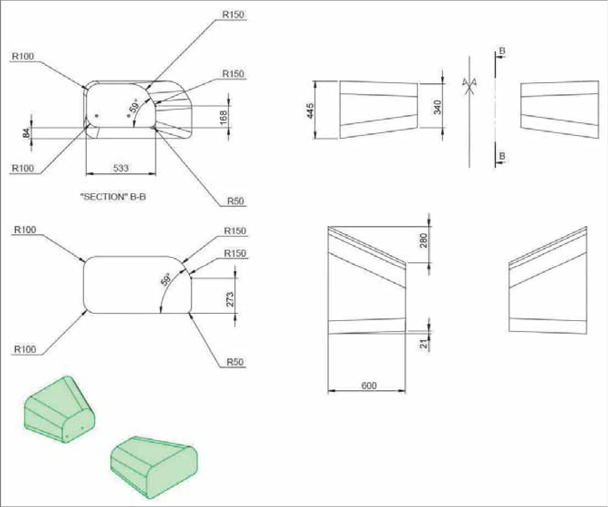</figure>
<p> 㸺ᅗ୰㸼 㠃</p>
<p>  </p>
<p><span class="pagemark" id="p88">P.88</span>ᅗ㸶</p>
<figure>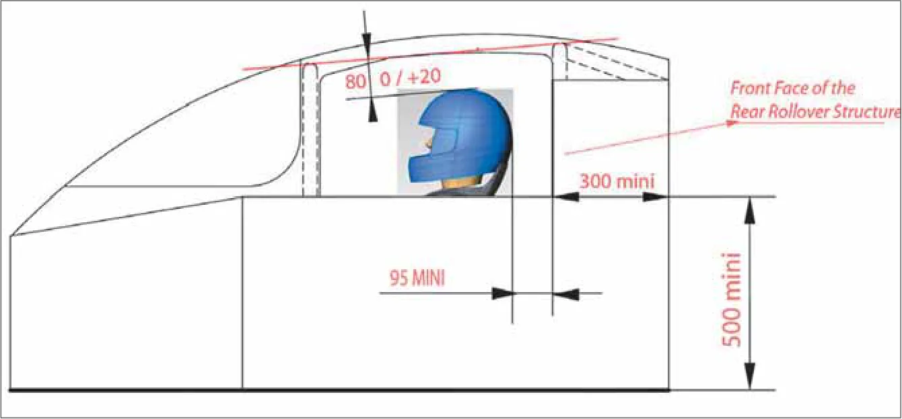</figure>
<p> 㸺ᅗ୰㸼 ᚋ㒊࣮࣮ࣟࣝ࢜ ࣂ࣮ ᵓ㐀యࡢ๓㠃</p>
<p>  </p>
<p><span class="pagemark" id="p89">P.89</span>ᅗ㸷 ࢸࣥ ࣉ࣮ࣞ ࢺ࢔ࢵࢭࣥ ࣈ࣮ࣜ  </p>
<figure>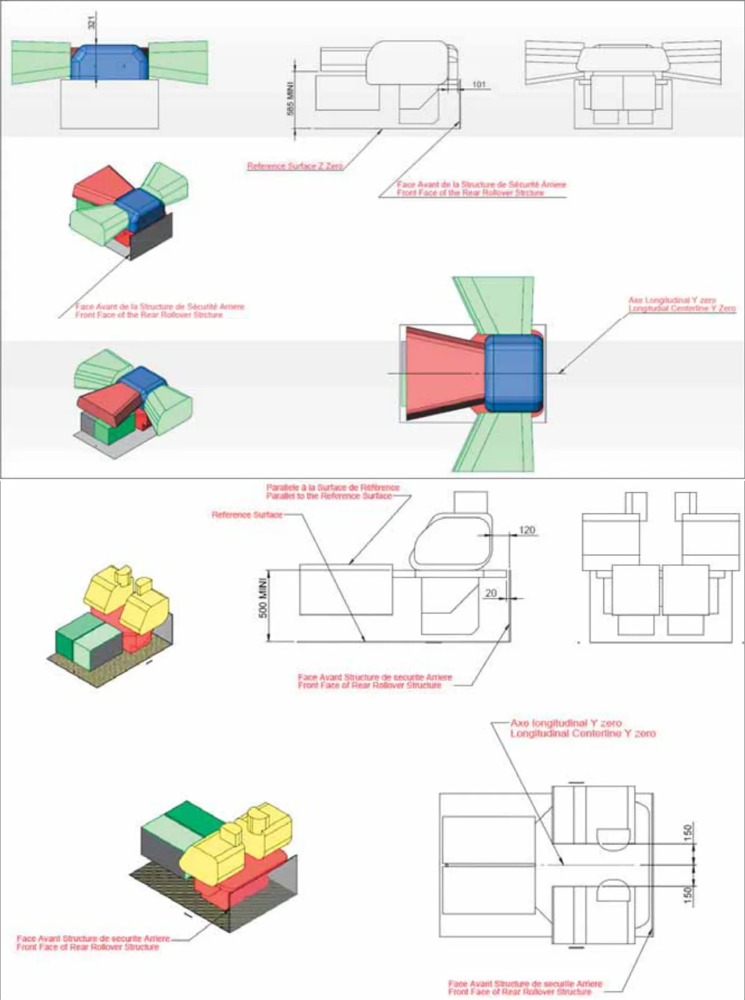</figure>
<p></p>
<p> 㸺ᅗ୰㸼 ᇶ‽㠃= ࢮࣟ ࠊᚋ㒊࣮࣮ࣟࣝ࢜ ࣂ࣮ ᵓ㐀యࡢ๓㠃ࠊ๓ᚋ᪉ྥ ୰ᚰ⥺&lt; ࢮࣟ ࠊᇶ‽㠃࡟ᖹ⾜ࠊᇶ‽㠃</p>
<p><span class="pagemark" id="p90">P.90</span>ᅗ㸯㸮 ࢸࣥ ࣉ࣮ࣞ ࢺ⤌ࡳྜ ࢃࡏ </p>
<figure>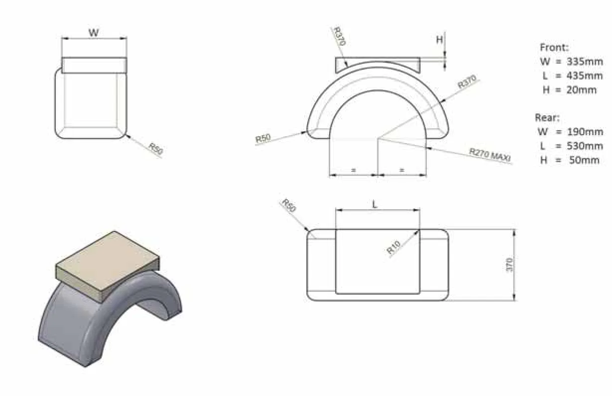</figure>
<p>  </p>
<p><span class="pagemark" id="p91">P.91</span>ᅗ㸯㸯 </p>
<figure>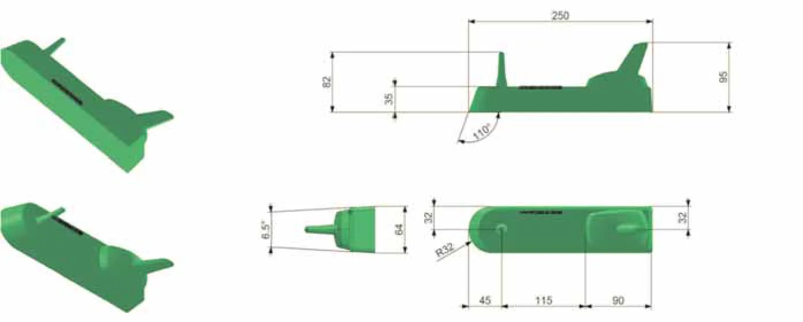</figure>
<p>  㔜せ࡞ὀゎ 㸫 ḟࡢᵓ㐀≀ࢆࢥࢡࣆࢵࢺᨭᣢయࡢ㡬㒊࡟ᦚ㍕ࡍࡿࡇ࡜ࡀ⩏ົ ௜ࡅࡽࢀࡿ㸸㹒㹔࢔ࣥ ࢸࢼࠊ࠾ࡼࡧ 㹄㹇㸿ࢸ࣓ࣞ ࢺ࣮ࣜ ࢔ࣥ ࢸࢼ 㸫 ᙜヱᵓ㐀≀ࡢୖ ࡟ࡣࡑࡢ௚୍ ษࡢ㒊ရࡀ࡞࠸ࡇ࡜ࠋ 㸫 ᵓ㐀≀࡜ࡢ᭱ ᑠ㊥㞳ࡀ㸯㸮㸮㹫㹫ࢆ㉸࠼ࡿሙྜ ࡢࣆࢺ࣮ ⟶ࢆ㝖ࡁࠊᵓ㐀≀ࡢ๓࡟ࡣࡑࡢ௚୍ ษࡢ 㒊ရࡀ࡞࠸ࡇ࡜ࠋ 㸫 ᵓ㐀యᚋ᪉ࡢࡶ࠺㸯ࡘࡢ࢔ࣥ ࢸࢼࡲ࡛ ࡢ᭱ ᑠ㊥㞳ࡣ㸳㸮㹫㹫࡛ ࠶ࡿࠋ 㸫 ḟࡢᵓ㐀యࡣ㌴୧ࡢ᭱ ኱㧗ࡢእഃ࡜࡞ࡿࡇ࡜ࡀ࡛ ࡁࡿࠋ 㸫 ᵓ㐀యࡣ࣮࢝࣎ࣥ ࣇ࢓࢖ࣂ࣮〇࡛ ࡞ࡅࢀࡤ࡞ࡽ࡞࠸ࠋ 㸫 㹄㹇㸿ࢸ࣓ࣞ ࢺ࣮ࣜ ࢔ࣥ ࢸࢼ࠿ࡽ㹄㹇㸿ࢹ࣮ ࢱ࣮ࣟ࢞ ࡬࡜⾜ࡃ㹄㹇㸿ࢸ࣓ࣞ ࢺ࣮ࣜ ࢔ࣥ ࢸࢼ⏝ࡢ 㹐㹄ࢣ࣮ ࣈࣝ ࡣ㸯ࡘࡢ㒊ရ࡛ ࡞ࡅࢀࡤ࡞ࡽ࡞࠸ࠋ ┦஫᥋⥆ࡣㄆࡵࡽࢀ࡞࠸㸦㹄㹇㸿ࢹ࣮ ࢱ࣮ࣟ࢞〇㐀⪅ࡀ౪⤥ࡍࡿᖏᇦ㏻㐣ࣇ࢕ࣝ ࢱ࣮ ࢆྵ ࡴࡶࡢ ࡣ㝖ࡃ㸧ࠋ 㸫 㹄㹇㸿ࢸ࣓ࣞ ࢺ࣮ࣜ ࢔ࣥ ࢸࢼ⏝ࡢ㹐㹄ࢣ࣮ ࣈࣝ ࡢ᭱ ኱㛗ࡣ㸰㹫ࠋ 㸫 ࢸ࣓ࣞ ࢺ࣮ࣜ ࢔ࣥ ࢸࢼ࠾ࡼࡧ㹅㹎㹑࢔ࣥ ࢸࢼ⏝ࡢ㹐㹄ࢣ࣮ ࣈࣝ ࡣࠊ㹄㹇㸿ࢹ࣮ ࢱ࣮ࣟ࢞〇㐀⪅ࡀ ౪⤥ࡍࡿ⩏ົ ௜ࡅࡽࢀࡿࢣ࣮ ࣈ࡛ࣝ ࡞ࡅࢀࡤ࡞ࡽ࡞࠸ࠋ 㸫 㹄㹇㸿ࢹ࣮ ࢱ࣮ࣟ࢞ ⏝ࡢ㹅㹎㹑࢔ࣥ ࢸࢼࡣࠊࡑࡢ௚୍ ษࡢ࢔ࣥ ࢸࢼࡢ㸵㸮㸮㹫㹫⌫ᙧ⠊ᅖࡢእഃ࡛ ࡞ࡅࢀࡤ࡞ࡽ࡞࠸ࠋ 㸫 㹅㹎㹑 㹄㹇㸿ࢹ࣮ ࢱ࣮ࣟ࢞ ࢔ࣥ ࢸࢼ࠿ࡽ㹄㹇㸿ࢹ࣮ ࢱ࣮ࣟ࢞ ࡬࡜⾜ࡃࠊ㹅㹎㹑 㹄㹇㸿ࢹ࣮ ࢱ࣮ࣟ࢞ ࢔ࣥ ࢸࢼ⏝ࡢ㹐㹑ࢣ࣮ ࣈࣝ ࡣ㸯ࡘࡢ㒊ရ࡛ ࡞ࡅࢀࡤ࡞ࡽ࡞࠸ࠋ ┦஫᥋⥆ࡣㄆࡵࡽࢀ࡞࠸ࠋ   </p>
<p><span class="pagemark" id="p92">P.92</span>ᅗ㸯㸰 </p>
<figure>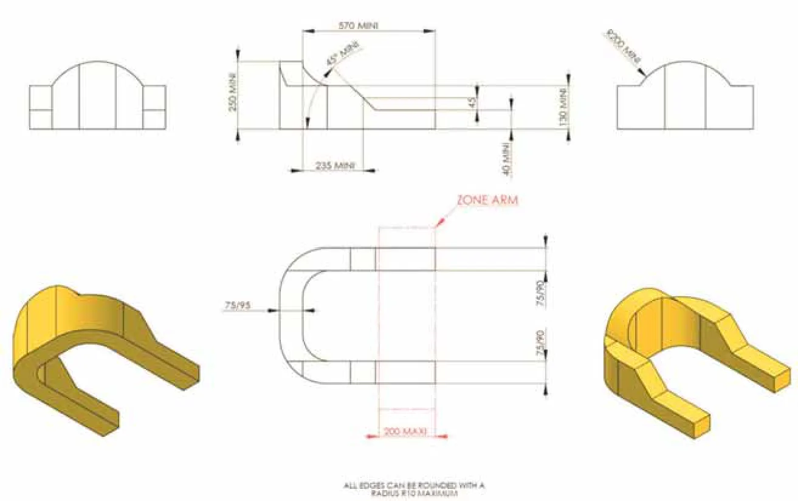</figure>
<p> ࡍ࡭࡚ ࡢ➃㒊ࡀ᭱ ኱R10 ࡢ༙ ᚄࢆࡘࡅ࡚ ୸ࡳࢆᖏࡧࡿࡇ࡜ࡀ࡛ ࡁࡿࠋ </p>
<p>ᅗ㸯㸱</p>
<figure>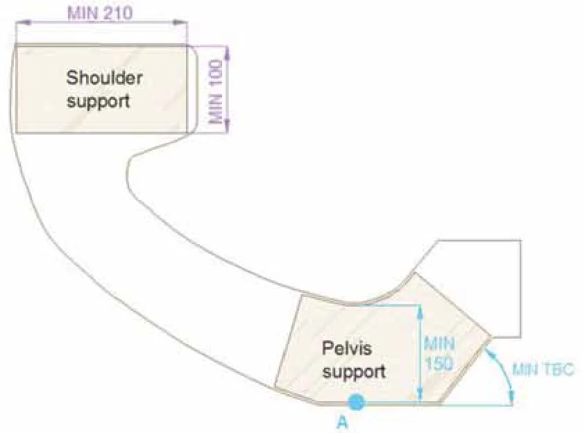</figure>
<p> 㸺ᅗ୰㸼 ⫪㒊ᨭᣢࠊ㦵┙ᨭᣢ  </p>
<p><span class="pagemark" id="p93">P.93</span></p>
<p>ᅗ㸯㸲 </p>
<figure>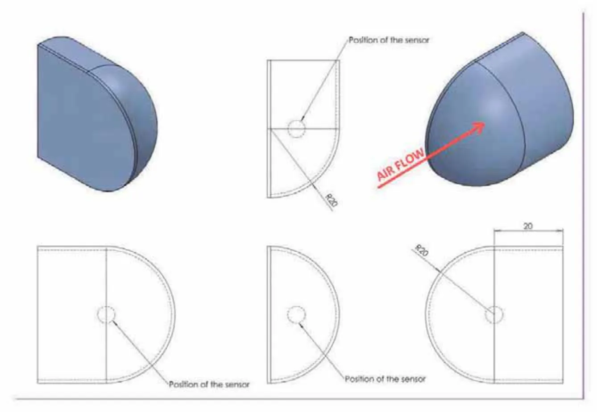</figure>
<p> ࢭࣥ ࢧ࣮ ࡢ఩⨨ ✵Ẽὶ </p>
<footer class="docfoot">自動変換のため誤りが含まれる可能性があります。競技における判断は必ず <a href="https://motorsports.jaf.or.jp/-/media/1/3375/3379/3400/3467/3473/3502/2022_fia_wec_tech_reg_lmp1_nonhybrid_ja_20201216.pdf" rel="nofollow">JAF の原本 PDF</a> をご確認ください。<br>原本: 2022年WEC技術規則_LMP1-非ハイブリッド_日本語版_20201216（JAF） ／ 自動変換 2026-09-09 ／ パイプライン 0.2.0 ／ <a href="/">検索して読む</a></footer>
</article></body></html>